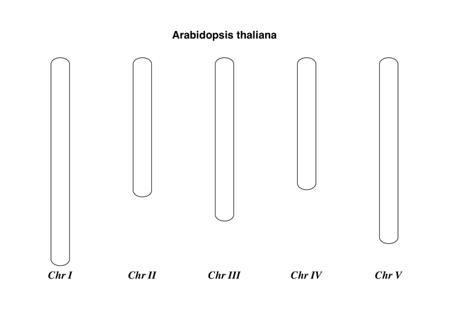

Biopython Tutorial and CookbookJeff Chang, Brad Chapman, Iddo Friedberg, Thomas Hamelryck, |
The Biopython Project is an international association of developers of freely available Python (http://www.python.org) tools for computational molecular biology. Python is an object oriented, interpreted, flexible language that is becoming increasingly popular for scientific computing. Python is easy to learn, has a very clear syntax and can easily be extended with modules written in C, C++ or FORTRAN.
The Biopython web site (http://www.biopython.org) provides an online resource for modules, scripts, and web links for developers of Python-based software for bioinformatics use and research. Basically, the goal of Biopython is to make it as easy as possible to use Python for bioinformatics by creating high-quality, reusable modules and classes. Biopython features include parsers for various Bioinformatics file formats (BLAST, Clustalw, FASTA, Genbank,...), access to online services (NCBI, Expasy,...), interfaces to common and not-so-common programs (Clustalw, DSSP, MSMS...), a standard sequence class, various clustering modules, a KD tree data structure etc. and even documentation.
Basically, we just like to program in Python and want to make it as easy as possible to use Python for bioinformatics by creating high-quality, reusable modules and scripts.
The main Biopython releases have lots of functionality, including:
We hope this gives you plenty of reasons to download and start using Biopython!
All of the installation information for Biopython was separated from this document to make it easier to keep updated.
The short version is go to our downloads page (http://biopython.org/wiki/Download), download and install the listed dependencies, then download and install Biopython. Biopython runs on many platforms (Windows, Mac, and on the various flavors of Linux and Unix). For Windows we provide pre-compiled click-and-run installers, while for Unix and other operating systems you must install from source as described in the included README file. This is usually as simple as the standard commands:
python setup.py build python setup.py test sudo python setup.py install
(You can in fact skip the build and test, and go straight to the install – but its better to make sure everything seems to be working.)
The longer version of our installation instructions covers installation of Python, Biopython dependencies and Biopython itself. It is available in PDF (http://biopython.org/DIST/docs/install/Installation.pdf) and HTML formats (http://biopython.org/DIST/docs/install/Installation.html).
Bio.PDB: [18, Hamelryck and Manderick, 2003];
Bio.Cluster: [14, De Hoon et al., 2004];
Bio.Graphics.GenomeDiagram: [2, Pritchard et al., 2006];
Bio.Phylo and Bio.Phylo.PAML: [9, Talevich et al., 2012];

Prior to this, the Biopython logo was two yellow snakes forming a double helix around the word “BIOPYTHON”, designed by Henrik Vestergaard and Thomas Hamelryck in 2003 as part of an open competition.
NEWS.rst included with the source code (originally called
just NEWS), or read the
latest NEWS file on GitHub.For example, this will only work under Python 2:
>>> print "Hello World!" Hello World!
If you try that on Python 3 you’ll get a SyntaxError.
Under Python 3 you must write:
>>> print("Hello World!")
Hello World!
Surprisingly that will also work on Python 2 – but only for simple examples printing one thing. In general you need to add this magic line to the start of your Python scripts to use the print function under Python 2.6 and 2.7:
from __future__ import print_function
If you forget to add this magic import, under Python 2 you’ll see extra brackets produced by trying to use the print function when Python 2 is interpreting it as a print statement and a tuple.
>>> import Bio >>> print(Bio.__version__) ...If the “
import Bio” line fails, Biopython is not installed.
Note that those are double underscores before and after version.
If the second line fails, your version is very out of date.If the version string ends with a plus like “1.66+”, you
don’t have an official release, but an old snapshot of the in
development code after that version was released. This naming
was used until June 2016 in the run-up to Biopython 1.68..
If the version string ends with “.dev<number>” like
“1.68.dev0”, again you don’t have an official release,
but instead a snapshot of the in developement code before
that version was released.
Seq and
MutableSeq classes (and subclasses) use simple string-based
comparison (ignoring the alphabet other than if giving a warning),
which you can do explicitly with str(seq1) == str(seq2).Older versions of Biopython would use instance-based comparison
for Seq objects which you can do explicitly with
id(seq1) == id(seq2).
If you still need to support old versions of Biopython, use these explicit forms to avoid problems. See Section 3.11.
Seq object missing the upper & lower methods described in this Tutorial?str(my_seq).upper() to get an upper case string.
If you need a Seq object, try Seq(str(my_seq).upper()) but be careful about blindly re-using the same alphabet.Seq object translation method support the cds option described in this Tutorial?Bio.SeqIO and Bio.AlignIO read and write?Bio.SeqIO and Bio.AlignIO functions parse, read and write take filenames? They insist on handles!Bio.SeqIO.write() and Bio.AlignIO.write() functions accept a single record or alignment? They insist on a list or iterator![...] to create a list of one element.str(...) give me the full sequence of a Seq object?Bio.Blast work with the latest plain text NCBI blast output?Bio.Entrez.parse() work? The module imports fine but there is no parse function!Bio.Entrez.efetch() stopped working?retmode="text" to
your call.
Second, they are now stricter about how to provide a list of IDs – Biopython 1.59 onwards
turns a list into a comma separated string automatically.Bio.Blast.NCBIWWW.qblast() give the same results as the NCBI BLAST website?Bio.Blast.NCBIXML.read() work? The module imports but there is no read function!SeqRecord object have a letter_annotations attribute?SeqRecord to get a sub-record?SeqRecord objects together?Bio.SeqIO.convert() or Bio.AlignIO.convert() work? The modules import fine but there is no convert function!parse and write
functions as described in this tutorial (see Sections 5.5.2 and 6.2.1).Bio.SeqIO.index() work? The module imports fine but there is no index function!Bio.SeqIO.index_db() work? The module imports fine but there is no index_db function!MultipleSeqAlignment object? The Bio.Align module imports fine but this class isn’t there!Bio.Align.Generic.Alignment class supports some of its functionality, but using this is now discouraged.subprocess module directly.__init__.py files. If you are not used to looking for code in this file this can be confusing. The reason we do this is to make the imports easier for users. For instance, instead of having to do a “repetitive” import like from Bio.GenBank import GenBank, you can just use from Bio import GenBank.Bio.Fasta work?Bio.Fasta module in Biopython 1.51 (August 2009) and removed it in Biopython 1.55 (August 2010). There is a brief example showing how to convert old code to use Bio.SeqIO instead in the DEPRECATED.rst file.For more general questions, the Python FAQ pages http://www.python.org/doc/faq/ may be useful.
This section is designed to get you started quickly with Biopython, and to give a general overview of what is available and how to use it. All of the examples in this section assume that you have some general working knowledge of Python, and that you have successfully installed Biopython on your system. If you think you need to brush up on your Python, the main Python web site provides quite a bit of free documentation to get started with (http://www.python.org/doc/).
Since much biological work on the computer involves connecting with databases on the internet, some of the examples will also require a working internet connection in order to run.
Now that that is all out of the way, let’s get into what we can do with Biopython.
As mentioned in the introduction, Biopython is a set of libraries to provide the ability to deal with “things” of interest to biologists working on the computer. In general this means that you will need to have at least some programming experience (in Python, of course!) or at least an interest in learning to program. Biopython’s job is to make your job easier as a programmer by supplying reusable libraries so that you can focus on answering your specific question of interest, instead of focusing on the internals of parsing a particular file format (of course, if you want to help by writing a parser that doesn’t exist and contributing it to Biopython, please go ahead!). So Biopython’s job is to make you happy!
One thing to note about Biopython is that it often provides multiple ways of “doing the same thing.” Things have improved in recent releases, but this can still be frustrating as in Python there should ideally be one right way to do something. However, this can also be a real benefit because it gives you lots of flexibility and control over the libraries. The tutorial helps to show you the common or easy ways to do things so that you can just make things work. To learn more about the alternative possibilities, look in the Cookbook (Chapter 20, this has some cools tricks and tips), the Advanced section (Chapter 22), the built in “docstrings” (via the Python help command, or the API documentation) or ultimately the code itself.
Disputably (of course!), the central object in bioinformatics is the sequence. Thus, we’ll start with a quick introduction to the Biopython mechanisms for dealing with sequences, the Seq object, which we’ll discuss in more detail in Chapter 3.
Most of the time when we think about sequences we have in my mind a string of letters like ‘AGTACACTGGT’. You can create such Seq object with this sequence as follows - the “>>>” represents the Python prompt followed by what you would type in:
>>> from Bio.Seq import Seq
>>> my_seq = Seq("AGTACACTGGT")
>>> my_seq
Seq('AGTACACTGGT', Alphabet())
>>> print(my_seq)
AGTACACTGGT
>>> my_seq.alphabet
Alphabet()
What we have here is a sequence object with a generic alphabet - reflecting the fact we have not specified if this is a DNA or protein sequence (okay, a protein with a lot of Alanines, Glycines, Cysteines and Threonines!). We’ll talk more about alphabets in Chapter 3.
In addition to having an alphabet, the Seq object differs from the Python string in the methods it supports. You can’t do this with a plain string:
>>> my_seq
Seq('AGTACACTGGT', Alphabet())
>>> my_seq.complement()
Seq('TCATGTGACCA', Alphabet())
>>> my_seq.reverse_complement()
Seq('ACCAGTGTACT', Alphabet())
The next most important class is the SeqRecord or Sequence Record. This holds a sequence (as a Seq object) with additional annotation including an identifier, name and description. The Bio.SeqIO module for reading and writing sequence file formats works with SeqRecord objects, which will be introduced below and covered in more detail by Chapter 5.
This covers the basic features and uses of the Biopython sequence class. Now that you’ve got some idea of what it is like to interact with the Biopython libraries, it’s time to delve into the fun, fun world of dealing with biological file formats!
Before we jump right into parsers and everything else to do with Biopython, let’s set up an example to motivate everything we do and make life more interesting. After all, if there wasn’t any biology in this tutorial, why would you want you read it?
Since I love plants, I think we’re just going to have to have a plant based example (sorry to all the fans of other organisms out there!). Having just completed a recent trip to our local greenhouse, we’ve suddenly developed an incredible obsession with Lady Slipper Orchids (if you wonder why, have a look at some Lady Slipper Orchids photos on Flickr, or try a Google Image Search).
Of course, orchids are not only beautiful to look at, they are also extremely interesting for people studying evolution and systematics. So let’s suppose we’re thinking about writing a funding proposal to do a molecular study of Lady Slipper evolution, and would like to see what kind of research has already been done and how we can add to that.
After a little bit of reading up we discover that the Lady Slipper Orchids are in the Orchidaceae family and the Cypripedioideae sub-family and are made up of 5 genera: Cypripedium, Paphiopedilum, Phragmipedium, Selenipedium and Mexipedium.
That gives us enough to get started delving for more information. So, let’s look at how the Biopython tools can help us. We’ll start with sequence parsing in Section 2.4, but the orchids will be back later on as well - for example we’ll search PubMed for papers about orchids and extract sequence data from GenBank in Chapter 9, extract data from Swiss-Prot from certain orchid proteins in Chapter 10, and work with ClustalW multiple sequence alignments of orchid proteins in Section 6.4.1.
A large part of much bioinformatics work involves dealing with the many types of file formats designed to hold biological data. These files are loaded with interesting biological data, and a special challenge is parsing these files into a format so that you can manipulate them with some kind of programming language. However the task of parsing these files can be frustrated by the fact that the formats can change quite regularly, and that formats may contain small subtleties which can break even the most well designed parsers.
We are now going to briefly introduce the Bio.SeqIO module – you can find out more in Chapter 5. We’ll start with an online search for our friends, the lady slipper orchids. To keep this introduction simple, we’re just using the NCBI website by hand. Let’s just take a look through the nucleotide databases at NCBI, using an Entrez online search (http://www.ncbi.nlm.nih.gov:80/entrez/query.fcgi?db=Nucleotide) for everything mentioning the text Cypripedioideae (this is the subfamily of lady slipper orchids).
When this tutorial was originally written, this search gave us only 94 hits, which we saved as a FASTA formatted text file and as a GenBank formatted text file (files ls_orchid.fasta and ls_orchid.gbk, also included with the Biopython source code under docs/tutorial/examples/).
If you run the search today, you’ll get hundreds of results! When following the tutorial, if you want to see the same list of genes, just download the two files above or copy them from docs/examples/ in the Biopython source code. In Section 2.5 we will look at how to do a search like this from within Python.
If you open the lady slipper orchids FASTA file ls_orchid.fasta in your favourite text editor, you’ll see that the file starts like this:
>gi|2765658|emb|Z78533.1|CIZ78533 C.irapeanum 5.8S rRNA gene and ITS1 and ITS2 DNA CGTAACAAGGTTTCCGTAGGTGAACCTGCGGAAGGATCATTGATGAGACCGTGGAATAAACGATCGAGTG AATCCGGAGGACCGGTGTACTCAGCTCACCGGGGGCATTGCTCCCGTGGTGACCCTGATTTGTTGTTGGG ...
It contains 94 records, each has a line starting with “>” (greater-than symbol) followed by the sequence on one or more lines. Now try this in Python:
from Bio import SeqIO
for seq_record in SeqIO.parse("ls_orchid.fasta", "fasta"):
print(seq_record.id)
print(repr(seq_record.seq))
print(len(seq_record))
You should get something like this on your screen:
gi|2765658|emb|Z78533.1|CIZ78533
Seq('CGTAACAAGGTTTCCGTAGGTGAACCTGCGGAAGGATCATTGATGAGACCGTGG...CGC', SingleLetterAlphabet())
740
...
gi|2765564|emb|Z78439.1|PBZ78439
Seq('CATTGTTGAGATCACATAATAATTGATCGAGTTAATCTGGAGGATCTGTTTACT...GCC', SingleLetterAlphabet())
592
Notice that the FASTA format does not specify the alphabet, so Bio.SeqIO has defaulted to the rather generic SingleLetterAlphabet() rather than something DNA specific.
Now let’s load the GenBank file ls_orchid.gbk instead - notice that the code to do this is almost identical to the snippet used above for the FASTA file - the only difference is we change the filename and the format string:
from Bio import SeqIO
for seq_record in SeqIO.parse("ls_orchid.gbk", "genbank"):
print(seq_record.id)
print(repr(seq_record.seq))
print(len(seq_record))
This should give:
Z78533.1
Seq('CGTAACAAGGTTTCCGTAGGTGAACCTGCGGAAGGATCATTGATGAGACCGTGG...CGC', IUPACAmbiguousDNA())
740
...
Z78439.1
Seq('CATTGTTGAGATCACATAATAATTGATCGAGTTAATCTGGAGGATCTGTTTACT...GCC', IUPACAmbiguousDNA())
592
This time Bio.SeqIO has been able to choose a sensible alphabet, IUPAC Ambiguous DNA. You’ll also notice that a shorter string has been used as the seq_record.id in this case.
Biopython has a lot of parsers, and each has its own little special niches based on the sequence format it is parsing and all of that. Chapter 5 covers Bio.SeqIO in more detail, while Chapter 6 introduces Bio.AlignIO for sequence alignments.
While the most popular file formats have parsers integrated into Bio.SeqIO and/or Bio.AlignIO, for some of the rarer and unloved file formats there is either no parser at all, or an old parser which has not been linked in yet.
Please also check the wiki pages http://biopython.org/wiki/SeqIO and http://biopython.org/wiki/AlignIO for the latest information, or ask on the mailing list. The wiki pages should include an up to date list of supported file types, and some additional examples.
The next place to look for information about specific parsers and how to do cool things with them is in the Cookbook (Chapter 20 of this Tutorial). If you don’t find the information you are looking for, please consider helping out your poor overworked documentors and submitting a cookbook entry about it! (once you figure out how to do it, that is!)
One of the very common things that you need to do in bioinformatics is extract information from biological databases. It can be quite tedious to access these databases manually, especially if you have a lot of repetitive work to do. Biopython attempts to save you time and energy by making some on-line databases available from Python scripts. Currently, Biopython has code to extract information from the following databases:
Bio.SCOP.search() function.
The code in these modules basically makes it easy to write Python code that interact with the CGI scripts on these pages, so that you can get results in an easy to deal with format. In some cases, the results can be tightly integrated with the Biopython parsers to make it even easier to extract information.
Now that you’ve made it this far, you hopefully have a good understanding of the basics of Biopython and are ready to start using it for doing useful work. The best thing to do now is finish reading this tutorial, and then if you want start snooping around in the source code, and looking at the automatically generated documentation.
Once you get a picture of what you want to do, and what libraries in Biopython will do it, you should take a peak at the Cookbook (Chapter 20), which may have example code to do something similar to what you want to do.
If you know what you want to do, but can’t figure out how to do it, please feel free to post questions to the main Biopython list (see http://biopython.org/wiki/Mailing_lists). This will not only help us answer your question, it will also allow us to improve the documentation so it can help the next person do what you want to do.
Enjoy the code!
Biological sequences are arguably the central object in Bioinformatics, and in this chapter we’ll introduce the Biopython mechanism for dealing with sequences, the Seq object.
Chapter 4 will introduce the related SeqRecord object, which combines the sequence information with any annotation, used again in Chapter 5 for Sequence Input/Output.
Sequences are essentially strings of letters like AGTACACTGGT, which seems very natural since this is the most common way that sequences are seen in biological file formats.
There are two important differences between Seq objects and standard Python strings.
First of all, they have different methods. Although the Seq object supports many of the same methods as a plain string, its translate() method differs by doing biological translation, and there are also additional biologically relevant methods like reverse_complement().
Secondly, the Seq object has an important attribute, alphabet, which is an object describing what the individual characters making up the sequence string “mean”, and how they should be interpreted. For example, is AGTACACTGGT a DNA sequence, or just a protein sequence that happens to be rich in Alanines, Glycines, Cysteines
and Threonines?
The alphabet object is perhaps the important thing that makes the Seq object more than just a string. The currently available alphabets for Biopython are defined in the Bio.Alphabet module. We’ll use the IUPAC alphabets (http://www.chem.qmw.ac.uk/iupac/) here to deal with some of our favorite objects: DNA, RNA and Proteins.
Bio.Alphabet.IUPAC provides basic definitions for proteins, DNA and RNA, but additionally provides the ability to extend and customize the basic definitions. For instance, for proteins, there is a basic IUPACProtein class, but there is an additional ExtendedIUPACProtein class providing for the additional elements “U” (or “Sec” for selenocysteine) and “O” (or “Pyl” for pyrrolysine), plus the ambiguous symbols “B” (or “Asx” for asparagine or aspartic acid), “Z” (or “Glx” for glutamine or glutamic acid), “J” (or “Xle” for leucine isoleucine) and “X” (or “Xxx” for an unknown amino acid). For DNA you’ve got choices of IUPACUnambiguousDNA, which provides for just the basic letters, IUPACAmbiguousDNA (which provides for ambiguity letters for every possible situation) and ExtendedIUPACDNA, which allows letters for modified bases. Similarly, RNA can be represented by IUPACAmbiguousRNA or IUPACUnambiguousRNA.
The advantages of having an alphabet class are two fold. First, this gives an idea of the type of information the Seq object contains. Secondly, this provides a means of constraining the information, as a means of type checking.
Now that we know what we are dealing with, let’s look at how to utilize this class to do interesting work. You can create an ambiguous sequence with the default generic alphabet like this:
>>> from Bio.Seq import Seq
>>> my_seq = Seq("AGTACACTGGT")
>>> my_seq
Seq('AGTACACTGGT', Alphabet())
>>> my_seq.alphabet
Alphabet()
However, where possible you should specify the alphabet explicitly when creating your sequence objects - in this case an unambiguous DNA alphabet object:
>>> from Bio.Seq import Seq
>>> from Bio.Alphabet import IUPAC
>>> my_seq = Seq("AGTACACTGGT", IUPAC.unambiguous_dna)
>>> my_seq
Seq('AGTACACTGGT', IUPACUnambiguousDNA())
>>> my_seq.alphabet
IUPACUnambiguousDNA()
Unless of course, this really is an amino acid sequence:
>>> from Bio.Seq import Seq
>>> from Bio.Alphabet import IUPAC
>>> my_prot = Seq("AGTACACTGGT", IUPAC.protein)
>>> my_prot
Seq('AGTACACTGGT', IUPACProtein())
>>> my_prot.alphabet
IUPACProtein()
In many ways, we can deal with Seq objects as if they were normal Python strings, for example getting the length, or iterating over the elements:
>>> from Bio.Seq import Seq
>>> from Bio.Alphabet import IUPAC
>>> my_seq = Seq("GATCG", IUPAC.unambiguous_dna)
>>> for index, letter in enumerate(my_seq):
... print("%i %s" % (index, letter))
0 G
1 A
2 T
3 C
4 G
>>> print(len(my_seq))
5
You can access elements of the sequence in the same way as for strings (but remember, Python counts from zero!):
>>> print(my_seq[0]) #first letter G >>> print(my_seq[2]) #third letter T >>> print(my_seq[-1]) #last letter G
The Seq object has a .count() method, just like a string.
Note that this means that like a Python string, this gives a
non-overlapping count:
>>> from Bio.Seq import Seq
>>> "AAAA".count("AA")
2
>>> Seq("AAAA").count("AA")
2
For some biological uses, you may actually want an overlapping count (i.e. 3 in this trivial example). When searching for single letters, this makes no difference:
>>> from Bio.Seq import Seq
>>> from Bio.Alphabet import IUPAC
>>> my_seq = Seq('GATCGATGGGCCTATATAGGATCGAAAATCGC', IUPAC.unambiguous_dna)
>>> len(my_seq)
32
>>> my_seq.count("G")
9
>>> 100 * float(my_seq.count("G") + my_seq.count("C")) / len(my_seq)
46.875
While you could use the above snippet of code to calculate a GC%, note that the Bio.SeqUtils module has several GC functions already built. For example:
>>> from Bio.Seq import Seq
>>> from Bio.Alphabet import IUPAC
>>> from Bio.SeqUtils import GC
>>> my_seq = Seq('GATCGATGGGCCTATATAGGATCGAAAATCGC', IUPAC.unambiguous_dna)
>>> GC(my_seq)
46.875
Note that using the Bio.SeqUtils.GC() function should automatically cope with mixed case sequences and the ambiguous nucleotide S which means G or C.
Also note that just like a normal Python string, the Seq object is in some ways “read-only”. If you need to edit your sequence, for example simulating a point mutation, look at the Section 3.12 below which talks about the MutableSeq object.
A more complicated example, let’s get a slice of the sequence:
>>> from Bio.Seq import Seq
>>> from Bio.Alphabet import IUPAC
>>> my_seq = Seq("GATCGATGGGCCTATATAGGATCGAAAATCGC", IUPAC.unambiguous_dna)
>>> my_seq[4:12]
Seq('GATGGGCC', IUPACUnambiguousDNA())
Two things are interesting to note. First, this follows the normal conventions for Python strings. So the first element of the sequence is 0 (which is normal for computer science, but not so normal for biology). When you do a slice the first item is included (i.e. 4 in this case) and the last is excluded (12 in this case), which is the way things work in Python, but of course not necessarily the way everyone in the world would expect. The main goal is to stay consistent with what Python does.
The second thing to notice is that the slice is performed on the sequence data string, but the new object produced is another Seq object which retains the alphabet information from the original Seq object.
Also like a Python string, you can do slices with a start, stop and stride (the step size, which defaults to one). For example, we can get the first, second and third codon positions of this DNA sequence:
>>> my_seq[0::3]
Seq('GCTGTAGTAAG', IUPACUnambiguousDNA())
>>> my_seq[1::3]
Seq('AGGCATGCATC', IUPACUnambiguousDNA())
>>> my_seq[2::3]
Seq('TAGCTAAGAC', IUPACUnambiguousDNA())
Another stride trick you might have seen with a Python string is the use of a -1 stride to reverse the string. You can do this with a Seq object too:
>>> my_seq[::-1]
Seq('CGCTAAAAGCTAGGATATATCCGGGTAGCTAG', IUPACUnambiguousDNA())
If you really do just need a plain string, for example to write to a file, or insert into a database, then this is very easy to get:
>>> str(my_seq) 'GATCGATGGGCCTATATAGGATCGAAAATCGC'
Since calling str() on a Seq object returns the full sequence as a string,
you often don’t actually have to do this conversion explicitly.
Python does this automatically in the print function
(and the print statement under Python 2):
>>> print(my_seq) GATCGATGGGCCTATATAGGATCGAAAATCGC
You can also use the Seq object directly with a %s placeholder when using the Python string formatting or interpolation operator (%):
>>> fasta_format_string = ">Name\n%s\n" % my_seq >>> print(fasta_format_string) >Name GATCGATGGGCCTATATAGGATCGAAAATCGC <BLANKLINE>
This line of code constructs a simple FASTA format record (without worrying about line wrapping).
Section 4.6 describes a neat way to get a FASTA formatted
string from a SeqRecord object, while the more general topic of reading and
writing FASTA format sequence files is covered in Chapter 5.
>>> str(my_seq) 'GATCGATGGGCCTATATAGGATCGAAAATCGC'
Naturally, you can in principle add any two Seq objects together - just like you can with Python strings to concatenate them. However, you can’t add sequences with incompatible alphabets, such as a protein sequence and a DNA sequence:
>>> from Bio.Alphabet import IUPAC
>>> from Bio.Seq import Seq
>>> protein_seq = Seq("EVRNAK", IUPAC.protein)
>>> dna_seq = Seq("ACGT", IUPAC.unambiguous_dna)
>>> protein_seq + dna_seq
Traceback (most recent call last):
...
TypeError: Incompatible alphabets IUPACProtein() and IUPACUnambiguousDNA()
If you really wanted to do this, you’d have to first give both sequences generic alphabets:
>>> from Bio.Alphabet import generic_alphabet
>>> protein_seq.alphabet = generic_alphabet
>>> dna_seq.alphabet = generic_alphabet
>>> protein_seq + dna_seq
Seq('EVRNAKACGT', Alphabet())
Here is an example of adding a generic nucleotide sequence to an unambiguous IUPAC DNA sequence, resulting in an ambiguous nucleotide sequence:
>>> from Bio.Seq import Seq
>>> from Bio.Alphabet import generic_nucleotide
>>> from Bio.Alphabet import IUPAC
>>> nuc_seq = Seq("GATCGATGC", generic_nucleotide)
>>> dna_seq = Seq("ACGT", IUPAC.unambiguous_dna)
>>> nuc_seq
Seq('GATCGATGC', NucleotideAlphabet())
>>> dna_seq
Seq('ACGT', IUPACUnambiguousDNA())
>>> nuc_seq + dna_seq
Seq('GATCGATGCACGT', NucleotideAlphabet())
You may often have many sequences to add together, which can be done with a for loop like this:
>>> from Bio.Seq import Seq
>>> from Bio.Alphabet import generic_dna
>>> list_of_seqs = [Seq("ACGT", generic_dna), Seq("AACC", generic_dna), Seq("GGTT", generic_dna)]
>>> concatenated = Seq("", generic_dna)
>>> for s in list_of_seqs:
... concatenated += s
...
>>> concatenated
Seq('ACGTAACCGGTT', DNAAlphabet())
Or, a more elegant approach is to the use built in sum function with its optional start value argument (which otherwise defaults to zero):
>>> from Bio.Seq import Seq
>>> from Bio.Alphabet import generic_dna
>>> list_of_seqs = [Seq("ACGT", generic_dna), Seq("AACC", generic_dna), Seq("GGTT", generic_dna)]
>>> sum(list_of_seqs, Seq("", generic_dna))
Seq('ACGTAACCGGTT', DNAAlphabet())
Unlike the Python string, the Biopython Seq does not (currently) have a .join method.
Python strings have very useful upper and lower methods for changing the case.
As of Biopython 1.53, the Seq object gained similar methods which are alphabet aware.
For example,
>>> from Bio.Seq import Seq
>>> from Bio.Alphabet import generic_dna
>>> dna_seq = Seq("acgtACGT", generic_dna)
>>> dna_seq
Seq('acgtACGT', DNAAlphabet())
>>> dna_seq.upper()
Seq('ACGTACGT', DNAAlphabet())
>>> dna_seq.lower()
Seq('acgtacgt', DNAAlphabet())
These are useful for doing case insensitive matching:
>>> "GTAC" in dna_seq False >>> "GTAC" in dna_seq.upper() True
Note that strictly speaking the IUPAC alphabets are for upper case sequences only, thus:
>>> from Bio.Seq import Seq
>>> from Bio.Alphabet import IUPAC
>>> dna_seq = Seq("ACGT", IUPAC.unambiguous_dna)
>>> dna_seq
Seq('ACGT', IUPACUnambiguousDNA())
>>> dna_seq.lower()
Seq('acgt', DNAAlphabet())
For nucleotide sequences, you can easily obtain the complement or reverse
complement of a Seq object using its built-in methods:
>>> from Bio.Seq import Seq
>>> from Bio.Alphabet import IUPAC
>>> my_seq = Seq("GATCGATGGGCCTATATAGGATCGAAAATCGC", IUPAC.unambiguous_dna)
>>> my_seq
Seq('GATCGATGGGCCTATATAGGATCGAAAATCGC', IUPACUnambiguousDNA())
>>> my_seq.complement()
Seq('CTAGCTACCCGGATATATCCTAGCTTTTAGCG', IUPACUnambiguousDNA())
>>> my_seq.reverse_complement()
Seq('GCGATTTTCGATCCTATATAGGCCCATCGATC', IUPACUnambiguousDNA())
As mentioned earlier, an easy way to just reverse a Seq object (or a
Python string) is slice it with -1 step:
>>> my_seq[::-1]
Seq('CGCTAAAAGCTAGGATATATCCGGGTAGCTAG', IUPACUnambiguousDNA())
In all of these operations, the alphabet property is maintained. This is very useful in case you accidentally end up trying to do something weird like take the (reverse)complement of a protein sequence:
>>> from Bio.Seq import Seq
>>> from Bio.Alphabet import IUPAC
>>> protein_seq = Seq("EVRNAK", IUPAC.protein)
>>> protein_seq.complement()
Traceback (most recent call last):
...
ValueError: Proteins do not have complements!
The example in Section 5.5.3 combines the Seq
object’s reverse complement method with Bio.SeqIO for sequence input/output.
Before talking about transcription, I want to try to clarify the strand issue. Consider the following (made up) stretch of double stranded DNA which encodes a short peptide:
| DNA coding strand (aka Crick strand, strand +1) | ||
| 5’ | ATGGCCATTGTAATGGGCCGCTGAAAGGGTGCCCGATAG | 3’ |
| ||||||||||||||||||||||||||||||||||||||| | ||
| 3’ | TACCGGTAACATTACCCGGCGACTTTCCCACGGGCTATC | 5’ |
| DNA template strand (aka Watson strand, strand −1) | ||
| | | ||
| Transcription | ||
| ↓ | ||
| 5’ | AUGGCCAUUGUAAUGGGCCGCUGAAAGGGUGCCCGAUAG | 3’ |
| Single stranded messenger RNA | ||
The actual biological transcription process works from the template strand, doing a reverse complement (TCAG → CUGA) to give the mRNA. However, in Biopython and bioinformatics in general, we typically work directly with the coding strand because this means we can get the mRNA sequence just by switching T → U.
Now let’s actually get down to doing a transcription in Biopython. First, let’s create Seq objects for the coding and template DNA strands:
>>> from Bio.Seq import Seq
>>> from Bio.Alphabet import IUPAC
>>> coding_dna = Seq("ATGGCCATTGTAATGGGCCGCTGAAAGGGTGCCCGATAG", IUPAC.unambiguous_dna)
>>> coding_dna
Seq('ATGGCCATTGTAATGGGCCGCTGAAAGGGTGCCCGATAG', IUPACUnambiguousDNA())
>>> template_dna = coding_dna.reverse_complement()
>>> template_dna
Seq('CTATCGGGCACCCTTTCAGCGGCCCATTACAATGGCCAT', IUPACUnambiguousDNA())
These should match the figure above - remember by convention nucleotide sequences are normally read from the 5’ to 3’ direction, while in the figure the template strand is shown reversed.
Now let’s transcribe the coding strand into the corresponding mRNA, using the Seq object’s built in transcribe method:
>>> coding_dna
Seq('ATGGCCATTGTAATGGGCCGCTGAAAGGGTGCCCGATAG', IUPACUnambiguousDNA())
>>> messenger_rna = coding_dna.transcribe()
>>> messenger_rna
Seq('AUGGCCAUUGUAAUGGGCCGCUGAAAGGGUGCCCGAUAG', IUPACUnambiguousRNA())
As you can see, all this does is switch T → U, and adjust the alphabet.
If you do want to do a true biological transcription starting with the template strand, then this becomes a two-step process:
>>> template_dna.reverse_complement().transcribe()
Seq('AUGGCCAUUGUAAUGGGCCGCUGAAAGGGUGCCCGAUAG', IUPACUnambiguousRNA())
The Seq object also includes a back-transcription method for going from the mRNA to the coding strand of the DNA. Again, this is a simple U → T substitution and associated change of alphabet:
>>> from Bio.Seq import Seq
>>> from Bio.Alphabet import IUPAC
>>> messenger_rna = Seq("AUGGCCAUUGUAAUGGGCCGCUGAAAGGGUGCCCGAUAG", IUPAC.unambiguous_rna)
>>> messenger_rna
Seq('AUGGCCAUUGUAAUGGGCCGCUGAAAGGGUGCCCGAUAG', IUPACUnambiguousRNA())
>>> messenger_rna.back_transcribe()
Seq('ATGGCCATTGTAATGGGCCGCTGAAAGGGTGCCCGATAG', IUPACUnambiguousDNA())
Note: The Seq object’s transcribe and back_transcribe methods
were added in Biopython 1.49. For older releases you would have to use the Bio.Seq
module’s functions instead, see Section 3.14.
Sticking with the same example discussed in the transcription section above,
now let’s translate this mRNA into the corresponding protein sequence - again taking
advantage of one of the Seq object’s biological methods:
>>> from Bio.Seq import Seq
>>> from Bio.Alphabet import IUPAC
>>> messenger_rna = Seq("AUGGCCAUUGUAAUGGGCCGCUGAAAGGGUGCCCGAUAG", IUPAC.unambiguous_rna)
>>> messenger_rna
Seq('AUGGCCAUUGUAAUGGGCCGCUGAAAGGGUGCCCGAUAG', IUPACUnambiguousRNA())
>>> messenger_rna.translate()
Seq('MAIVMGR*KGAR*', HasStopCodon(IUPACProtein(), '*'))
You can also translate directly from the coding strand DNA sequence:
>>> from Bio.Seq import Seq
>>> from Bio.Alphabet import IUPAC
>>> coding_dna = Seq("ATGGCCATTGTAATGGGCCGCTGAAAGGGTGCCCGATAG", IUPAC.unambiguous_dna)
>>> coding_dna
Seq('ATGGCCATTGTAATGGGCCGCTGAAAGGGTGCCCGATAG', IUPACUnambiguousDNA())
>>> coding_dna.translate()
Seq('MAIVMGR*KGAR*', HasStopCodon(IUPACProtein(), '*'))
You should notice in the above protein sequences that in addition to the end stop character, there is an internal stop as well. This was a deliberate choice of example, as it gives an excuse to talk about some optional arguments, including different translation tables (Genetic Codes).
The translation tables available in Biopython are based on those from the NCBI (see the next section of this tutorial). By default, translation will use the standard genetic code (NCBI table id 1). Suppose we are dealing with a mitochondrial sequence. We need to tell the translation function to use the relevant genetic code instead:
>>> coding_dna.translate(table="Vertebrate Mitochondrial")
Seq('MAIVMGRWKGAR*', HasStopCodon(IUPACProtein(), '*'))
You can also specify the table using the NCBI table number which is shorter, and often included in the feature annotation of GenBank files:
>>> coding_dna.translate(table=2)
Seq('MAIVMGRWKGAR*', HasStopCodon(IUPACProtein(), '*'))
Now, you may want to translate the nucleotides up to the first in frame stop codon, and then stop (as happens in nature):
>>> coding_dna.translate()
Seq('MAIVMGR*KGAR*', HasStopCodon(IUPACProtein(), '*'))
>>> coding_dna.translate(to_stop=True)
Seq('MAIVMGR', IUPACProtein())
>>> coding_dna.translate(table=2)
Seq('MAIVMGRWKGAR*', HasStopCodon(IUPACProtein(), '*'))
>>> coding_dna.translate(table=2, to_stop=True)
Seq('MAIVMGRWKGAR', IUPACProtein())
Notice that when you use the to_stop argument, the stop codon itself
is not translated - and the stop symbol is not included at the end of your protein
sequence.
You can even specify the stop symbol if you don’t like the default asterisk:
>>> coding_dna.translate(table=2, stop_symbol="@")
Seq('MAIVMGRWKGAR@', HasStopCodon(IUPACProtein(), '@'))
Now, suppose you have a complete coding sequence CDS, which is to say a
nucleotide sequence (e.g. mRNA – after any splicing) which is a whole number
of codons (i.e. the length is a multiple of three), commences with a start
codon, ends with a stop codon, and has no internal in-frame stop codons.
In general, given a complete CDS, the default translate method will do what
you want (perhaps with the to_stop option). However, what if your
sequence uses a non-standard start codon? This happens a lot in bacteria –
for example the gene yaaX in E. coli K12:
>>> from Bio.Seq import Seq
>>> from Bio.Alphabet import generic_dna
>>> gene = Seq("GTGAAAAAGATGCAATCTATCGTACTCGCACTTTCCCTGGTTCTGGTCGCTCCCATGGCA" + \
... "GCACAGGCTGCGGAAATTACGTTAGTCCCGTCAGTAAAATTACAGATAGGCGATCGTGAT" + \
... "AATCGTGGCTATTACTGGGATGGAGGTCACTGGCGCGACCACGGCTGGTGGAAACAACAT" + \
... "TATGAATGGCGAGGCAATCGCTGGCACCTACACGGACCGCCGCCACCGCCGCGCCACCAT" + \
... "AAGAAAGCTCCTCATGATCATCACGGCGGTCATGGTCCAGGCAAACATCACCGCTAA",
... generic_dna)
>>> gene.translate(table="Bacterial")
Seq('VKKMQSIVLALSLVLVAPMAAQAAEITLVPSVKLQIGDRDNRGYYWDGGHWRDH...HR*',
HasStopCodon(ExtendedIUPACProtein(), '*')
>>> gene.translate(table="Bacterial", to_stop=True)
Seq('VKKMQSIVLALSLVLVAPMAAQAAEITLVPSVKLQIGDRDNRGYYWDGGHWRDH...HHR',
ExtendedIUPACProtein())
In the bacterial genetic code GTG is a valid start codon, and while it does normally encode Valine, if used as a start codon it should be translated as methionine. This happens if you tell Biopython your sequence is a complete CDS:
>>> gene.translate(table="Bacterial", cds=True)
Seq('MKKMQSIVLALSLVLVAPMAAQAAEITLVPSVKLQIGDRDNRGYYWDGGHWRDH...HHR',
ExtendedIUPACProtein())
In addition to telling Biopython to translate an alternative start codon as methionine, using this option also makes sure your sequence really is a valid CDS (you’ll get an exception if not).
The example in Section 20.1.3 combines the Seq object’s
translate method with Bio.SeqIO for sequence input/output.
In the previous sections we talked about the Seq object translation method (and mentioned the equivalent function in the Bio.Seq module – see
Section 3.14).
Internally these use codon table objects derived from the NCBI information at
ftp://ftp.ncbi.nlm.nih.gov/entrez/misc/data/gc.prt, also shown on
http://www.ncbi.nlm.nih.gov/Taxonomy/Utils/wprintgc.cgi in a much more readable layout.
As before, let’s just focus on two choices: the Standard translation table, and the translation table for Vertebrate Mitochondrial DNA.
>>> from Bio.Data import CodonTable >>> standard_table = CodonTable.unambiguous_dna_by_name["Standard"] >>> mito_table = CodonTable.unambiguous_dna_by_name["Vertebrate Mitochondrial"]
Alternatively, these tables are labeled with ID numbers 1 and 2, respectively:
>>> from Bio.Data import CodonTable >>> standard_table = CodonTable.unambiguous_dna_by_id[1] >>> mito_table = CodonTable.unambiguous_dna_by_id[2]
You can compare the actual tables visually by printing them:
>>> print(standard_table) Table 1 Standard, SGC0 | T | C | A | G | --+---------+---------+---------+---------+-- T | TTT F | TCT S | TAT Y | TGT C | T T | TTC F | TCC S | TAC Y | TGC C | C T | TTA L | TCA S | TAA Stop| TGA Stop| A T | TTG L(s)| TCG S | TAG Stop| TGG W | G --+---------+---------+---------+---------+-- C | CTT L | CCT P | CAT H | CGT R | T C | CTC L | CCC P | CAC H | CGC R | C C | CTA L | CCA P | CAA Q | CGA R | A C | CTG L(s)| CCG P | CAG Q | CGG R | G --+---------+---------+---------+---------+-- A | ATT I | ACT T | AAT N | AGT S | T A | ATC I | ACC T | AAC N | AGC S | C A | ATA I | ACA T | AAA K | AGA R | A A | ATG M(s)| ACG T | AAG K | AGG R | G --+---------+---------+---------+---------+-- G | GTT V | GCT A | GAT D | GGT G | T G | GTC V | GCC A | GAC D | GGC G | C G | GTA V | GCA A | GAA E | GGA G | A G | GTG V | GCG A | GAG E | GGG G | G --+---------+---------+---------+---------+--
and:
>>> print(mito_table) Table 2 Vertebrate Mitochondrial, SGC1 | T | C | A | G | --+---------+---------+---------+---------+-- T | TTT F | TCT S | TAT Y | TGT C | T T | TTC F | TCC S | TAC Y | TGC C | C T | TTA L | TCA S | TAA Stop| TGA W | A T | TTG L | TCG S | TAG Stop| TGG W | G --+---------+---------+---------+---------+-- C | CTT L | CCT P | CAT H | CGT R | T C | CTC L | CCC P | CAC H | CGC R | C C | CTA L | CCA P | CAA Q | CGA R | A C | CTG L | CCG P | CAG Q | CGG R | G --+---------+---------+---------+---------+-- A | ATT I(s)| ACT T | AAT N | AGT S | T A | ATC I(s)| ACC T | AAC N | AGC S | C A | ATA M(s)| ACA T | AAA K | AGA Stop| A A | ATG M(s)| ACG T | AAG K | AGG Stop| G --+---------+---------+---------+---------+-- G | GTT V | GCT A | GAT D | GGT G | T G | GTC V | GCC A | GAC D | GGC G | C G | GTA V | GCA A | GAA E | GGA G | A G | GTG V(s)| GCG A | GAG E | GGG G | G --+---------+---------+---------+---------+--
You may find these following properties useful – for example if you are trying to do your own gene finding:
>>> mito_table.stop_codons ['TAA', 'TAG', 'AGA', 'AGG'] >>> mito_table.start_codons ['ATT', 'ATC', 'ATA', 'ATG', 'GTG'] >>> mito_table.forward_table["ACG"] 'T'
Sequence comparison is actually a very complicated topic, and there is no easy
way to decide if two sequences are equal. The basic problem is the meaning of
the letters in a sequence are context dependent - the letter “A” could be part
of a DNA, RNA or protein sequence. Biopython uses alphabet objects as part of
each Seq object to try to capture this information - so comparing two
Seq objects could mean considering both the sequence strings and
the alphabets.
For example, you might argue that the two DNA Seq objects
Seq("ACGT", IUPAC.unambiguous_dna) and
Seq("ACGT", IUPAC.ambiguous_dna) should be equal, even though
they do have different alphabets. Depending on the context this could be
important.
This gets worse – suppose you think Seq("ACGT",
IUPAC.unambiguous_dna) and Seq("ACGT") (i.e. the default generic
alphabet) should be equal. Then, logically, Seq("ACGT", IUPAC.protein)
and Seq("ACGT") should also be equal. Now, in logic if A=B and
B=C, by transitivity we expect A=C. So for logical consistency we’d
require Seq("ACGT", IUPAC.unambiguous_dna) and Seq("ACGT",
IUPAC.protein) to be equal – which most people would agree is just not right.
This transitivity also has implications for using Seq objects as
Python dictionary keys.
Now, in everyday use, your sequences will probably all have the same alphabet, or at least all be the same type of sequence (all DNA, all RNA, or all protein). What you probably want is to just compare the sequences as strings – which you can do explicitly:
>>> from Bio.Seq import Seq
>>> from Bio.Alphabet import IUPAC
>>> seq1 = Seq("ACGT", IUPAC.unambiguous_dna)
>>> seq2 = Seq("ACGT", IUPAC.ambiguous_dna)
>>> str(seq1) == str(seq2)
True
>>> str(seq1) == str(seq1)
True
So, what does Biopython do? Well, as of Biopython 1.65, sequence comparison only looks at the sequence, essentially ignoring the alphabet:
>>> seq1 == seq2 True >>> seq1 == "ACGT" True
As an extension to this, using sequence objects as keys in a Python dictionary is now equivalent to using the sequence as a plain string for the key. See also Section 3.4.
Note if you compare sequences with incompatible alphabets (e.g. DNA vs RNA, or nucleotide versus protein), then you will get a warning but for the comparison itself only the string of letters in the sequence is used:
>>> from Bio.Seq import Seq
>>> from Bio.Alphabet import generic_dna, generic_protein
>>> dna_seq = Seq("ACGT", generic_dna)
>>> prot_seq = Seq(``ACGT'', generic_protein)
>>> dna_seq == prot_seq
BiopythonWarning: Incompatible alphabets DNAAlphabet() and ProteinAlphabet()
True
WARNING: Older versions of Biopython instead used to check if the
Seq objects were the same object in memory.
This is important if you need to support scripts on both old and new
versions of Biopython. Here make the comparison explicit by wrapping
your sequence objects with either str(...) for string based
comparison or id(...) for object instance based comparison.
Just like the normal Python string, the Seq object is “read only”, or in Python terminology, immutable. Apart from wanting the Seq object to act like a string, this is also a useful default since in many biological applications you want to ensure you are not changing your sequence data:
>>> from Bio.Seq import Seq
>>> from Bio.Alphabet import IUPAC
>>> my_seq = Seq("GCCATTGTAATGGGCCGCTGAAAGGGTGCCCGA", IUPAC.unambiguous_dna)
Observe what happens if you try to edit the sequence:
>>> my_seq[5] = "G" Traceback (most recent call last): ... TypeError: 'Seq' object does not support item assignment
However, you can convert it into a mutable sequence (a MutableSeq object) and do pretty much anything you want with it:
>>> mutable_seq = my_seq.tomutable()
>>> mutable_seq
MutableSeq('GCCATTGTAATGGGCCGCTGAAAGGGTGCCCGA', IUPACUnambiguousDNA())
Alternatively, you can create a MutableSeq object directly from a string:
>>> from Bio.Seq import MutableSeq
>>> from Bio.Alphabet import IUPAC
>>> mutable_seq = MutableSeq("GCCATTGTAATGGGCCGCTGAAAGGGTGCCCGA", IUPAC.unambiguous_dna)
Either way will give you a sequence object which can be changed:
>>> mutable_seq
MutableSeq('GCCATTGTAATGGGCCGCTGAAAGGGTGCCCGA', IUPACUnambiguousDNA())
>>> mutable_seq[5] = "C"
>>> mutable_seq
MutableSeq('GCCATCGTAATGGGCCGCTGAAAGGGTGCCCGA', IUPACUnambiguousDNA())
>>> mutable_seq.remove("T")
>>> mutable_seq
MutableSeq('GCCACGTAATGGGCCGCTGAAAGGGTGCCCGA', IUPACUnambiguousDNA())
>>> mutable_seq.reverse()
>>> mutable_seq
MutableSeq('AGCCCGTGGGAAAGTCGCCGGGTAATGCACCG', IUPACUnambiguousDNA())
Do note that unlike the Seq object, the MutableSeq object’s methods like reverse_complement() and reverse() act in-situ!
An important technical difference between mutable and immutable objects in Python means that you can’t use a MutableSeq object as a dictionary key, but you can use a Python string or a Seq object in this way.
Once you have finished editing your a MutableSeq object, it’s easy to get back to a read-only Seq object should you need to:
>>> new_seq = mutable_seq.toseq()
>>> new_seq
Seq('AGCCCGTGGGAAAGTCGCCGGGTAATGCACCG', IUPACUnambiguousDNA())
You can also get a string from a MutableSeq object just like from a Seq object (Section 3.4).
The UnknownSeq object is a subclass of the basic Seq object
and its purpose is to represent a
sequence where we know the length, but not the actual letters making it up.
You could of course use a normal Seq object in this situation, but it wastes
rather a lot of memory to hold a string of a million “N” characters when you could
just store a single letter “N” and the desired length as an integer.
>>> from Bio.Seq import UnknownSeq >>> unk = UnknownSeq(20) >>> unk UnknownSeq(20, alphabet = Alphabet(), character = '?') >>> print(unk) ???????????????????? >>> len(unk) 20
You can of course specify an alphabet, meaning for nucleotide sequences the letter defaults to “N” and for proteins “X”, rather than just “?”.
>>> from Bio.Seq import UnknownSeq >>> from Bio.Alphabet import IUPAC >>> unk_dna = UnknownSeq(20, alphabet=IUPAC.ambiguous_dna) >>> unk_dna UnknownSeq(20, alphabet = IUPACAmbiguousDNA(), character = 'N') >>> print(unk_dna) NNNNNNNNNNNNNNNNNNNN
You can use all the usual Seq object methods too, note these give back
memory saving UnknownSeq objects where appropriate as you might expect:
>>> unk_dna UnknownSeq(20, alphabet = IUPACAmbiguousDNA(), character = 'N') >>> unk_dna.complement() UnknownSeq(20, alphabet = IUPACAmbiguousDNA(), character = 'N') >>> unk_dna.reverse_complement() UnknownSeq(20, alphabet = IUPACAmbiguousDNA(), character = 'N') >>> unk_dna.transcribe() UnknownSeq(20, alphabet = IUPACAmbiguousRNA(), character = 'N') >>> unk_protein = unk_dna.translate() >>> unk_protein UnknownSeq(6, alphabet = ProteinAlphabet(), character = 'X') >>> print(unk_protein) XXXXXX >>> len(unk_protein) 6
You may be able to find a use for the UnknownSeq object in your own
code, but it is more likely that you will first come across them in a
SeqRecord object created by Bio.SeqIO
(see Chapter 5).
Some sequence file formats don’t always include the actual sequence, for
example GenBank and EMBL files may include a list of features but for the
sequence just present the contig information. Alternatively, the QUAL files
used in sequencing work hold quality scores but they never contain a
sequence – instead there is a partner FASTA file which does have the
sequence.
To close this chapter, for those you who really don’t want to use the sequence
objects (or who prefer a functional programming style to an object orientated one),
there are module level functions in Bio.Seq will accept plain Python strings,
Seq objects (including UnknownSeq objects) or MutableSeq objects:
>>> from Bio.Seq import reverse_complement, transcribe, back_transcribe, translate >>> my_string = "GCTGTTATGGGTCGTTGGAAGGGTGGTCGTGCTGCTGGTTAG" >>> reverse_complement(my_string) 'CTAACCAGCAGCACGACCACCCTTCCAACGACCCATAACAGC' >>> transcribe(my_string) 'GCUGUUAUGGGUCGUUGGAAGGGUGGUCGUGCUGCUGGUUAG' >>> back_transcribe(my_string) 'GCTGTTATGGGTCGTTGGAAGGGTGGTCGTGCTGCTGGTTAG' >>> translate(my_string) 'AVMGRWKGGRAAG*'
You are, however, encouraged to work with Seq objects by default.
Chapter 3 introduced the sequence classes. Immediately “above” the Seq class is the Sequence Record or SeqRecord class, defined in the Bio.SeqRecord module. This class allows higher level features such as identifiers and features (as SeqFeature objects) to be associated with the sequence, and is used throughout the sequence input/output interface Bio.SeqIO described fully in Chapter 5.
If you are only going to be working with simple data like FASTA files, you can probably skip this chapter for now. If on the other hand you are going to be using richly annotated sequence data, say from GenBank or EMBL files, this information is quite important.
While this chapter should cover most things to do with the SeqRecord and SeqFeature objects in this chapter, you may also want to read the SeqRecord wiki page (http://biopython.org/wiki/SeqRecord), and the built in documentation (also online – SeqRecord and SeqFeature):
>>> from Bio.SeqRecord import SeqRecord >>> help(SeqRecord) ...
The SeqRecord (Sequence Record) class is defined in the Bio.SeqRecord module. This class allows higher level features such as identifiers and features to be associated with a sequence (see Chapter 3), and is the basic data type for the Bio.SeqIO sequence input/output interface (see Chapter 5).
The SeqRecord class itself is quite simple, and offers the following information as attributes:
Seq object.SeqFeature objects with more structured information about the features on a sequence (e.g. position of genes on a genome, or domains on a protein sequence). The structure of sequence features is described below in Section 4.3.Using a SeqRecord object is not very complicated, since all of the
information is presented as attributes of the class. Usually you won’t create
a SeqRecord “by hand”, but instead use Bio.SeqIO to read in a
sequence file for you (see Chapter 5 and the examples
below). However, creating SeqRecord can be quite simple.
To create a SeqRecord at a minimum you just need a Seq object:
>>> from Bio.Seq import Seq
>>> simple_seq = Seq("GATC")
>>> from Bio.SeqRecord import SeqRecord
>>> simple_seq_r = SeqRecord(simple_seq)
Additionally, you can also pass the id, name and description to the initialization function, but if not they will be set as strings indicating they are unknown, and can be modified subsequently:
>>> simple_seq_r.id
'<unknown id>'
>>> simple_seq_r.id = "AC12345"
>>> simple_seq_r.description = "Made up sequence I wish I could write a paper about"
>>> print(simple_seq_r.description)
Made up sequence I wish I could write a paper about
>>> simple_seq_r.seq
Seq('GATC', Alphabet())
Including an identifier is very important if you want to output your SeqRecord to a file. You would normally include this when creating the object:
>>> from Bio.Seq import Seq
>>> simple_seq = Seq("GATC")
>>> from Bio.SeqRecord import SeqRecord
>>> simple_seq_r = SeqRecord(simple_seq, id="AC12345")
As mentioned above, the SeqRecord has an dictionary attribute annotations. This is used
for any miscellaneous annotations that doesn’t fit under one of the other more specific attributes.
Adding annotations is easy, and just involves dealing directly with the annotation dictionary:
>>> simple_seq_r.annotations["evidence"] = "None. I just made it up."
>>> print(simple_seq_r.annotations)
{'evidence': 'None. I just made it up.'}
>>> print(simple_seq_r.annotations["evidence"])
None. I just made it up.
Working with per-letter-annotations is similar, letter_annotations is a
dictionary like attribute which will let you assign any Python sequence (i.e.
a string, list or tuple) which has the same length as the sequence:
>>> simple_seq_r.letter_annotations["phred_quality"] = [40, 40, 38, 30]
>>> print(simple_seq_r.letter_annotations)
{'phred_quality': [40, 40, 38, 30]}
>>> print(simple_seq_r.letter_annotations["phred_quality"])
[40, 40, 38, 30]
The dbxrefs and features attributes are just Python lists, and
should be used to store strings and SeqFeature objects (discussed later
in this chapter) respectively.
This example uses a fairly large FASTA file containing the whole sequence for Yersinia pestis biovar Microtus str. 91001 plasmid pPCP1, originally downloaded from the NCBI. This file is included with the Biopython unit tests under the GenBank folder, or online NC_005816.fna from our website.
The file starts like this - and you can check there is only one record present (i.e. only one line starting with a greater than symbol):
>gi|45478711|ref|NC_005816.1| Yersinia pestis biovar Microtus ... pPCP1, complete sequence TGTAACGAACGGTGCAATAGTGATCCACACCCAACGCCTGAAATCAGATCCAGGGGGTAATCTGCTCTCC ...
Back in Chapter 2 you will have seen the function Bio.SeqIO.parse(...)
used to loop over all the records in a file as SeqRecord objects. The Bio.SeqIO module
has a sister function for use on files which contain just one record which we’ll use here (see Chapter 5 for details):
>>> from Bio import SeqIO
>>> record = SeqIO.read("NC_005816.fna", "fasta")
>>> record
SeqRecord(seq=Seq('TGTAACGAACGGTGCAATAGTGATCCACACCCAACGCCTGAAATCAGATCCAGG...CTG',
SingleLetterAlphabet()), id='gi|45478711|ref|NC_005816.1|', name='gi|45478711|ref|NC_005816.1|',
description='gi|45478711|ref|NC_005816.1| Yersinia pestis biovar Microtus ... sequence',
dbxrefs=[])
Now, let’s have a look at the key attributes of this SeqRecord
individually – starting with the seq attribute which gives you a
Seq object:
>>> record.seq
Seq('TGTAACGAACGGTGCAATAGTGATCCACACCCAACGCCTGAAATCAGATCCAGG...CTG', SingleLetterAlphabet())
Here Bio.SeqIO has defaulted to a generic alphabet, rather
than guessing that this is DNA. If you know in advance what kind of sequence
your FASTA file contains, you can tell Bio.SeqIO which alphabet to use
(see Chapter 5).
Next, the identifiers and description:
>>> record.id 'gi|45478711|ref|NC_005816.1|' >>> record.name 'gi|45478711|ref|NC_005816.1|' >>> record.description 'gi|45478711|ref|NC_005816.1| Yersinia pestis biovar Microtus ... pPCP1, complete sequence'
As you can see above, the first word of the FASTA record’s title line (after
removing the greater than symbol) is used for both the id and
name attributes. The whole title line (after removing the greater than
symbol) is used for the record description. This is deliberate, partly for
backwards compatibility reasons, but it also makes sense if you have a FASTA
file like this:
>Yersinia pestis biovar Microtus str. 91001 plasmid pPCP1 TGTAACGAACGGTGCAATAGTGATCCACACCCAACGCCTGAAATCAGATCCAGGGGGTAATCTGCTCTCC ...
Note that none of the other annotation attributes get populated when reading a FASTA file:
>>> record.dbxrefs
[]
>>> record.annotations
{}
>>> record.letter_annotations
{}
>>> record.features
[]
In this case our example FASTA file was from the NCBI, and they have a fairly well defined set of conventions for formatting their FASTA lines. This means it would be possible to parse this information and extract the GI number and accession for example. However, FASTA files from other sources vary, so this isn’t possible in general.
As in the previous example, we’re going to look at the whole sequence for Yersinia pestis biovar Microtus str. 91001 plasmid pPCP1, originally downloaded from the NCBI, but this time as a GenBank file. Again, this file is included with the Biopython unit tests under the GenBank folder, or online NC_005816.gb from our website.
This file contains a single record (i.e. only one LOCUS line) and starts:
LOCUS NC_005816 9609 bp DNA circular BCT 21-JUL-2008
DEFINITION Yersinia pestis biovar Microtus str. 91001 plasmid pPCP1, complete
sequence.
ACCESSION NC_005816
VERSION NC_005816.1 GI:45478711
PROJECT GenomeProject:10638
...
Again, we’ll use Bio.SeqIO to read this file in, and the code is almost identical to that for used above for the FASTA file (see Chapter 5 for details):
>>> from Bio import SeqIO
>>> record = SeqIO.read("NC_005816.gb", "genbank")
>>> record
SeqRecord(seq=Seq('TGTAACGAACGGTGCAATAGTGATCCACACCCAACGCCTGAAATCAGATCCAGG...CTG',
IUPACAmbiguousDNA()), id='NC_005816.1', name='NC_005816',
description='Yersinia pestis biovar Microtus str. 91001 plasmid pPCP1, complete sequence.',
dbxrefs=['Project:10638'])
You should be able to spot some differences already! But taking the attributes individually,
the sequence string is the same as before, but this time Bio.SeqIO has been able to automatically assign a more specific alphabet (see Chapter 5 for details):
>>> record.seq
Seq('TGTAACGAACGGTGCAATAGTGATCCACACCCAACGCCTGAAATCAGATCCAGG...CTG', IUPACAmbiguousDNA())
The name comes from the LOCUS line, while the id includes the version suffix.
The description comes from the DEFINITION line:
>>> record.id 'NC_005816.1' >>> record.name 'NC_005816' >>> record.description 'Yersinia pestis biovar Microtus str. 91001 plasmid pPCP1, complete sequence.'
GenBank files don’t have any per-letter annotations:
>>> record.letter_annotations
{}
Most of the annotations information gets recorded in the annotations dictionary, for example:
>>> len(record.annotations) 11 >>> record.annotations["source"] 'Yersinia pestis biovar Microtus str. 91001'
The dbxrefs list gets populated from any PROJECT or DBLINK lines:
>>> record.dbxrefs ['Project:10638']
Finally, and perhaps most interestingly, all the entries in the features table (e.g. the genes or CDS features) get recorded as SeqFeature objects in the features list.
>>> len(record.features) 29
We’ll talk about SeqFeature objects next, in
Section 4.3.
Sequence features are an essential part of describing a sequence. Once you get beyond the sequence itself, you need some way to organize and easily get at the more “abstract” information that is known about the sequence. While it is probably impossible to develop a general sequence feature class that will cover everything, the Biopython SeqFeature class attempts to encapsulate as much of the information about the sequence as possible. The design is heavily based on the GenBank/EMBL feature tables, so if you understand how they look, you’ll probably have an easier time grasping the structure of the Biopython classes.
The key idea about each SeqFeature object is to describe a region on a parent sequence, typically a SeqRecord object. That region is described with a location object, typically a range between two positions (see Section 4.3.2 below).
The SeqFeature class has a number of attributes, so first we’ll list them and their general features, and then later in the chapter work through examples to show how this applies to a real life example. The attributes of a SeqFeature are:
SeqFeature on the sequence
that you are dealing with, see Section 4.3.2 below. The
SeqFeature delegates much of its functionality to the location
object, and includes a number of shortcut attributes for properties
of the location:.location.ref – any (different)
reference sequence the location is referring to. Usually just None..location.ref_db – specifies
the database any identifier in .ref refers to. Usually just None..location.strand – the strand on
the sequence that the feature is located on. For double stranded nucleotide
sequence this may either be 1 for the top strand, −1 for the bottom
strand, 0 if the strand is important but is unknown, or None
if it doesn’t matter. This is None for proteins, or single stranded sequences.
CompoundLocation object, and should now be ignored.The key idea about each SeqFeature object is to describe a
region on a parent sequence, for which we use a location object,
typically describing a range between two positions. Two try to
clarify the terminology we’re using:
<100 and
>200 are all positions.I just mention this because sometimes I get confused between the two.
Unless you work with eukaryotic genes, most SeqFeature locations are
extremely simple - you just need start and end coordinates and a strand.
That’s essentially all the basic FeatureLocation object does.
In practise of course, things can be more complicated. First of all we have to handle compound locations made up of several regions. Secondly, the positions themselves may be fuzzy (inexact).
Biopython 1.62 introduced the CompoundLocation as part of
a restructuring of how complex locations made up of multiple regions
are represented.
The main usage is for handling ‘join’ locations in EMBL/GenBank files.
So far we’ve only used simple positions. One complication in dealing with feature locations comes in the positions themselves. In biology many times things aren’t entirely certain (as much as us wet lab biologists try to make them certain!). For instance, you might do a dinucleotide priming experiment and discover that the start of mRNA transcript starts at one of two sites. This is very useful information, but the complication comes in how to represent this as a position. To help us deal with this, we have the concept of fuzzy positions. Basically there are several types of fuzzy positions, so we have five classes do deal with them:
position attribute of the object.`<13', signifying that
the real position is located somewhere less than 13. To get
the specified upper boundary, look at the position
attribute of the object.BeforePosition, this
class represents a position that occurs after some specified site.
This is represented in GenBank as `>13', and like
BeforePosition, you get the boundary number by looking
at the position attribute of the object.position attribute
specifies the lower boundary of the range we are looking at, so in
our example case this would be one. The extension attribute
specifies the range to the higher boundary, so in this case it
would be 4. So object.position is the lower boundary and
object.position + object.extension is the upper boundary.Here’s an example where we create a location with fuzzy end points:
>>> from Bio import SeqFeature >>> start_pos = SeqFeature.AfterPosition(5) >>> end_pos = SeqFeature.BetweenPosition(9, left=8, right=9) >>> my_location = SeqFeature.FeatureLocation(start_pos, end_pos)
Note that the details of some of the fuzzy-locations changed in Biopython 1.59, in particular for BetweenPosition and WithinPosition you must now make it explicit which integer position should be used for slicing etc. For a start position this is generally the lower (left) value, while for an end position this would generally be the higher (right) value.
If you print out a FeatureLocation object, you can get a nice representation of the information:
>>> print(my_location) [>5:(8^9)]
We can access the fuzzy start and end positions using the start and end attributes of the location:
>>> my_location.start AfterPosition(5) >>> print(my_location.start) >5 >>> my_location.end BetweenPosition(9, left=8, right=9) >>> print(my_location.end) (8^9)
If you don’t want to deal with fuzzy positions and just want numbers, they are actually subclasses of integers so should work like integers:
>>> int(my_location.start) 5 >>> int(my_location.end) 9
For compatibility with older versions of Biopython you can ask for the
nofuzzy_start and nofuzzy_end attributes of the location
which are plain integers:
>>> my_location.nofuzzy_start 5 >>> my_location.nofuzzy_end 9
Notice that this just gives you back the position attributes of the fuzzy locations.
Similarly, to make it easy to create a position without worrying about fuzzy positions, you can just pass in numbers to the FeaturePosition constructors, and you’ll get back out ExactPosition objects:
>>> exact_location = SeqFeature.FeatureLocation(5, 9) >>> print(exact_location) [5:9] >>> exact_location.start ExactPosition(5) >>> int(exact_location.start) 5 >>> exact_location.nofuzzy_start 5
That is most of the nitty gritty about dealing with fuzzy positions in Biopython. It has been designed so that dealing with fuzziness is not that much more complicated than dealing with exact positions, and hopefully you find that true!
You can use the Python keyword in with a SeqFeature or location
object to see if the base/residue for a parent coordinate is within the
feature/location or not.
For example, suppose you have a SNP of interest and you want to know which features this SNP is within, and lets suppose this SNP is at index 4350 (Python counting!). Here is a simple brute force solution where we just check all the features one by one in a loop:
>>> from Bio import SeqIO
>>> my_snp = 4350
>>> record = SeqIO.read("NC_005816.gb", "genbank")
>>> for feature in record.features:
... if my_snp in feature:
... print("%s %s" % (feature.type, feature.qualifiers.get('db_xref')))
...
source ['taxon:229193']
gene ['GeneID:2767712']
CDS ['GI:45478716', 'GeneID:2767712']
Note that gene and CDS features from GenBank or EMBL files defined with joins are the union of the exons – they do not cover any introns.
A SeqFeature or location object doesn’t directly contain a sequence, instead the location (see Section 4.3.2) describes how to get this from the parent sequence. For example consider a (short) gene sequence with location 5:18 on the reverse strand, which in GenBank/EMBL notation using 1-based counting would be complement(6..18), like this:
>>> from Bio.Seq import Seq
>>> from Bio.SeqFeature import SeqFeature, FeatureLocation
>>> example_parent = Seq("ACCGAGACGGCAAAGGCTAGCATAGGTATGAGACTTCCTTCCTGCCAGTGCTGAGGAACTGGGAGCCTAC")
>>> example_feature = SeqFeature(FeatureLocation(5, 18), type="gene", strand=-1)
You could take the parent sequence, slice it to extract 5:18, and then take the reverse complement. If you are using Biopython 1.59 or later, the feature location’s start and end are integer like so this works:
>>> feature_seq = example_parent[example_feature.location.start:example_feature.location.end].reverse_complement() >>> print(feature_seq) AGCCTTTGCCGTC
This is a simple example so this isn’t too bad – however once you have to deal with compound features (joins) this is rather messy. Instead, the SeqFeature object has an extract method to take care of all this:
>>> feature_seq = example_feature.extract(example_parent) >>> print(feature_seq) AGCCTTTGCCGTC
The length of a SeqFeature or location matches
that of the region of sequence it describes.
>>> print(example_feature.extract(example_parent)) AGCCTTTGCCGTC >>> print(len(example_feature.extract(example_parent))) 13 >>> print(len(example_feature)) 13 >>> print(len(example_feature.location)) 13
For simple FeatureLocation objects the length is just
the difference between the start and end positions. However,
for a CompoundLocation the length is the sum of the
constituent regions.
The SeqRecord objects can be very complex, but here’s a simple example:
>>> from Bio.Seq import Seq
>>> from Bio.SeqRecord import SeqRecord
>>> record1 = SeqRecord(Seq("ACGT"), id="test")
>>> record2 = SeqRecord(Seq("ACGT"), id="test")
What happens when you try to compare these “identical” records?
>>> record1 == record2 ...
Perhaps surprisingly older versions of Biopython would use Python’s default object
comparison for the SeqRecord, meaning record1 == record2 would
only return True if these variables pointed at the same object in memory.
In this example, record1 == record2 would have returned False
here!
>>> record1 == record2 # on old versions of Biopython! False
As of Biopython 1.67, SeqRecord comparison like record1 == record2
will instead raise an explicit error to avoid people being caught out by this:
>>> record1 == record2 Traceback (most recent call last): ... NotImplementedError: SeqRecord comparison is deliberately not implemented. Explicitly compare the attributes of interest.
Instead you should check the attributes you are interested in, for example the identifier and the sequence:
>>> record1.id == record2.id True >>> record1.seq == record2.seq True
Beware that comparing complex objects quickly gets complicated (see also Section 3.11).
Another common annotation related to a sequence is a reference to a journal or other published work dealing with the sequence. We have a fairly simple way of representing a Reference in Biopython – we have a Bio.SeqFeature.Reference class that stores the relevant information about a reference as attributes of an object.
The attributes include things that you would expect to see in a reference like journal, title and authors. Additionally, it also can hold the medline_id and pubmed_id and a comment about the reference. These are all accessed simply as attributes of the object.
A reference also has a location object so that it can specify a particular location on the sequence that the reference refers to. For instance, you might have a journal that is dealing with a particular gene located on a BAC, and want to specify that it only refers to this position exactly. The location is a potentially fuzzy location, as described in section 4.3.2.
Any reference objects are stored as a list in the SeqRecord object’s annotations dictionary under the key “references”.
That’s all there is too it. References are meant to be easy to deal with, and hopefully general enough to cover lots of usage cases.
The format() method of the SeqRecord class gives a string
containing your record formatted using one of the output file formats
supported by Bio.SeqIO, such as FASTA:
from Bio.Seq import Seq
from Bio.SeqRecord import SeqRecord
from Bio.Alphabet import generic_protein
record = SeqRecord(Seq("MMYQQGCFAGGTVLRLAKDLAENNRGARVLVVCSEITAVTFRGPSETHLDSMVGQALFGD" \
+"GAGAVIVGSDPDLSVERPLYELVWTGATLLPDSEGAIDGHLREVGLTFHLLKDVPGLISK" \
+"NIEKSLKEAFTPLGISDWNSTFWIAHPGGPAILDQVEAKLGLKEEKMRATREVLSEYGNM" \
+"SSAC", generic_protein),
id="gi|14150838|gb|AAK54648.1|AF376133_1",
description="chalcone synthase [Cucumis sativus]")
print(record.format("fasta"))
which should give:
>gi|14150838|gb|AAK54648.1|AF376133_1 chalcone synthase [Cucumis sativus] MMYQQGCFAGGTVLRLAKDLAENNRGARVLVVCSEITAVTFRGPSETHLDSMVGQALFGD GAGAVIVGSDPDLSVERPLYELVWTGATLLPDSEGAIDGHLREVGLTFHLLKDVPGLISK NIEKSLKEAFTPLGISDWNSTFWIAHPGGPAILDQVEAKLGLKEEKMRATREVLSEYGNM SSAC
This format method takes a single mandatory argument, a lower case string which is
supported by Bio.SeqIO as an output format (see Chapter 5).
However, some of the file formats Bio.SeqIO can write to require more than
one record (typically the case for multiple sequence alignment formats), and thus won’t
work via this format() method. See also Section 5.5.4.
You can slice a SeqRecord, to give you a new SeqRecord covering just
part of the sequence. What is important
here is that any per-letter annotations are also sliced, and any features which fall
completely within the new sequence are preserved (with their locations adjusted).
For example, taking the same GenBank file used earlier:
>>> from Bio import SeqIO
>>> record = SeqIO.read("NC_005816.gb", "genbank")
>>> record
SeqRecord(seq=Seq('TGTAACGAACGGTGCAATAGTGATCCACACCCAACGCCTGAAATCAGATCCAGG...CTG',
IUPACAmbiguousDNA()), id='NC_005816.1', name='NC_005816',
description='Yersinia pestis biovar Microtus str. 91001 plasmid pPCP1, complete sequence',
dbxrefs=['Project:58037'])
>>> len(record) 9609 >>> len(record.features) 41
For this example we’re going to focus in on the pim gene, YP_pPCP05.
If you have a look at the GenBank file directly you’ll find this gene/CDS has
location string 4343..4780, or in Python counting 4342:4780.
From looking at the file you can work out that these are the twelfth and
thirteenth entries in the file, so in Python zero-based counting they are
entries 11 and 12 in the features list:
>>> print(record.features[20])
type: gene
location: [4342:4780](+)
qualifiers:
Key: db_xref, Value: ['GeneID:2767712']
Key: gene, Value: ['pim']
Key: locus_tag, Value: ['YP_pPCP05']
<BLANKLINE>
>>> print(record.features[21])
type: CDS
location: [4342:4780](+)
qualifiers:
Key: codon_start, Value: ['1']
Key: db_xref, Value: ['GI:45478716', 'GeneID:2767712']
Key: gene, Value: ['pim']
Key: locus_tag, Value: ['YP_pPCP05']
Key: note, Value: ['similar to many previously sequenced pesticin immunity ...']
Key: product, Value: ['pesticin immunity protein']
Key: protein_id, Value: ['NP_995571.1']
Key: transl_table, Value: ['11']
Key: translation, Value: ['MGGGMISKLFCLALIFLSSSGLAEKNTYTAKDILQNLELNTFGNSLSH...']
Let’s slice this parent record from 4300 to 4800 (enough to include the pim
gene/CDS), and see how many features we get:
>>> sub_record = record[4300:4800]
>>> sub_record
SeqRecord(seq=Seq('ATAAATAGATTATTCCAAATAATTTATTTATGTAAGAACAGGATGGGAGGGGGA...TTA',
IUPACAmbiguousDNA()), id='NC_005816.1', name='NC_005816',
description='Yersinia pestis biovar Microtus str. 91001 plasmid pPCP1, complete sequence.',
dbxrefs=[])
>>> len(sub_record) 500 >>> len(sub_record.features) 2
Our sub-record just has two features, the gene and CDS entries for YP_pPCP05:
>>> print(sub_record.features[0])
type: gene
location: [42:480](+)
qualifiers:
Key: db_xref, Value: ['GeneID:2767712']
Key: gene, Value: ['pim']
Key: locus_tag, Value: ['YP_pPCP05']
<BLANKLINE>
>>> print(sub_record.features[1])
type: CDS
location: [42:480](+)
qualifiers:
Key: codon_start, Value: ['1']
Key: db_xref, Value: ['GI:45478716', 'GeneID:2767712']
Key: gene, Value: ['pim']
Key: locus_tag, Value: ['YP_pPCP05']
Key: note, Value: ['similar to many previously sequenced pesticin immunity ...']
Key: product, Value: ['pesticin immunity protein']
Key: protein_id, Value: ['NP_995571.1']
Key: transl_table, Value: ['11']
Key: translation, Value: ['MGGGMISKLFCLALIFLSSSGLAEKNTYTAKDILQNLELNTFGNSLSH...']
Notice that their locations have been adjusted to reflect the new parent sequence!
While Biopython has done something sensible and hopefully intuitive with the features (and any per-letter annotation), for the other annotation it is impossible to know if this still applies to the sub-sequence or not. To avoid guessing, the annotations and dbxrefs are omitted from the sub-record, and it is up to you to transfer any relevant information as appropriate.
>>> sub_record.annotations
{}
>>> sub_record.dbxrefs
[]
The same point could be made about the record id, name and description, but for practicality these are preserved:
>>> sub_record.id 'NC_005816.1' >>> sub_record.name 'NC_005816' >>> sub_record.description 'Yersinia pestis biovar Microtus str. 91001 plasmid pPCP1, complete sequence'
This illustrates the problem nicely though, our new sub-record is not the complete sequence of the plasmid, so the description is wrong! Let’s fix this and then view the sub-record as a reduced GenBank file using the format method described above in Section 4.6:
>>> sub_record.description = "Yersinia pestis biovar Microtus str. 91001 plasmid pPCP1, partial."
>>> print(sub_record.format("genbank"))
...
See Sections 20.1.7 and 20.1.8 for some FASTQ examples where the per-letter annotations (the read quality scores) are also sliced.
You can add SeqRecord objects together, giving a new SeqRecord.
What is important here is that any common
per-letter annotations are also added, all the features are preserved (with their
locations adjusted), and any other common annotation is also kept (like the id, name
and description).
For an example with per-letter annotation, we’ll use the first record in a
FASTQ file. Chapter 5 will explain the SeqIO functions:
>>> from Bio import SeqIO
>>> record = next(SeqIO.parse("example.fastq", "fastq"))
>>> len(record)
25
>>> print(record.seq)
CCCTTCTTGTCTTCAGCGTTTCTCC
>>> print(record.letter_annotations["phred_quality"]) [26, 26, 18, 26, 26, 26, 26, 26, 26, 26, 26, 26, 26, 26, 26, 22, 26, 26, 26, 26, 26, 26, 26, 23, 23]
Let’s suppose this was Roche 454 data, and that from other information
you think the TTT should be only TT. We can make a new edited
record by first slicing the SeqRecord before and after the “extra”
third T:
>>> left = record[:20] >>> print(left.seq) CCCTTCTTGTCTTCAGCGTT >>> print(left.letter_annotations["phred_quality"]) [26, 26, 18, 26, 26, 26, 26, 26, 26, 26, 26, 26, 26, 26, 26, 22, 26, 26, 26, 26] >>> right = record[21:] >>> print(right.seq) CTCC >>> print(right.letter_annotations["phred_quality"]) [26, 26, 23, 23]
Now add the two parts together:
>>> edited = left + right >>> len(edited) 24 >>> print(edited.seq) CCCTTCTTGTCTTCAGCGTTCTCC
>>> print(edited.letter_annotations["phred_quality"]) [26, 26, 18, 26, 26, 26, 26, 26, 26, 26, 26, 26, 26, 26, 26, 22, 26, 26, 26, 26, 26, 26, 23, 23]
Easy and intuitive? We hope so! You can make this shorter with just:
>>> edited = record[:20] + record[21:]
Now, for an example with features, we’ll use a GenBank file. Suppose you have a circular genome:
>>> from Bio import SeqIO
>>> record = SeqIO.read("NC_005816.gb", "genbank")
>>> record
SeqRecord(seq=Seq('TGTAACGAACGGTGCAATAGTGATCCACACCCAACGCCTGAAATCAGATCCAGG...CTG',
IUPACAmbiguousDNA()), id='NC_005816.1', name='NC_005816',
description='Yersinia pestis biovar Microtus str. 91001 plasmid pPCP1, complete sequence.',
dbxrefs=['Project:10638'])
>>> len(record) 9609 >>> len(record.features) 41 >>> record.dbxrefs ['Project:58037']
>>> record.annotations.keys() ['comment', 'sequence_version', 'source', 'taxonomy', 'keywords', 'references', 'accessions', 'data_file_division', 'date', 'organism', 'gi']
You can shift the origin like this:
>>> shifted = record[2000:] + record[:2000]
>>> shifted
SeqRecord(seq=Seq('GATACGCAGTCATATTTTTTACACAATTCTCTAATCCCGACAAGGTCGTAGGTC...GGA',
IUPACAmbiguousDNA()), id='NC_005816.1', name='NC_005816',
description='Yersinia pestis biovar Microtus str. 91001 plasmid pPCP1, complete sequence.',
dbxrefs=[])
>>> len(shifted) 9609
Note that this isn’t perfect in that some annotation like the database cross references and one of the features (the source feature) have been lost:
>>> len(shifted.features) 40 >>> shifted.dbxrefs [] >>> shifted.annotations.keys() []
This is because the SeqRecord slicing step is cautious in what annotation
it preserves (erroneously propagating annotation can cause major problems). If
you want to keep the database cross references or the annotations dictionary,
this must be done explicitly:
>>> shifted.dbxrefs = record.dbxrefs[:] >>> shifted.annotations = record.annotations.copy() >>> shifted.dbxrefs ['Project:10638'] >>> shifted.annotations.keys() ['comment', 'sequence_version', 'source', 'taxonomy', 'keywords', 'references', 'accessions', 'data_file_division', 'date', 'organism', 'gi']
Also note that in an example like this, you should probably change the record identifiers since the NCBI references refer to the original unmodified sequence.
One of the new features in Biopython 1.57 was the SeqRecord object’s
reverse_complement method. This tries to balance easy of use with worries
about what to do with the annotation in the reverse complemented record.
For the sequence, this uses the Seq object’s reverse complement method. Any features are transferred with the location and strand recalculated. Likewise any per-letter-annotation is also copied but reversed (which makes sense for typical examples like quality scores). However, transfer of most annotation is problematical.
For instance, if the record ID was an accession, that accession should not really
apply to the reverse complemented sequence, and transferring the identifier by
default could easily cause subtle data corruption in downstream analysis.
Therefore by default, the SeqRecord’s id, name, description, annotations
and database cross references are all not transferred by default.
The SeqRecord object’s reverse_complement method takes a number
of optional arguments corresponding to properties of the record. Setting these
arguments to True means copy the old values, while False means
drop the old values and use the default value. You can alternatively provide
the new desired value instead.
Consider this example record:
>>> from Bio import SeqIO
>>> record = SeqIO.read("NC_005816.gb", "genbank")
>>> print("%s %i %i %i %i" % (record.id, len(record), len(record.features), len(record.dbxrefs), len(record.annotations)))
NC_005816.1 9609 41 1 13
Here we take the reverse complement and specify a new identifier – but notice how most of the annotation is dropped (but not the features):
>>> rc = record.reverse_complement(id="TESTING")
>>> print("%s %i %i %i %i" % (rc.id, len(rc), len(rc.features), len(rc.dbxrefs), len(rc.annotations)))
TESTING 9609 41 0 0
In this chapter we’ll discuss in more detail the Bio.SeqIO module, which was briefly introduced in Chapter 2 and also used in Chapter 4. This aims to provide a simple interface for working with assorted sequence file formats in a uniform way.
See also the Bio.SeqIO wiki page (http://biopython.org/wiki/SeqIO), and the built in documentation (also online):
>>> from Bio import SeqIO >>> help(SeqIO) ...
The “catch” is that you have to work with SeqRecord objects (see Chapter 4), which contain a Seq object (see Chapter 3) plus annotation like an identifier and description.
Note that when dealing with very large FASTA or FASTQ files, the overhead of working with all these objects can make scripts too slow.
In this case consider the low-level SimpleFastaParser and FastqGeneralIterator parsers which return just a tuple of strings for each record (see Section 5.6).
The workhorse function Bio.SeqIO.parse() is used to read in sequence data as SeqRecord objects. This function expects two arguments:
There is an optional argument alphabet to specify the alphabet to be used. This is useful for file formats like FASTA where otherwise Bio.SeqIO will default to a generic alphabet.
The Bio.SeqIO.parse() function returns an iterator which gives SeqRecord objects. Iterators are typically used in a for loop as shown below.
Sometimes you’ll find yourself dealing with files which contain only a single record. For this situation use the function Bio.SeqIO.read() which takes the same arguments. Provided there is one and only one record in the file, this is returned as a SeqRecord object. Otherwise an exception is raised.
In general Bio.SeqIO.parse() is used to read in sequence files as SeqRecord objects, and is typically used with a for loop like this:
from Bio import SeqIO
for seq_record in SeqIO.parse("ls_orchid.fasta", "fasta"):
print(seq_record.id)
print(repr(seq_record.seq))
print(len(seq_record))
The above example is repeated from the introduction in Section 2.4, and will load the orchid DNA sequences in the FASTA format file ls_orchid.fasta. If instead you wanted to load a GenBank format file like ls_orchid.gbk then all you need to do is change the filename and the format string:
from Bio import SeqIO
for seq_record in SeqIO.parse("ls_orchid.gbk", "genbank"):
print(seq_record.id)
print(repr(seq_record.seq))
print(len(seq_record))
Similarly, if you wanted to read in a file in another file format, then assuming Bio.SeqIO.parse() supports it you would just need to change the format string as appropriate, for example “swiss” for SwissProt files or “embl” for EMBL text files. There is a full listing on the wiki page (http://biopython.org/wiki/SeqIO) and in the built in documentation (also online).
Another very common way to use a Python iterator is within a list comprehension (or a generator expression). For example, if all you wanted to extract from the file was a list of the record identifiers we can easily do this with the following list comprehension:
>>> from Bio import SeqIO
>>> identifiers = [seq_record.id for seq_record in SeqIO.parse("ls_orchid.gbk", "genbank")]
>>> identifiers
['Z78533.1', 'Z78532.1', 'Z78531.1', 'Z78530.1', 'Z78529.1', 'Z78527.1', ..., 'Z78439.1']
There are more examples using SeqIO.parse() in a list
comprehension like this in Section 20.2
(e.g. for plotting sequence lengths or GC%).
In the above examples, we have usually used a for loop to iterate over all the records one by one. You can use the for loop with all sorts of Python objects (including lists, tuples and strings) which support the iteration interface.
The object returned by Bio.SeqIO is actually an iterator which returns SeqRecord objects. You get to see each record in turn, but once and only once. The plus point is that an iterator can save you memory when dealing with large files.
Instead of using a for loop, can also use the next() function on an iterator to step through the entries, like this:
from Bio import SeqIO
record_iterator = SeqIO.parse("ls_orchid.fasta", "fasta")
first_record = next(record_iterator)
print(first_record.id)
print(first_record.description)
second_record = next(record_iterator)
print(second_record.id)
print(second_record.description)
Note that if you try to use next() and there are no more results, you’ll get the special StopIteration exception.
One special case to consider is when your sequence files have multiple records, but you only want the first one. In this situation the following code is very concise:
from Bio import SeqIO
first_record = next(SeqIO.parse("ls_orchid.gbk", "genbank"))
A word of warning here – using the next() function like this will silently ignore any additional records in the file.
If your files have one and only one record, like some of the online examples later in this chapter, or a GenBank file for a single chromosome, then use the new Bio.SeqIO.read() function instead.
This will check there are no extra unexpected records present.
In the previous section we talked about the fact that Bio.SeqIO.parse() gives you a SeqRecord iterator, and that you get the records one by one. Very often you need to be able to access the records in any order. The Python list data type is perfect for this, and we can turn the record iterator into a list of SeqRecord objects using the built-in Python function list() like so:
from Bio import SeqIO
records = list(SeqIO.parse("ls_orchid.gbk", "genbank"))
print("Found %i records" % len(records))
print("The last record")
last_record = records[-1] #using Python's list tricks
print(last_record.id)
print(repr(last_record.seq))
print(len(last_record))
print("The first record")
first_record = records[0] #remember, Python counts from zero
print(first_record.id)
print(repr(first_record.seq))
print(len(first_record))
Giving:
Found 94 records
The last record
Z78439.1
Seq('CATTGTTGAGATCACATAATAATTGATCGAGTTAATCTGGAGGATCTGTTTACT...GCC', IUPACAmbiguousDNA())
592
The first record
Z78533.1
Seq('CGTAACAAGGTTTCCGTAGGTGAACCTGCGGAAGGATCATTGATGAGACCGTGG...CGC', IUPACAmbiguousDNA())
740
You can of course still use a for loop with a list of SeqRecord objects. Using a list is much more flexible than an iterator (for example, you can determine the number of records from the length of the list), but does need more memory because it will hold all the records in memory at once.
The SeqRecord object and its annotation structures are described more fully in
Chapter 4. As an example of how annotations are stored, we’ll look at the output from parsing the first record in the GenBank file ls_orchid.gbk.
from Bio import SeqIO
record_iterator = SeqIO.parse("ls_orchid.gbk", "genbank")
first_record = next(record_iterator)
print(first_record)
That should give something like this:
ID: Z78533.1
Name: Z78533
Description: C.irapeanum 5.8S rRNA gene and ITS1 and ITS2 DNA.
Number of features: 5
/sequence_version=1
/source=Cypripedium irapeanum
/taxonomy=['Eukaryota', 'Viridiplantae', 'Streptophyta', ..., 'Cypripedium']
/keywords=['5.8S ribosomal RNA', '5.8S rRNA gene', ..., 'ITS1', 'ITS2']
/references=[...]
/accessions=['Z78533']
/data_file_division=PLN
/date=30-NOV-2006
/organism=Cypripedium irapeanum
/gi=2765658
Seq('CGTAACAAGGTTTCCGTAGGTGAACCTGCGGAAGGATCATTGATGAGACCGTGG...CGC', IUPACAmbiguousDNA())
This gives a human readable summary of most of the annotation data for the SeqRecord.
For this example we’re going to use the .annotations attribute which is just a Python dictionary.
The contents of this annotations dictionary were shown when we printed the record above.
You can also print them out directly:
print(first_record.annotations)
Like any Python dictionary, you can easily get a list of the keys:
print(first_record.annotations.keys())
or values:
print(first_record.annotations.values())
In general, the annotation values are strings, or lists of strings. One special case is any references in the file get stored as reference objects.
Suppose you wanted to extract a list of the species from the ls_orchid.gbk GenBank file. The information we want, Cypripedium irapeanum, is held in the annotations dictionary under ‘source’ and ‘organism’, which we can access like this:
>>> print(first_record.annotations["source"]) Cypripedium irapeanum
or:
>>> print(first_record.annotations["organism"]) Cypripedium irapeanum
In general, ‘organism’ is used for the scientific name (in Latin, e.g. Arabidopsis thaliana), while ‘source’ will often be the common name (e.g. thale cress). In this example, as is often the case, the two fields are identical.
Now let’s go through all the records, building up a list of the species each orchid sequence is from:
from Bio import SeqIO
all_species = []
for seq_record in SeqIO.parse("ls_orchid.gbk", "genbank"):
all_species.append(seq_record.annotations["organism"])
print(all_species)
Another way of writing this code is to use a list comprehension:
from Bio import SeqIO
all_species = [seq_record.annotations["organism"] for seq_record in \
SeqIO.parse("ls_orchid.gbk", "genbank")]
print(all_species)
In either case, the result is:
['Cypripedium irapeanum', 'Cypripedium californicum', ..., 'Paphiopedilum barbatum']
Great. That was pretty easy because GenBank files are annotated in a standardised way.
Now, let’s suppose you wanted to extract a list of the species from a FASTA file, rather than the GenBank file. The bad news is you will have to write some code to extract the data you want from the record’s description line - if the information is in the file in the first place! Our example FASTA format file ls_orchid.fasta starts like this:
>gi|2765658|emb|Z78533.1|CIZ78533 C.irapeanum 5.8S rRNA gene and ITS1 and ITS2 DNA CGTAACAAGGTTTCCGTAGGTGAACCTGCGGAAGGATCATTGATGAGACCGTGGAATAAACGATCGAGTG AATCCGGAGGACCGGTGTACTCAGCTCACCGGGGGCATTGCTCCCGTGGTGACCCTGATTTGTTGTTGGG ...
You can check by hand, but for every record the species name is in the description line as the second word. This means if we break up each record’s .description at the spaces, then the species is there as field number one (field zero is the record identifier). That means we can do this:
from Bio import SeqIO
all_species = []
for seq_record in SeqIO.parse("ls_orchid.fasta", "fasta"):
all_species.append(seq_record.description.split()[1])
print(all_species)
This gives:
['C.irapeanum', 'C.californicum', 'C.fasciculatum', 'C.margaritaceum', ..., 'P.barbatum']
The concise alternative using list comprehensions would be:
from Bio import SeqIO
all_species == [seq_record.description.split()[1] for seq_record in \
SeqIO.parse("ls_orchid.fasta", "fasta")]
print(all_species)
In general, extracting information from the FASTA description line is not very nice. If you can get your sequences in a well annotated file format like GenBank or EMBL, then this sort of annotation information is much easier to deal with.
In the previous section, we looked at parsing sequence data from a file.
Instead of using a filename, you can give Bio.SeqIO a handle
(see Section 24.1), and in this section
we’ll use handles to parse sequence from compressed files.
As you’ll have seen above, we can use Bio.SeqIO.read() or
Bio.SeqIO.parse() with a filename - for instance this quick
example calculates the total length of the sequences in a multiple
record GenBank file using a generator expression:
>>> from Bio import SeqIO
>>> print(sum(len(r) for r in SeqIO.parse("ls_orchid.gbk", "gb")))
67518
Here we use a file handle instead, using the with statement
to close the handle automatically:
>>> from Bio import SeqIO
>>> with open("ls_orchid.gbk") as handle:
... print(sum(len(r) for r in SeqIO.parse(handle, "gb")))
67518
Or, the old fashioned way where you manually close the handle:
>>> from Bio import SeqIO
>>> handle = open("ls_orchid.gbk")
>>> print(sum(len(r) for r in SeqIO.parse(handle, "gb")))
67518
>>> handle.close()
Now, suppose we have a gzip compressed file instead? These are very
commonly used on Linux. We can use Python’s gzip module to open
the compressed file for reading - which gives us a handle object:
>>> import gzip
>>> from Bio import SeqIO
>>> with gzip.open("ls_orchid.gbk.gz", "rt") as handle:
... print(sum(len(r) for r in SeqIO.parse(handle, "gb")))
...
67518
Similarly if we had a bzip2 compressed file (sadly the function name isn’t quite as consistent under Python 2):
>>> import bz2
>>> from Bio import SeqIO
>>> if hasattr(bz2, "open"):
... handle = bz2.open("ls_orchid.gbk.bz2", "rt") # Python 3
... else:
... handle = bz2.BZ2File("ls_orchid.gbk.bz2", "r") # Python 2
...
>>> with handle:
... print(sum(len(r) for r in SeqIO.parse(handle, "gb")))
...
67518
There is a gzip (GNU Zip) variant called BGZF (Blocked GNU Zip Format), which can be treated like an ordinary gzip file for reading, but has advantages for random access later which we’ll talk about later in Section 5.4.4.
In the previous sections, we looked at parsing sequence data from a file
(using a filename or handle), and from compressed files (using a handle).
Here we’ll use Bio.SeqIO with another type of handle, a network
connection, to download and parse sequences from the internet.
Note that just because you can download sequence data and parse it into
a SeqRecord object in one go doesn’t mean this is a good idea.
In general, you should probably download sequences once and save them to
a file for reuse.
Section 9.6 talks about the Entrez EFetch interface in more detail, but for now let’s just connect to the NCBI and get a few Opuntia (prickly-pear) sequences from GenBank using their GI numbers.
First of all, let’s fetch just one record. If you don’t care about the
annotations and features downloading a FASTA file is a good choice as these
are compact. Now remember, when you expect the handle to contain one and
only one record, use the Bio.SeqIO.read() function:
from Bio import Entrez
from Bio import SeqIO
Entrez.email = "A.N.Other@example.com"
with Entrez.efetch(db="nucleotide", rettype="fasta", retmode="text", id="6273291") as handle:
seq_record = SeqIO.read(handle, "fasta")
print("%s with %i features" % (seq_record.id, len(seq_record.features)))
Expected output:
gi|6273291|gb|AF191665.1|AF191665 with 0 features
The NCBI will also let you ask for the file in other formats, in particular as
a GenBank file. Until Easter 2009, the Entrez EFetch API let you use “genbank”
as the return type, however the NCBI now insist on using the official
return types of “gb” (or “gp” for proteins) as described on
EFetch for Sequence and other Molecular Biology Databases.
As a result, in Biopython 1.50 onwards, we support “gb” as an
alias for “genbank” in Bio.SeqIO.
from Bio import Entrez
from Bio import SeqIO
Entrez.email = "A.N.Other@example.com"
with Entrez.efetch(db="nucleotide", rettype="gb", retmode="text", id="6273291") as handle
seq_record = SeqIO.read(handle, "gb") #using "gb" as an alias for "genbank"
print("%s with %i features" % (seq_record.id, len(seq_record.features)))
The expected output of this example is:
AF191665.1 with 3 features
Notice this time we have three features.
Now let’s fetch several records. This time the handle contains multiple records,
so we must use the Bio.SeqIO.parse() function:
from Bio import Entrez
from Bio import SeqIO
Entrez.email = "A.N.Other@example.com"
with Entrez.efetch(db="nucleotide", rettype="gb", retmode="text",
id="6273291,6273290,6273289") as handle:
for seq_record in SeqIO.parse(handle, "gb"):
print("%s %s..." % (seq_record.id, seq_record.description[:50]))
print("Sequence length %i, %i features, from: %s"
% (len(seq_record), len(seq_record.features), seq_record.annotations["source"]))
That should give the following output:
AF191665.1 Opuntia marenae rpl16 gene; chloroplast gene for c... Sequence length 902, 3 features, from: chloroplast Opuntia marenae AF191664.1 Opuntia clavata rpl16 gene; chloroplast gene for c... Sequence length 899, 3 features, from: chloroplast Grusonia clavata AF191663.1 Opuntia bradtiana rpl16 gene; chloroplast gene for... Sequence length 899, 3 features, from: chloroplast Opuntia bradtianaa
See Chapter 9 for more about the Bio.Entrez module, and make sure to read about the NCBI guidelines for using Entrez (Section 9.1).
Now let’s use a handle to download a SwissProt file from ExPASy,
something covered in more depth in Chapter 10.
As mentioned above, when you expect the handle to contain one and only one record,
use the Bio.SeqIO.read() function:
from Bio import ExPASy
from Bio import SeqIO
with ExPASy.get_sprot_raw("O23729") as handle:
seq_record = SeqIO.read(handle, "swiss")
print(seq_record.id)
print(seq_record.name)
print(seq_record.description)
print(repr(seq_record.seq))
print("Length %i" % len(seq_record))
print(seq_record.annotations["keywords"])
Assuming your network connection is OK, you should get back:
O23729
CHS3_BROFI
RecName: Full=Chalcone synthase 3; EC=2.3.1.74; AltName: Full=Naringenin-chalcone synthase 3;
Seq('MAPAMEEIRQAQRAEGPAAVLAIGTSTPPNALYQADYPDYYFRITKSEHLTELK...GAE', ProteinAlphabet())
Length 394
['Acyltransferase', 'Flavonoid biosynthesis', 'Transferase']
We’re now going to introduce three related functions in the Bio.SeqIO
module which allow dictionary like random access to a multi-sequence file.
There is a trade off here between flexibility and memory usage. In summary:
Bio.SeqIO.to_dict() is the most flexible but also the most
memory demanding option (see Section 5.4.1). This is basically
a helper function to build a normal Python dictionary with each entry
held as a SeqRecord object in memory, allowing you to modify the
records.
Bio.SeqIO.index() is a useful middle ground, acting like a
read only dictionary and parsing sequences into SeqRecord objects
on demand (see Section 5.4.2).
Bio.SeqIO.index_db() also acts like a read only dictionary
but stores the identifiers and file offsets in a file on disk (as an
SQLite3 database), meaning it has very low memory requirements (see
Section 5.4.3), but will be a little bit slower.
See the discussion for an broad overview (Section 5.4.5).
The next thing that we’ll do with our ubiquitous orchid files is to show how
to index them and access them like a database using the Python dictionary
data type (like a hash in Perl). This is very useful for moderately large files
where you only need to access certain elements of the file, and makes for a nice
quick ’n dirty database. For dealing with larger files where memory becomes a
problem, see Section 5.4.2 below.
You can use the function Bio.SeqIO.to_dict() to make a SeqRecord dictionary
(in memory). By default this will use each record’s identifier (i.e. the .id
attribute) as the key. Let’s try this using our GenBank file:
>>> from Bio import SeqIO
>>> orchid_dict = SeqIO.to_dict(SeqIO.parse("ls_orchid.gbk", "genbank"))
There is just one required argument for Bio.SeqIO.to_dict(), a list or
generator giving SeqRecord objects. Here we have just used the output
from the SeqIO.parse function. As the name suggests, this returns a
Python dictionary.
Since this variable orchid_dict is an ordinary Python dictionary,
we can look at all of the keys we have available:
>>> len(orchid_dict) 94
>>> list(orchid_dict.keys()) ['Z78484.1', 'Z78464.1', 'Z78455.1', 'Z78442.1', 'Z78532.1', 'Z78453.1', ..., 'Z78471.1']
You can leave out the “list(...)“ bit if you are still using Python 2. Under Python 3 the dictionary methods like “.keys()“ and “.values()“ are iterators rather than lists.
If you really want to, you can even look at all the records at once:
>>> list(orchid_dict.values()) #lots of output! ...
We can access a single SeqRecord object via the keys and manipulate the object as normal:
>>> seq_record = orchid_dict["Z78475.1"]
>>> print(seq_record.description)
P.supardii 5.8S rRNA gene and ITS1 and ITS2 DNA
>>> print(repr(seq_record.seq))
Seq('CGTAACAAGGTTTCCGTAGGTGAACCTGCGGAAGGATCATTGTTGAGATCACAT...GGT', IUPACAmbiguousDNA())
So, it is very easy to create an in memory “database” of our GenBank records. Next we’ll try this for the FASTA file instead.
Note that those of you with prior Python experience should all be able to construct a dictionary like this “by hand”. However, typical dictionary construction methods will not deal with the case of repeated keys very nicely. Using the Bio.SeqIO.to_dict() will explicitly check for duplicate keys, and raise an exception if any are found.
Using the same code as above, but for the FASTA file instead:
from Bio import SeqIO
orchid_dict = SeqIO.to_dict(SeqIO.parse("ls_orchid.fasta", "fasta"))
print(orchid_dict.keys())
This time the keys are:
['gi|2765596|emb|Z78471.1|PDZ78471', 'gi|2765646|emb|Z78521.1|CCZ78521', ... ..., 'gi|2765613|emb|Z78488.1|PTZ78488', 'gi|2765583|emb|Z78458.1|PHZ78458']
You should recognise these strings from when we parsed the FASTA file earlier in Section 2.4.1. Suppose you would rather have something else as the keys - like the accession numbers. This brings us nicely to SeqIO.to_dict()’s optional argument key_function, which lets you define what to use as the dictionary key for your records.
First you must write your own function to return the key you want (as a string) when given a SeqRecord object. In general, the details of function will depend on the sort of input records you are dealing with. But for our orchids, we can just split up the record’s identifier using the “pipe” character (the vertical line) and return the fourth entry (field three):
def get_accession(record):
""""Given a SeqRecord, return the accession number as a string.
e.g. "gi|2765613|emb|Z78488.1|PTZ78488" -> "Z78488.1"
"""
parts = record.id.split("|")
assert len(parts) == 5 and parts[0] == "gi" and parts[2] == "emb"
return parts[3]
Then we can give this function to the SeqIO.to_dict() function to use in building the dictionary:
from Bio import SeqIO
orchid_dict = SeqIO.to_dict(SeqIO.parse("ls_orchid.fasta", "fasta"), key_function=get_accession)
print(orchid_dict.keys())
Finally, as desired, the new dictionary keys:
>>> print(orchid_dict.keys()) ['Z78484.1', 'Z78464.1', 'Z78455.1', 'Z78442.1', 'Z78532.1', 'Z78453.1', ..., 'Z78471.1']
Not too complicated, I hope!
To give another example of working with dictionaries of SeqRecord objects, we’ll use the SEGUID checksum function. This is a relatively recent checksum, and collisions should be very rare (i.e. two different sequences with the same checksum), an improvement on the CRC64 checksum.
Once again, working with the orchids GenBank file:
from Bio import SeqIO
from Bio.SeqUtils.CheckSum import seguid
for record in SeqIO.parse("ls_orchid.gbk", "genbank"):
print(record.id, seguid(record.seq))
This should give:
Z78533.1 JUEoWn6DPhgZ9nAyowsgtoD9TTo Z78532.1 MN/s0q9zDoCVEEc+k/IFwCNF2pY ... Z78439.1 H+JfaShya/4yyAj7IbMqgNkxdxQ
Now, recall the Bio.SeqIO.to_dict() function’s key_function argument expects a function which turns a SeqRecord into a string. We can’t use the seguid() function directly because it expects to be given a Seq object (or a string). However, we can use Python’s lambda feature to create a “one off” function to give to Bio.SeqIO.to_dict() instead:
>>> from Bio import SeqIO
>>> from Bio.SeqUtils.CheckSum import seguid
>>> seguid_dict = SeqIO.to_dict(SeqIO.parse("ls_orchid.gbk", "genbank"),
... lambda rec : seguid(rec.seq))
>>> record = seguid_dict["MN/s0q9zDoCVEEc+k/IFwCNF2pY"]
>>> print(record.id)
Z78532.1
>>> print(record.description)
C.californicum 5.8S rRNA gene and ITS1 and ITS2 DNA
That should have retrieved the record Z78532.1, the second entry in the file.
As the previous couple of examples tried to illustrate, using
Bio.SeqIO.to_dict() is very flexible. However, because it holds
everything in memory, the size of file you can work with is limited by your
computer’s RAM. In general, this will only work on small to medium files.
For larger files you should consider
Bio.SeqIO.index(), which works a little differently. Although
it still returns a dictionary like object, this does not keep
everything in memory. Instead, it just records where each record
is within the file – when you ask for a particular record, it then parses
it on demand.
As an example, let’s use the same GenBank file as before:
>>> from Bio import SeqIO
>>> orchid_dict = SeqIO.index("ls_orchid.gbk", "genbank")
>>> len(orchid_dict)
94
>>> orchid_dict.keys() ['Z78484.1', 'Z78464.1', 'Z78455.1', 'Z78442.1', 'Z78532.1', 'Z78453.1', ..., 'Z78471.1']
>>> seq_record = orchid_dict["Z78475.1"]
>>> print(seq_record.description)
P.supardii 5.8S rRNA gene and ITS1 and ITS2 DNA
>>> seq_record.seq
Seq('CGTAACAAGGTTTCCGTAGGTGAACCTGCGGAAGGATCATTGTTGAGATCACAT...GGT', IUPACAmbiguousDNA())
>>> orchid_dict.close()
Note that Bio.SeqIO.index() won’t take a handle,
but only a filename. There are good reasons for this, but it is a little
technical. The second argument is the file format (a lower case string as
used in the other Bio.SeqIO functions). You can use many other
simple file formats, including FASTA and FASTQ files (see the example in
Section 20.1.11). However, alignment
formats like PHYLIP or Clustal are not supported. Finally as an optional
argument you can supply an alphabet, or a key function.
Here is the same example using the FASTA file - all we change is the filename and the format name:
>>> from Bio import SeqIO
>>> orchid_dict = SeqIO.index("ls_orchid.fasta", "fasta")
>>> len(orchid_dict)
94
>>> orchid_dict.keys()
['gi|2765596|emb|Z78471.1|PDZ78471', 'gi|2765646|emb|Z78521.1|CCZ78521', ...
..., 'gi|2765613|emb|Z78488.1|PTZ78488', 'gi|2765583|emb|Z78458.1|PHZ78458']
Suppose you want to use the same keys as before? Much like with the
Bio.SeqIO.to_dict() example in Section 5.4.1.1,
you’ll need to write a tiny function to map from the FASTA identifier
(as a string) to the key you want:
def get_acc(identifier):
""""Given a SeqRecord identifier string, return the accession number as a string.
e.g. "gi|2765613|emb|Z78488.1|PTZ78488" -> "Z78488.1"
"""
parts = identifier.split("|")
assert len(parts) == 5 and parts[0] == "gi" and parts[2] == "emb"
return parts[3]
Then we can give this function to the Bio.SeqIO.index()
function to use in building the dictionary:
>>> from Bio import SeqIO
>>> orchid_dict = SeqIO.index("ls_orchid.fasta", "fasta", key_function=get_acc)
>>> print(orchid_dict.keys())
['Z78484.1', 'Z78464.1', 'Z78455.1', 'Z78442.1', 'Z78532.1', 'Z78453.1', ..., 'Z78471.1']
Easy when you know how?
The dictionary-like object from Bio.SeqIO.index() gives you each
entry as a SeqRecord object. However, it is sometimes useful to
be able to get the original raw data straight from the file. For this
use the get_raw() method which takes a
single argument (the record identifier) and returns a bytes string
(extracted from the file without modification).
A motivating example is extracting a subset of a records from a large
file where either Bio.SeqIO.write() does not (yet) support the
output file format (e.g. the plain text SwissProt file format) or
where you need to preserve the text exactly (e.g. GenBank or EMBL
output from Biopython does not yet preserve every last bit of
annotation).
Let’s suppose you have download the whole of UniProt in the plain
text SwissPort file format from their FTP site
(ftp://ftp.uniprot.org/pub/databases/uniprot/current_release/knowledgebase/complete/uniprot_sprot.dat.gz)
and uncompressed it as the file uniprot_sprot.dat, and you
want to extract just a few records from it:
>>> from Bio import SeqIO
>>> uniprot = SeqIO.index("uniprot_sprot.dat", "swiss")
>>> with open("selected.dat", "wb") as out_handle:
... for acc in ["P33487", "P19801", "P13689", "Q8JZQ5", "Q9TRC7"]:
... out_handle.write(uniprot.get_raw(acc))
...
Note with Python 3 onwards, we have to open the file for writing in
binary mode because the get_raw() method returns bytes strings.
There is a longer example in Section 20.1.5 using the
SeqIO.index() function to sort a large sequence file (without
loading everything into memory at once).
Biopython 1.57 introduced an alternative, Bio.SeqIO.index_db(), which
can work on even extremely large files since it stores the record information
as a file on disk (using an SQLite3 database) rather than in memory. Also,
you can index multiple files together (providing all the record identifiers
are unique).
The Bio.SeqIO.index() function takes three required arguments:
SeqIO module).
As an example, consider the GenBank flat file releases from the NCBI FTP site, ftp://ftp.ncbi.nih.gov/genbank/, which are gzip compressed GenBank files.
As of GenBank release 210, there are 38 files making up the viral sequences, gbvrl1.seq, …, gbvrl38.seq, taking about 8GB on disk once decompressed, and containing in total nearly two million records.
If you were interested in the viruses, you could download all the virus files from the command line very easily with the rsync command, and then decompress them with gunzip:
# For illustration only, see reduced example below $ rsync -avP "ftp.ncbi.nih.gov::genbank/gbvrl*.seq.gz" . $ gunzip gbvrl*.seq.gz
Unless you care about viruses, that’s a lot of data to download just for this example - so let’s download just the first four chunks (about 25MB each compressed), and decompress them (taking in all about 1GB of space):
# Reduced example, download only the first four chunks $ curl -O ftp://ftp.ncbi.nih.gov/genbank/gbvrl1.seq.gz $ curl -O ftp://ftp.ncbi.nih.gov/genbank/gbvrl2.seq.gz $ curl -O ftp://ftp.ncbi.nih.gov/genbank/gbvrl3.seq.gz $ curl -O ftp://ftp.ncbi.nih.gov/genbank/gbvrl4.seq.gz $ gunzip gbvrl*.seq.gz
Now, in Python, index these GenBank files as follows:
>>> import glob
>>> from Bio import SeqIO
>>> files = glob.glob("gbvrl*.seq")
>>> print("%i files to index" % len(files))
4
>>> gb_vrl = SeqIO.index_db("gbvrl.idx", files, "genbank")
>>> print("%i sequences indexed" % len(gb_vrl))
272960 sequences indexed
Indexing the full set of virus GenBank files took about ten minutes on my machine, just the first four files took about a minute or so.
However, once done, repeating this will reload the index file gbvrl.idx
in a fraction of a second.
You can use the index as a read only Python dictionary - without having to worry about which file the sequence comes from, e.g.
>>> print(gb_vrl[``AB811634.1''].description) Equine encephalosis virus NS3 gene, complete cds, isolate: Kimron1.
Just as with the Bio.SeqIO.index() function discussed above in
Section 5.4.2.2, the dictionary like object also lets you
get at the raw bytes of each record:
>>> print(gb_vrl.get_raw(``AB811634.1'')) LOCUS AB811634 723 bp RNA linear VRL 17-JUN-2015 DEFINITION Equine encephalosis virus NS3 gene, complete cds, isolate: Kimron1. ACCESSION AB811634 ... //
Very often when you are indexing a sequence file it can be quite large – so you may want to compress it on disk. Unfortunately efficient random access is difficult with the more common file formats like gzip and bzip2. In this setting, BGZF (Blocked GNU Zip Format) can be very helpful. This is a variant of gzip (and can be decompressed using standard gzip tools) popularised by the BAM file format, samtools, and tabix.
To create a BGZF compressed file you can use the command line tool bgzip
which comes with samtools. In our examples we use a filename extension
*.bgz, so they can be distinguished from normal gzipped files (named
*.gz). You can also use the Bio.bgzf module to read and write
BGZF files from within Python.
The Bio.SeqIO.index() and Bio.SeqIO.index_db() can both be
used with BGZF compressed files. For example, if you started with an
uncompressed GenBank file:
>>> from Bio import SeqIO
>>> orchid_dict = SeqIO.index("ls_orchid.gbk", "genbank")
>>> len(orchid_dict)
94
>>> orchid_dict.close()
You could compress this (while keeping the original file) at the command line using the following command – but don’t worry, the compressed file is already included with the other example files:
$ bgzip -c ls_orchid.gbk > ls_orchid.gbk.bgz
You can use the compressed file in exactly the same way:
>>> from Bio import SeqIO
>>> orchid_dict = SeqIO.index("ls_orchid.gbk.bgz", "genbank")
>>> len(orchid_dict)
94
>>> orchid_dict.close()
or:
>>> from Bio import SeqIO
>>> orchid_dict = SeqIO.index_db("ls_orchid.gbk.bgz.idx", "ls_orchid.gbk.bgz", "genbank")
>>> len(orchid_dict)
94
>>> orchid_dict.close()
The SeqIO indexing automatically detects the BGZF compression. Note
that you can’t use the same index file for the uncompressed and compressed files.
So, which of these methods should you use and why? It depends on what you are
trying to do (and how much data you are dealing with). However, in general
picking Bio.SeqIO.index() is a good starting point. If you are dealing
with millions of records, multiple files, or repeated analyses, then look at
Bio.SeqIO.index_db().
Reasons to choose Bio.SeqIO.to_dict() over either
Bio.SeqIO.index() or Bio.SeqIO.index_db() boil down to a need
for flexibility despite its high memory needs. The advantage of storing the
SeqRecord objects in memory is they can be changed, added to, or
removed at will. In addition to the downside of high memory consumption,
indexing can also take longer because all the records must be fully parsed.
Both Bio.SeqIO.index() and Bio.SeqIO.index_db() only parse
records on demand. When indexing, they scan the file once looking for the
start of each record and do as little work as possible to extract the
identifier.
Reasons to choose Bio.SeqIO.index() over Bio.SeqIO.index_db()
include:
Reasons to choose Bio.SeqIO.index_db() over Bio.SeqIO.index()
include:
Bio.SeqIO.index() can require more than 4GB of RAM and therefore
a 64bit version of Python.
get_raw() method can be much faster, since for most file
formats the length of each record is stored as well as its offset.
We’ve talked about using Bio.SeqIO.parse() for sequence input (reading files), and now we’ll look at Bio.SeqIO.write() which is for sequence output (writing files). This is a function taking three arguments: some SeqRecord objects, a handle or filename to write to, and a sequence format.
Here is an example, where we start by creating a few SeqRecord objects the hard way (by hand, rather than by loading them from a file):
from Bio.Seq import Seq
from Bio.SeqRecord import SeqRecord
from Bio.Alphabet import generic_protein
rec1 = SeqRecord(Seq("MMYQQGCFAGGTVLRLAKDLAENNRGARVLVVCSEITAVTFRGPSETHLDSMVGQALFGD" \
+"GAGAVIVGSDPDLSVERPLYELVWTGATLLPDSEGAIDGHLREVGLTFHLLKDVPGLISK" \
+"NIEKSLKEAFTPLGISDWNSTFWIAHPGGPAILDQVEAKLGLKEEKMRATREVLSEYGNM" \
+"SSAC", generic_protein),
id="gi|14150838|gb|AAK54648.1|AF376133_1",
description="chalcone synthase [Cucumis sativus]")
rec2 = SeqRecord(Seq("YPDYYFRITNREHKAELKEKFQRMCDKSMIKKRYMYLTEEILKENPSMCEYMAPSLDARQ" \
+"DMVVVEIPKLGKEAAVKAIKEWGQ", generic_protein),
id="gi|13919613|gb|AAK33142.1|",
description="chalcone synthase [Fragaria vesca subsp. bracteata]")
rec3 = SeqRecord(Seq("MVTVEEFRRAQCAEGPATVMAIGTATPSNCVDQSTYPDYYFRITNSEHKVELKEKFKRMC" \
+"EKSMIKKRYMHLTEEILKENPNICAYMAPSLDARQDIVVVEVPKLGKEAAQKAIKEWGQP" \
+"KSKITHLVFCTTSGVDMPGCDYQLTKLLGLRPSVKRFMMYQQGCFAGGTVLRMAKDLAEN" \
+"NKGARVLVVCSEITAVTFRGPNDTHLDSLVGQALFGDGAAAVIIGSDPIPEVERPLFELV" \
+"SAAQTLLPDSEGAIDGHLREVGLTFHLLKDVPGLISKNIEKSLVEAFQPLGISDWNSLFW" \
+"IAHPGGPAILDQVELKLGLKQEKLKATRKVLSNYGNMSSACVLFILDEMRKASAKEGLGT" \
+"TGEGLEWGVLFGFGPGLTVETVVLHSVAT", generic_protein),
id="gi|13925890|gb|AAK49457.1|",
description="chalcone synthase [Nicotiana tabacum]")
my_records = [rec1, rec2, rec3]
Now we have a list of SeqRecord objects, we’ll write them to a FASTA format file:
from Bio import SeqIO SeqIO.write(my_records, "my_example.faa", "fasta")
And if you open this file in your favourite text editor it should look like this:
>gi|14150838|gb|AAK54648.1|AF376133_1 chalcone synthase [Cucumis sativus] MMYQQGCFAGGTVLRLAKDLAENNRGARVLVVCSEITAVTFRGPSETHLDSMVGQALFGD GAGAVIVGSDPDLSVERPLYELVWTGATLLPDSEGAIDGHLREVGLTFHLLKDVPGLISK NIEKSLKEAFTPLGISDWNSTFWIAHPGGPAILDQVEAKLGLKEEKMRATREVLSEYGNM SSAC >gi|13919613|gb|AAK33142.1| chalcone synthase [Fragaria vesca subsp. bracteata] YPDYYFRITNREHKAELKEKFQRMCDKSMIKKRYMYLTEEILKENPSMCEYMAPSLDARQ DMVVVEIPKLGKEAAVKAIKEWGQ >gi|13925890|gb|AAK49457.1| chalcone synthase [Nicotiana tabacum] MVTVEEFRRAQCAEGPATVMAIGTATPSNCVDQSTYPDYYFRITNSEHKVELKEKFKRMC EKSMIKKRYMHLTEEILKENPNICAYMAPSLDARQDIVVVEVPKLGKEAAQKAIKEWGQP KSKITHLVFCTTSGVDMPGCDYQLTKLLGLRPSVKRFMMYQQGCFAGGTVLRMAKDLAEN NKGARVLVVCSEITAVTFRGPNDTHLDSLVGQALFGDGAAAVIIGSDPIPEVERPLFELV SAAQTLLPDSEGAIDGHLREVGLTFHLLKDVPGLISKNIEKSLVEAFQPLGISDWNSLFW IAHPGGPAILDQVELKLGLKQEKLKATRKVLSNYGNMSSACVLFILDEMRKASAKEGLGT TGEGLEWGVLFGFGPGLTVETVVLHSVAT
Suppose you wanted to know how many records the Bio.SeqIO.write() function wrote to the handle?
If your records were in a list you could just use len(my_records), however you can’t do that when your records come from a generator/iterator. The Bio.SeqIO.write() function returns the number of SeqRecord objects written to the file.
Note - If you tell the Bio.SeqIO.write() function to write to a file that already exists, the old file will be overwritten without any warning.
Some people like their parsers to be “round-tripable”, meaning if you read in
a file and write it back out again it is unchanged. This requires that the parser
must extract enough information to reproduce the original file exactly.
Bio.SeqIO does not aim to do this.
As a trivial example, any line wrapping of the sequence data in FASTA files is
allowed. An identical SeqRecord would be given from parsing the following
two examples which differ only in their line breaks:
>YAL068C-7235.2170 Putative promoter sequence TACGAGAATAATTTCTCATCATCCAGCTTTAACACAAAATTCGCACAGTTTTCGTTAAGA GAACTTAACATTTTCTTATGACGTAAATGAAGTTTATATATAAATTTCCTTTTTATTGGA >YAL068C-7235.2170 Putative promoter sequence TACGAGAATAATTTCTCATCATCCAGCTTTAACACAAAATTCGCA CAGTTTTCGTTAAGAGAACTTAACATTTTCTTATGACGTAAATGA AGTTTATATATAAATTTCCTTTTTATTGGA
To make a round-tripable FASTA parser you would need to keep track of where the sequence line breaks occurred, and this extra information is usually pointless. Instead Biopython uses a default line wrapping of 60 characters on output. The same problem with white space applies in many other file formats too. Another issue in some cases is that Biopython does not (yet) preserve every last bit of annotation (e.g. GenBank and EMBL).
Occasionally preserving the original layout (with any quirks it may have) is
important. See Section 5.4.2.2 about the get_raw()
method of the Bio.SeqIO.index() dictionary-like object for one potential
solution.
In previous example we used a list of SeqRecord objects as input to the Bio.SeqIO.write() function, but it will also accept a SeqRecord iterator like we get from Bio.SeqIO.parse() – this lets us do file conversion by combining these two functions.
For this example we’ll read in the GenBank format file ls_orchid.gbk and write it out in FASTA format:
from Bio import SeqIO
records = SeqIO.parse("ls_orchid.gbk", "genbank")
count = SeqIO.write(records, "my_example.fasta", "fasta")
print("Converted %i records" % count)
Still, that is a little bit complicated. So, because file conversion is such a common task, there is a helper function letting you replace that with just:
from Bio import SeqIO
count = SeqIO.convert("ls_orchid.gbk", "genbank", "my_example.fasta", "fasta")
print("Converted %i records" % count)
The Bio.SeqIO.convert() function will take handles or filenames.
Watch out though – if the output file already exists, it will overwrite it!
To find out more, see the built in help:
>>> from Bio import SeqIO >>> help(SeqIO.convert) ...
In principle, just by changing the filenames and the format names, this code could be used to convert between any file formats available in Biopython. However, writing some formats requires information (e.g. quality scores) which other files formats don’t contain. For example, while you can turn a FASTQ file into a FASTA file, you can’t do the reverse. See also Sections 20.1.9 and 20.1.10 in the cookbook chapter which looks at inter-converting between different FASTQ formats.
Finally, as an added incentive for using the Bio.SeqIO.convert() function
(on top of the fact your code will be shorter), doing it this way may also be
faster! The reason for this is the convert function can take advantage of
several file format specific optimisations and tricks.
Suppose you had a file of nucleotide sequences, and you wanted to turn it into a file containing their reverse complement sequences. This time a little bit of work is required to transform the SeqRecord objects we get from our input file into something suitable for saving to our output file.
To start with, we’ll use Bio.SeqIO.parse() to load some nucleotide
sequences from a file, then print out their reverse complements using
the Seq object’s built in .reverse_complement() method (see Section 3.7):
>>> from Bio import SeqIO
>>> for record in SeqIO.parse("ls_orchid.gbk", "genbank"):
... print(record.id)
... print(record.seq.reverse_complement())
Now, if we want to save these reverse complements to a file, we’ll need to make SeqRecord objects.
We can use the SeqRecord object’s built in .reverse_complement() method (see Section 4.9) but we must decide how to name our new records.
This is an excellent place to demonstrate the power of list comprehensions which make a list in memory:
>>> from Bio import SeqIO
>>> records = [rec.reverse_complement(id="rc_"+rec.id, description = "reverse complement") \
... for rec in SeqIO.parse("ls_orchid.fasta", "fasta")]
>>> len(records)
94
Now list comprehensions have a nice trick up their sleeves, you can add a conditional statement:
>>> records = [rec.reverse_complement(id="rc_"+rec.id, description = "reverse complement") \
... for rec in SeqIO.parse("ls_orchid.fasta", "fasta") if len(rec)<700]
>>> len(records)
18
That would create an in memory list of reverse complement records where the sequence length was under 700 base pairs. However, we can do exactly the same with a generator expression - but with the advantage that this does not create a list of all the records in memory at once:
>>> records = (rec.reverse_complement(id="rc_"+rec.id, description = "reverse complement") \
... for rec in SeqIO.parse("ls_orchid.fasta", "fasta") if len(rec)<700)
As a complete example:
>>> from Bio import SeqIO
>>> records = (rec.reverse_complement(id="rc_"+rec.id, description = "reverse complement") \
... for rec in SeqIO.parse("ls_orchid.fasta", "fasta") if len(rec)<700)
>>> SeqIO.write(records, "rev_comp.fasta", "fasta")
18
There is a related example in Section 20.1.3, translating each record in a FASTA file from nucleotides to amino acids.
Suppose that you don’t really want to write your records to a file or handle – instead you want a string containing the records in a particular file format. The Bio.SeqIO interface is based on handles, but Python has a useful built in module which provides a string based handle.
For an example of how you might use this, let’s load in a bunch of SeqRecord objects from our orchids GenBank file, and create a string containing the records in FASTA format:
from Bio import SeqIO
from StringIO import StringIO
records = SeqIO.parse("ls_orchid.gbk", "genbank")
out_handle = StringIO()
SeqIO.write(records, out_handle, "fasta")
fasta_data = out_handle.getvalue()
print(fasta_data)
This isn’t entirely straightforward the first time you see it! On the bright side, for the special case where you would like a string containing a single record in a particular file format, use the the SeqRecord class’ format() method (see Section 4.6).
Note that although we don’t encourage it, you can use the format() method to write to a file, for example something like this:
from Bio import SeqIO
with open("ls_orchid_long.tab", "w") as out_handle:
for record in SeqIO.parse("ls_orchid.gbk", "genbank"):
if len(record) > 100:
out_handle.write(record.format("tab"))
While this style of code will work for a simple sequential file format like FASTA or the simple tab separated format used here, it will not work for more complex or interlaced file formats. This is why we still recommend using Bio.SeqIO.write(), as in the following example:
from Bio import SeqIO
records = (rec for rec in SeqIO.parse("ls_orchid.gbk", "genbank") if len(rec) > 100)
SeqIO.write(records, "ls_orchid.tab", "tab")
Making a single call to SeqIO.write(...) is also much quicker than
multiple calls to the SeqRecord.format(...) method.
Working with the low-level SimpleFastaParser or
FastqGeneralIterator is often more practical than
Bio.SeqIO.parse when dealing with large high-throughput FASTA
or FASTQ sequencing files where speed matters.
As noted in the introduction to this chapter, the file-format neutral
Bio.SeqIO interface has the overhead of creating many objects
even for simple formats like FASTA.
When parsing FASTA files, internally Bio.SeqIO.parse() calls
the low-level SimpleFastaParser with the file handle.
You can use this directly - it iterates over the file handle returning
each record as a tuple of two strings, the title line (everything after
the > character) and the sequence (as a plain string):
>>> from Bio.SeqIO.FastaIO import SimpleFastaParser
>>> count = 0
>>> total_len = 0
>>> with open("ls_orchid.fasta") as in_handle:
... for title, seq in SimpleFastaParser(in_handle):
... count += 1
... total_len += len(seq)
...
>>> print("%i records with total sequence length %i" % (count, total_len))
94 records with total sequence length 67518
As long as you don’t care about line wrapping (and you probably don’t for short read high-througput data), then outputing FASTA format from these strings is also very fast:
...
out_handle.write(">%s\n%s\n" % (title, seq))
...
Likewise, when parsing FASTQ files, internally Bio.SeqIO.parse()
calls the low-level FastqGeneralIterator with the file handle.
If you don’t need the quality scores turned into integers,
or can work with them as ASCII strings this is ideal:
>>> from Bio.SeqIO.QualityIO import FastqGeneralIterator
>>> count = 0
>>> total_len = 0
>>> with open("example.fastq") as in_handle:
... for title, seq, qual in FastqGeneralIterator(in_handle):
... count += 1
... total_len += len(seq)
...
>>> print("%i records with total sequence length %i" % (count, total_len))
3 records with total sequence length 75
There are more examples of this in the Cookbook (Chapter 20), including how to output FASTQ efficiently from strings using this code snippet:
...
out_handle.write("@%s\n%s\n+\n%s\n" % (title, seq, qual))
...
This chapter is about Multiple Sequence Alignments, by which we mean a collection of
multiple sequences which have been aligned together – usually with the insertion of gap
characters, and addition of leading or trailing gaps – such that all the sequence
strings are the same length. Such an alignment can be regarded as a matrix of letters,
where each row is held as a SeqRecord object internally.
We will introduce the MultipleSeqAlignment object which holds this kind of data,
and the Bio.AlignIO module for reading and writing them as various file formats
(following the design of the Bio.SeqIO module from the previous chapter).
Note that both Bio.SeqIO and Bio.AlignIO can read and write sequence
alignment files. The appropriate choice will depend largely on what you want to do
with the data.
The final part of this chapter is about our command line wrappers for common multiple sequence alignment tools like ClustalW and MUSCLE.
We have two functions for reading in sequence alignments, Bio.AlignIO.read() and Bio.AlignIO.parse() which following the convention introduced in Bio.SeqIO are for files containing one or multiple alignments respectively.
Using Bio.AlignIO.parse() will return an iterator which gives MultipleSeqAlignment objects. Iterators are typically used in a for loop. Examples of situations where you will have multiple different alignments include resampled alignments from the PHYLIP tool seqboot, or multiple pairwise alignments from the EMBOSS tools water or needle, or Bill Pearson’s FASTA tools.
However, in many situations you will be dealing with files which contain only a single alignment. In this case, you should use the Bio.AlignIO.read() function which returns a single MultipleSeqAlignment object.
Both functions expect two mandatory arguments:
Bio.SeqIO we don’t try and guess the file format for you! See http://biopython.org/wiki/AlignIO for a full listing of supported formats.
There is also an optional seq_count argument which is discussed in Section 6.1.3 below for dealing with ambiguous file formats which may contain more than one alignment.
A further optional alphabet argument allowing you to specify the expected alphabet. This can be useful as many alignment file formats do not explicitly label the sequences as RNA, DNA or protein – which means Bio.AlignIO will default to using a generic alphabet.
As an example, consider the following annotation rich protein alignment in the PFAM or Stockholm file format:
# STOCKHOLM 1.0 #=GS COATB_BPIKE/30-81 AC P03620.1 #=GS COATB_BPIKE/30-81 DR PDB; 1ifl ; 1-52; #=GS Q9T0Q8_BPIKE/1-52 AC Q9T0Q8.1 #=GS COATB_BPI22/32-83 AC P15416.1 #=GS COATB_BPM13/24-72 AC P69541.1 #=GS COATB_BPM13/24-72 DR PDB; 2cpb ; 1-49; #=GS COATB_BPM13/24-72 DR PDB; 2cps ; 1-49; #=GS COATB_BPZJ2/1-49 AC P03618.1 #=GS Q9T0Q9_BPFD/1-49 AC Q9T0Q9.1 #=GS Q9T0Q9_BPFD/1-49 DR PDB; 1nh4 A; 1-49; #=GS COATB_BPIF1/22-73 AC P03619.2 #=GS COATB_BPIF1/22-73 DR PDB; 1ifk ; 1-50; COATB_BPIKE/30-81 AEPNAATNYATEAMDSLKTQAIDLISQTWPVVTTVVVAGLVIRLFKKFSSKA #=GR COATB_BPIKE/30-81 SS -HHHHHHHHHHHHHH--HHHHHHHH--HHHHHHHHHHHHHHHHHHHHH---- Q9T0Q8_BPIKE/1-52 AEPNAATNYATEAMDSLKTQAIDLISQTWPVVTTVVVAGLVIKLFKKFVSRA COATB_BPI22/32-83 DGTSTATSYATEAMNSLKTQATDLIDQTWPVVTSVAVAGLAIRLFKKFSSKA COATB_BPM13/24-72 AEGDDP...AKAAFNSLQASATEYIGYAWAMVVVIVGATIGIKLFKKFTSKA #=GR COATB_BPM13/24-72 SS ---S-T...CHCHHHHCCCCTCCCTTCHHHHHHHHHHHHHHHHHHHHCTT-- COATB_BPZJ2/1-49 AEGDDP...AKAAFDSLQASATEYIGYAWAMVVVIVGATIGIKLFKKFASKA Q9T0Q9_BPFD/1-49 AEGDDP...AKAAFDSLQASATEYIGYAWAMVVVIVGATIGIKLFKKFTSKA #=GR Q9T0Q9_BPFD/1-49 SS ------...-HHHHHHHHHHHHHHHHHHHHHHHHHHHHHHHHHHHHHHHH-- COATB_BPIF1/22-73 FAADDATSQAKAAFDSLTAQATEMSGYAWALVVLVVGATVGIKLFKKFVSRA #=GR COATB_BPIF1/22-73 SS XX-HHHH--HHHHHH--HHHHHHH--HHHHHHHHHHHHHHHHHHHHHHH--- #=GC SS_cons XHHHHHHHHHHHHHHHCHHHHHHHHCHHHHHHHHHHHHHHHHHHHHHHHC-- #=GC seq_cons AEssss...AptAhDSLpspAT-hIu.sWshVsslVsAsluIKLFKKFsSKA //
This is the seed alignment for the Phage_Coat_Gp8 (PF05371) PFAM entry, downloaded from a now out of date release of PFAM from http://pfam.xfam.org/. We can load this file as follows (assuming it has been saved to disk as “PF05371_seed.sth” in the current working directory):
>>> from Bio import AlignIO
>>> alignment = AlignIO.read("PF05371_seed.sth", "stockholm")
This code will print out a summary of the alignment:
>>> print(alignment) SingleLetterAlphabet() alignment with 7 rows and 52 columns AEPNAATNYATEAMDSLKTQAIDLISQTWPVVTTVVVAGLVIRL...SKA COATB_BPIKE/30-81 AEPNAATNYATEAMDSLKTQAIDLISQTWPVVTTVVVAGLVIKL...SRA Q9T0Q8_BPIKE/1-52 DGTSTATSYATEAMNSLKTQATDLIDQTWPVVTSVAVAGLAIRL...SKA COATB_BPI22/32-83 AEGDDP---AKAAFNSLQASATEYIGYAWAMVVVIVGATIGIKL...SKA COATB_BPM13/24-72 AEGDDP---AKAAFDSLQASATEYIGYAWAMVVVIVGATIGIKL...SKA COATB_BPZJ2/1-49 AEGDDP---AKAAFDSLQASATEYIGYAWAMVVVIVGATIGIKL...SKA Q9T0Q9_BPFD/1-49 FAADDATSQAKAAFDSLTAQATEMSGYAWALVVLVVGATVGIKL...SRA COATB_BPIF1/22-73
You’ll notice in the above output the sequences have been truncated. We could instead write our own code to format this as we please by iterating over the rows as SeqRecord objects:
>>> from Bio import AlignIO
>>> alignment = AlignIO.read("PF05371_seed.sth", "stockholm")
>>> print("Alignment length %i" % alignment.get_alignment_length())
Alignment length 52
>>> for record in alignment:
... print("%s - %s" % (record.seq, record.id))
AEPNAATNYATEAMDSLKTQAIDLISQTWPVVTTVVVAGLVIRLFKKFSSKA - COATB_BPIKE/30-81
AEPNAATNYATEAMDSLKTQAIDLISQTWPVVTTVVVAGLVIKLFKKFVSRA - Q9T0Q8_BPIKE/1-52
DGTSTATSYATEAMNSLKTQATDLIDQTWPVVTSVAVAGLAIRLFKKFSSKA - COATB_BPI22/32-83
AEGDDP---AKAAFNSLQASATEYIGYAWAMVVVIVGATIGIKLFKKFTSKA - COATB_BPM13/24-72
AEGDDP---AKAAFDSLQASATEYIGYAWAMVVVIVGATIGIKLFKKFASKA - COATB_BPZJ2/1-49
AEGDDP---AKAAFDSLQASATEYIGYAWAMVVVIVGATIGIKLFKKFTSKA - Q9T0Q9_BPFD/1-49
FAADDATSQAKAAFDSLTAQATEMSGYAWALVVLVVGATVGIKLFKKFVSRA - COATB_BPIF1/22-73
You could also use the alignment object’s format method to show it in a particular file format – see Section 6.2.2 for details.
Did you notice in the raw file above that several of the sequences include database cross-references to the PDB and the associated known secondary structure? Try this:
>>> for record in alignment:
... if record.dbxrefs:
... print("%s %s" % (record.id, record.dbxrefs))
COATB_BPIKE/30-81 ['PDB; 1ifl ; 1-52;']
COATB_BPM13/24-72 ['PDB; 2cpb ; 1-49;', 'PDB; 2cps ; 1-49;']
Q9T0Q9_BPFD/1-49 ['PDB; 1nh4 A; 1-49;']
COATB_BPIF1/22-73 ['PDB; 1ifk ; 1-50;']
To have a look at all the sequence annotation, try this:
>>> for record in alignment: ... print(record)
Sanger provide a nice web interface at http://pfam.sanger.ac.uk/family?acc=PF05371 which will actually let you download this alignment in several other formats. This is what the file looks like in the FASTA file format:
>COATB_BPIKE/30-81 AEPNAATNYATEAMDSLKTQAIDLISQTWPVVTTVVVAGLVIRLFKKFSSKA >Q9T0Q8_BPIKE/1-52 AEPNAATNYATEAMDSLKTQAIDLISQTWPVVTTVVVAGLVIKLFKKFVSRA >COATB_BPI22/32-83 DGTSTATSYATEAMNSLKTQATDLIDQTWPVVTSVAVAGLAIRLFKKFSSKA >COATB_BPM13/24-72 AEGDDP---AKAAFNSLQASATEYIGYAWAMVVVIVGATIGIKLFKKFTSKA >COATB_BPZJ2/1-49 AEGDDP---AKAAFDSLQASATEYIGYAWAMVVVIVGATIGIKLFKKFASKA >Q9T0Q9_BPFD/1-49 AEGDDP---AKAAFDSLQASATEYIGYAWAMVVVIVGATIGIKLFKKFTSKA >COATB_BPIF1/22-73 FAADDATSQAKAAFDSLTAQATEMSGYAWALVVLVVGATVGIKLFKKFVSRA
Note the website should have an option about showing gaps as periods (dots) or dashes, we’ve shown dashes above. Assuming you download and save this as file “PF05371_seed.faa” then you can load it with almost exactly the same code:
from Bio import AlignIO
alignment = AlignIO.read("PF05371_seed.faa", "fasta")
print(alignment)
All that has changed in this code is the filename and the format string. You’ll get the same output as before, the sequences and record identifiers are the same.
However, as you should expect, if you check each SeqRecord there is no annotation nor database cross-references because these are not included in the FASTA file format.
Note that rather than using the Sanger website, you could have used Bio.AlignIO to convert the original Stockholm format file into a FASTA file yourself (see below).
With any supported file format, you can load an alignment in exactly the same way just by changing the format string. For example, use “phylip” for PHYLIP files, “nexus” for NEXUS files or “emboss” for the alignments output by the EMBOSS tools. There is a full listing on the wiki page (http://biopython.org/wiki/AlignIO) and in the built in documentation (also online):
>>> from Bio import AlignIO >>> help(AlignIO) ...
The previous section focused on reading files containing a single alignment. In general however, files can contain more than one alignment, and to read these files we must use the Bio.AlignIO.parse() function.
Suppose you have a small alignment in PHYLIP format:
5 6 Alpha AACAAC Beta AACCCC Gamma ACCAAC Delta CCACCA Epsilon CCAAAC
If you wanted to bootstrap a phylogenetic tree using the PHYLIP tools, one of the steps would be to create a set of many resampled alignments using the tool bootseq. This would give output something like this, which has been abbreviated for conciseness:
5 6
Alpha AAACCA
Beta AAACCC
Gamma ACCCCA
Delta CCCAAC
Epsilon CCCAAA
5 6
Alpha AAACAA
Beta AAACCC
Gamma ACCCAA
Delta CCCACC
Epsilon CCCAAA
5 6
Alpha AAAAAC
Beta AAACCC
Gamma AACAAC
Delta CCCCCA
Epsilon CCCAAC
...
5 6
Alpha AAAACC
Beta ACCCCC
Gamma AAAACC
Delta CCCCAA
Epsilon CAAACC
If you wanted to read this in using Bio.AlignIO you could use:
from Bio import AlignIO
alignments = AlignIO.parse("resampled.phy", "phylip")
for alignment in alignments:
print(alignment)
print("")
This would give the following output, again abbreviated for display:
SingleLetterAlphabet() alignment with 5 rows and 6 columns AAACCA Alpha AAACCC Beta ACCCCA Gamma CCCAAC Delta CCCAAA Epsilon SingleLetterAlphabet() alignment with 5 rows and 6 columns AAACAA Alpha AAACCC Beta ACCCAA Gamma CCCACC Delta CCCAAA Epsilon SingleLetterAlphabet() alignment with 5 rows and 6 columns AAAAAC Alpha AAACCC Beta AACAAC Gamma CCCCCA Delta CCCAAC Epsilon ... SingleLetterAlphabet() alignment with 5 rows and 6 columns AAAACC Alpha ACCCCC Beta AAAACC Gamma CCCCAA Delta CAAACC Epsilon
As with the function Bio.SeqIO.parse(), using Bio.AlignIO.parse() returns an iterator.
If you want to keep all the alignments in memory at once, which will allow you to access them in any order, then turn the iterator into a list:
from Bio import AlignIO
alignments = list(AlignIO.parse("resampled.phy", "phylip"))
last_align = alignments[-1]
first_align = alignments[0]
Many alignment file formats can explicitly store more than one alignment, and the division between each alignment is clear. However, when a general sequence file format has been used there is no such block structure. The most common such situation is when alignments have been saved in the FASTA file format. For example consider the following:
>Alpha ACTACGACTAGCTCAG--G >Beta ACTACCGCTAGCTCAGAAG >Gamma ACTACGGCTAGCACAGAAG >Alpha ACTACGACTAGCTCAGG-- >Beta ACTACCGCTAGCTCAGAAG >Gamma ACTACGGCTAGCACAGAAG
This could be a single alignment containing six sequences (with repeated identifiers). Or, judging from the identifiers, this is probably two different alignments each with three sequences, which happen to all have the same length.
What about this next example?
>Alpha ACTACGACTAGCTCAG--G >Beta ACTACCGCTAGCTCAGAAG >Alpha ACTACGACTAGCTCAGG-- >Gamma ACTACGGCTAGCACAGAAG >Alpha ACTACGACTAGCTCAGG-- >Delta ACTACGGCTAGCACAGAAG
Again, this could be a single alignment with six sequences. However this time based on the identifiers we might guess this is three pairwise alignments which by chance have all got the same lengths.
This final example is similar:
>Alpha ACTACGACTAGCTCAG--G >XXX ACTACCGCTAGCTCAGAAG >Alpha ACTACGACTAGCTCAGG >YYY ACTACGGCAAGCACAGG >Alpha --ACTACGAC--TAGCTCAGG >ZZZ GGACTACGACAATAGCTCAGG
In this third example, because of the differing lengths, this cannot be treated as a single alignment containing all six records. However, it could be three pairwise alignments.
Clearly trying to store more than one alignment in a FASTA file is not ideal. However, if you are forced to deal with these as input files Bio.AlignIO can cope with the most common situation where all the alignments have the same number of records.
One example of this is a collection of pairwise alignments, which can be produced by the EMBOSS tools needle and water – although in this situation, Bio.AlignIO should be able to understand their native output using “emboss” as the format string.
To interpret these FASTA examples as several separate alignments, we can use Bio.AlignIO.parse() with the optional seq_count argument which specifies how many sequences are expected in each alignment (in these examples, 3, 2 and 2 respectively).
For example, using the third example as the input data:
for alignment in AlignIO.parse(handle, "fasta", seq_count=2):
print("Alignment length %i" % alignment.get_alignment_length())
for record in alignment:
print("%s - %s" % (record.seq, record.id))
print("")
giving:
Alignment length 19 ACTACGACTAGCTCAG--G - Alpha ACTACCGCTAGCTCAGAAG - XXX Alignment length 17 ACTACGACTAGCTCAGG - Alpha ACTACGGCAAGCACAGG - YYY Alignment length 21 --ACTACGAC--TAGCTCAGG - Alpha GGACTACGACAATAGCTCAGG - ZZZ
Using Bio.AlignIO.read() or Bio.AlignIO.parse() without the seq_count argument would give a single alignment containing all six records for the first two examples. For the third example, an exception would be raised because the lengths differ preventing them being turned into a single alignment.
If the file format itself has a block structure allowing Bio.AlignIO to determine the number of sequences in each alignment directly, then the seq_count argument is not needed. If it is supplied, and doesn’t agree with the file contents, an error is raised.
Note that this optional seq_count argument assumes each alignment in the file has the same number of sequences. Hypothetically you may come across stranger situations, for example a FASTA file containing several alignments each with a different number of sequences – although I would love to hear of a real world example of this. Assuming you cannot get the data in a nicer file format, there is no straight forward way to deal with this using Bio.AlignIO. In this case, you could consider reading in the sequences themselves using Bio.SeqIO and batching them together to create the alignments as appropriate.
We’ve talked about using Bio.AlignIO.read() and Bio.AlignIO.parse() for alignment input (reading files), and now we’ll look at Bio.AlignIO.write() which is for alignment output (writing files). This is a function taking three arguments: some MultipleSeqAlignment objects (or for backwards compatibility the obsolete Alignment objects), a handle or filename to write to, and a sequence format.
Here is an example, where we start by creating a few MultipleSeqAlignment objects the hard way (by hand, rather than by loading them from a file).
Note we create some SeqRecord objects to construct the alignment from.
from Bio.Alphabet import generic_dna
from Bio.Seq import Seq
from Bio.SeqRecord import SeqRecord
from Bio.Align import MultipleSeqAlignment
align1 = MultipleSeqAlignment([
SeqRecord(Seq("ACTGCTAGCTAG", generic_dna), id="Alpha"),
SeqRecord(Seq("ACT-CTAGCTAG", generic_dna), id="Beta"),
SeqRecord(Seq("ACTGCTAGDTAG", generic_dna), id="Gamma"),
])
align2 = MultipleSeqAlignment([
SeqRecord(Seq("GTCAGC-AG", generic_dna), id="Delta"),
SeqRecord(Seq("GACAGCTAG", generic_dna), id="Epsilon"),
SeqRecord(Seq("GTCAGCTAG", generic_dna), id="Zeta"),
])
align3 = MultipleSeqAlignment([
SeqRecord(Seq("ACTAGTACAGCTG", generic_dna), id="Eta"),
SeqRecord(Seq("ACTAGTACAGCT-", generic_dna), id="Theta"),
SeqRecord(Seq("-CTACTACAGGTG", generic_dna), id="Iota"),
])
my_alignments = [align1, align2, align3]
Now we have a list of Alignment objects, we’ll write them to a PHYLIP format file:
from Bio import AlignIO AlignIO.write(my_alignments, "my_example.phy", "phylip")
And if you open this file in your favourite text editor it should look like this:
3 12 Alpha ACTGCTAGCT AG Beta ACT-CTAGCT AG Gamma ACTGCTAGDT AG 3 9 Delta GTCAGC-AG Epislon GACAGCTAG Zeta GTCAGCTAG 3 13 Eta ACTAGTACAG CTG Theta ACTAGTACAG CT- Iota -CTACTACAG GTG
Its more common to want to load an existing alignment, and save that, perhaps after some simple manipulation like removing certain rows or columns.
Suppose you wanted to know how many alignments the Bio.AlignIO.write() function wrote to the handle? If your alignments were in a list like the example above, you could just use len(my_alignments), however you can’t do that when your records come from a generator/iterator. Therefore the Bio.AlignIO.write() function returns the number of alignments written to the file.
Note - If you tell the Bio.AlignIO.write() function to write to a file that already exists, the old file will be overwritten without any warning.
Converting between sequence alignment file formats with Bio.AlignIO works
in the same way as converting between sequence file formats with Bio.SeqIO
(Section 5.5.2). We load generally the alignment(s) using
Bio.AlignIO.parse() and then save them using the Bio.AlignIO.write()
– or just use the Bio.AlignIO.convert() helper function.
For this example, we’ll load the PFAM/Stockholm format file used earlier and save it as a Clustal W format file:
from Bio import AlignIO
count = AlignIO.convert("PF05371_seed.sth", "stockholm", "PF05371_seed.aln", "clustal")
print("Converted %i alignments" % count)
Or, using Bio.AlignIO.parse() and Bio.AlignIO.write():
from Bio import AlignIO
alignments = AlignIO.parse("PF05371_seed.sth", "stockholm")
count = AlignIO.write(alignments, "PF05371_seed.aln", "clustal")
print("Converted %i alignments" % count)
The Bio.AlignIO.write() function expects to be given multiple alignment objects. In the example above we gave it the alignment iterator returned by Bio.AlignIO.parse().
In this case, we know there is only one alignment in the file so we could have used Bio.AlignIO.read() instead, but notice we have to pass this alignment to Bio.AlignIO.write() as a single element list:
from Bio import AlignIO
alignment = AlignIO.read("PF05371_seed.sth", "stockholm")
AlignIO.write([alignment], "PF05371_seed.aln", "clustal")
Either way, you should end up with the same new Clustal W format file “PF05371_seed.aln” with the following content:
CLUSTAL X (1.81) multiple sequence alignment COATB_BPIKE/30-81 AEPNAATNYATEAMDSLKTQAIDLISQTWPVVTTVVVAGLVIRLFKKFSS Q9T0Q8_BPIKE/1-52 AEPNAATNYATEAMDSLKTQAIDLISQTWPVVTTVVVAGLVIKLFKKFVS COATB_BPI22/32-83 DGTSTATSYATEAMNSLKTQATDLIDQTWPVVTSVAVAGLAIRLFKKFSS COATB_BPM13/24-72 AEGDDP---AKAAFNSLQASATEYIGYAWAMVVVIVGATIGIKLFKKFTS COATB_BPZJ2/1-49 AEGDDP---AKAAFDSLQASATEYIGYAWAMVVVIVGATIGIKLFKKFAS Q9T0Q9_BPFD/1-49 AEGDDP---AKAAFDSLQASATEYIGYAWAMVVVIVGATIGIKLFKKFTS COATB_BPIF1/22-73 FAADDATSQAKAAFDSLTAQATEMSGYAWALVVLVVGATVGIKLFKKFVS COATB_BPIKE/30-81 KA Q9T0Q8_BPIKE/1-52 RA COATB_BPI22/32-83 KA COATB_BPM13/24-72 KA COATB_BPZJ2/1-49 KA Q9T0Q9_BPFD/1-49 KA COATB_BPIF1/22-73 RA
Alternatively, you could make a PHYLIP format file which we’ll name “PF05371_seed.phy”:
from Bio import AlignIO
AlignIO.convert("PF05371_seed.sth", "stockholm", "PF05371_seed.phy", "phylip")
This time the output looks like this:
7 52
COATB_BPIK AEPNAATNYA TEAMDSLKTQ AIDLISQTWP VVTTVVVAGL VIRLFKKFSS
Q9T0Q8_BPI AEPNAATNYA TEAMDSLKTQ AIDLISQTWP VVTTVVVAGL VIKLFKKFVS
COATB_BPI2 DGTSTATSYA TEAMNSLKTQ ATDLIDQTWP VVTSVAVAGL AIRLFKKFSS
COATB_BPM1 AEGDDP---A KAAFNSLQAS ATEYIGYAWA MVVVIVGATI GIKLFKKFTS
COATB_BPZJ AEGDDP---A KAAFDSLQAS ATEYIGYAWA MVVVIVGATI GIKLFKKFAS
Q9T0Q9_BPF AEGDDP---A KAAFDSLQAS ATEYIGYAWA MVVVIVGATI GIKLFKKFTS
COATB_BPIF FAADDATSQA KAAFDSLTAQ ATEMSGYAWA LVVLVVGATV GIKLFKKFVS
KA
RA
KA
KA
KA
KA
RA
One of the big handicaps of the original PHYLIP alignment file format is that the sequence identifiers are strictly truncated at ten characters. In this example, as you can see the resulting names are still unique - but they are not very readable. As a result, a more relaxed variant of the original PHYLIP format is now quite widely used:
from Bio import AlignIO
AlignIO.convert("PF05371_seed.sth", "stockholm", "PF05371_seed.phy", "phylip-relaxed")
This time the output looks like this, using a longer indentation to allow all the identifers to be given in full::
7 52
COATB_BPIKE/30-81 AEPNAATNYA TEAMDSLKTQ AIDLISQTWP VVTTVVVAGL VIRLFKKFSS
Q9T0Q8_BPIKE/1-52 AEPNAATNYA TEAMDSLKTQ AIDLISQTWP VVTTVVVAGL VIKLFKKFVS
COATB_BPI22/32-83 DGTSTATSYA TEAMNSLKTQ ATDLIDQTWP VVTSVAVAGL AIRLFKKFSS
COATB_BPM13/24-72 AEGDDP---A KAAFNSLQAS ATEYIGYAWA MVVVIVGATI GIKLFKKFTS
COATB_BPZJ2/1-49 AEGDDP---A KAAFDSLQAS ATEYIGYAWA MVVVIVGATI GIKLFKKFAS
Q9T0Q9_BPFD/1-49 AEGDDP---A KAAFDSLQAS ATEYIGYAWA MVVVIVGATI GIKLFKKFTS
COATB_BPIF1/22-73 FAADDATSQA KAAFDSLTAQ ATEMSGYAWA LVVLVVGATV GIKLFKKFVS
KA
RA
KA
KA
KA
KA
RA
If you have to work with the original strict PHYLIP format, then you may need to compress the identifers somehow – or assign your own names or numbering system. This following bit of code manipulates the record identifiers before saving the output:
from Bio import AlignIO
alignment = AlignIO.read("PF05371_seed.sth", "stockholm")
name_mapping = {}
for i, record in enumerate(alignment):
name_mapping[i] = record.id
record.id = "seq%i" % i
print(name_mapping)
AlignIO.write([alignment], "PF05371_seed.phy", "phylip")
This code used a Python dictionary to record a simple mapping from the new sequence system to the original identifier:
{0: 'COATB_BPIKE/30-81', 1: 'Q9T0Q8_BPIKE/1-52', 2: 'COATB_BPI22/32-83', ...}
Here is the new (strict) PHYLIP format output:
7 52
seq0 AEPNAATNYA TEAMDSLKTQ AIDLISQTWP VVTTVVVAGL VIRLFKKFSS
seq1 AEPNAATNYA TEAMDSLKTQ AIDLISQTWP VVTTVVVAGL VIKLFKKFVS
seq2 DGTSTATSYA TEAMNSLKTQ ATDLIDQTWP VVTSVAVAGL AIRLFKKFSS
seq3 AEGDDP---A KAAFNSLQAS ATEYIGYAWA MVVVIVGATI GIKLFKKFTS
seq4 AEGDDP---A KAAFDSLQAS ATEYIGYAWA MVVVIVGATI GIKLFKKFAS
seq5 AEGDDP---A KAAFDSLQAS ATEYIGYAWA MVVVIVGATI GIKLFKKFTS
seq6 FAADDATSQA KAAFDSLTAQ ATEMSGYAWA LVVLVVGATV GIKLFKKFVS
KA
RA
KA
KA
KA
KA
RA
In general, because of the identifier limitation, working with strict PHYLIP file formats shouldn’t be your first choice. Using the PFAM/Stockholm format on the other hand allows you to record a lot of additional annotation too.
The Bio.AlignIO interface is based on handles, which means if you want to get your alignment(s) into a string in a particular file format you need to do a little bit more work (see below).
However, you will probably prefer to take advantage of the alignment object’s format() method.
This takes a single mandatory argument, a lower case string which is supported by Bio.AlignIO as an output format. For example:
from Bio import AlignIO
alignment = AlignIO.read("PF05371_seed.sth", "stockholm")
print(alignment.format("clustal"))
As described in Section 4.6, the SeqRecord object has a similar method using output formats supported by Bio.SeqIO.
Internally the format() method is using the StringIO string based handle and calling
Bio.AlignIO.write(). You can do this in your own code if for example you are using an
older version of Biopython:
from Bio import AlignIO
from StringIO import StringIO
alignments = AlignIO.parse("PF05371_seed.sth", "stockholm")
out_handle = StringIO()
AlignIO.write(alignments, out_handle, "clustal")
clustal_data = out_handle.getvalue()
print(clustal_data)
Now that we’ve covered loading and saving alignments, we’ll look at what else you can do with them.
First of all, in some senses the alignment objects act like a Python list of
SeqRecord objects (the rows). With this model in mind hopefully the actions
of len() (the number of rows) and iteration (each row as a SeqRecord)
make sense:
>>> from Bio import AlignIO
>>> alignment = AlignIO.read("PF05371_seed.sth", "stockholm")
>>> print("Number of rows: %i" % len(alignment))
Number of rows: 7
>>> for record in alignment:
... print("%s - %s" % (record.seq, record.id))
AEPNAATNYATEAMDSLKTQAIDLISQTWPVVTTVVVAGLVIRLFKKFSSKA - COATB_BPIKE/30-81
AEPNAATNYATEAMDSLKTQAIDLISQTWPVVTTVVVAGLVIKLFKKFVSRA - Q9T0Q8_BPIKE/1-52
DGTSTATSYATEAMNSLKTQATDLIDQTWPVVTSVAVAGLAIRLFKKFSSKA - COATB_BPI22/32-83
AEGDDP---AKAAFNSLQASATEYIGYAWAMVVVIVGATIGIKLFKKFTSKA - COATB_BPM13/24-72
AEGDDP---AKAAFDSLQASATEYIGYAWAMVVVIVGATIGIKLFKKFASKA - COATB_BPZJ2/1-49
AEGDDP---AKAAFDSLQASATEYIGYAWAMVVVIVGATIGIKLFKKFTSKA - Q9T0Q9_BPFD/1-49
FAADDATSQAKAAFDSLTAQATEMSGYAWALVVLVVGATVGIKLFKKFVSRA - COATB_BPIF1/22-73
You can also use the list-like append and extend methods to add
more rows to the alignment (as SeqRecord objects). Keeping the list
metaphor in mind, simple slicing of the alignment should also make sense -
it selects some of the rows giving back another alignment object:
>>> print(alignment) SingleLetterAlphabet() alignment with 7 rows and 52 columns AEPNAATNYATEAMDSLKTQAIDLISQTWPVVTTVVVAGLVIRL...SKA COATB_BPIKE/30-81 AEPNAATNYATEAMDSLKTQAIDLISQTWPVVTTVVVAGLVIKL...SRA Q9T0Q8_BPIKE/1-52 DGTSTATSYATEAMNSLKTQATDLIDQTWPVVTSVAVAGLAIRL...SKA COATB_BPI22/32-83 AEGDDP---AKAAFNSLQASATEYIGYAWAMVVVIVGATIGIKL...SKA COATB_BPM13/24-72 AEGDDP---AKAAFDSLQASATEYIGYAWAMVVVIVGATIGIKL...SKA COATB_BPZJ2/1-49 AEGDDP---AKAAFDSLQASATEYIGYAWAMVVVIVGATIGIKL...SKA Q9T0Q9_BPFD/1-49 FAADDATSQAKAAFDSLTAQATEMSGYAWALVVLVVGATVGIKL...SRA COATB_BPIF1/22-73 >>> print(alignment[3:7]) SingleLetterAlphabet() alignment with 4 rows and 52 columns AEGDDP---AKAAFNSLQASATEYIGYAWAMVVVIVGATIGIKL...SKA COATB_BPM13/24-72 AEGDDP---AKAAFDSLQASATEYIGYAWAMVVVIVGATIGIKL...SKA COATB_BPZJ2/1-49 AEGDDP---AKAAFDSLQASATEYIGYAWAMVVVIVGATIGIKL...SKA Q9T0Q9_BPFD/1-49 FAADDATSQAKAAFDSLTAQATEMSGYAWALVVLVVGATVGIKL...SRA COATB_BPIF1/22-73
What if you wanted to select by column? Those of you who have used the NumPy matrix or array objects won’t be surprised at this - you use a double index.
>>> print(alignment[2, 6]) T
Using two integer indices pulls out a single letter, short hand for this:
>>> print(alignment[2].seq[6]) T
You can pull out a single column as a string like this:
>>> print(alignment[:, 6]) TTT---T
You can also select a range of columns. For example, to pick out those same three rows we extracted earlier, but take just their first six columns:
>>> print(alignment[3:6, :6]) SingleLetterAlphabet() alignment with 3 rows and 6 columns AEGDDP COATB_BPM13/24-72 AEGDDP COATB_BPZJ2/1-49 AEGDDP Q9T0Q9_BPFD/1-49
Leaving the first index as : means take all the rows:
>>> print(alignment[:, :6]) SingleLetterAlphabet() alignment with 7 rows and 6 columns AEPNAA COATB_BPIKE/30-81 AEPNAA Q9T0Q8_BPIKE/1-52 DGTSTA COATB_BPI22/32-83 AEGDDP COATB_BPM13/24-72 AEGDDP COATB_BPZJ2/1-49 AEGDDP Q9T0Q9_BPFD/1-49 FAADDA COATB_BPIF1/22-73
This brings us to a neat way to remove a section. Notice columns 7, 8 and 9 which are gaps in three of the seven sequences:
>>> print(alignment[:, 6:9]) SingleLetterAlphabet() alignment with 7 rows and 3 columns TNY COATB_BPIKE/30-81 TNY Q9T0Q8_BPIKE/1-52 TSY COATB_BPI22/32-83 --- COATB_BPM13/24-72 --- COATB_BPZJ2/1-49 --- Q9T0Q9_BPFD/1-49 TSQ COATB_BPIF1/22-73
Again, you can slice to get everything after the ninth column:
>>> print(alignment[:, 9:]) SingleLetterAlphabet() alignment with 7 rows and 43 columns ATEAMDSLKTQAIDLISQTWPVVTTVVVAGLVIRLFKKFSSKA COATB_BPIKE/30-81 ATEAMDSLKTQAIDLISQTWPVVTTVVVAGLVIKLFKKFVSRA Q9T0Q8_BPIKE/1-52 ATEAMNSLKTQATDLIDQTWPVVTSVAVAGLAIRLFKKFSSKA COATB_BPI22/32-83 AKAAFNSLQASATEYIGYAWAMVVVIVGATIGIKLFKKFTSKA COATB_BPM13/24-72 AKAAFDSLQASATEYIGYAWAMVVVIVGATIGIKLFKKFASKA COATB_BPZJ2/1-49 AKAAFDSLQASATEYIGYAWAMVVVIVGATIGIKLFKKFTSKA Q9T0Q9_BPFD/1-49 AKAAFDSLTAQATEMSGYAWALVVLVVGATVGIKLFKKFVSRA COATB_BPIF1/22-73
Now, the interesting thing is that addition of alignment objects works by column. This lets you do this as a way to remove a block of columns:
>>> edited = alignment[:, :6] + alignment[:, 9:] >>> print(edited) SingleLetterAlphabet() alignment with 7 rows and 49 columns AEPNAAATEAMDSLKTQAIDLISQTWPVVTTVVVAGLVIRLFKKFSSKA COATB_BPIKE/30-81 AEPNAAATEAMDSLKTQAIDLISQTWPVVTTVVVAGLVIKLFKKFVSRA Q9T0Q8_BPIKE/1-52 DGTSTAATEAMNSLKTQATDLIDQTWPVVTSVAVAGLAIRLFKKFSSKA COATB_BPI22/32-83 AEGDDPAKAAFNSLQASATEYIGYAWAMVVVIVGATIGIKLFKKFTSKA COATB_BPM13/24-72 AEGDDPAKAAFDSLQASATEYIGYAWAMVVVIVGATIGIKLFKKFASKA COATB_BPZJ2/1-49 AEGDDPAKAAFDSLQASATEYIGYAWAMVVVIVGATIGIKLFKKFTSKA Q9T0Q9_BPFD/1-49 FAADDAAKAAFDSLTAQATEMSGYAWALVVLVVGATVGIKLFKKFVSRA COATB_BPIF1/22-73
Another common use of alignment addition would be to combine alignments for
several different genes into a meta-alignment. Watch out though - the identifiers
need to match up (see Section 4.8 for how adding
SeqRecord objects works). You may find it helpful to first sort the
alignment rows alphabetically by id:
>>> edited.sort() >>> print(edited) SingleLetterAlphabet() alignment with 7 rows and 49 columns DGTSTAATEAMNSLKTQATDLIDQTWPVVTSVAVAGLAIRLFKKFSSKA COATB_BPI22/32-83 FAADDAAKAAFDSLTAQATEMSGYAWALVVLVVGATVGIKLFKKFVSRA COATB_BPIF1/22-73 AEPNAAATEAMDSLKTQAIDLISQTWPVVTTVVVAGLVIRLFKKFSSKA COATB_BPIKE/30-81 AEGDDPAKAAFNSLQASATEYIGYAWAMVVVIVGATIGIKLFKKFTSKA COATB_BPM13/24-72 AEGDDPAKAAFDSLQASATEYIGYAWAMVVVIVGATIGIKLFKKFASKA COATB_BPZJ2/1-49 AEPNAAATEAMDSLKTQAIDLISQTWPVVTTVVVAGLVIKLFKKFVSRA Q9T0Q8_BPIKE/1-52 AEGDDPAKAAFDSLQASATEYIGYAWAMVVVIVGATIGIKLFKKFTSKA Q9T0Q9_BPFD/1-49
Note that you can only add two alignments together if they have the same number of rows.
Depending on what you are doing, it can be more useful to turn the alignment object into an array of letters – and you can do this with NumPy:
>>> import numpy as np
>>> from Bio import AlignIO
>>> alignment = AlignIO.read("PF05371_seed.sth", "stockholm")
>>> align_array = np.array([list(rec) for rec in alignment], np.character)
>>> print("Array shape %i by %i" % align_array.shape)
Array shape 7 by 52
If you will be working heavily with the columns, you can tell NumPy to store the array by column (as in Fortran) rather then its default of by row (as in C):
>>> align_array = np.array([list(rec) for rec in alignment], np.character, order="F")
Note that this leaves the original Biopython alignment object and the NumPy array in memory as separate objects - editing one will not update the other!
There are lots of algorithms out there for aligning sequences, both pairwise alignments
and multiple sequence alignments. These calculations are relatively slow, and you generally
wouldn’t want to write such an algorithm in Python. For pairwise alignments Biopython contains
the Bio.pairwise2 module (see Section 6.4.6), which is supplemented by
functions written in C for speed enhancements. In addition, you can use Biopython to invoke a
command line tool on your behalf. Normally you would:
Bio.SeqIO (see Chapter 5).
Bio.AlignIO (see earlier in this chapter).
All the command line wrappers we’re going to talk about in this chapter follow the same style. You create a command line object specifying the options (e.g. the input filename and the output filename), then invoke this command line via a Python operating system call (e.g. using the subprocess module).
Most of these wrappers are defined in the Bio.Align.Applications module:
>>> import Bio.Align.Applications >>> dir(Bio.Align.Applications) ... ['ClustalwCommandline', 'DialignCommandline', 'MafftCommandline', 'MuscleCommandline', 'PrankCommandline', 'ProbconsCommandline', 'TCoffeeCommandline' ...]
(Ignore the entries starting with an underscore – these have
special meaning in Python.)
The module Bio.Emboss.Applications has wrappers for some of the
EMBOSS suite, including
needle and water, which are described below in
Section 6.4.5, and wrappers for the EMBOSS
packaged versions of the PHYLIP tools (which EMBOSS refer to as one
of their EMBASSY packages - third party tools with an EMBOSS style
interface).
We won’t explore all these alignment tools here in the section, just a
sample, but the same principles apply.
ClustalW is a popular command line tool for multiple sequence alignment
(there is also a graphical interface called ClustalX). Biopython’s
Bio.Align.Applications module has a wrapper for this alignment tool
(and several others).
Before trying to use ClustalW from within Python, you should first try running the ClustalW tool yourself by hand at the command line, to familiarise yourself the other options. You’ll find the Biopython wrapper is very faithful to the actual command line API:
>>> from Bio.Align.Applications import ClustalwCommandline >>> help(ClustalwCommandline) ...
For the most basic usage, all you need is to have a FASTA input file, such as opuntia.fasta (available online or in the Doc/examples subdirectory of the Biopython source code). This is a small FASTA file containing seven prickly-pear DNA sequences (from the cactus family Opuntia).
By default ClustalW will generate an alignment and guide tree file with names based on the input FASTA file, in this case opuntia.aln and opuntia.dnd, but you can override this or make it explicit:
>>> from Bio.Align.Applications import ClustalwCommandline
>>> cline = ClustalwCommandline("clustalw2", infile="opuntia.fasta")
>>> print(cline)
clustalw2 -infile=opuntia.fasta
Notice here we have given the executable name as clustalw2, indicating we have version two installed, which has a different filename to version one (clustalw, the default). Fortunately both versions support the same set of arguments at the command line (and indeed, should be functionally identical).
You may find that even though you have ClustalW installed, the above command doesn’t work – you may get a message about “command not found” (especially on Windows). This indicated that the ClustalW executable is not on your PATH (an environment variable, a list of directories to be searched). You can either update your PATH setting to include the location of your copy of ClustalW tools (how you do this will depend on your OS), or simply type in the full path of the tool. For example:
>>> import os >>> from Bio.Align.Applications import ClustalwCommandline >>> clustalw_exe = r"C:\Program Files\new clustal\clustalw2.exe" >>> clustalw_cline = ClustalwCommandline(clustalw_exe, infile="opuntia.fasta")
>>> assert os.path.isfile(clustalw_exe), "Clustal W executable missing" >>> stdout, stderr = clustalw_cline()
Remember, in Python strings \n and \t are by default
interpreted as a new line and a tab – which is why we’re put a letter
“r” at the start for a raw string that isn’t translated in this way.
This is generally good practice when specifying a Windows style file name.
Internally this uses the
subprocess module which is now the recommended way to run another
program in Python. This replaces older options like the os.system()
and the os.popen* functions.
Now, at this point it helps to know about how command line tools “work”. When you run a tool at the command line, it will often print text output directly to screen. This text can be captured or redirected, via two “pipes”, called standard output (the normal results) and standard error (for error messages and debug messages). There is also standard input, which is any text fed into the tool. These names get shortened to stdin, stdout and stderr. When the tool finishes, it has a return code (an integer), which by convention is zero for success.
When you run the command line tool like this via the Biopython wrapper, it will wait for it to finish, and check the return code. If this is non zero (indicating an error), an exception is raised. The wrapper then returns two strings, stdout and stderr.
In the case of ClustalW, when run at the command line all the important output is written directly to the output files. Everything normally printed to screen while you wait (via stdout or stderr) is boring and can be ignored (assuming it worked).
What we care about are the two output files, the alignment and the guide
tree. We didn’t tell ClustalW what filenames to use, but it defaults to
picking names based on the input file. In this case the output should be
in the file opuntia.aln.
You should be able to work out how to read in the alignment using
Bio.AlignIO by now:
>>> from Bio import AlignIO
>>> align = AlignIO.read("opuntia.aln", "clustal")
>>> print(align)
SingleLetterAlphabet() alignment with 7 rows and 906 columns
TATACATTAAAGAAGGGGGATGCGGATAAATGGAAAGGCGAAAG...AGA gi|6273285|gb|AF191659.1|AF191
TATACATTAAAGAAGGGGGATGCGGATAAATGGAAAGGCGAAAG...AGA gi|6273284|gb|AF191658.1|AF191
TATACATTAAAGAAGGGGGATGCGGATAAATGGAAAGGCGAAAG...AGA gi|6273287|gb|AF191661.1|AF191
TATACATAAAAGAAGGGGGATGCGGATAAATGGAAAGGCGAAAG...AGA gi|6273286|gb|AF191660.1|AF191
TATACATTAAAGGAGGGGGATGCGGATAAATGGAAAGGCGAAAG...AGA gi|6273290|gb|AF191664.1|AF191
TATACATTAAAGGAGGGGGATGCGGATAAATGGAAAGGCGAAAG...AGA gi|6273289|gb|AF191663.1|AF191
TATACATTAAAGGAGGGGGATGCGGATAAATGGAAAGGCGAAAG...AGA gi|6273291|gb|AF191665.1|AF191
In case you are interested (and this is an aside from the main thrust of this
chapter), the opuntia.dnd file ClustalW creates is just a standard
Newick tree file, and Bio.Phylo can parse these:
>>> from Bio import Phylo
>>> tree = Phylo.read("opuntia.dnd", "newick")
>>> Phylo.draw_ascii(tree)
_______________ gi|6273291|gb|AF191665.1|AF191665
__________________________|
| | ______ gi|6273290|gb|AF191664.1|AF191664
| |__|
| |_____ gi|6273289|gb|AF191663.1|AF191663
|
_|_________________ gi|6273287|gb|AF191661.1|AF191661
|
|__________ gi|6273286|gb|AF191660.1|AF191660
|
| __ gi|6273285|gb|AF191659.1|AF191659
|___|
| gi|6273284|gb|AF191658.1|AF191658
<BLANKLINE>
Chapter 13 covers Biopython’s support for phylogenetic trees in more depth.
MUSCLE is a more recent multiple sequence alignment tool than ClustalW, and
Biopython also has a wrapper for it under the Bio.Align.Applications
module. As before, we recommend you try using MUSCLE from the command line before
trying it from within Python, as the Biopython wrapper is very faithful to the
actual command line API:
>>> from Bio.Align.Applications import MuscleCommandline >>> help(MuscleCommandline) ...
For the most basic usage, all you need is to have a FASTA input file, such as opuntia.fasta (available online or in the Doc/examples subdirectory of the Biopython source code). You can then tell MUSCLE to read in this FASTA file, and write the alignment to an output file:
>>> from Bio.Align.Applications import MuscleCommandline >>> cline = MuscleCommandline(input="opuntia.fasta", out="opuntia.txt") >>> print(cline) muscle -in opuntia.fasta -out opuntia.txt
Note that MUSCLE uses “-in” and “-out” but in Biopython we have to use “input” and “out” as the keyword arguments or property names. This is because “in” is a reserved word in Python.
By default MUSCLE will output the alignment as a FASTA file (using gapped
sequences). The Bio.AlignIO module should be able to read this
alignment using format="fasta".
You can also ask for ClustalW-like output:
>>> from Bio.Align.Applications import MuscleCommandline >>> cline = MuscleCommandline(input="opuntia.fasta", out="opuntia.aln", clw=True) >>> print(cline) muscle -in opuntia.fasta -out opuntia.aln -clw
Or, strict ClustalW output where the original ClustalW header line is used for maximum compatibility:
>>> from Bio.Align.Applications import MuscleCommandline >>> cline = MuscleCommandline(input="opuntia.fasta", out="opuntia.aln", clwstrict=True) >>> print(cline) muscle -in opuntia.fasta -out opuntia.aln -clwstrict
The Bio.AlignIO module should be able to read these alignments
using format="clustal".
MUSCLE can also output in GCG MSF format (using the msf argument), but Biopython can’t currently parse that, or using HTML which would give a human readable web page (not suitable for parsing).
You can also set the other optional parameters, for example the maximum number of iterations. See the built in help for details.
You would then run MUSCLE command line string as described above for
ClustalW, and parse the output using Bio.AlignIO to get an
alignment object.
Using a MUSCLE command line as in the examples above will write the alignment to a file. This means there will be no important information written to the standard out (stdout) or standard error (stderr) handles. However, by default MUSCLE will write the alignment to standard output (stdout). We can take advantage of this to avoid having a temporary output file! For example:
>>> from Bio.Align.Applications import MuscleCommandline >>> muscle_cline = MuscleCommandline(input="opuntia.fasta") >>> print(muscle_cline) muscle -in opuntia.fasta
If we run this via the wrapper, we get back the output as a string. In order
to parse this we can use StringIO to turn it into a handle.
Remember that MUSCLE defaults to using FASTA as the output format:
>>> from Bio.Align.Applications import MuscleCommandline >>> muscle_cline = MuscleCommandline(input="opuntia.fasta") >>> stdout, stderr = muscle_cline() >>> from StringIO import StringIO >>> from Bio import AlignIO >>> align = AlignIO.read(StringIO(stdout), "fasta") >>> print(align) SingleLetterAlphabet() alignment with 7 rows and 906 columns TATACATTAAAGGAGGGGGATGCGGATAAATGGAAAGGCGAAAG...AGA gi|6273289|gb|AF191663.1|AF191663 TATACATTAAAGGAGGGGGATGCGGATAAATGGAAAGGCGAAAG...AGA gi|6273291|gb|AF191665.1|AF191665 TATACATTAAAGGAGGGGGATGCGGATAAATGGAAAGGCGAAAG...AGA gi|6273290|gb|AF191664.1|AF191664 TATACATTAAAGAAGGGGGATGCGGATAAATGGAAAGGCGAAAG...AGA gi|6273287|gb|AF191661.1|AF191661 TATACATAAAAGAAGGGGGATGCGGATAAATGGAAAGGCGAAAG...AGA gi|6273286|gb|AF191660.1|AF191660 TATACATTAAAGAAGGGGGATGCGGATAAATGGAAAGGCGAAAG...AGA gi|6273285|gb|AF191659.1|AF191659 TATACATTAAAGAAGGGGGATGCGGATAAATGGAAAGGCGAAAG...AGA gi|6273284|gb|AF191658.1|AF191658
The above approach is fairly simple, but if you are dealing with very large output
text the fact that all of stdout and stderr is loaded into memory as a string can
be a potential drawback. Using the subprocess module we can work directly
with handles instead:
>>> import subprocess >>> from Bio.Align.Applications import MuscleCommandline >>> muscle_cline = MuscleCommandline(input="opuntia.fasta") >>> child = subprocess.Popen(str(muscle_cline), ... stdout=subprocess.PIPE, ... stderr=subprocess.PIPE, ... universal_newlines=True, ... shell=(sys.platform!="win32")) >>> from Bio import AlignIO >>> align = AlignIO.read(child.stdout, "fasta") >>> print(align) SingleLetterAlphabet() alignment with 7 rows and 906 columns TATACATTAAAGGAGGGGGATGCGGATAAATGGAAAGGCGAAAG...AGA gi|6273289|gb|AF191663.1|AF191663 TATACATTAAAGGAGGGGGATGCGGATAAATGGAAAGGCGAAAG...AGA gi|6273291|gb|AF191665.1|AF191665 TATACATTAAAGGAGGGGGATGCGGATAAATGGAAAGGCGAAAG...AGA gi|6273290|gb|AF191664.1|AF191664 TATACATTAAAGAAGGGGGATGCGGATAAATGGAAAGGCGAAAG...AGA gi|6273287|gb|AF191661.1|AF191661 TATACATAAAAGAAGGGGGATGCGGATAAATGGAAAGGCGAAAG...AGA gi|6273286|gb|AF191660.1|AF191660 TATACATTAAAGAAGGGGGATGCGGATAAATGGAAAGGCGAAAG...AGA gi|6273285|gb|AF191659.1|AF191659 TATACATTAAAGAAGGGGGATGCGGATAAATGGAAAGGCGAAAG...AGA gi|6273284|gb|AF191658.1|AF191658
We don’t actually need to have our FASTA input sequences prepared in a file, because by default MUSCLE will read in the input sequence from standard input! Note this is a bit more advanced and fiddly, so don’t bother with this technique unless you need to.
First, we’ll need some unaligned sequences in memory as SeqRecord objects.
For this demonstration I’m going to use a filtered version of the original FASTA
file (using a generator expression), taking just six of the seven sequences:
>>> from Bio import SeqIO
>>> records = (r for r in SeqIO.parse("opuntia.fasta", "fasta") if len(r) < 900)
Then we create the MUSCLE command line, leaving the input and output to their defaults (stdin and stdout). I’m also going to ask for strict ClustalW format as for the output.
>>> from Bio.Align.Applications import MuscleCommandline >>> muscle_cline = MuscleCommandline(clwstrict=True) >>> print(muscle_cline) muscle -clwstrict
Now for the fiddly bits using the subprocess module, stdin and stdout:
>>> import subprocess >>> import sys >>> child = subprocess.Popen(str(cline), ... stdin=subprocess.PIPE, ... stdout=subprocess.PIPE, ... stderr=subprocess.PIPE, ... universal_newlines=True, ... shell=(sys.platform!="win32"))
That should start MUSCLE, but it will be sitting waiting for its FASTA input sequences, which we must supply via its stdin handle:
>>> SeqIO.write(records, child.stdin, "fasta") 6 >>> child.stdin.close()
After writing the six sequences to the handle, MUSCLE will still be waiting to see if that is all the FASTA sequences or not – so we must signal that this is all the input data by closing the handle. At that point MUSCLE should start to run, and we can ask for the output:
>>> from Bio import AlignIO >>> align = AlignIO.read(child.stdout, "clustal") >>> print(align) SingleLetterAlphabet() alignment with 6 rows and 900 columns TATACATTAAAGGAGGGGGATGCGGATAAATGGAAAGGCGAAAG...AGA gi|6273290|gb|AF191664.1|AF19166 TATACATTAAAGGAGGGGGATGCGGATAAATGGAAAGGCGAAAG...AGA gi|6273289|gb|AF191663.1|AF19166 TATACATTAAAGAAGGGGGATGCGGATAAATGGAAAGGCGAAAG...AGA gi|6273287|gb|AF191661.1|AF19166 TATACATAAAAGAAGGGGGATGCGGATAAATGGAAAGGCGAAAG...AGA gi|6273286|gb|AF191660.1|AF19166 TATACATTAAAGAAGGGGGATGCGGATAAATGGAAAGGCGAAAG...AGA gi|6273285|gb|AF191659.1|AF19165 TATACATTAAAGAAGGGGGATGCGGATAAATGGAAAGGCGAAAG...AGA gi|6273284|gb|AF191658.1|AF19165
Wow! There we are with a new alignment of just the six records, without having created a temporary FASTA input file, or a temporary alignment output file. However, a word of caution: Dealing with errors with this style of calling external programs is much more complicated. It also becomes far harder to diagnose problems, because you can’t try running MUSCLE manually outside of Biopython (because you don’t have the input file to supply). There can also be subtle cross platform issues (e.g. Windows versus Linux, Python 2 versus Python 3), and how you run your script can have an impact (e.g. at the command line, from IDLE or an IDE, or as a GUI script). These are all generic Python issues though, and not specific to Biopython.
If you find working directly with subprocess like this scary, there is an alternative. If you execute the tool with muscle_cline() you can supply any standard input as a big string, muscle_cline(stdin=...). So, provided your data isn’t very big, you can prepare the FASTA input in memory as a string using StringIO (see Section 24.1):
>>> from Bio import SeqIO
>>> records = (r for r in SeqIO.parse("opuntia.fasta", "fasta") if len(r) < 900)
>>> from StringIO import StringIO
>>> handle = StringIO()
>>> SeqIO.write(records, handle, "fasta")
6
>>> data = handle.getvalue()
You can then run the tool and parse the alignment as follows:
>>> stdout, stderr = muscle_cline(stdin=data) >>> from Bio import AlignIO >>> align = AlignIO.read(StringIO(stdout), "clustal") >>> print(align) SingleLetterAlphabet() alignment with 6 rows and 900 columns TATACATTAAAGGAGGGGGATGCGGATAAATGGAAAGGCGAAAG...AGA gi|6273290|gb|AF191664.1|AF19166 TATACATTAAAGGAGGGGGATGCGGATAAATGGAAAGGCGAAAG...AGA gi|6273289|gb|AF191663.1|AF19166 TATACATTAAAGAAGGGGGATGCGGATAAATGGAAAGGCGAAAG...AGA gi|6273287|gb|AF191661.1|AF19166 TATACATAAAAGAAGGGGGATGCGGATAAATGGAAAGGCGAAAG...AGA gi|6273286|gb|AF191660.1|AF19166 TATACATTAAAGAAGGGGGATGCGGATAAATGGAAAGGCGAAAG...AGA gi|6273285|gb|AF191659.1|AF19165 TATACATTAAAGAAGGGGGATGCGGATAAATGGAAAGGCGAAAG...AGA gi|6273284|gb|AF191658.1|AF19165
You might find this easier, but it does require more memory (RAM) for the strings used for the input FASTA and output Clustal formatted data.
The EMBOSS suite includes the water and needle tools for Smith-Waterman algorithm local alignment, and Needleman-Wunsch global alignment. The tools share the same style interface, so switching between the two is trivial – we’ll just use needle here.
Suppose you want to do a global pairwise alignment between two sequences, prepared in FASTA format as follows:
>HBA_HUMAN MVLSPADKTNVKAAWGKVGAHAGEYGAEALERMFLSFPTTKTYFPHFDLSHGSAQVKGHG KKVADALTNAVAHVDDMPNALSALSDLHAHKLRVDPVNFKLLSHCLLVTLAAHLPAEFTP AVHASLDKFLASVSTVLTSKYR
in a file alpha.faa, and secondly in a file beta.faa:
>HBB_HUMAN MVHLTPEEKSAVTALWGKVNVDEVGGEALGRLLVVYPWTQRFFESFGDLSTPDAVMGNPK VKAHGKKVLGAFSDGLAHLDNLKGTFATLSELHCDKLHVDPENFRLLGNVLVCVLAHHFG KEFTPPVQAAYQKVVAGVANALAHKYH
You can find copies of these example files with the Biopython source code
under the Doc/examples/ directory.
Let’s start by creating a complete needle command line object in one go:
>>> from Bio.Emboss.Applications import NeedleCommandline >>> needle_cline = NeedleCommandline(asequence="alpha.faa", bsequence="beta.faa", ... gapopen=10, gapextend=0.5, outfile="needle.txt") >>> print(needle_cline) needle -outfile=needle.txt -asequence=alpha.faa -bsequence=beta.faa -gapopen=10 -gapextend=0.5
Why not try running this by hand at the command prompt? You should see it does a pairwise comparison and records the output in the file needle.txt (in the default EMBOSS alignment file format).
Even if you have EMBOSS installed, running this command may not work – you might get a message about “command not found” (especially on Windows). This probably means that the EMBOSS tools are not on your PATH environment variable. You can either update your PATH setting, or simply tell Biopython the full path to the tool, for example:
>>> from Bio.Emboss.Applications import NeedleCommandline >>> needle_cline = NeedleCommandline(r"C:\EMBOSS\needle.exe", ... asequence="alpha.faa", bsequence="beta.faa", ... gapopen=10, gapextend=0.5, outfile="needle.txt")
Remember in Python that for a default string \n or \t means a
new line or a tab – which is why we’re put a letter “r” at the start for a raw string.
At this point it might help to try running the EMBOSS tools yourself by hand at the command line, to familiarise yourself the other options and compare them to the Biopython help text:
>>> from Bio.Emboss.Applications import NeedleCommandline >>> help(NeedleCommandline) ...
Note that you can also specify (or change or look at) the settings like this:
>>> from Bio.Emboss.Applications import NeedleCommandline >>> needle_cline = NeedleCommandline() >>> needle_cline.asequence="alpha.faa" >>> needle_cline.bsequence="beta.faa" >>> needle_cline.gapopen=10 >>> needle_cline.gapextend=0.5 >>> needle_cline.outfile="needle.txt" >>> print(needle_cline) needle -outfile=needle.txt -asequence=alpha.faa -bsequence=beta.faa -gapopen=10 -gapextend=0.5 >>> print(needle_cline.outfile) needle.txt
Next we want to use Python to run this command for us. As explained above, for full control, we recommend you use the built in Python subprocess module, but for simple usage the wrapper object usually suffices:
>>> stdout, stderr = needle_cline() >>> print(stdout + stderr) Needleman-Wunsch global alignment of two sequences
Next we can load the output file with Bio.AlignIO as
discussed earlier in this chapter, as the emboss format:
>>> from Bio import AlignIO
>>> align = AlignIO.read("needle.txt", "emboss")
>>> print(align)
SingleLetterAlphabet() alignment with 2 rows and 149 columns
MV-LSPADKTNVKAAWGKVGAHAGEYGAEALERMFLSFPTTKTY...KYR HBA_HUMAN
MVHLTPEEKSAVTALWGKV--NVDEVGGEALGRLLVVYPWTQRF...KYH HBB_HUMAN
In this example, we told EMBOSS to write the output to a file, but you can tell it to write the output to stdout instead (useful if you don’t want a temporary output file to get rid of – use stdout=True rather than the outfile argument), and also to read one of the one of the inputs from stdin (e.g. asequence="stdin", much like in the MUSCLE example in the section above).
This has only scratched the surface of what you can do with needle and water. One useful trick is that the second file can contain multiple sequences (say five), and then EMBOSS will do five pairwise alignments.
Biopython has its own module to make local and global pairwise alignments,
Bio.pairwise2. This module contains essentially the same algorithms as
water (local) and needle (global) from the
EMBOSS suite (see above) and should
return the same results.
Suppose you want to do a global pairwise alignment between the same two hemoglobin sequences from above (HBA_HUMAN, HBB_HUMAN) stored in alpha.faa and beta.faa:
>>> from Bio import pairwise2
>>> from Bio import SeqIO
>>> seq1 = SeqIO.read("alpha.faa", "fasta")
>>> seq2 = SeqIO.read("beta.faa", "fasta")
>>> alignments = pairwise2.align.globalxx(seq1.seq, seq2.seq)
As you see, we call the alignment function with align.globalxx. The tricky
part are the last two letters of the function name (here: xx), which are
used for decoding the scores and penalties for matches (and mismatches) and gaps.
The first letter decodes the match score, e.g. x means that a match counts
1 while mismatches have no costs. With m general values for either matches
or mismatches can be defined
(for more options see Biopython’s API).
The second letter decodes the cost for gaps; x means no gap costs at all,
with s different penalties for opening and extending a gap can be assigned.
So, globalxx means that only matches between both sequences are counted.
Our variable alignments now contains a list of alignments (at least one) which
have the same optimal score for the given conditions. In our example this are 80
different alignments with the score 72 (Bio.pairwise2 will return up to 1000
alignments). Have a look at one of these alignments:
>>> len(alignments) 80
>>> print(alignments[0])
('MV-LSPADKTNV---K-A--A-WGKVGAHAG...YR-', 'MVHL-----T--PEEKSAVTALWGKV----...Y-H',
72.0, 0, 217)
Each alignment is a tuple consisting of the two aligned sequences, the score, the
start and the end positions of the alignment (in global alignments the start is
always 0 and the end the length of the alignment). Bio.pairwise2 has a
function format_alignment for a nicer printout:
>>> print(pairwise2.format_alignment(*alignment[0])) MV-LSPADKTNV---K-A--A-WGKVGAHAG---EY-GA-EALE-RMFLSF----PTTK-TY--F...YR- |||||||||||||||||||||||||||||||||||||||||||||||||||||||||||||||||...||| MVHL-----T--PEEKSAVTALWGKV-----NVDE-VG-GEAL-GR--L--LVVYP---WT-QRF...Y-H Score=72
Better alignments are usually obtained by penalizing gaps: higher costs
for opening a gap and lower costs for extending an existing gap. For amino
acid sequences match scores are usually encoded in matrices like PAM
or BLOSUM. Thus, a more meaningful alignment for our example can be
obtained by using the BLOSUM62 matrix, together with a gap open penalty of 10
and a gap extension penalty of 0.5 (using globalds):
>>> from Bio import pairwise2
>>> from Bio import SeqIO
>>> from Bio.SubsMat.MatrixInfo import blosum62
>>> seq1 = SeqIO.read("alpha.faa", "fasta")
>>> seq2 = SeqIO.read("beta.faa", "fasta")
>>> alignments = pairwise2.align.globalds(seq1.seq, seq2.seq, blosum62, -10, -0.5)
>>> len(alignments)
2
>>> print(pairwise2.format_alignment(*alignments[0])) MV-LSPADKTNVKAAWGKVGAHAGEYGAEALERMFLSFPTTKTY...KYR ||||||||||||||||||||||||||||||||||||||||||||...||| MVHLTPEEKSAVTALWGKV-NVDEVGGEALGRLLVVYPWTQRFF...KYH Score=292.5
This alignment has the same score that we obtained earlier with EMBOSS needle using the same sequences and the same parameters.
Local alignments are called similarly with the function align.localXX,
where again XX stands for a two letter code for the match and gap functions:
>>> from Bio import pairwise2
>>> from Bio.SubsMat.MatrixInfo import blosum62
>>> alignments = pairwise2.align.localds("LSPADKTNVKAA", "PEEKSAV", blosum62, -10, -1)
>>> print(pairwise2.format_alignment(*alignments[0]))
LSPADKTNVKAA
|..|..|
--PEEKSAV---
Score=16
<BLANKLINE>
Instead of supplying a complete match/mismatch matrix, the match code
m allows for easy defining general match/mismatch values. The next
example uses match/mismatch scores of 5/-4 and gap penalties (open/extend)
of 2/0.5 using localms):
>>> alignments = pairwise2.align.localms("AGAACT", "GAC", 5, -4, -2, -0.5)
>>> print(pairwise2.format_alignment(*alignments[0]))
AGAACT
| ||
-G-AC-
Score=13
<BLANKLINE>
One useful keyword argument of the Bio.pairwise2.align functions is
score_only. When set to True it will only return the score
of the best alignment(s), but in a significantly shorter time. It will also
allow the alignment of longer sequences before a memory error is raised.
Unfortunately, Bio.pairwise2 does not work with Biopython’s multiple
sequence alignment objects (yet).
However, the module has some interesting advanced features: you can
define your own match and gap functions (interested in testing affine
logarithmic gap costs?), gap penalties and end gaps penalties can be different
for both sequences, sequences can be supplied as lists (useful if you have
residues that are encoded by more than one character), etc. These features
are hard (if at all) to realize with other alignment tools. For more details
see the modules documentation in
Biopython’s API.
Biopython has a built-in pairwise aligner that implements the Needleman-Wunsch, Smith-Waterman, Gotoh (three-state), and Waterman-Smith-Beyer global and local pairwise alignment algorithms.
>>> from Bio import Align >>> aligner = Align.PairwiseAligner() >>> seq1 = "GAACT" >>> seq2 = "GAT" >>> score = aligner.score(seq1, seq2) >>> score 3.0 >>> alignments = aligner.align(seq1, seq2) >>> for alignment in alignments: ... print(alignment) ... GAACT || | GA--T GAACT | | | G-A-T <BLANKLINE>
Local alignments can be generated similarly by setting aligner.mode
to "local":
>>> aligner.mode = 'local'
>>> alignments = aligner.align("LSPADKTNVKAA", "PEEKSAV")
>>> alignments = list(alignments)
>>> print(len(alignments))
1
>>> alignment = alignments[0]
>>> print(alignment)
LSPADKTNVKAA
|..|..|
PEEKSAV
>>> print(alignment.score)
16.0
<BLANKLINE>
The match and mismatch scores are stored as attributes of an Aligner
object:
>>> from Bio import Align
>>> aligner = Align.PairwiseAligner()
>>> aligner.match
1.0
>>> aligner.mismatch
0.0
>>> score = aligner.score("AAA","AAC")
>>> print(score)
2.0
>>> aligner.match = 2.0
>>> score = aligner.score("AAA","AAC")
>>> print(score)
4.0
Alternatively, you can specify a substitution matrix as follows:
>>> matrix = {('A','A'): 1.0, ('A','B'): -1.0, ('B','B'): 2.0}
>>> aligner.substitution_matrix = matrix
The attributes aligner.match and aligner.mismatch are ignored
if aligner.substitution_matrix is specified. Likewise, after specifying
aligner.match or aligner.mismatch,
aligner.substitution_matrix will be ignored.
Note that aligner.substitution_matrix will return a copy of the
substitution matrix stored in the PairwiseAligner object. Therefore,
modifying the substitution matrix directly has no effect:
>>> aligner.substitution_matrix[('A','A')] = 5.0 # does nothing
>>> aligner.substitution_matrix[('A','A')]
1.0
In all cases, the character X is used to denote unknown characters,
which will always get a zero score in alignments, irrespective of the match or
mismatch score.
Affine gap scores are defined by a score to open a gap, and a score to extend an existing gap:
gap score = open gap score + (n−1) × extend gap score,
where n is the length of the gap.
Biopython’s pairwise sequence aligner allows fine-grained control over the gap
scoring scheme by specifying the following twelve attributes of a PairwiseAligner object:
query_left_open_gap_scorequery_left_extend_gap_scorequery_internal_open_gap_scorequery_internal_extend_gap_scorequery_right_open_gap_scorequery_right_extend_gap_scoretarget_left_open_gap_scoretarget_left_extend_gap_scoretarget_internal_open_gap_scoretarget_internal_extend_gap_scoretarget_right_open_gap_scoretarget_right_extend_gap_score
These attributes allow for different gap scores for internal gaps and on either end of the sequence, as shown in this example:
target query score A - query left open gap score C - query left extend gap score C - query left extend gap score G G match G C mismatch G - query internal open gap score A - query internal extend gap score A - query internal extend gap score C C match G G match G - query internal open gap score C C match - C target internal open gap score - C target internal extend gap score C C match T G mismatch C C match - C target internal open gap score C C match - C target right open gap score - C target right extend gap score
For convenience, PairwiseAligner objects have additional attributes that refer to a number of these values collectively, as shown (hierarchically) in this table:
gap_scoretarget_gap_score,query_gap_scoreopen_gap_scoretarget_open_gap_score,query_open_gap_scoreextend_gap_scoretarget_extend_gap_score,query_extend_gap_scoreinternal_gap_scoretarget_internal_gap_score,query_internal_gap_scoreinternal_open_gap_scoretarget_internal_open_gap_score,query_internal_open_gap_scoreinternal_extend_gap_scoretarget_internal_extend_gap_score,query_internal_extend_gap_scoreend_gap_scoretarget_end_gap_score,query_end_gap_scoreend_open_gap_scoretarget_end_open_gap_score,query_end_open_gap_scoreend_extend_gap_scoretarget_end_extend_gap_score,query_end_extend_gap_scoreleft_gap_scoretarget_left_gap_score,query_left_gap_scoreright_gap_scoretarget_right_gap_score,query_right_gap_scoreleft_open_gap_scoretarget_left_open_gap_score,query_left_open_gap_scoreleft_extend_gap_scoretarget_left_extend_gap_score,query_left_extend_gap_scoreright_open_gap_scoretarget_right_open_gap_score,query_right_open_gap_scoreright_extend_gap_scoretarget_right_extend_gap_score,query_right_extend_gap_scoretarget_open_gap_scoretarget_internal_open_gap_score,target_left_open_gap_score,target_right_open_gap_scoretarget_extend_gap_scoretarget_internal_extend_gap_score,target_left_extend_gap_score,target_right_extend_gap_scoretarget_gap_scoretarget_open_gap_score,target_extend_gap_scorequery_open_gap_scorequery_internal_open_gap_score,query_left_open_gap_score,query_right_open_gap_scorequery_extend_gap_scorequery_internal_extend_gap_score,query_left_extend_gap_score,query_right_extend_gap_scorequery_gap_scorequery_open_gap_score,query_extend_gap_scoretarget_internal_gap_scoretarget_internal_open_gap_score,target_internal_extend_gap_scoretarget_end_gap_scoretarget_end_open_gap_score,target_end_extend_gap_scoretarget_end_open_gap_scoretarget_left_open_gap_score,target_right_open_gap_scoretarget_end_extend_gap_scoretarget_left_extend_gap_score,target_right_extend_gap_scoretarget_left_gap_scoretarget_left_open_gap_score,target_left_extend_gap_scoretarget_right_gap_scoretarget_right_open_gap_score,target_right_extend_gap_scorequery_end_gap_scorequery_end_open_gap_score,query_end_extend_gap_scorequery_end_open_gap_scorequery_left_open_gap_score,query_right_open_gap_scorequery_end_extend_gap_scorequery_left_extend_gap_score,query_right_extend_gap_scorequery_internal_gap_scorequery_internal_open_gap_score,query_internal_extend_gap_scorequery_left_gap_scorequery_left_open_gap_score,query_left_extend_gap_scorequery_right_gap_scorequery_right_open_gap_score,query_right_extend_gap_score
For even more fine-grained control over the gap scores, you can specify a gap scoring function. For example, the gap scoring function below disallows a gap after two nucleotides in the query sequence:
>>> from Bio import Align
>>> aligner = Align.PairwiseAligner()
>>> def my_gap_score_function(start, length):
... if start==2:
... return -1000
... else:
... return -1 * length
>>> aligner.query_gap_score = my_gap_score_function
>>> alignments = aligner.align("AACTT", "AATT")
>>> for alignment in alignments:
... print alignment
...
AACTT
|.||
-AATT
AACTT
| .||
A-ATT
AACTT
||. |
AAT-T
AACTT
||.|
AATT-
<BLANKLINE>
The attribute aligner.mode specifies if global (aligner.mode = 'global') or local (aligner.mode = 'local') should be performed.
The read-only attribute algorithm returns the algorithm that will be used for alignments.
The algorithm is chosen automatically based on the gap scoring scheme and mode,
cannot be modified by the user.
aligner.epsilon returns the smallest absolute difference that will be distinguished between two values. In other words, two values that are less than
aligner.epsilon from each other will be regarded as equal for the
purposes of the alignment algorithm. This is to avoid roundoff errors to affect
the outcome of the alignment calculation.
By default, aligner.epsilon is equal to 1.e-6.
Suppose you want to do a global pairwise alignment between the same two hemoglobin sequences from above (HBA_HUMAN, HBB_HUMAN) stored in alpha.faa and beta.faa:
>>> from Bio import Align
>>> from Bio import SeqIO
>>> seq1 = SeqIO.read("alpha.faa", "fasta")
>>> seq2 = SeqIO.read("beta.faa", "fasta")
>>> aligner = Align.PairwiseAligner()
>>> score = aligner.score(seq1.seq, seq2.seq)
>>> print(score)
72.0
showing an alignment score of 72.0. To see the individual alignments, do
>>> alignments = aligner.align(seq1.seq, seq2.seq)
As the total number of optimal alignments can be huge (more than 4e+37 for
this example), especially for poorly aligning sequences, aligner.align
returns an iterator over all alignments instead of a list.
Let’s pull out the first alignment:
>>> for alignment in alignments: ... break ...
The alignment object stores the alignment score, as well as the alignment itself:
>>> print(alignment.score) 72.0
>>> print(alignment) MV-LS-PAD--KTN--VK-AA-WGKV-----GAHAGEYGAEALE-RMFLSF----P-TTKTY--FPHF--... || | | | | | |||| | || | | | | | | | | ... MVHL-TP--EEK--SAV-TA-LWGKVNVDEVG---GE--A--L-GR--L--LVVYPWT----QRF--FES...
Better alignments are usually obtained by penalizing gaps: higher costs for opening a gap and lower costs for extending an existing gap. For amino acid sequences match scores are usually encoded in matrices like PAM or BLOSUM. Thus, a more meaningful alignment for our example can be obtained by using the BLOSUM62 matrix, together with a gap open penalty of 10 and a gap extension penalty of 0.5:
>>> from Bio import Align
>>> from Bio import SeqIO
>>> from Bio.SubsMat.MatrixInfo import blosum62
>>> seq1 = SeqIO.read("alpha.faa", "fasta")
>>> seq2 = SeqIO.read("beta.faa", "fasta")
>>> aligner = Align.PairwiseAligner()
>>> aligner.open_gap_score = -10
>>> aligner.extend_gap_score = -0.5
>>> aligner.substitution_matrix = blosum62
>>> score = aligner.score(seq1.seq, seq2.seq)
>>> print(score)
292.5
>>> alignments = aligner.align(seq1.seq, seq2.seq)
>>> alignments = list(alignments)
>>> len(alignments)
2
>>> print(alignments[0].score)
292.5
>>> print(alignments[0]) MV-LSPADKTNVKAAWGKVGAHAGEYGAEALERMFLSFPTTKTYFPHF-DLS-----HGSAQVKGHGKKV... || |.|..|..|.|.|||| ...|.|.|||.|.....|.|...|..| ||| .|...||.|||||... MVHLTPEEKSAVTALWGKV--NVDEVGGEALGRLLVVYPWTQRFFESFGDLSTPDAVMGNPKVKAHGKKV...
This alignment has the same score that we obtained earlier with EMBOSS needle using the same sequences and the same parameters.
Hey, everybody loves BLAST right? I mean, geez, how can it get any easier to do comparisons between one of your sequences and every other sequence in the known world? But, of course, this section isn’t about how cool BLAST is, since we already know that. It is about the problem with BLAST – it can be really difficult to deal with the volume of data generated by large runs, and to automate BLAST runs in general.
Fortunately, the Biopython folks know this only too well, so they’ve developed lots of tools for dealing with BLAST and making things much easier. This section details how to use these tools and do useful things with them.
Dealing with BLAST can be split up into two steps, both of which can be done from within Biopython. Firstly, running BLAST for your query sequence(s), and getting some output. Secondly, parsing the BLAST output in Python for further analysis.
Your first introduction to running BLAST was probably via the NCBI web-service. In fact, there are lots of ways you can run BLAST, which can be categorised in several ways. The most important distinction is running BLAST locally (on your own machine), and running BLAST remotely (on another machine, typically the NCBI servers). We’re going to start this chapter by invoking the NCBI online BLAST service from within a Python script.
NOTE: The following Chapter 8 describes
Bio.SearchIO, an experimental module in Biopython. We
intend this to ultimately replace the older Bio.Blast module, as it
provides a more general framework handling other related sequence
searching tools as well. However, until that is declared stable, for
production code please continue to use the Bio.Blast module
for dealing with NCBI BLAST.
We use the function qblast() in the Bio.Blast.NCBIWWW module
to call the online version of BLAST. This has three non-optional arguments:
qblast only works with blastn, blastp, blastx, tblast
and tblastx.
The qblast function also take a number of other option arguments
which are basically analogous to the different parameters you can set
on the BLAST web page. We’ll just highlight a few of them here:
url_base sets the base URL for running BLAST over the
internet. By default it connects to the NCBI, but one can use this to connect
to an instance of NCBI BLAST running in the cloud. Please refer to the documentation
for the qblast function for further details.
qblast function can return the BLAST results in various
formats, which you can choose with the optional format_type keyword:
"HTML", "Text", "ASN.1", or "XML".
The default is "XML", as that is the format expected by the parser,
described in section 7.3 below.
expect sets the expectation or e-value threshold.
For more about the optional BLAST arguments, we refer you to the NCBI’s own documentation, or that built into Biopython:
>>> from Bio.Blast import NCBIWWW >>> help(NCBIWWW.qblast) ...
Note that the default settings on the NCBI BLAST website are not quite the same as the defaults on QBLAST. If you get different results, you’ll need to check the parameters (e.g., the expectation value threshold and the gap values).
For example, if you have a nucleotide sequence you want to search against the nucleotide database (nt) using BLASTN, and you know the GI number of your query sequence, you can use:
>>> from Bio.Blast import NCBIWWW
>>> result_handle = NCBIWWW.qblast("blastn", "nt", "8332116")
Alternatively, if we have our query sequence already in a FASTA formatted file, we just need to open the file and read in this record as a string, and use that as the query argument:
>>> from Bio.Blast import NCBIWWW
>>> fasta_string = open("m_cold.fasta").read()
>>> result_handle = NCBIWWW.qblast("blastn", "nt", fasta_string)
We could also have read in the FASTA file as a SeqRecord and then
supplied just the sequence itself:
>>> from Bio.Blast import NCBIWWW
>>> from Bio import SeqIO
>>> record = SeqIO.read("m_cold.fasta", format="fasta")
>>> result_handle = NCBIWWW.qblast("blastn", "nt", record.seq)
Supplying just the sequence means that BLAST will assign an identifier
for your sequence automatically. You might prefer to use the
SeqRecord object’s format method to make a FASTA string
(which will include the existing identifier):
>>> from Bio.Blast import NCBIWWW
>>> from Bio import SeqIO
>>> record = SeqIO.read("m_cold.fasta", format="fasta")
>>> result_handle = NCBIWWW.qblast("blastn", "nt", record.format("fasta"))
This approach makes more sense if you have your sequence(s) in a
non-FASTA file format which you can extract using Bio.SeqIO
(see Chapter 5).
Whatever arguments you give the qblast() function, you should
get back your results in a handle object (by default in XML format).
The next step would be to parse the XML output into Python objects
representing the search results (Section 7.3),
but you might want to save a local copy of the output file first.
I find this especially useful when debugging my code that extracts
info from the BLAST results (because re-running the online search
is slow and wastes the NCBI computer time).
We need to be a bit careful since we can use result_handle.read() to
read the BLAST output only once – calling result_handle.read() again
returns an empty string.
>>> with open("my_blast.xml", "w") as out_handle:
... out_handle.write(result_handle.read())
...
>>> result_handle.close()
After doing this, the results are in the file my_blast.xml and the
original handle has had all its data extracted (so we closed it). However,
the parse function of the BLAST parser (described
in 7.3) takes a file-handle-like object, so
we can just open the saved file for input:
>>> result_handle = open("my_blast.xml")
Now that we’ve got the BLAST results back into a handle again, we are ready to do something with them, so this leads us right into the parsing section (see Section 7.3 below). You may want to jump ahead to that now ….
Running BLAST locally (as opposed to over the internet, see Section 7.1) has at least major two advantages:
Dealing with proprietary or unpublished sequence data can be another reason to run BLAST locally. You may not be allowed to redistribute the sequences, so submitting them to the NCBI as a BLAST query would not be an option.
Unfortunately, there are some major drawbacks too – installing all the bits and getting it setup right takes some effort:
To further confuse matters there are several different BLAST packages available, and there are also other tools which can produce imitation BLAST output files, such as BLAT.
The “new” NCBI BLAST+ suite was released in 2009. This replaces the old NCBI “legacy” BLAST package (see below).
This section will show briefly how to use these tools from within Python. If you have already read or tried the alignment tool examples in Section 6.4 this should all seem quite straightforward. First, we construct a command line string (as you would type in at the command line prompt if running standalone BLAST by hand). Then we can execute this command from within Python.
For example, taking a FASTA file of gene nucleotide sequences, you might want to run a BLASTX (translation) search against the non-redundant (NR) protein database. Assuming you (or your systems administrator) has downloaded and installed the NR database, you might run:
blastx -query opuntia.fasta -db nr -out opuntia.xml -evalue 0.001 -outfmt 5
This should run BLASTX against the NR database, using an expectation cut-off value of 0.001 and produce XML output to the specified file (which we can then parse). On my computer this takes about six minutes - a good reason to save the output to a file so you can repeat any analysis as needed.
From within Biopython we can use the NCBI BLASTX wrapper from the
Bio.Blast.Applications module to build the command line string,
and run it:
>>> from Bio.Blast.Applications import NcbiblastxCommandline >>> help(NcbiblastxCommandline) ... >>> blastx_cline = NcbiblastxCommandline(query="opuntia.fasta", db="nr", evalue=0.001, ... outfmt=5, out="opuntia.xml") >>> blastx_cline NcbiblastxCommandline(cmd='blastx', out='opuntia.xml', outfmt=5, query='opuntia.fasta', db='nr', evalue=0.001) >>> print(blastx_cline) blastx -out opuntia.xml -outfmt 5 -query opuntia.fasta -db nr -evalue 0.001 >>> stdout, stderr = blastx_cline()
In this example there shouldn’t be any output from BLASTX to the terminal,
so stdout and stderr should be empty. You may want to check the output file
opuntia.xml has been created.
As you may recall from earlier examples in the tutorial, the opuntia.fasta
contains seven sequences, so the BLAST XML output should contain multiple results.
Therefore use Bio.Blast.NCBIXML.parse() to parse it as described below in
Section 7.3.
NCBI BLAST+ (written in C++) was first released in 2009 as a replacement for
the original NCBI “legacy” BLAST (written in C) which is no longer being updated.
There were a lot of changes – the old version had a single core command line
tool blastall which covered multiple different BLAST search types (which
are now separate commands in BLAST+), and all the command line options
were renamed.
Biopython’s wrappers for the NCBI “legacy” BLAST tools have been deprecated
and will be removed in a future release.
To try to avoid confusion, we do not cover calling these old tools from Biopython
in this tutorial.
You may also come across Washington University BLAST
(WU-BLAST), and its successor, Advanced Biocomputing
BLAST (AB-BLAST, released in 2009, not free/open source). These packages include
the command line tools wu-blastall and ab-blastall, which mimicked
blastall from the NCBI “legacy” BLAST suite.
Biopython does not currently provide wrappers for calling these tools, but should be able
to parse any NCBI compatible output from them.
As mentioned above, BLAST can generate output in various formats, such as XML, HTML, and plain text. Originally, Biopython had parsers for BLAST plain text and HTML output, as these were the only output formats offered at the time. Unfortunately, the BLAST output in these formats kept changing, each time breaking the Biopython parsers. Our HTML BLAST parser has been removed, but the plain text BLAST parser is still available (see Section 7.5). Use it at your own risk, it may or may not work, depending on which BLAST version you’re using.
As keeping up with changes in BLAST became a hopeless endeavor, especially with users running different BLAST versions, we now recommend to parse the output in XML format, which can be generated by recent versions of BLAST. Not only is the XML output more stable than the plain text and HTML output, it is also much easier to parse automatically, making Biopython a whole lot more stable.
You can get BLAST output in XML format in various ways. For the parser, it doesn’t matter how the output was generated, as long as it is in the XML format.
The important point is that you do not have to use Biopython
scripts to fetch the data in order to be able to parse it.
Doing things in one of these ways, you then need to get a handle
to the results. In Python, a handle is just a nice general way of
describing input to any info source so that the info can be retrieved
using read() and readline() functions
(see Section sec:appendix-handles).
If you followed the code above for interacting with BLAST through a
script, then you already have result_handle, the handle to the
BLAST results. For example, using a GI number to do an online search:
>>> from Bio.Blast import NCBIWWW
>>> result_handle = NCBIWWW.qblast("blastn", "nt", "8332116")
If instead you ran BLAST some other way, and have the
BLAST output (in XML format) in the file my_blast.xml, all you
need to do is to open the file for reading:
>>> result_handle = open("my_blast.xml")
Now that we’ve got a handle, we are ready to parse the output. The code to parse it is really quite small. If you expect a single BLAST result (i.e., you used a single query):
>>> from Bio.Blast import NCBIXML >>> blast_record = NCBIXML.read(result_handle)
or, if you have lots of results (i.e., multiple query sequences):
>>> from Bio.Blast import NCBIXML >>> blast_records = NCBIXML.parse(result_handle)
Just like Bio.SeqIO and Bio.AlignIO
(see Chapters 5 and 6),
we have a pair of input functions, read and parse, where
read is for when you have exactly one object, and parse
is an iterator for when you can have lots of objects – but instead of
getting SeqRecord or MultipleSeqAlignment objects, we
get BLAST record objects.
To be able to handle the situation where the BLAST file may be huge,
containing thousands of results, NCBIXML.parse() returns an
iterator. In plain English, an iterator allows you to step through
the BLAST output, retrieving BLAST records one by one for each BLAST
search result:
>>> from Bio.Blast import NCBIXML >>> blast_records = NCBIXML.parse(result_handle) >>> blast_record = next(blast_records) # ... do something with blast_record >>> blast_record = next(blast_records) # ... do something with blast_record >>> blast_record = next(blast_records) # ... do something with blast_record >>> blast_record = next(blast_records) Traceback (most recent call last): File "<stdin>", line 1, in <module> StopIteration # No further records
Or, you can use a for-loop:
>>> for blast_record in blast_records: ... # Do something with blast_record
Note though that you can step through the BLAST records only once. Usually, from each BLAST record you would save the information that you are interested in. If you want to save all returned BLAST records, you can convert the iterator into a list:
>>> blast_records = list(blast_records)
Now you can access each BLAST record in the list with an index as usual. If your BLAST file is huge though, you may run into memory problems trying to save them all in a list.
Usually, you’ll be running one BLAST search at a time. Then, all you need
to do is to pick up the first (and only) BLAST record in blast_records:
>>> from Bio.Blast import NCBIXML >>> blast_records = NCBIXML.parse(result_handle) >>> blast_record = next(blast_records)
or more elegantly:
>>> from Bio.Blast import NCBIXML >>> blast_record = NCBIXML.read(result_handle)
I guess by now you’re wondering what is in a BLAST record.
A BLAST Record contains everything you might ever want to extract from the BLAST output. Right now we’ll just show an example of how to get some info out of the BLAST report, but if you want something in particular that is not described here, look at the info on the record class in detail, and take a gander into the code or automatically generated documentation – the docstrings have lots of good info about what is stored in each piece of information.
To continue with our example, let’s just print out some summary info about all hits in our blast report greater than a particular threshold. The following code does this:
>>> E_VALUE_THRESH = 0.04
>>> for alignment in blast_record.alignments:
... for hsp in alignment.hsps:
... if hsp.expect < E_VALUE_THRESH:
... print('****Alignment****')
... print('sequence:', alignment.title)
... print('length:', alignment.length)
... print('e value:', hsp.expect)
... print(hsp.query[0:75] + '...')
... print(hsp.match[0:75] + '...')
... print(hsp.sbjct[0:75] + '...')
This will print out summary reports like the following:
****Alignment**** sequence: >gb|AF283004.1|AF283004 Arabidopsis thaliana cold acclimation protein WCOR413-like protein alpha form mRNA, complete cds length: 783 e value: 0.034 tacttgttgatattggatcgaacaaactggagaaccaacatgctcacgtcacttttagtcccttacatattcctc... ||||||||| | ||||||||||| || |||| || || |||||||| |||||| | | |||||||| ||| ||... tacttgttggtgttggatcgaaccaattggaagacgaatatgctcacatcacttctcattccttacatcttcttc...
Basically, you can do anything you want to with the info in the BLAST report once you have parsed it. This will, of course, depend on what you want to use it for, but hopefully this helps you get started on doing what you need to do!
An important consideration for extracting information from a BLAST report is the type of objects that the information is stored in. In Biopython, the parsers return Record objects, either Blast or PSIBlast depending on what you are parsing. These objects are defined in Bio.Blast.Record and are quite complete.
Here are my attempts at UML class diagrams for the Blast and PSIBlast record classes. If you are good at UML and see mistakes/improvements that can be made, please let me know. The Blast class diagram is shown in Figure 7.4.
The PSIBlast record object is similar, but has support for the rounds that are used in the iteration steps of PSIBlast. The class diagram for PSIBlast is shown in Figure 7.4.
Older versions of Biopython had parsers for BLAST output in plain text or HTML format. Over the years, we discovered that it is very hard to maintain these parsers in working order. Basically, any small change to the BLAST output in newly released BLAST versions tends to cause the plain text and HTML parsers to break. We therefore recommend parsing BLAST output in XML format, as described in section 7.3.
Depending on which BLAST versions or programs you’re using, our plain text BLAST parser may or may not work. Use it at your own risk!
The plain text BLAST parser is located in Bio.Blast.NCBIStandalone.
As with the XML parser, we need to have a handle object that we can pass to the parser. The handle must implement the readline() method and do this properly. The common ways to get such a handle are to either use the provided blastall or blastpgp functions to run the local blast, or to run a local blast via the command line, and then do something like the following:
>>> result_handle = open("my_file_of_blast_output.txt")
Well, now that we’ve got a handle (which we’ll call result_handle),
we are ready to parse it. This can be done with the following code:
>>> from Bio.Blast import NCBIStandalone >>> blast_parser = NCBIStandalone.BlastParser() >>> blast_record = blast_parser.parse(result_handle)
This will parse the BLAST report into a Blast Record class (either a Blast or a PSIBlast record, depending on what you are parsing) so that you can extract the information from it. In our case, let’s just print out a quick summary of all of the alignments greater than some threshold value.
>>> E_VALUE_THRESH = 0.04
>>> for alignment in blast_record.alignments:
... for hsp in alignment.hsps:
... if hsp.expect < E_VALUE_THRESH:
... print('****Alignment****')
... print('sequence:', alignment.title)
... print('length:', alignment.length)
... print('e value:', hsp.expect)
... print(hsp.query[0:75] + '...')
... print(hsp.match[0:75] + '...')
... print(hsp.sbjct[0:75] + '...')
If you also read the section 7.3 on parsing BLAST XML output, you’ll notice that the above code is identical to what is found in that section. Once you parse something into a record class you can deal with it independent of the format of the original BLAST info you were parsing. Pretty snazzy!
Sure, parsing one record is great, but I’ve got a BLAST file with tons of records – how can I parse them all? Well, fear not, the answer lies in the very next section.
We can do this using the blast iterator. To set up an iterator, we first set up a parser, to parse our blast reports in Blast Record objects:
>>> from Bio.Blast import NCBIStandalone >>> blast_parser = NCBIStandalone.BlastParser()
Then we will assume we have a handle to a bunch of blast records, which we’ll call result_handle. Getting a handle is described in full detail above in the blast parsing sections.
Now that we’ve got a parser and a handle, we are ready to set up the iterator with the following command:
>>> blast_iterator = NCBIStandalone.Iterator(result_handle, blast_parser)
The second option, the parser, is optional. If we don’t supply a parser, then the iterator will just return the raw BLAST reports one at a time.
Now that we’ve got an iterator, we start retrieving blast records (generated by our parser) using next():
>>> blast_record = next(blast_iterator)
Each call to next will return a new record that we can deal with. Now we can iterate through these records and generate our old favorite, a nice little blast report:
>>> for blast_record in blast_iterator:
... E_VALUE_THRESH = 0.04
... for alignment in blast_record.alignments:
... for hsp in alignment.hsps:
... if hsp.expect < E_VALUE_THRESH:
... print('****Alignment****')
... print('sequence:', alignment.title)
... print('length:', alignment.length)
... print('e value:', hsp.expect)
... if len(hsp.query) > 75:
... dots = '...'
... else:
... dots = ''
... print(hsp.query[0:75] + dots)
... print(hsp.match[0:75] + dots)
... print(hsp.sbjct[0:75] + dots)
The iterator allows you to deal with huge blast records without any memory problems, since things are read in one at a time. I have parsed tremendously huge files without any problems using this.
One really ugly problem that happens to me is that I’ll be parsing a huge blast file for a while, and the parser will bomb out with a ValueError. This is a serious problem, since you can’t tell if the ValueError is due to a parser problem, or a problem with the BLAST. To make it even worse, you have no idea where the parse failed, so you can’t just ignore the error, since this could be ignoring an important data point.
We used to have to make a little script to get around this problem, but the Bio.Blast module now includes a BlastErrorParser which really helps make this easier. The BlastErrorParser works very similar to the regular BlastParser, but it adds an extra layer of work by catching ValueErrors that are generated by the parser, and attempting to diagnose the errors.
Let’s take a look at using this parser – first we define the file we are going to parse and the file to write the problem reports to:
>>> import os >>> blast_file = os.path.join(os.getcwd(), "blast_out", "big_blast.out") >>> error_file = os.path.join(os.getcwd(), "blast_out", "big_blast.problems")
Now we want to get a BlastErrorParser:
>>> from Bio.Blast import NCBIStandalone >>> error_handle = open(error_file, "w") >>> blast_error_parser = NCBIStandalone.BlastErrorParser(error_handle)
Notice that the parser take an optional argument of a handle. If a handle is passed, then the parser will write any blast records which generate a ValueError to this handle. Otherwise, these records will not be recorded.
Now we can use the BlastErrorParser just like a regular blast parser. Specifically, we might want to make an iterator that goes through our blast records one at a time and parses them with the error parser:
>>> result_handle = open(blast_file) >>> iterator = NCBIStandalone.Iterator(result_handle, blast_error_parser)
We can read these records one a time, but now we can catch and deal with errors that are due to problems with Blast (and not with the parser itself):
>>> try:
... next_record = next(iterator)
... except NCBIStandalone.LowQualityBlastError as info:
... print("LowQualityBlastError detected in id %s" % info[1])
The next() functionality is normally called indirectly via a for-loop.
Right now the BlastErrorParser can generate the following errors:
ValueError – This is the same error generated by the regular BlastParser, and is due to the parser not being able to parse a specific file. This is normally either due to a bug in the parser, or some kind of discrepancy between the version of BLAST you are using and the versions the parser is able to handle.LowQualityBlastError – When BLASTing a sequence that is of really bad quality (for example, a short sequence that is basically a stretch of one nucleotide), it seems that Blast ends up masking out the entire sequence and ending up with nothing to parse. In this case it will produce a truncated report that causes the parser to generate a ValueError. LowQualityBlastError is reported in these cases. This error returns an info item with the following information:
item[0] – The error message
item[1] – The id of the input record that caused the error. This is really useful if you want to record all of the records that are causing problems.
As mentioned, with each error generated, the BlastErrorParser will write the offending record to the specified error_handle. You can then go ahead and look and these and deal with them as you see fit. Either you will be able to debug the parser with a single blast report, or will find out problems in your blast runs. Either way, it will definitely be a useful experience!
Hopefully the BlastErrorParser will make it much easier to debug and deal with large Blast files.
You can run the standalone version of PSI-BLAST (the legacy NCBI command line
tool blastpgp, or its replacement psiblast) using the wrappers
in Bio.Blast.Applications module.
At the time of writing, the NCBI do not appear to support tools running a PSI-BLAST search via the internet.
Note that the Bio.Blast.NCBIXML parser can read the XML output from
current versions of PSI-BLAST, but information like which sequences in each
iteration is new or reused isn’t present in the XML file.
If you care about this information you may have more joy with the plain text
output and the PSIBlastParser in Bio.Blast.NCBIStandalone.
You can run the standalone version of RPS-BLAST (either the legacy NCBI
command line tool rpsblast, or its replacement with the same name)
using the wrappers in Bio.Blast.Applications module.
At the time of writing, the NCBI do not appear to support tools running an RPS-BLAST search via the internet.
You can use the Bio.Blast.NCBIXML parser to read the XML output from
current versions of RPS-BLAST.
WARNING: This chapter of the Tutorial describes an experimental
module in Biopython. It is being included in Biopython and documented
here in the tutorial in a pre-final state to allow a period of feedback
and refinement before we declare it stable. Until then the details will
probably change, and any scripts using the current Bio.SearchIO
would need to be updated. Please keep this in mind! For stable code
working with NCBI BLAST, please continue to use Bio.Blast described
in the preceding Chapter 7.
Biological sequence identification is an integral part of bioinformatics. Several tools are available for this, each with their own algorithms and approaches, such as BLAST (arguably the most popular), FASTA, HMMER, and many more. In general, these tools usually use your sequence to search a database of potential matches. With the growing number of known sequences (hence the growing number of potential matches), interpreting the results becomes increasingly hard as there could be hundreds or even thousands of potential matches. Naturally, manual interpretation of these searches’ results is out of the question. Moreover, you often need to work with several sequence search tools, each with its own statistics, conventions, and output format. Imagine how daunting it would be when you need to work with multiple sequences using multiple search tools.
We know this too well ourselves, which is why we created the Bio.SearchIO
submodule in Biopython. Bio.SearchIO allows you to extract information
from your search results in a convenient way, while also dealing with the
different standards and conventions used by different search tools.
The name SearchIO is a homage to BioPerl’s module of the same name.
In this chapter, we’ll go through the main features of Bio.SearchIO to
show what it can do for you. We’ll use two popular search tools along the way:
BLAST and BLAT. They are used merely for illustrative purposes, and you should
be able to adapt the workflow to any other search tools supported by
Bio.SearchIO in a breeze. You’re very welcome to follow along with the
search output files we’ll be using. The BLAST output file can be downloaded
here,
and the BLAT output file
here
or are included with the Biopython source code under the Doc/examples/
folder. Both output files were generated using this sequence:
>mystery_seq CCCTCTACAGGGAAGCGCTTTCTGTTGTCTGAAAGAAAAGAAAGTGCTTCCTTTTAGAGGG
The BLAST result is an XML file generated using blastn against the NCBI
refseq_rna database. For BLAT, the sequence database was the February 2009
hg19 human genome draft and the output format is PSL.
We’ll start from an introduction to the Bio.SearchIO object model. The
model is the representation of your search results, thus it is core to
Bio.SearchIO itself. After that, we’ll check out the main functions in
Bio.SearchIO that you may often use.
Now that we’re all set, let’s go to the first step: introducing the core object model.
Despite the wildly differing output styles among many sequence search tools, it turns out that their underlying concept is similar:
Realizing this generality, we decided use it as base for creating the
Bio.SearchIO object model. The object model consists of a nested
hierarchy of Python objects, each one representing one concept outlined above.
These objects are:
QueryResult, to represent a single search query.
Hit, to represent a single database hit. Hit objects are
contained within QueryResult and in each QueryResult there is
zero or more Hit objects.
HSP (short for high-scoring pair), to represent region(s) of
significant alignments between query and hit sequences. HSP objects
are contained within Hit objects and each Hit has one or more
HSP objects.
HSPFragment, to represent a single contiguous alignment between
query and hit sequences. HSPFragment objects are contained within
HSP objects. Most sequence search tools like BLAST and HMMER unify
HSP and HSPFragment objects as each HSP will only have
a single HSPFragment. However there are tools like BLAT and Exonerate
that produce HSP containing multiple HSPFragment. Don’t worry
if this seems a tad confusing now, we’ll elaborate more on these two objects
later on.
These four objects are the ones you will interact with when you use
Bio.SearchIO. They are created using one of the main Bio.SearchIO
methods: read, parse, index, or index_db. The
details of these methods are provided in later sections. For this section, we’ll
only be using read and parse. These functions behave similarly to their
Bio.SeqIO and Bio.AlignIO counterparts:
read is used for search output files with a single query and
returns a QueryResult object
parse is used for search output files with multiple queries and
returns a generator that yields QueryResult objects
With that settled, let’s start probing each Bio.SearchIO object,
beginning with QueryResult.
The QueryResult object represents a single search query and contains zero or more Hit objects. Let’s see what it looks like using the BLAST file we have:
>>> from Bio import SearchIO
>>> blast_qresult = SearchIO.read('my_blast.xml', 'blast-xml')
>>> print(blast_qresult)
Program: blastn (2.2.27+)
Query: 42291 (61)
mystery_seq
Target: refseq_rna
Hits: ---- ----- ----------------------------------------------------------
# # HSP ID + description
---- ----- ----------------------------------------------------------
0 1 gi|262205317|ref|NR_030195.1| Homo sapiens microRNA 52...
1 1 gi|301171311|ref|NR_035856.1| Pan troglodytes microRNA...
2 1 gi|270133242|ref|NR_032573.1| Macaca mulatta microRNA ...
3 2 gi|301171322|ref|NR_035857.1| Pan troglodytes microRNA...
4 1 gi|301171267|ref|NR_035851.1| Pan troglodytes microRNA...
5 2 gi|262205330|ref|NR_030198.1| Homo sapiens microRNA 52...
6 1 gi|262205302|ref|NR_030191.1| Homo sapiens microRNA 51...
7 1 gi|301171259|ref|NR_035850.1| Pan troglodytes microRNA...
8 1 gi|262205451|ref|NR_030222.1| Homo sapiens microRNA 51...
9 2 gi|301171447|ref|NR_035871.1| Pan troglodytes microRNA...
10 1 gi|301171276|ref|NR_035852.1| Pan troglodytes microRNA...
11 1 gi|262205290|ref|NR_030188.1| Homo sapiens microRNA 51...
12 1 gi|301171354|ref|NR_035860.1| Pan troglodytes microRNA...
13 1 gi|262205281|ref|NR_030186.1| Homo sapiens microRNA 52...
14 2 gi|262205298|ref|NR_030190.1| Homo sapiens microRNA 52...
15 1 gi|301171394|ref|NR_035865.1| Pan troglodytes microRNA...
16 1 gi|262205429|ref|NR_030218.1| Homo sapiens microRNA 51...
17 1 gi|262205423|ref|NR_030217.1| Homo sapiens microRNA 52...
18 1 gi|301171401|ref|NR_035866.1| Pan troglodytes microRNA...
19 1 gi|270133247|ref|NR_032574.1| Macaca mulatta microRNA ...
20 1 gi|262205309|ref|NR_030193.1| Homo sapiens microRNA 52...
21 2 gi|270132717|ref|NR_032716.1| Macaca mulatta microRNA ...
22 2 gi|301171437|ref|NR_035870.1| Pan troglodytes microRNA...
23 2 gi|270133306|ref|NR_032587.1| Macaca mulatta microRNA ...
24 2 gi|301171428|ref|NR_035869.1| Pan troglodytes microRNA...
25 1 gi|301171211|ref|NR_035845.1| Pan troglodytes microRNA...
26 2 gi|301171153|ref|NR_035838.1| Pan troglodytes microRNA...
27 2 gi|301171146|ref|NR_035837.1| Pan troglodytes microRNA...
28 2 gi|270133254|ref|NR_032575.1| Macaca mulatta microRNA ...
29 2 gi|262205445|ref|NR_030221.1| Homo sapiens microRNA 51...
~~~
97 1 gi|356517317|ref|XM_003527287.1| PREDICTED: Glycine ma...
98 1 gi|297814701|ref|XM_002875188.1| Arabidopsis lyrata su...
99 1 gi|397513516|ref|XM_003827011.1| PREDICTED: Pan panisc...
We’ve just begun to scratch the surface of the object model, but you can see that
there’s already some useful information. By invoking print on the
QueryResult object, you can see:
Bio.SearchIO truncates the hit table overview, by showing
only hits numbered 0–29, and then 97–99.
Now let’s check our BLAT results using the same procedure as above:
>>> blat_qresult = SearchIO.read('my_blat.psl', 'blat-psl')
>>> print(blat_qresult)
Program: blat (<unknown version>)
Query: mystery_seq (61)
<unknown description>
Target: <unknown target>
Hits: ---- ----- ----------------------------------------------------------
# # HSP ID + description
---- ----- ----------------------------------------------------------
0 17 chr19 <unknown description>
You’ll immediately notice that there are some differences. Some of these are caused by the way PSL format stores its details, as you’ll see. The rest are caused by the genuine program and target database differences between our BLAST and BLAT searches:
Bio.SearchIO knows that the program
is BLAT, but in the output file there is no information regarding the
program version so it defaults to ‘<unknown version>’.
All the details you saw when invoking the print method can be accessed
individually using Python’s object attribute access notation (a.k.a. the dot
notation). There are also other format-specific attributes that you can access
using the same method.
>>> print("%s %s" % (blast_qresult.program, blast_qresult.version))
blastn 2.2.27+
>>> print("%s %s" % (blat_qresult.program, blat_qresult.version))
blat <unknown version>
>>> blast_qresult.param_evalue_threshold # blast-xml specific
10.0
For a complete list of accessible attributes, you can check each format-specific documentation. Here are the ones for BLAST and for BLAT.
Having looked at using print on QueryResult objects, let’s drill
down deeper. What exactly is a QueryResult? In terms of Python objects,
QueryResult is a hybrid between a list and a dictionary. In other words,
it is a container object with all the convenient features of lists and
dictionaries.
Like Python lists and dictionaries, QueryResult objects are iterable.
Each iteration returns a Hit object:
>>> for hit in blast_qresult: ... hit Hit(id='gi|262205317|ref|NR_030195.1|', query_id='42291', 1 hsps) Hit(id='gi|301171311|ref|NR_035856.1|', query_id='42291', 1 hsps) Hit(id='gi|270133242|ref|NR_032573.1|', query_id='42291', 1 hsps) Hit(id='gi|301171322|ref|NR_035857.1|', query_id='42291', 2 hsps) Hit(id='gi|301171267|ref|NR_035851.1|', query_id='42291', 1 hsps) ...
To check how many items (hits) a QueryResult has, you can simply invoke
Python’s len method:
>>> len(blast_qresult) 100 >>> len(blat_qresult) 1
Like Python lists, you can retrieve items (hits) from a QueryResult using
the slice notation:
>>> blast_qresult[0] # retrieves the top hit Hit(id='gi|262205317|ref|NR_030195.1|', query_id='42291', 1 hsps) >>> blast_qresult[-1] # retrieves the last hit Hit(id='gi|397513516|ref|XM_003827011.1|', query_id='42291', 1 hsps)
To retrieve multiple hits, you can slice QueryResult objects using the
slice notation as well. In this case, the slice will return a new
QueryResult object containing only the sliced hits:
>>> blast_slice = blast_qresult[:3] # slices the first three hits
>>> print(blast_slice)
Program: blastn (2.2.27+)
Query: 42291 (61)
mystery_seq
Target: refseq_rna
Hits: ---- ----- ----------------------------------------------------------
# # HSP ID + description
---- ----- ----------------------------------------------------------
0 1 gi|262205317|ref|NR_030195.1| Homo sapiens microRNA 52...
1 1 gi|301171311|ref|NR_035856.1| Pan troglodytes microRNA...
2 1 gi|270133242|ref|NR_032573.1| Macaca mulatta microRNA ...
Like Python dictionaries, you can also retrieve hits using the hit’s ID. This is particularly useful if you know a given hit ID exists within a search query results:
>>> blast_qresult['gi|262205317|ref|NR_030195.1|'] Hit(id='gi|262205317|ref|NR_030195.1|', query_id='42291', 1 hsps)
You can also get a full list of Hit objects using hits and a full
list of Hit IDs using hit_keys:
>>> blast_qresult.hits [...] # list of all hits >>> blast_qresult.hit_keys [...] # list of all hit IDs
What if you just want to check whether a particular hit is present in the query
results? You can do a simple Python membership test using the in keyword:
>>> 'gi|262205317|ref|NR_030195.1|' in blast_qresult True >>> 'gi|262205317|ref|NR_030194.1|' in blast_qresult False
Sometimes, knowing whether a hit is present is not enough; you also want to know
the rank of the hit. Here, the index method comes to the rescue:
>>> blast_qresult.index('gi|301171437|ref|NR_035870.1|')
22
Remember that we’re using Python’s indexing style here, which is zero-based. This means our hit above is ranked at no. 23, not 22.
Also, note that the hit rank you see here is based on the native hit ordering present in the original search output file. Different search tools may order these hits based on different criteria.
If the native hit ordering doesn’t suit your taste, you can use the sort
method of the QueryResult object. It is very similar to Python’s
list.sort method, with the addition of an option to create a new sorted
QueryResult object or not.
Here is an example of using QueryResult.sort to sort the hits based on
each hit’s full sequence length. For this particular sort, we’ll set the
in_place flag to False so that sorting will return a new
QueryResult object and leave our initial object unsorted. We’ll also set
the reverse flag to True so that we sort in descending order.
>>> for hit in blast_qresult[:5]: # id and sequence length of the first five hits
... print("%s %i" % (hit.id, hit.seq_len))
...
gi|262205317|ref|NR_030195.1| 61
gi|301171311|ref|NR_035856.1| 60
gi|270133242|ref|NR_032573.1| 85
gi|301171322|ref|NR_035857.1| 86
gi|301171267|ref|NR_035851.1| 80
>>> sort_key = lambda hit: hit.seq_len
>>> sorted_qresult = blast_qresult.sort(key=sort_key, reverse=True, in_place=False)
>>> for hit in sorted_qresult[:5]:
... print("%s %i" % (hit.id, hit.seq_len))
...
gi|397513516|ref|XM_003827011.1| 6002
gi|390332045|ref|XM_776818.2| 4082
gi|390332043|ref|XM_003723358.1| 4079
gi|356517317|ref|XM_003527287.1| 3251
gi|356543101|ref|XM_003539954.1| 2936
The advantage of having the in_place flag here is that we’re preserving
the native ordering, so we may use it again later. You should note that this is
not the default behavior of QueryResult.sort, however, which is why we
needed to set the in_place flag to True explicitly.
At this point, you’ve known enough about QueryResult objects to make it
work for you. But before we go on to the next object in the Bio.SearchIO
model, let’s take a look at two more sets of methods that could make it even
easier to work with QueryResult objects: the filter and map
methods.
If you’re familiar with Python’s list comprehensions, generator expressions
or the built in filter and map functions,
you’ll know how useful they are for working with list-like objects (if you’re
not, check them out!). You can use these built in methods to manipulate
QueryResult objects, but you’ll end up with regular Python lists and lose
the ability to do more interesting manipulations.
That’s why, QueryResult objects provide its own flavor of
filter and map methods. Analogous to filter, there are
hit_filter and hsp_filter methods. As their name implies, these
methods filter its QueryResult object either on its Hit objects
or HSP objects. Similarly, analogous to map, QueryResult
objects also provide the hit_map and hsp_map methods. These
methods apply a given function to all hits or HSPs in a QueryResult
object, respectively.
Let’s see these methods in action, beginning with hit_filter. This method
accepts a callback function that checks whether a given Hit object passes
the condition you set or not. In other words, the function must accept as its
argument a single Hit object and returns True or False.
Here is an example of using hit_filter to filter out Hit objects
that only have one HSP:
>>> filter_func = lambda hit: len(hit.hsps) > 1 # the callback function
>>> len(blast_qresult) # no. of hits before filtering
100
>>> filtered_qresult = blast_qresult.hit_filter(filter_func)
>>> len(filtered_qresult) # no. of hits after filtering
37
>>> for hit in filtered_qresult[:5]: # quick check for the hit lengths
... print("%s %i" % (hit.id, len(hit.hsps)))
gi|301171322|ref|NR_035857.1| 2
gi|262205330|ref|NR_030198.1| 2
gi|301171447|ref|NR_035871.1| 2
gi|262205298|ref|NR_030190.1| 2
gi|270132717|ref|NR_032716.1| 2
hsp_filter works the same as hit_filter, only instead of looking
at the Hit objects, it performs filtering on the HSP objects in
each hits.
As for the map methods, they too accept a callback function as their
arguments. However, instead of returning True or False, the
callback function must return the modified Hit or HSP object
(depending on whether you’re using hit_map or hsp_map).
Let’s see an example where we’re using hit_map to rename the hit IDs:
>>> def map_func(hit):
... hit.id = hit.id.split('|')[3] # renames 'gi|301171322|ref|NR_035857.1|' to 'NR_035857.1'
... return hit
...
>>> mapped_qresult = blast_qresult.hit_map(map_func)
>>> for hit in mapped_qresult[:5]:
... print(hit.id)
NR_030195.1
NR_035856.1
NR_032573.1
NR_035857.1
NR_035851.1
Again, hsp_map works the same as hit_map, but on HSP
objects instead of Hit objects.
Hit objects represent all query results from a single database entry.
They are the second-level container in the Bio.SearchIO object hierarchy.
You’ve seen that they are contained by QueryResult objects, but they
themselves contain HSP objects.
Let’s see what they look like, beginning with our BLAST search:
>>> from Bio import SearchIO
>>> blast_qresult = SearchIO.read('my_blast.xml', 'blast-xml')
>>> blast_hit = blast_qresult[3] # fourth hit from the query result
>>> print(blast_hit)
Query: 42291
mystery_seq
Hit: gi|301171322|ref|NR_035857.1| (86)
Pan troglodytes microRNA mir-520c (MIR520C), microRNA
HSPs: ---- -------- --------- ------ --------------- ---------------------
# E-value Bit score Span Query range Hit range
---- -------- --------- ------ --------------- ---------------------
0 8.9e-20 100.47 60 [1:61] [13:73]
1 3.3e-06 55.39 60 [0:60] [13:73]
You see that we’ve got the essentials covered here:
query_id and
query_description attributes.
id, description, and
seq_len, respectively.
Now let’s contrast this with the BLAT search. Remember that in the BLAT search we had one hit with 17 HSPs.
>>> blat_qresult = SearchIO.read('my_blat.psl', 'blat-psl')
>>> blat_hit = blat_qresult[0] # the only hit
>>> print(blat_hit)
Query: mystery_seq
<unknown description>
Hit: chr19 (59128983)
<unknown description>
HSPs: ---- -------- --------- ------ --------------- ---------------------
# E-value Bit score Span Query range Hit range
---- -------- --------- ------ --------------- ---------------------
0 ? ? ? [0:61] [54204480:54204541]
1 ? ? ? [0:61] [54233104:54264463]
2 ? ? ? [0:61] [54254477:54260071]
3 ? ? ? [1:61] [54210720:54210780]
4 ? ? ? [0:60] [54198476:54198536]
5 ? ? ? [0:61] [54265610:54265671]
6 ? ? ? [0:61] [54238143:54240175]
7 ? ? ? [0:60] [54189735:54189795]
8 ? ? ? [0:61] [54185425:54185486]
9 ? ? ? [0:60] [54197657:54197717]
10 ? ? ? [0:61] [54255662:54255723]
11 ? ? ? [0:61] [54201651:54201712]
12 ? ? ? [8:60] [54206009:54206061]
13 ? ? ? [10:61] [54178987:54179038]
14 ? ? ? [8:61] [54212018:54212071]
15 ? ? ? [8:51] [54234278:54234321]
16 ? ? ? [8:61] [54238143:54238196]
Here, we’ve got a similar level of detail as with the BLAST hit we saw earlier. There are some differences worth explaining, though:
Bio.SearchIO does not attempt to try guess what it is, so we get a
‘?’ similar to the e-value and bit score columns.
In terms of Python objects, Hit behaves almost the same as Python lists,
but contain HSP objects exclusively. If you’re familiar with lists, you
should encounter no difficulties working with the Hit object.
Just like Python lists, Hit objects are iterable, and each iteration
returns one HSP object it contains:
>>> for hsp in blast_hit: ... hsp HSP(hit_id='gi|301171322|ref|NR_035857.1|', query_id='42291', 1 fragments) HSP(hit_id='gi|301171322|ref|NR_035857.1|', query_id='42291', 1 fragments)
You can invoke len on a Hit to see how many HSP objects it
has:
>>> len(blast_hit) 2 >>> len(blat_hit) 17
You can use the slice notation on Hit objects, whether to retrieve single
HSP or multiple HSP objects. Like QueryResult, if you slice
for multiple HSP, a new Hit object will be returned containing
only the sliced HSP objects:
>>> blat_hit[0] # retrieve single items
HSP(hit_id='chr19', query_id='mystery_seq', 1 fragments)
>>> sliced_hit = blat_hit[4:9] # retrieve multiple items
>>> len(sliced_hit)
5
>>> print(sliced_hit)
Query: mystery_seq
<unknown description>
Hit: chr19 (59128983)
<unknown description>
HSPs: ---- -------- --------- ------ --------------- ---------------------
# E-value Bit score Span Query range Hit range
---- -------- --------- ------ --------------- ---------------------
0 ? ? ? [0:60] [54198476:54198536]
1 ? ? ? [0:61] [54265610:54265671]
2 ? ? ? [0:61] [54238143:54240175]
3 ? ? ? [0:60] [54189735:54189795]
4 ? ? ? [0:61] [54185425:54185486]
You can also sort the HSP inside a Hit, using the exact same
arguments like the sort method you saw in the QueryResult object.
Finally, there are also the filter and map methods you can use
on Hit objects. Unlike in the QueryResult object, Hit
objects only have one variant of filter (Hit.filter) and one
variant of map (Hit.map). Both of Hit.filter and
Hit.map work on the HSP objects a Hit has.
HSP (high-scoring pair) represents region(s) in the hit sequence that
contains significant alignment(s) to the query sequence. It contains the actual
match between your query sequence and a database entry. As this match is
determined by the sequence search tool’s algorithms, the HSP object
contains the bulk of the statistics computed by the search tool. This also makes
the distinction between HSP objects from different search tools more
apparent compared to the differences you’ve seen in QueryResult or
Hit objects.
Let’s see some examples from our BLAST and BLAT searches. We’ll look at the BLAST HSP first:
>>> from Bio import SearchIO
>>> blast_qresult = SearchIO.read('my_blast.xml', 'blast-xml')
>>> blast_hsp = blast_qresult[0][0] # first hit, first hsp
>>> print(blast_hsp)
Query: 42291 mystery_seq
Hit: gi|262205317|ref|NR_030195.1| Homo sapiens microRNA 520b (MIR520...
Query range: [0:61] (1)
Hit range: [0:61] (1)
Quick stats: evalue 4.9e-23; bitscore 111.29
Fragments: 1 (61 columns)
Query - CCCTCTACAGGGAAGCGCTTTCTGTTGTCTGAAAGAAAAGAAAGTGCTTCCTTTTAGAGGG
|||||||||||||||||||||||||||||||||||||||||||||||||||||||||||||
Hit - CCCTCTACAGGGAAGCGCTTTCTGTTGTCTGAAAGAAAAGAAAGTGCTTCCTTTTAGAGGG
Just like QueryResult and Hit, invoking print on an
HSP shows its general details:
HSP.
These details can be accessed on their own using the dot notation, just like in
QueryResult and Hit:
>>> blast_hsp.query_range (0, 61)
>>> blast_hsp.evalue 4.91307e-23
They’re not the only attributes available, though. HSP objects come with
a default set of properties that makes it easy to probe their various
details. Here are some examples:
>>> blast_hsp.hit_start # start coordinate of the hit sequence 0 >>> blast_hsp.query_span # how many residues in the query sequence 61 >>> blast_hsp.aln_span # how long the alignment is 61
Check out the HSP
documentation
for a full list of these predefined properties.
Furthermore, each sequence search tool usually computes its own statistics /
details for its HSP objects. For example, an XML BLAST search also
outputs the number of gaps and identical residues. These attributes can be
accessed like so:
>>> blast_hsp.gap_num # number of gaps 0 >>> blast_hsp.ident_num # number of identical residues 61
These details are format-specific; they may not be present in other formats.
To see which details are available for a given sequence search tool, you
should check the format’s documentation in Bio.SearchIO. Alternatively,
you may also use .__dict__.keys() for a quick list of what’s available:
>>> blast_hsp.__dict__.keys() ['bitscore', 'evalue', 'ident_num', 'gap_num', 'bitscore_raw', 'pos_num', '_items']
Finally, you may have noticed that the query and hit attributes
of our HSP are not just regular strings:
>>> blast_hsp.query
SeqRecord(seq=Seq('CCCTCTACAGGGAAGCGCTTTCTGTTGTCTGAAAGAAAAGAAAGTGCTTCCTTT...GGG', DNAAlphabet()), id='42291', name='aligned query sequence', description='mystery_seq', dbxrefs=[])
>>> blast_hsp.hit
SeqRecord(seq=Seq('CCCTCTACAGGGAAGCGCTTTCTGTTGTCTGAAAGAAAAGAAAGTGCTTCCTTT...GGG', DNAAlphabet()), id='gi|262205317|ref|NR_030195.1|', name='aligned hit sequence', description='Homo sapiens microRNA 520b (MIR520B), microRNA', dbxrefs=[])
They are SeqRecord objects you saw earlier in
Section 4! This means that you can do all sorts of
interesting things you can do with SeqRecord objects on HSP.query
and/or HSP.hit.
It should not surprise you now that the HSP object has an
alignment property which is a MultipleSeqAlignment object:
>>> print(blast_hsp.aln) DNAAlphabet() alignment with 2 rows and 61 columns CCCTCTACAGGGAAGCGCTTTCTGTTGTCTGAAAGAAAAGAAAG...GGG 42291 CCCTCTACAGGGAAGCGCTTTCTGTTGTCTGAAAGAAAAGAAAG...GGG gi|262205317|ref|NR_030195.1|
Having probed the BLAST HSP, let’s now take a look at HSPs from our BLAT
results for a different kind of HSP. As usual, we’ll begin by invoking
print on it:
>>> blat_qresult = SearchIO.read('my_blat.psl', 'blat-psl')
>>> blat_hsp = blat_qresult[0][0] # first hit, first hsp
>>> print(blat_hsp)
Query: mystery_seq <unknown description>
Hit: chr19 <unknown description>
Query range: [0:61] (1)
Hit range: [54204480:54204541] (1)
Quick stats: evalue ?; bitscore ?
Fragments: 1 (? columns)
Some of the outputs you may have already guessed. We have the query and hit IDs
and descriptions and the sequence coordinates. Values for evalue and bitscore is
‘?’ as BLAT HSPs do not have these attributes. But The biggest difference here
is that you don’t see any sequence alignments displayed. If you look closer, PSL
formats themselves do not have any hit or query sequences, so
Bio.SearchIO won’t create any sequence or alignment objects. What happens
if you try to access HSP.query, HSP.hit, or HSP.aln?
You’ll get the default values for these attributes, which is None:
>>> blat_hsp.hit is None True >>> blat_hsp.query is None True >>> blat_hsp.aln is None True
This does not affect other attributes, though. For example, you can still
access the length of the query or hit alignment. Despite not displaying any
attributes, the PSL format still have this information so Bio.SearchIO
can extract them:
>>> blat_hsp.query_span # length of query match 61 >>> blat_hsp.hit_span # length of hit match 61
Other format-specific attributes are still present as well:
>>> blat_hsp.score # PSL score 61 >>> blat_hsp.mismatch_num # the mismatch column 0
So far so good? Things get more interesting when you look at another ‘variant’ of HSP present in our BLAT results. You might recall that in BLAT searches, sometimes we get our results separated into ‘blocks’. These blocks are essentially alignment fragments that may have some intervening sequence between them.
Let’s take a look at a BLAT HSP that contains multiple blocks to see how
Bio.SearchIO deals with this:
>>> blat_hsp2 = blat_qresult[0][1] # first hit, second hsp
>>> print(blat_hsp2)
Query: mystery_seq <unknown description>
Hit: chr19 <unknown description>
Query range: [0:61] (1)
Hit range: [54233104:54264463] (1)
Quick stats: evalue ?; bitscore ?
Fragments: --- -------------- ---------------------- ----------------------
# Span Query range Hit range
--- -------------- ---------------------- ----------------------
0 ? [0:18] [54233104:54233122]
1 ? [18:61] [54264420:54264463]
What’s happening here? We still some essential details covered: the IDs and descriptions, the coordinates, and the quick statistics are similar to what you’ve seen before. But the fragments detail is all different. Instead of showing ‘Fragments: 1’, we now have a table with two data rows.
This is how Bio.SearchIO deals with HSPs having multiple fragments. As
mentioned before, an HSP alignment may be separated by intervening sequences
into fragments. The intervening sequences are not part of the query-hit match,
so they should not be considered part of query nor hit sequence. However, they
do affect how we deal with sequence coordinates, so we can’t ignore them.
Take a look at the hit coordinate of the HSP above. In the Hit range: field,
we see that the coordinate is [54233104:54264463]. But looking at the
table rows, we see that not the entire region spanned by this coordinate matches
our query. Specifically, the intervening region spans from 54233122 to
54264420.
Why then, is the query coordinates seem to be contiguous, you ask? This is perfectly fine. In this case it means that the query match is contiguous (no intervening regions), while the hit match is not.
All these attributes are accessible from the HSP directly, by the way:
>>> blat_hsp2.hit_range # hit start and end coordinates of the entire HSP (54233104, 54264463) >>> blat_hsp2.hit_range_all # hit start and end coordinates of each fragment [(54233104, 54233122), (54264420, 54264463)] >>> blat_hsp2.hit_span # hit span of the entire HSP 31359 >>> blat_hsp2.hit_span_all # hit span of each fragment [18, 43] >>> blat_hsp2.hit_inter_ranges # start and end coordinates of intervening regions in the hit sequence [(54233122, 54264420)] >>> blat_hsp2.hit_inter_spans # span of intervening regions in the hit sequence [31298]
Most of these attributes are not readily available from the PSL file we have,
but Bio.SearchIO calculates them for you on the fly when you parse the
PSL file. All it needs are the start and end coordinates of each fragment.
What about the query, hit, and aln attributes? If the
HSP has multiple fragments, you won’t be able to use these attributes as they
only fetch single SeqRecord or MultipleSeqAlignment objects.
However, you can use their *_all counterparts: query_all,
hit_all, and aln_all. These properties will return a list containing
SeqRecord or MultipleSeqAlignment objects from each of the HSP
fragment. There are other attributes that behave similarly, i.e. they only work
for HSPs with one fragment. Check out the HSP documentation
for a full list.
Finally, to check whether you have multiple fragments or not, you can use the
is_fragmented property like so:
>>> blat_hsp2.is_fragmented # BLAT HSP with 2 fragments True >>> blat_hsp.is_fragmented # BLAT HSP from earlier, with one fragment False
Before we move on, you should also know that we can use the slice notation on
HSP objects, just like QueryResult or Hit objects. When
you use this notation, you’ll get an HSPFragment object in return, the
last component of the object model.
HSPFragment represents a single, contiguous match between the query and
hit sequences. You could consider it the core of the object model and search
result, since it is the presence of these fragments that determine whether your
search have results or not.
In most cases, you don’t have to deal with HSPFragment objects directly
since not that many sequence search tools fragment their HSPs. When you do have
to deal with them, what you should remember is that HSPFragment objects
were written with to be as compact as possible. In most cases, they only contain
attributes directly related to sequences: strands, reading frames, alphabets,
coordinates, the sequences themselves, and their IDs and descriptions.
These attributes are readily shown when you invoke print on an
HSPFragment. Here’s an example, taken from our BLAST search:
>>> from Bio import SearchIO
>>> blast_qresult = SearchIO.read('my_blast.xml', 'blast-xml')
>>> blast_frag = blast_qresult[0][0][0] # first hit, first hsp, first fragment
>>> print(blast_frag)
Query: 42291 mystery_seq
Hit: gi|262205317|ref|NR_030195.1| Homo sapiens microRNA 520b (MIR520...
Query range: [0:61] (1)
Hit range: [0:61] (1)
Fragments: 1 (61 columns)
Query - CCCTCTACAGGGAAGCGCTTTCTGTTGTCTGAAAGAAAAGAAAGTGCTTCCTTTTAGAGGG
|||||||||||||||||||||||||||||||||||||||||||||||||||||||||||||
Hit - CCCTCTACAGGGAAGCGCTTTCTGTTGTCTGAAAGAAAAGAAAGTGCTTCCTTTTAGAGGG
At this level, the BLAT fragment looks quite similar to the BLAST fragment, save for the query and hit sequences which are not present:
>>> blat_qresult = SearchIO.read('my_blat.psl', 'blat-psl')
>>> blat_frag = blat_qresult[0][0][0] # first hit, first hsp, first fragment
>>> print(blat_frag)
Query: mystery_seq <unknown description>
Hit: chr19 <unknown description>
Query range: [0:61] (1)
Hit range: [54204480:54204541] (1)
Fragments: 1 (? columns)
In all cases, these attributes are accessible using our favorite dot notation. Some examples:
>>> blast_frag.query_start # query start coordinate
0
>>> blast_frag.hit_strand # hit sequence strand
1
>>> blast_frag.hit # hit sequence, as a SeqRecord object
SeqRecord(seq=Seq('CCCTCTACAGGGAAGCGCTTTCTGTTGTCTGAAAGAAAAGAAAGTGCTTCCTTT...GGG', DNAAlphabet()), id='gi|262205317|ref|NR_030195.1|', name='aligned hit sequence', description='Homo sapiens microRNA 520b (MIR520B), microRNA', dbxrefs=[])
Before we move on to the main functions, there is something you ought to know
about the standards Bio.SearchIO uses. If you’ve worked with multiple
sequence search tools, you might have had to deal with the many different ways
each program deals with things like sequence coordinates. It might not have been
a pleasant experience as these search tools usually have their own standards.
For example, one tools might use one-based coordinates, while the other uses
zero-based coordinates. Or, one program might reverse the start and end
coordinates if the strand is minus, while others don’t. In short, these often
creates unnecessary mess must be dealt with.
We realize this problem ourselves and we intend to address it in
Bio.SearchIO. After all, one of the goals of Bio.SearchIO is to
create a common, easy to use interface to deal with various search output files.
This means creating standards that extend beyond the object model you just saw.
Now, you might complain, "Not another standard!". Well, eventually we have to choose one convention or the other, so this is necessary. Plus, we’re not creating something entirely new here; just adopting a standard we think is best for a Python programmer (it is Biopython, after all).
There are three implicit standards that you can expect when working with
Bio.SearchIO:
Bio.SearchIO,
all sequence coordinates follows Python’s coordinate style: zero-based and
half open. For example, if in a BLAST XML output file the start and end
coordinates of an HSP are 10 and 28, they would become 9 and 28 in
Bio.SearchIO. The start coordinate becomes 9 because Python indices
start from zero, while the end coordinate remains 28 as Python slices omit
the last item in an interval.
Bio.SearchIO, start
coordinates are always less than or equal to end coordinates. This isn’t
always the case with all sequence search tools, as some of them have larger
start coordinates when the sequence strand is minus.
1 (plus strand), -1 (minus strand),
0 (protein sequences), and None (no strand). For reading
frames, the valid choices are integers from -3 to 3 and
None.
Note that these standards only exist in Bio.SearchIO objects. If you
write Bio.SearchIO objects into an output format, Bio.SearchIO
will use the format’s standard for the output. It does not force its standard
over to your output file.
There are two functions you can use for reading search output files into
Bio.SearchIO objects: read and parse. They’re essentially
similar to read and parse functions in other submodules like
Bio.SeqIO or Bio.AlignIO. In both cases, you need to supply the
search output file name and the file format name, both as Python strings. You
can check the documentation for a list of format names Bio.SearchIO
recognizes.
Bio.SearchIO.read is used for reading search output files with only one
query and returns a QueryResult object. You’ve seen read used in
our previous examples. What you haven’t seen is that read may also accept
additional keyword arguments, depending on the file format.
Here are some examples. In the first one, we use read just like
previously to read a BLAST tabular output file. In the second one, we use a
keyword argument to modify so it parses the BLAST tabular variant with comments
in it:
>>> from Bio import SearchIO
>>> qresult = SearchIO.read('tab_2226_tblastn_003.txt', 'blast-tab')
>>> qresult
QueryResult(id='gi|16080617|ref|NP_391444.1|', 3 hits)
>>> qresult2 = SearchIO.read('tab_2226_tblastn_007.txt', 'blast-tab', comments=True)
>>> qresult2
QueryResult(id='gi|16080617|ref|NP_391444.1|', 3 hits)
These keyword arguments differs among file formats. Check the format documentation to see if it has keyword arguments that modifies its parser’s behavior.
As for the Bio.SearchIO.parse, it is used for reading search output
files with any number of queries. The function returns a generator object that
yields a QueryResult object in each iteration. Like
Bio.SearchIO.read, it also accepts format-specific keyword arguments:
>>> from Bio import SearchIO
>>> qresults = SearchIO.parse('tab_2226_tblastn_001.txt', 'blast-tab')
>>> for qresult in qresults:
... print(qresult.id)
gi|16080617|ref|NP_391444.1|
gi|11464971:4-101
>>> qresults2 = SearchIO.parse('tab_2226_tblastn_005.txt', 'blast-tab', comments=True)
>>> for qresult in qresults2:
... print(qresult.id)
random_s00
gi|16080617|ref|NP_391444.1|
gi|11464971:4-101
Sometimes, you’re handed a search output file containing hundreds or thousands
of queries that you need to parse. You can of course use
Bio.SearchIO.parse for this file, but that would be grossly inefficient
if you need to access only a few of the queries. This is because parse
will parse all queries it sees before it fetches your query of interest.
In this case, the ideal choice would be to index the file using
Bio.SearchIO.index or Bio.SearchIO.index_db. If the names sound
familiar, it’s because you’ve seen them before in Section 5.4.2.
These functions also behave similarly to their Bio.SeqIO counterparts,
with the addition of format-specific keyword arguments.
Here are some examples. You can use index with just the filename and
format name:
>>> from Bio import SearchIO
>>> idx = SearchIO.index('tab_2226_tblastn_001.txt', 'blast-tab')
>>> sorted(idx.keys())
['gi|11464971:4-101', 'gi|16080617|ref|NP_391444.1|']
>>> idx['gi|16080617|ref|NP_391444.1|']
QueryResult(id='gi|16080617|ref|NP_391444.1|', 3 hits)
>>> idx.close()
Or also with the format-specific keyword argument:
>>> idx = SearchIO.index('tab_2226_tblastn_005.txt', 'blast-tab', comments=True)
>>> sorted(idx.keys())
['gi|11464971:4-101', 'gi|16080617|ref|NP_391444.1|', 'random_s00']
>>> idx['gi|16080617|ref|NP_391444.1|']
QueryResult(id='gi|16080617|ref|NP_391444.1|', 3 hits)
>>> idx.close()
Or with the key_function argument, as in Bio.SeqIO:
>>> key_function = lambda id: id.upper() # capitalizes the keys
>>> idx = SearchIO.index('tab_2226_tblastn_001.txt', 'blast-tab', key_function=key_function)
>>> sorted(idx.keys())
['GI|11464971:4-101', 'GI|16080617|REF|NP_391444.1|']
>>> idx['GI|16080617|REF|NP_391444.1|']
QueryResult(id='gi|16080617|ref|NP_391444.1|', 3 hits)
>>> idx.close()
Bio.SearchIO.index_db works like as index, only it writes the
query offsets into an SQLite database file.
It is occasionally useful to be able to manipulate search results from an output
file and write it again to a new file. Bio.SearchIO provides a
write function that lets you do exactly this. It takes as its arguments
an iterable returning QueryResult objects, the output filename to write
to, the format name to write to, and optionally some format-specific keyword
arguments. It returns a four-item tuple, which denotes the number or
QueryResult, Hit, HSP, and HSPFragment objects that
were written.
>>> from Bio import SearchIO
>>> qresults = SearchIO.parse('mirna.xml', 'blast-xml') # read XML file
>>> SearchIO.write(qresults, 'results.tab', 'blast-tab') # write to tabular file
(3, 239, 277, 277)
You should note different file formats require different attributes of the
QueryResult, Hit, HSP and HSPFragment objects. If
these attributes are not present, writing won’t work. In other words, you can’t
always write to the output format that you want. For example, if you read a
BLAST XML file, you wouldn’t be able to write the results to a PSL file as PSL
files require attributes not calculated by BLAST (e.g. the number of repeat
matches). You can always set these attributes manually, if you really want to
write to PSL, though.
Like read, parse, index, and index_db, write
also accepts format-specific keyword arguments. Check out the documentation for
a complete list of formats Bio.SearchIO can write to and their arguments.
Finally, Bio.SearchIO also provides a convert function, which is
simply a shortcut for Bio.SearchIO.parse and Bio.SearchIO.write.
Using the convert function, our example above would be:
>>> from Bio import SearchIO
>>> SearchIO.convert('mirna.xml', 'blast-xml', 'results.tab', 'blast-tab')
(3, 239, 277, 277)
As convert uses write, it is only limited to format conversions
that have all the required attributes. Here, the BLAST XML file provides all the
default values a BLAST tabular file requires, so it works just fine. However,
other format conversions are less likely to work since you need to manually
assign the required attributes first.
Entrez (http://www.ncbi.nlm.nih.gov/Entrez) is a data retrieval system that provides users access to NCBI’s databases such as PubMed, GenBank, GEO, and many others. You can access Entrez from a web browser to manually enter queries, or you can use Biopython’s Bio.Entrez module for programmatic access to Entrez. The latter allows you for example to search PubMed or download GenBank records from within a Python script.
The Bio.Entrez module makes use of the Entrez Programming Utilities (also known as EUtils), consisting of eight tools that are described in detail on NCBI’s page at http://www.ncbi.nlm.nih.gov/entrez/utils/.
Each of these tools corresponds to one Python function in the Bio.Entrez module, as described in the sections below. This module makes sure that the correct URL is used for the queries, and that not more than one request is made every three seconds, as required by NCBI.
The output returned by the Entrez Programming Utilities is typically in XML format. To parse such output, you have several options:
Bio.Entrez’s parser to parse the XML output into a Python object;
For the DOM and SAX parsers, see the Python documentation. The parser in Bio.Entrez is discussed below.
NCBI uses DTD (Document Type Definition) files to describe the structure of the information contained in XML files. Most of the DTD files used by NCBI are included in the Biopython distribution. The Bio.Entrez parser makes use of the DTD files when parsing an XML file returned by NCBI Entrez.
Occasionally, you may find that the DTD file associated with a specific XML file is missing in the Biopython distribution. In particular, this may happen when NCBI updates its DTD files. If this happens, Entrez.read will show a warning message with the name and URL of the missing DTD file. The parser will proceed to access the missing DTD file through the internet, allowing the parsing of the XML file to continue. However, the parser is much faster if the DTD file is available locally. For this purpose, please download the DTD file from the URL in the warning message and place it in the directory ...site-packages/Bio/Entrez/DTDs, containing the other DTD files. If you don’t have write access to this directory, you can also place the DTD file in ~/.biopython/Bio/Entrez/DTDs, where ~ represents your home directory. Since this directory is read before the directory ...site-packages/Bio/Entrez/DTDs, you can also put newer versions of DTD files there if the ones in ...site-packages/Bio/Entrez/DTDs become outdated. Alternatively, if you installed Biopython from source, you can add the DTD file to the source code’s Bio/Entrez/DTDs directory, and reinstall Biopython. This will install the new DTD file in the correct location together with the other DTD files.
The Entrez Programming Utilities can also generate output in other formats, such as the Fasta or GenBank file formats for sequence databases, or the MedLine format for the literature database, discussed in Section 9.12.
Before using Biopython to access the NCBI’s online resources (via Bio.Entrez or some of the other modules), please read the
NCBI’s Entrez User Requirements.
If the NCBI finds you are abusing their systems, they can and will ban your access!
To paraphrase:
>>> from Bio import Entrez >>> Entrez.email = "A.N.Other@example.com"Bio.Entrez will then use this email address with each call to Entrez. The example.com address is a reserved domain name specifically for documentation (RFC 2606). Please DO NOT use a random email – it’s better not to give an email at all. The email parameter has been mandatory since June 1, 2010. In case of excessive usage, NCBI will attempt to contact a user at the e-mail address provided prior to blocking access to the E-utilities.
>>> from Bio import Entrez >>> Entrez.tool = "MyLocalScript"The tool parameter will default to Biopython.
In conclusion, be sensible with your usage levels. If you plan to download lots of data, consider other options. For example, if you want easy access to all the human genes, consider fetching each chromosome by FTP as a GenBank file, and importing these into your own BioSQL database (see Section 20.5).
EInfo provides field index term counts, last update, and available links for each of NCBI’s databases. In addition, you can use EInfo to obtain a list of all database names accessible through the Entrez utilities:
>>> from Bio import Entrez >>> Entrez.email = "A.N.Other@example.com" # Always tell NCBI who you are >>> handle = Entrez.einfo() >>> result = handle.read() >>> handle.close()
The variable result now contains a list of databases in XML format:
>>> print(result)
<?xml version="1.0"?>
<!DOCTYPE eInfoResult PUBLIC "-//NLM//DTD eInfoResult, 11 May 2002//EN"
"http://www.ncbi.nlm.nih.gov/entrez/query/DTD/eInfo_020511.dtd">
<eInfoResult>
<DbList>
<DbName>pubmed</DbName>
<DbName>protein</DbName>
<DbName>nucleotide</DbName>
<DbName>nuccore</DbName>
<DbName>nucgss</DbName>
<DbName>nucest</DbName>
<DbName>structure</DbName>
<DbName>genome</DbName>
<DbName>books</DbName>
<DbName>cancerchromosomes</DbName>
<DbName>cdd</DbName>
<DbName>gap</DbName>
<DbName>domains</DbName>
<DbName>gene</DbName>
<DbName>genomeprj</DbName>
<DbName>gensat</DbName>
<DbName>geo</DbName>
<DbName>gds</DbName>
<DbName>homologene</DbName>
<DbName>journals</DbName>
<DbName>mesh</DbName>
<DbName>ncbisearch</DbName>
<DbName>nlmcatalog</DbName>
<DbName>omia</DbName>
<DbName>omim</DbName>
<DbName>pmc</DbName>
<DbName>popset</DbName>
<DbName>probe</DbName>
<DbName>proteinclusters</DbName>
<DbName>pcassay</DbName>
<DbName>pccompound</DbName>
<DbName>pcsubstance</DbName>
<DbName>snp</DbName>
<DbName>taxonomy</DbName>
<DbName>toolkit</DbName>
<DbName>unigene</DbName>
<DbName>unists</DbName>
</DbList>
</eInfoResult>
Since this is a fairly simple XML file, we could extract the information it contains simply by string searching. Using Bio.Entrez’s parser instead, we can directly parse this XML file into a Python object:
>>> from Bio import Entrez >>> handle = Entrez.einfo() >>> record = Entrez.read(handle)
Now record is a dictionary with exactly one key:
>>> record.keys() ['DbList']
The values stored in this key is the list of database names shown in the XML above:
>>> record["DbList"] ['pubmed', 'protein', 'nucleotide', 'nuccore', 'nucgss', 'nucest', 'structure', 'genome', 'books', 'cancerchromosomes', 'cdd', 'gap', 'domains', 'gene', 'genomeprj', 'gensat', 'geo', 'gds', 'homologene', 'journals', 'mesh', 'ncbisearch', 'nlmcatalog', 'omia', 'omim', 'pmc', 'popset', 'probe', 'proteinclusters', 'pcassay', 'pccompound', 'pcsubstance', 'snp', 'taxonomy', 'toolkit', 'unigene', 'unists']
For each of these databases, we can use EInfo again to obtain more information:
>>> handle = Entrez.einfo(db="pubmed") >>> record = Entrez.read(handle) >>> record["DbInfo"]["Description"] 'PubMed bibliographic record'
>>> record["DbInfo"]["Count"] '17989604' >>> record["DbInfo"]["LastUpdate"] '2008/05/24 06:45'
Try record["DbInfo"].keys() for other information stored in this record.
One of the most useful is a list of possible search fields for use with ESearch:
>>> for field in record["DbInfo"]["FieldList"]:
... print("%(Name)s, %(FullName)s, %(Description)s" % field)
...
ALL, All Fields, All terms from all searchable fields
UID, UID, Unique number assigned to publication
FILT, Filter, Limits the records
TITL, Title, Words in title of publication
WORD, Text Word, Free text associated with publication
MESH, MeSH Terms, Medical Subject Headings assigned to publication
MAJR, MeSH Major Topic, MeSH terms of major importance to publication
AUTH, Author, Author(s) of publication
JOUR, Journal, Journal abbreviation of publication
AFFL, Affiliation, Author's institutional affiliation and address
...
That’s a long list, but indirectly this tells you that for the PubMed database, you can do things like Jones[AUTH] to search the author field, or Sanger[AFFL] to restrict to authors at the Sanger Centre. This can be very handy - especially if you are not so familiar with a particular database.
To search any of these databases, we use Bio.Entrez.esearch(). For example, let’s search in PubMed for publications related to Biopython:
>>> from Bio import Entrez >>> Entrez.email = "A.N.Other@example.com" # Always tell NCBI who you are >>> handle = Entrez.esearch(db="pubmed", term="biopython") >>> record = Entrez.read(handle) >>> "19304878" in record["IdList"] True
>>> print(record["IdList"]) ['28011774', '24929426', '24497503', '24267035', '24194598', ..., '14871861']
In this output, you see lots of PubMed IDs (including 19304878 which is the PMID for the Biopython application note), which can be retrieved by EFetch (see section 9.6).
You can also use ESearch to search GenBank. Here we’ll do a quick search for the matK gene in Cypripedioideae orchids (see Section 9.2 about EInfo for one way to find out which fields you can search in each Entrez database):
>>> handle = Entrez.esearch(db="nucleotide", term="Cypripedioideae[Orgn] AND matK[Gene]", idtype="acc") >>> record = Entrez.read(handle) >>> record["Count"] '348' >>> record["IdList"] ['JQ660909.1', 'JQ660908.1', 'JQ660907.1', 'JQ660906.1', ..., 'JQ660890.1']
Each of the IDs (JQ660909.1, JQ660908.1, JQ660907.1, …) is a GenBank identifier (Accession number). See section 9.6 for information on how to actually download these GenBank records.
Note that instead of a species name like Cypripedioideae[Orgn], you can restrict the search using an NCBI taxon identifier, here this would be txid158330[Orgn]. This isn’t currently documented on the ESearch help page - the NCBI explained this in reply to an email query. You can often deduce the search term formatting by playing with the Entrez web interface. For example, including complete[prop] in a genome search restricts to just completed genomes.
As a final example, let’s get a list of computational journal titles:
>>> handle = Entrez.esearch(db="nlmcatalog", term="computational[Journal]", retmax='20')
>>> record = Entrez.read(handle)
>>> print("{} computational journals found".format(record["Count"]))
117 computational Journals found
>>> print("The first 20 are\n{}".format(record['IdList']))
['101660833', '101664671', '101661657', '101659814', '101657941',
'101653734', '101669877', '101649614', '101647835', '101639023',
'101627224', '101647801', '101589678', '101585369', '101645372',
'101586429', '101582229', '101574747', '101564639', '101671907']
Again, we could use EFetch to obtain more information for each of these journal IDs.
ESearch has many useful options — see the ESearch help page for more information.
EPost uploads a list of UIs for use in subsequent search strategies; see the
EPost help page for more information. It is available from Biopython through
the Bio.Entrez.epost() function.
To give an example of when this is useful, suppose you have a long list of IDs you want to download using EFetch (maybe sequences, maybe citations – anything). When you make a request with EFetch your list of IDs, the database etc, are all turned into a long URL sent to the server. If your list of IDs is long, this URL gets long, and long URLs can break (e.g. some proxies don’t cope well).
Instead, you can break this up into two steps, first uploading the list of IDs using EPost (this uses an “HTML post” internally, rather than an “HTML get”, getting round the long URL problem). With the history support, you can then refer to this long list of IDs, and download the associated data with EFetch.
Let’s look at a simple example to see how EPost works – uploading some PubMed identifiers:
>>> from Bio import Entrez
>>> Entrez.email = "A.N.Other@example.com" # Always tell NCBI who you are
>>> id_list = ["19304878", "18606172", "16403221", "16377612", "14871861", "14630660"]
>>> print(Entrez.epost("pubmed", id=",".join(id_list)).read())
<?xml version="1.0"?>
<!DOCTYPE ePostResult PUBLIC "-//NLM//DTD ePostResult, 11 May 2002//EN"
"http://www.ncbi.nlm.nih.gov/entrez/query/DTD/ePost_020511.dtd">
<ePostResult>
<QueryKey>1</QueryKey>
<WebEnv>NCID_01_206841095_130.14.22.101_9001_1242061629</WebEnv>
</ePostResult>
The returned XML includes two important strings, QueryKey and WebEnv which together define your history session.
You would extract these values for use with another Entrez call such as EFetch:
>>> from Bio import Entrez
>>> Entrez.email = "A.N.Other@example.com" # Always tell NCBI who you are
>>> id_list = ["19304878", "18606172", "16403221", "16377612", "14871861", "14630660"]
>>> search_results = Entrez.read(Entrez.epost("pubmed", id=",".join(id_list)))
>>> webenv = search_results["WebEnv"]
>>> query_key = search_results["QueryKey"]
Section 9.15 shows how to use the history feature.
ESummary retrieves document summaries from a list of primary IDs (see the ESummary help page for more information). In Biopython, ESummary is available as Bio.Entrez.esummary(). Using the search result above, we can for example find out more about the journal with ID 30367:
>>> from Bio import Entrez
>>> Entrez.email = "A.N.Other@example.com" # Always tell NCBI who you are
>>> handle = Entrez.esummary(db="nlmcatalog", id="101660833")
>>> record = Entrez.read(handle)
>>> info = record[0]['TitleMainList'][0]
>>> print("Journal info\nid: {}\nTitle: {}".format(record[0]["Id"], info["Title"]))
Journal info
id: 101660833
Title: IEEE transactions on computational imaging.
EFetch is what you use when you want to retrieve a full record from Entrez. This covers several possible databases, as described on the main EFetch Help page.
For most of their databases, the NCBI support several different file formats. Requesting a specific file format from Entrez using Bio.Entrez.efetch() requires specifying the rettype and/or retmode optional arguments. The different combinations are described for each database type on the pages linked to on NCBI efetch webpage (e.g. literature, sequences and taxonomy).
One common usage is downloading sequences in the FASTA or GenBank/GenPept plain text formats (which can then be parsed with Bio.SeqIO, see Sections 5.3.1 and 9.6). From the Cypripedioideae example above, we can download GenBank record EU490707 using Bio.Entrez.efetch:
>>> from Bio import Entrez
>>> Entrez.email = "A.N.Other@example.com" # Always tell NCBI who you are
>>> handle = Entrez.efetch(db="nucleotide", id="EU490707", rettype="gb", retmode="text")
>>> print(handle.read())
LOCUS EU490707 1302 bp DNA linear PLN 26-JUL-2016
DEFINITION Selenipedium aequinoctiale maturase K (matK) gene, partial cds;
chloroplast.
ACCESSION EU490707
VERSION EU490707.1
KEYWORDS .
SOURCE chloroplast Selenipedium aequinoctiale
ORGANISM Selenipedium aequinoctiale
Eukaryota; Viridiplantae; Streptophyta; Embryophyta; Tracheophyta;
Spermatophyta; Magnoliophyta; Liliopsida; Asparagales; Orchidaceae;
Cypripedioideae; Selenipedium.
REFERENCE 1 (bases 1 to 1302)
AUTHORS Neubig,K.M., Whitten,W.M., Carlsward,B.S., Blanco,M.A., Endara,L.,
Williams,N.H. and Moore,M.
TITLE Phylogenetic utility of ycf1 in orchids: a plastid gene more
variable than matK
JOURNAL Plant Syst. Evol. 277 (1-2), 75-84 (2009)
REFERENCE 2 (bases 1 to 1302)
AUTHORS Neubig,K.M., Whitten,W.M., Carlsward,B.S., Blanco,M.A.,
Endara,C.L., Williams,N.H. and Moore,M.J.
TITLE Direct Submission
JOURNAL Submitted (14-FEB-2008) Department of Botany, University of
Florida, 220 Bartram Hall, Gainesville, FL 32611-8526, USA
FEATURES Location/Qualifiers
source 1..1302
/organism="Selenipedium aequinoctiale"
/organelle="plastid:chloroplast"
/mol_type="genomic DNA"
/specimen_voucher="FLAS:Blanco 2475"
/db_xref="taxon:256374"
gene <1..>1302
/gene="matK"
CDS <1..>1302
/gene="matK"
/codon_start=1
/transl_table=11
/product="maturase K"
/protein_id="ACC99456.1"
/translation="IFYEPVEIFGYDNKSSLVLVKRLITRMYQQNFLISSVNDSNQKG
FWGHKHFFSSHFSSQMVSEGFGVILEIPFSSQLVSSLEEKKIPKYQNLRSIHSIFPFL
EDKFLHLNYVSDLLIPHPIHLEILVQILQCRIKDVPSLHLLRLLFHEYHNLNSLITSK
KFIYAFSKRKKRFLWLLYNSYVYECEYLFQFLRKQSSYLRSTSSGVFLERTHLYVKIE
HLLVVCCNSFQRILCFLKDPFMHYVRYQGKAILASKGTLILMKKWKFHLVNFWQSYFH
FWSQPYRIHIKQLSNYSFSFLGYFSSVLENHLVVRNQMLENSFIINLLTKKFDTIAPV
ISLIGSLSKAQFCTVLGHPISKPIWTDFSDSDILDRFCRICRNLCRYHSGSSKKQVLY
RIKYILRLSCARTLARKHKSTVRTFMRRLGSGLLEEFFMEEE"
ORIGIN
1 attttttacg aacctgtgga aatttttggt tatgacaata aatctagttt agtacttgtg
61 aaacgtttaa ttactcgaat gtatcaacag aattttttga tttcttcggt taatgattct
121 aaccaaaaag gattttgggg gcacaagcat tttttttctt ctcatttttc ttctcaaatg
181 gtatcagaag gttttggagt cattctggaa attccattct cgtcgcaatt agtatcttct
241 cttgaagaaa aaaaaatacc aaaatatcag aatttacgat ctattcattc aatatttccc
301 tttttagaag acaaattttt acatttgaat tatgtgtcag atctactaat accccatccc
361 atccatctgg aaatcttggt tcaaatcctt caatgccgga tcaaggatgt tccttctttg
421 catttattgc gattgctttt ccacgaatat cataatttga atagtctcat tacttcaaag
481 aaattcattt acgccttttc aaaaagaaag aaaagattcc tttggttact atataattct
541 tatgtatatg aatgcgaata tctattccag tttcttcgta aacagtcttc ttatttacga
601 tcaacatctt ctggagtctt tcttgagcga acacatttat atgtaaaaat agaacatctt
661 ctagtagtgt gttgtaattc ttttcagagg atcctatgct ttctcaagga tcctttcatg
721 cattatgttc gatatcaagg aaaagcaatt ctggcttcaa agggaactct tattctgatg
781 aagaaatgga aatttcatct tgtgaatttt tggcaatctt attttcactt ttggtctcaa
841 ccgtatagga ttcatataaa gcaattatcc aactattcct tctcttttct ggggtatttt
901 tcaagtgtac tagaaaatca tttggtagta agaaatcaaa tgctagagaa ttcatttata
961 ataaatcttc tgactaagaa attcgatacc atagccccag ttatttctct tattggatca
1021 ttgtcgaaag ctcaattttg tactgtattg ggtcatccta ttagtaaacc gatctggacc
1081 gatttctcgg attctgatat tcttgatcga ttttgccgga tatgtagaaa tctttgtcgt
1141 tatcacagcg gatcctcaaa aaaacaggtt ttgtatcgta taaaatatat acttcgactt
1201 tcgtgtgcta gaactttggc acggaaacat aaaagtacag tacgcacttt tatgcgaaga
1261 ttaggttcgg gattattaga agaattcttt atggaagaag aa
//
<BLANKLINE>
<BLANKLINE>
Please be aware that as of October 2016 GI identifiers are discontinued in favour of accession numbers. You can still fetch sequences based on their GI, but new sequences are no longer given this identifier. You should instead refer to them by the “Accession number” as done in the example.
The arguments rettype="gb" and retmode="text" let us download this record in the GenBank format.
Note that until Easter 2009, the Entrez EFetch API let you use “genbank” as the return type, however the NCBI now insist on using the official return types of “gb” or “gbwithparts” (or “gp” for proteins) as described on online. Also note that until Feb 2012, the Entrez EFetch API would default to returning plain text files, but now defaults to XML.
Alternatively, you could for example use rettype="fasta" to get the Fasta-format; see the EFetch Sequences Help page for other options. Remember – the available formats depend on which database you are downloading from - see the main EFetch Help page.
If you fetch the record in one of the formats accepted by Bio.SeqIO (see Chapter 5), you could directly parse it into a SeqRecord:
>>> from Bio import Entrez
>>> from Bio import SeqIO
>>> handle = Entrez.efetch(db="nucleotide", id="EU490707", rettype="gb", retmode="text")
>>> record = SeqIO.read(handle, "genbank")
>>> handle.close()
>>> print(record.id)
EU490707.1
>>> print(record.name)
EU490707
>>> print(record.description)
Selenipedium aequinoctiale maturase K (matK) gene, partial cds; chloroplast
>>> print(len(record.features))
3
>>> print(repr(record.seq))
Seq('ATTTTTTACGAACCTGTGGAAATTTTTGGTTATGACAATAAATCTAGTTTAGTA...GAA', IUPACAmbiguousDNA())
Note that a more typical use would be to save the sequence data to a local file, and then parse it with Bio.SeqIO. This can save you having to re-download the same file repeatedly while working on your script, and places less load on the NCBI’s servers. For example:
import os
from Bio import SeqIO
from Bio import Entrez
Entrez.email = "A.N.Other@example.com" # Always tell NCBI who you are
filename = "EU490707.gbk"
if not os.path.isfile(filename):
# Downloading...
net_handle = Entrez.efetch(db="nucleotide", id="EU490707", rettype="gb", retmode="text")
out_handle = open(filename, "w")
out_handle.write(net_handle.read())
out_handle.close()
net_handle.close()
print("Saved")
print("Parsing...")
record = SeqIO.read(filename, "genbank")
print(record)
To get the output in XML format, which you can parse using the Bio.Entrez.read() function, use retmode="xml":
>>> from Bio import Entrez >>> handle = Entrez.efetch(db="nucleotide", id="EU490707", retmode="xml") >>> record = Entrez.read(handle) >>> handle.close() >>> record[0]["GBSeq_definition"] 'Selenipedium aequinoctiale maturase K (matK) gene, partial cds; chloroplast' >>> record[0]["GBSeq_source"] 'chloroplast Selenipedium aequinoctiale'
So, that dealt with sequences. For examples of parsing file formats specific to the other databases (e.g. the MEDLINE format used in PubMed), see Section 9.12.
If you want to perform a search with Bio.Entrez.esearch(), and then download the records with Bio.Entrez.efetch(), you should use the WebEnv history feature – see Section 9.15.
ELink, available from Biopython as Bio.Entrez.elink(), can be used to find related items in the NCBI Entrez databases. For example, you can us this to find nucleotide entries for an entry in the gene database,
and other cool stuff.
Let’s use ELink to find articles related to the Biopython application note published in Bioinformatics in 2009. The PubMed ID of this article is 19304878:
>>> from Bio import Entrez >>> Entrez.email = "A.N.Other@example.com" >>> pmid = "19304878" >>> record = Entrez.read(Entrez.elink(dbfrom="pubmed", id=pmid))
The record variable consists of a Python list, one for each database in which we searched. Since we specified only one PubMed ID to search for, record contains only one item. This item is a dictionary containing information about our search term, as well as all the related items that were found:
>>> record[0]["DbFrom"] 'pubmed' >>> record[0]["IdList"] ['19304878']
The "LinkSetDb" key contains the search results, stored as a list consisting of one item for each target database. In our search results, we only find hits in the PubMed database (although sub-divided into categories):
>>> len(record[0]["LinkSetDb"]) 8
The exact numbers should increase over time:
>>> for linksetdb in record[0]["LinkSetDb"]: ... print(linksetdb["DbTo"], linksetdb["LinkName"], len(linksetdb["Link"])) ... pubmed pubmed_pubmed 162 pubmed pubmed_pubmed_alsoviewed 3 pubmed pubmed_pubmed_citedin 430 pubmed pubmed_pubmed_combined 6 pubmed pubmed_pubmed_five 6 pubmed pubmed_pubmed_refs 17 pubmed pubmed_pubmed_reviews 7 pubmed pubmed_pubmed_reviews_five 6
The actual search results are stored as under the "Link" key.
Let’s now at the first search result:
>>> record[0]["LinkSetDb"][0]["Link"][0]
{'Id': '19304878'}
This is the article we searched for, which doesn’t help us much, so let’s look at the second search result:
>>> record[0]["LinkSetDb"][0]["Link"][1]
{'Id': '14630660'}
This paper, with PubMed ID 14630660, is about the Biopython PDB parser.
We can use a loop to print out all PubMed IDs:
>>> for link in record[0]["LinkSetDb"][0]["Link"]: ... print(link["Id"]) 19304878 14630660 18689808 17121776 16377612 12368254 ......
Now that was nice, but personally I am often more interested to find out if a paper has been cited. Well, ELink can do that too – at least for journals in Pubmed Central (see Section 9.15.3).
For help on ELink, see the ELink help page. There is an entire sub-page just for the link names, describing how different databases can be cross referenced.
EGQuery provides counts for a search term in each of the Entrez databases (i.e. a global query). This is particularly useful to find out how many items your search terms would find in each database without actually performing lots of separate searches with ESearch (see the example in 9.14.2 below).
In this example, we use Bio.Entrez.egquery() to obtain the counts for “Biopython”:
>>> from Bio import Entrez >>> Entrez.email = "A.N.Other@example.com" # Always tell NCBI who you are >>> handle = Entrez.egquery(term="biopython") >>> record = Entrez.read(handle) >>> for row in record["eGQueryResult"]: ... print(row["DbName"], row["Count"]) ... pubmed 6 pmc 62 journals 0 ...
See the EGQuery help page for more information.
ESpell retrieves spelling suggestions. In this example, we use Bio.Entrez.espell() to obtain the correct spelling of Biopython:
>>> from Bio import Entrez >>> Entrez.email = "A.N.Other@example.com" # Always tell NCBI who you are >>> handle = Entrez.espell(term="biopythooon") >>> record = Entrez.read(handle) >>> record["Query"] 'biopythooon' >>> record["CorrectedQuery"] 'biopython'
See the ESpell help page for more information. The main use of this is for GUI tools to provide automatic suggestions for search terms.
The Entrez.read function reads the entire XML file returned by Entrez into a single Python object, which is kept in memory. To parse Entrez XML files too large to fit in memory, you can use the function Entrez.parse. This is a generator function that reads records in the XML file one by one. This function is only useful if the XML file reflects a Python list object (in other words, if Entrez.read on a computer with infinite memory resources would return a Python list).
For example, you can download the entire Entrez Gene database for a given organism as a file from NCBI’s ftp site. These files can be very large. As an example, on September 4, 2009, the file Homo_sapiens.ags.gz, containing the Entrez Gene database for human, had a size of 116576 kB. This file, which is in the ASN format, can be converted into an XML file using NCBI’s gene2xml program (see NCBI’s ftp site for more information):
gene2xml -b T -i Homo_sapiens.ags -o Homo_sapiens.xml
The resulting XML file has a size of 6.1 GB. Attempting Entrez.read on this file will result in a MemoryError on many computers.
The XML file Homo_sapiens.xml consists of a list of Entrez gene records, each corresponding to one Entrez gene in human. Entrez.parse retrieves these gene records one by one. You can then print out or store the relevant information in each record by iterating over the records. For example, this script iterates over the Entrez gene records and prints out the gene numbers and names for all current genes:
>>> from Bio import Entrez
>>> handle = open("Homo_sapiens.xml")
>>> records = Entrez.parse(handle)
>>> for record in records:
... status = record['Entrezgene_track-info']['Gene-track']['Gene-track_status']
... if status.attributes['value']=='discontinued':
... continue
... geneid = record['Entrezgene_track-info']['Gene-track']['Gene-track_geneid']
... genename = record['Entrezgene_gene']['Gene-ref']['Gene-ref_locus']
... print(geneid, genename)
...
This will print:
1 A1BG 2 A2M 3 A2MP 8 AA 9 NAT1 10 NAT2 11 AACP 12 SERPINA3 13 AADAC 14 AAMP 15 AANAT 16 AARS 17 AAVS1 ...
Three things can go wrong when parsing an XML file:
The first case occurs if, for example, you try to parse a Fasta file as if it were an XML file:
>>> from Bio import Entrez
>>> handle = open("NC_005816.fna") # a Fasta file
>>> record = Entrez.read(handle)
Traceback (most recent call last):
...
Bio.Entrez.Parser.NotXMLError: Failed to parse the XML data (syntax error: line 1, column 0). Please make sure that the input data are in XML format.
Here, the parser didn’t find the <?xml ... tag with which an XML file is supposed to start, and therefore decides (correctly) that the file is not an XML file.
When your file is in the XML format but is corrupted (for example, by ending prematurely), the parser will raise a CorruptedXMLError. Here is an example of an XML file that ends prematurely:
<?xml version="1.0"?>
<!DOCTYPE eInfoResult PUBLIC "-//NLM//DTD eInfoResult, 11 May 2002//EN" "http://www.ncbi.nlm.nih.gov/entrez/query/DTD/eInfo_020511.dtd">
<eInfoResult>
<DbList>
<DbName>pubmed</DbName>
<DbName>protein</DbName>
<DbName>nucleotide</DbName>
<DbName>nuccore</DbName>
<DbName>nucgss</DbName>
<DbName>nucest</DbName>
<DbName>structure</DbName>
<DbName>genome</DbName>
<DbName>books</DbName>
<DbName>cancerchromosomes</DbName>
<DbName>cdd</DbName>
which will generate the following traceback:
>>> Entrez.read(handle) Traceback (most recent call last): ... Bio.Entrez.Parser.CorruptedXMLError: Failed to parse the XML data (no element found: line 16, column 0). Please make sure that the input data are not corrupted.
Note that the error message tells you at what point in the XML file the error was detected.
The third type of error occurs if the XML file contains tags that do not have a description in the corresponding DTD file. This is an example of such an XML file:
<?xml version="1.0"?>
<!DOCTYPE eInfoResult PUBLIC "-//NLM//DTD eInfoResult, 11 May 2002//EN" "http://www.ncbi.nlm.nih.gov/entrez/query/DTD/eInfo_020511.dtd">
<eInfoResult>
<DbInfo>
<DbName>pubmed</DbName>
<MenuName>PubMed</MenuName>
<Description>PubMed bibliographic record</Description>
<Count>20161961</Count>
<LastUpdate>2010/09/10 04:52</LastUpdate>
<FieldList>
<Field>
...
</Field>
</FieldList>
<DocsumList>
<Docsum>
<DsName>PubDate</DsName>
<DsType>4</DsType>
<DsTypeName>string</DsTypeName>
</Docsum>
<Docsum>
<DsName>EPubDate</DsName>
...
</DbInfo>
</eInfoResult>
In this file, for some reason the tag <DocsumList> (and several others) are not listed in the DTD file eInfo_020511.dtd, which is specified on the second line as the DTD for this XML file. By default, the parser will stop and raise a ValidationError if it cannot find some tag in the DTD:
>>> from Bio import Entrez
>>> handle = open("einfo3.xml")
>>> record = Entrez.read(handle)
Traceback (most recent call last):
...
Bio.Entrez.Parser.ValidationError: Failed to find tag 'DocsumList' in the DTD. To skip all tags that are not represented in the DTD, please call Bio.Entrez.read or Bio.Entrez.parse with validate=False.
Optionally, you can instruct the parser to skip such tags instead of raising a ValidationError. This is done by calling Entrez.read or Entrez.parse with the argument validate equal to False:
>>> from Bio import Entrez
>>> handle = open("einfo3.xml")
>>> record = Entrez.read(handle, validate=False)
>>> handle.close()
Of course, the information contained in the XML tags that are not in the DTD are not present in the record returned by Entrez.read.
The Bio.Entrez.read() function can parse most (if not all) XML output returned by Entrez. Entrez typically allows you to retrieve records in other formats, which may have some advantages compared to the XML format in terms of readability (or download size).
To request a specific file format from Entrez using Bio.Entrez.efetch() requires specifying the rettype and/or retmode optional arguments. The different combinations are described for each database type on the NCBI efetch webpage.
One obvious case is you may prefer to download sequences in the FASTA or GenBank/GenPept plain text formats (which can then be parsed with Bio.SeqIO, see Sections 5.3.1 and 9.6). For the literature databases, Biopython contains a parser for the MEDLINE format used in PubMed.
You can find the Medline parser in Bio.Medline. Suppose we want to parse the file pubmed_result1.txt, containing one Medline record. You can find this file in Biopython’s Tests\Medline directory. The file looks like this:
PMID- 12230038
OWN - NLM
STAT- MEDLINE
DA - 20020916
DCOM- 20030606
LR - 20041117
PUBM- Print
IS - 1467-5463 (Print)
VI - 3
IP - 3
DP - 2002 Sep
TI - The Bio* toolkits--a brief overview.
PG - 296-302
AB - Bioinformatics research is often difficult to do with commercial software. The
Open Source BioPerl, BioPython and Biojava projects provide toolkits with
...
We first open the file and then parse it:
>>> from Bio import Medline
>>> with open("pubmed_result1.txt") as handle:
... record = Medline.read(handle)
...
The record now contains the Medline record as a Python dictionary:
>>> record["PMID"] '12230038'
>>> record["AB"] 'Bioinformatics research is often difficult to do with commercial software. The Open Source BioPerl, BioPython and Biojava projects provide toolkits with multiple functionality that make it easier to create customised pipelines or analysis. This review briefly compares the quirks of the underlying languages and the functionality, documentation, utility and relative advantages of the Bio counterparts, particularly from the point of view of the beginning biologist programmer.'
The key names used in a Medline record can be rather obscure; use
>>> help(record)
for a brief summary.
To parse a file containing multiple Medline records, you can use the parse function instead:
>>> from Bio import Medline
>>> with open("pubmed_result2.txt") as handle:
... for record in Medline.parse(handle):
... print(record["TI"])
...
A high level interface to SCOP and ASTRAL implemented in python.
GenomeDiagram: a python package for the visualization of large-scale genomic data.
Open source clustering software.
PDB file parser and structure class implemented in Python.
Instead of parsing Medline records stored in files, you can also parse Medline records downloaded by Bio.Entrez.efetch. For example, let’s look at all Medline records in PubMed related to Biopython:
>>> from Bio import Entrez >>> Entrez.email = "A.N.Other@example.com" # Always tell NCBI who you are >>> handle = Entrez.esearch(db="pubmed", term="biopython") >>> record = Entrez.read(handle) >>> record["IdList"] ['19304878', '18606172', '16403221', '16377612', '14871861', '14630660', '12230038']
We now use Bio.Entrez.efetch to download these Medline records:
>>> idlist = record["IdList"] >>> handle = Entrez.efetch(db="pubmed", id=idlist, rettype="medline", retmode="text")
Here, we specify rettype="medline", retmode="text" to obtain the Medline records in plain-text Medline format. Now we use Bio.Medline to parse these records:
>>> from Bio import Medline >>> records = Medline.parse(handle) >>> for record in records: ... print(record["AU"]) ['Cock PJ', 'Antao T', 'Chang JT', 'Chapman BA', 'Cox CJ', 'Dalke A', ..., 'de Hoon MJ'] ['Munteanu CR', 'Gonzalez-Diaz H', 'Magalhaes AL'] ['Casbon JA', 'Crooks GE', 'Saqi MA'] ['Pritchard L', 'White JA', 'Birch PR', 'Toth IK'] ['de Hoon MJ', 'Imoto S', 'Nolan J', 'Miyano S'] ['Hamelryck T', 'Manderick B'] ['Mangalam H']
For comparison, here we show an example using the XML format:
>>> handle = Entrez.efetch(db="pubmed", id=idlist, rettype="medline", retmode="xml") >>> records = Entrez.read(handle) >>> for record in records['PubmedArticle']: ... print(record["MedlineCitation"]["Article"]["ArticleTitle"]) Biopython: freely available Python tools for computational molecular biology and bioinformatics. Enzymes/non-enzymes classification model complexity based on composition, sequence, 3D and topological indices. A high level interface to SCOP and ASTRAL implemented in python. GenomeDiagram: a python package for the visualization of large-scale genomic data. Open source clustering software. PDB file parser and structure class implemented in Python. The Bio* toolkits--a brief overview.
Note that in both of these examples, for simplicity we have naively combined ESearch and EFetch. In this situation, the NCBI would expect you to use their history feature, as illustrated in Section 9.15.
GEO (Gene Expression Omnibus)
is a data repository of high-throughput gene expression and hybridization
array data. The Bio.Geo module can be used to parse GEO-formatted
data.
The following code fragment shows how to parse the example GEO file
GSE16.txt into a record and print the record:
>>> from Bio import Geo
>>> handle = open("GSE16.txt")
>>> records = Geo.parse(handle)
>>> for record in records:
... print(record)
You can search the “gds” database (GEO datasets) with ESearch:
>>> from Bio import Entrez >>> Entrez.email = "A.N.Other@example.com" # Always tell NCBI who you are >>> handle = Entrez.esearch(db="gds", term="GSE16") >>> record = Entrez.read(handle) >>> handle.close() >>> record["Count"] '27'
>>> record["IdList"] ['200000016', '100000028', ...]
From the Entrez website, UID “200000016” is GDS16 while the other hit “100000028” is for the associated platform, GPL28. Unfortunately, at the time of writing the NCBI don’t seem to support downloading GEO files using Entrez (not as XML, nor in the Simple Omnibus Format in Text (SOFT) format).
However, it is actually pretty straight forward to download the GEO files by FTP from ftp://ftp.ncbi.nih.gov/pub/geo/ instead. In this case you might want ftp://ftp.ncbi.nih.gov/pub/geo/DATA/SOFT/by_series/GSE16/GSE16_family.soft.gz (a compressed file, see the Python module gzip).
UniGene is an NCBI database of the transcriptome, with each UniGene record showing the set of transcripts that are associated with a particular gene in a specific organism. A typical UniGene record looks like this:
ID Hs.2 TITLE N-acetyltransferase 2 (arylamine N-acetyltransferase) GENE NAT2 CYTOBAND 8p22 GENE_ID 10 LOCUSLINK 10 HOMOL YES EXPRESS bone| connective tissue| intestine| liver| liver tumor| normal| soft tissue/muscle tissue tumor| adult RESTR_EXPR adult CHROMOSOME 8 STS ACC=PMC310725P3 UNISTS=272646 STS ACC=WIAF-2120 UNISTS=44576 STS ACC=G59899 UNISTS=137181 ... STS ACC=GDB:187676 UNISTS=155563 PROTSIM ORG=10090; PROTGI=6754794; PROTID=NP_035004.1; PCT=76.55; ALN=288 PROTSIM ORG=9796; PROTGI=149742490; PROTID=XP_001487907.1; PCT=79.66; ALN=288 PROTSIM ORG=9986; PROTGI=126722851; PROTID=NP_001075655.1; PCT=76.90; ALN=288 ... PROTSIM ORG=9598; PROTGI=114619004; PROTID=XP_519631.2; PCT=98.28; ALN=288 SCOUNT 38 SEQUENCE ACC=BC067218.1; NID=g45501306; PID=g45501307; SEQTYPE=mRNA SEQUENCE ACC=NM_000015.2; NID=g116295259; PID=g116295260; SEQTYPE=mRNA SEQUENCE ACC=D90042.1; NID=g219415; PID=g219416; SEQTYPE=mRNA SEQUENCE ACC=D90040.1; NID=g219411; PID=g219412; SEQTYPE=mRNA SEQUENCE ACC=BC015878.1; NID=g16198419; PID=g16198420; SEQTYPE=mRNA SEQUENCE ACC=CR407631.1; NID=g47115198; PID=g47115199; SEQTYPE=mRNA SEQUENCE ACC=BG569293.1; NID=g13576946; CLONE=IMAGE:4722596; END=5'; LID=6989; SEQTYPE=EST; TRACE=44157214 ... SEQUENCE ACC=AU099534.1; NID=g13550663; CLONE=HSI08034; END=5'; LID=8800; SEQTYPE=EST //
This particular record shows the set of transcripts (shown in the SEQUENCE lines) that originate from the human gene NAT2, encoding en N-acetyltransferase. The PROTSIM lines show proteins with significant similarity to NAT2, whereas the STS lines show the corresponding sequence-tagged sites in the genome.
To parse UniGene files, use the Bio.UniGene module:
>>> from Bio import UniGene
>>> input = open("myunigenefile.data")
>>> record = UniGene.read(input)
The record returned by UniGene.read is a Python object with attributes corresponding to the fields in the UniGene record. For example,
>>> record.ID "Hs.2" >>> record.title "N-acetyltransferase 2 (arylamine N-acetyltransferase)"
The EXPRESS and RESTR_EXPR lines are stored as Python lists of strings:
['bone', 'connective tissue', 'intestine', 'liver', 'liver tumor', 'normal', 'soft tissue/muscle tissue tumor', 'adult']
Specialized objects are returned for the STS, PROTSIM, and SEQUENCE lines, storing the keys shown in each line as attributes:
>>> record.sts[0].acc 'PMC310725P3' >>> record.sts[0].unists '272646'
and similarly for the PROTSIM and SEQUENCE lines.
To parse a file containing more than one UniGene record, use the parse function in Bio.UniGene:
>>> from Bio import UniGene
>>> input = open("unigenerecords.data")
>>> records = UniGene.parse(input)
>>> for record in records:
... print(record.ID)
Normally you won’t have to worry about using a proxy, but if this is an issue
on your network here is how to deal with it. Internally, Bio.Entrez
uses the standard Python library urllib for accessing the NCBI servers.
This will check an environment variable called http_proxy to configure
any simple proxy automatically. Unfortunately this module does not support
the use of proxies which require authentication.
You may choose to set the http_proxy environment variable once (how you
do this will depend on your operating system). Alternatively you can set this
within Python at the start of your script, for example:
import os os.environ["http_proxy"] = "http://proxyhost.example.com:8080"
See the urllib documentation for more details.
If you are in the medical field or interested in human issues (and many times even if you are not!), PubMed (http://www.ncbi.nlm.nih.gov/PubMed/) is an excellent source of all kinds of goodies. So like other things, we’d like to be able to grab information from it and use it in Python scripts.
In this example, we will query PubMed for all articles having to do with orchids (see section 2.3 for our motivation). We first check how many of such articles there are:
>>> from Bio import Entrez >>> Entrez.email = "A.N.Other@example.com" # Always tell NCBI who you are >>> handle = Entrez.egquery(term="orchid") >>> record = Entrez.read(handle) >>> for row in record["eGQueryResult"]: ... if row["DbName"]=="pubmed": ... print(row["Count"]) 463
Now we use the Bio.Entrez.efetch function to download the PubMed IDs of these 463 articles:
>>> from Bio import Entrez >>> handle = Entrez.esearch(db="pubmed", term="orchid", retmax=463) >>> record = Entrez.read(handle) >>> handle.close() >>> idlist = record["IdList"]
This returns a Python list containing all of the PubMed IDs of articles related to orchids:
>>> print(idlist) ['18680603', '18665331', '18661158', '18627489', '18627452', '18612381', '18594007', '18591784', '18589523', '18579475', '18575811', '18575690', ...
Now that we’ve got them, we obviously want to get the corresponding Medline records and extract the information from them. Here, we’ll download the Medline records in the Medline flat-file format, and use the Bio.Medline module to parse them:
>>> from Bio import Medline >>> handle = Entrez.efetch(db="pubmed", id=idlist, rettype="medline", ... retmode="text") >>> records = Medline.parse(handle)
NOTE - We’ve just done a separate search and fetch here, the NCBI much prefer you to take advantage of their history support in this situation. See Section 9.15.
Keep in mind that records is an iterator, so you can iterate through the records only once. If you want to save the records, you can convert them to a list:
>>> records = list(records)
Let’s now iterate over the records to print out some information about each record:
>>> for record in records:
... print("title:", record.get("TI", "?"))
... print("authors:", record.get("AU", "?"))
... print("source:", record.get("SO", "?"))
... print("")
...
The output for this looks like:
title: Sex pheromone mimicry in the early spider orchid (ophrys sphegodes): patterns of hydrocarbons as the key mechanism for pollination by sexual deception [In Process Citation] authors: ['Schiestl FP', 'Ayasse M', 'Paulus HF', 'Lofstedt C', 'Hansson BS', 'Ibarra F', 'Francke W'] source: J Comp Physiol [A] 2000 Jun;186(6):567-74
Especially interesting to note is the list of authors, which is returned as a standard Python list. This makes it easy to manipulate and search using standard Python tools. For instance, we could loop through a whole bunch of entries searching for a particular author with code like the following:
>>> search_author = "Waits T"
>>> for record in records:
... if not "AU" in record:
... continue
... if search_author in record["AU"]:
... print("Author %s found: %s" % (search_author, record["SO"]))
...
Hopefully this section gave you an idea of the power and flexibility of the Entrez and Medline interfaces and how they can be used together.
Here we’ll show a simple example of performing a remote Entrez query. In section 2.3 of the parsing examples, we talked about using NCBI’s Entrez website to search the NCBI nucleotide databases for info on Cypripedioideae, our friends the lady slipper orchids. Now, we’ll look at how to automate that process using a Python script. In this example, we’ll just show how to connect, get the results, and parse them, with the Entrez module doing all of the work.
First, we use EGQuery to find out the number of results we will get before actually downloading them. EGQuery will tell us how many search results were found in each of the databases, but for this example we are only interested in nucleotides:
>>> from Bio import Entrez >>> Entrez.email = "A.N.Other@example.com" # Always tell NCBI who you are >>> handle = Entrez.egquery(term="Cypripedioideae") >>> record = Entrez.read(handle) >>> for row in record["eGQueryResult"]: ... if row["DbName"]=="nuccore": ... print(row["Count"]) 4457
So, we expect to find 4457 Entrez Nucleotide records (this increased from 814 records in 2008; it is likely to continue to increase in the future). If you find some ridiculously high number of hits, you may want to reconsider if you really want to download all of them, which is our next step.
Let’s use the retmax argument to restrict the maximum number of records retrieved to the number available in 2008:
>>> from Bio import Entrez >>> handle = Entrez.esearch(db="nucleotide", term="Cypripedioideae", retmax=814, idtype="acc") >>> record = Entrez.read(handle) >>> handle.close()
Here, record is a Python dictionary containing the search results and some auxiliary information. Just for information, let’s look at what is stored in this dictionary:
>>> print(record.keys()) ['Count', 'RetMax', 'IdList', 'TranslationSet', 'RetStart', 'QueryTranslation']
First, let’s check how many results were found:
>>> print(record["Count"]) '4457'
You might have expected this to be 814, the maximum number of records we asked to retrieve.
However, Count represents the total number of records available for that search, not how many were retrieved.
The retrieved records are stored in record['IdList'], which should contain the total number we asked for:
>>> len(record["IdList"]) 814
Let’s look at the first five results:
>>> record["IdList"][:5] ['KX265015.1', 'KX265014.1', 'KX265013.1', 'KX265012.1', 'KX265011.1']
We can download these records using efetch.
While you could download these records one by one, to reduce the load on NCBI’s servers, it is better to fetch a bunch of records at the same time, shown below.
However, in this situation you should ideally be using the history feature described later in Section 9.15.
>>> idlist = ",".join(record["IdList"][:5]) >>> print(idlist) KX265015.1, KX265014.1, KX265013.1, KX265012.1, KX265011.1] >>> handle = Entrez.efetch(db="nucleotide", id=idlist, retmode="xml") >>> records = Entrez.read(handle) >>> len(records) 5
Each of these records corresponds to one GenBank record.
>>> print(records[0].keys()) ['GBSeq_moltype', 'GBSeq_source', 'GBSeq_sequence', 'GBSeq_primary-accession', 'GBSeq_definition', 'GBSeq_accession-version', 'GBSeq_topology', 'GBSeq_length', 'GBSeq_feature-table', 'GBSeq_create-date', 'GBSeq_other-seqids', 'GBSeq_division', 'GBSeq_taxonomy', 'GBSeq_references', 'GBSeq_update-date', 'GBSeq_organism', 'GBSeq_locus', 'GBSeq_strandedness'] >>> print(records[0]["GBSeq_primary-accession"]) DQ110336 >>> print(records[0]["GBSeq_other-seqids"]) ['gb|DQ110336.1|', 'gi|187237168'] >>> print(records[0]["GBSeq_definition"]) Cypripedium calceolus voucher Davis 03-03 A maturase (matR) gene, partial cds; mitochondrial >>> print(records[0]["GBSeq_organism"]) Cypripedium calceolus
You could use this to quickly set up searches – but for heavy usage, see Section 9.15.
The GenBank record format is a very popular method of holding information about sequences, sequence features, and other associated sequence information. The format is a good way to get information from the NCBI databases at http://www.ncbi.nlm.nih.gov/.
In this example we’ll show how to query the NCBI databases,to retrieve the records from the query, and then parse them using Bio.SeqIO - something touched on in Section 5.3.1.
For simplicity, this example does not take advantage of the WebEnv history feature – see Section 9.15 for this.
First, we want to make a query and find out the ids of the records to retrieve. Here we’ll do a quick search for one of our favorite organisms, Opuntia (prickly-pear cacti). We can do quick search and get back the GIs (GenBank identifiers) for all of the corresponding records. First we check how many records there are:
>>> from Bio import Entrez >>> Entrez.email = "A.N.Other@example.com" # Always tell NCBI who you are >>> handle = Entrez.egquery(term="Opuntia AND rpl16") >>> record = Entrez.read(handle) >>> for row in record["eGQueryResult"]: ... if row["DbName"]=="nuccore": ... print(row["Count"]) ... 9
Now we download the list of GenBank identifiers:
>>> handle = Entrez.esearch(db="nuccore", term="Opuntia AND rpl16") >>> record = Entrez.read(handle) >>> gi_list = record["IdList"] >>> gi_list ['57240072', '57240071', '6273287', '6273291', '6273290', '6273289', '6273286', '6273285', '6273284']
Now we use these GIs to download the GenBank records - note that with older versions of Biopython you had to supply a comma separated list of GI numbers to Entrez, as of Biopython 1.59 you can pass a list and this is converted for you:
>>> gi_str = ",".join(gi_list) >>> handle = Entrez.efetch(db="nuccore", id=gi_str, rettype="gb", retmode="text")
If you want to look at the raw GenBank files, you can read from this handle and print out the result:
>>> text = handle.read()
>>> print(text)
LOCUS AY851612 892 bp DNA linear PLN 10-APR-2007
DEFINITION Opuntia subulata rpl16 gene, intron; chloroplast.
ACCESSION AY851612
VERSION AY851612.1 GI:57240072
KEYWORDS .
SOURCE chloroplast Austrocylindropuntia subulata
ORGANISM Austrocylindropuntia subulata
Eukaryota; Viridiplantae; Streptophyta; Embryophyta; Tracheophyta;
Spermatophyta; Magnoliophyta; eudicotyledons; core eudicotyledons;
Caryophyllales; Cactaceae; Opuntioideae; Austrocylindropuntia.
REFERENCE 1 (bases 1 to 892)
AUTHORS Butterworth,C.A. and Wallace,R.S.
...
In this case, we are just getting the raw records. To get the records in a more Python-friendly form, we can use Bio.SeqIO to parse the GenBank data into SeqRecord objects, including SeqFeature objects (see Chapter 5):
>>> from Bio import SeqIO >>> handle = Entrez.efetch(db="nuccore", id=gi_str, rettype="gb", retmode="text") >>> records = SeqIO.parse(handle, "gb")
We can now step through the records and look at the information we are interested in:
>>> for record in records:
>>> ... print("%s, length %i, with %i features" \
>>> ... % (record.name, len(record), len(record.features)))
AY851612, length 892, with 3 features
AY851611, length 881, with 3 features
AF191661, length 895, with 3 features
AF191665, length 902, with 3 features
AF191664, length 899, with 3 features
AF191663, length 899, with 3 features
AF191660, length 893, with 3 features
AF191659, length 894, with 3 features
AF191658, length 896, with 3 features
Using these automated query retrieval functionality is a big plus over doing things by hand. Although the module should obey the NCBI’s max three queries per second rule, the NCBI have other recommendations like avoiding peak hours. See Section 9.1. In particular, please note that for simplicity, this example does not use the WebEnv history feature. You should use this for any non-trivial search and download work, see Section 9.15.
Finally, if plan to repeat your analysis, rather than downloading the files from the NCBI and parsing them immediately (as shown in this example), you should just download the records once and save them to your hard disk, and then parse the local file.
Staying with a plant example, let’s now find the lineage of the Cypripedioideae orchid family. First, we search the Taxonomy database for Cypripedioideae, which yields exactly one NCBI taxonomy identifier:
>>> from Bio import Entrez >>> Entrez.email = "A.N.Other@example.com" # Always tell NCBI who you are >>> handle = Entrez.esearch(db="Taxonomy", term="Cypripedioideae") >>> record = Entrez.read(handle) >>> record["IdList"] ['158330'] >>> record["IdList"][0] '158330'
Now, we use efetch to download this entry in the Taxonomy database, and then parse it:
>>> handle = Entrez.efetch(db="Taxonomy", id="158330", retmode="xml") >>> records = Entrez.read(handle)
Again, this record stores lots of information:
>>> records[0].keys() ['Lineage', 'Division', 'ParentTaxId', 'PubDate', 'LineageEx', 'CreateDate', 'TaxId', 'Rank', 'GeneticCode', 'ScientificName', 'MitoGeneticCode', 'UpdateDate']
We can get the lineage directly from this record:
>>> records[0]["Lineage"] 'cellular organisms; Eukaryota; Viridiplantae; Streptophyta; Streptophytina; Embryophyta; Tracheophyta; Euphyllophyta; Spermatophyta; Magnoliophyta; Liliopsida; Asparagales; Orchidaceae'
The record data contains much more than just the information shown here - for example look under "LineageEx" instead of "Lineage" and you’ll get the NCBI taxon identifiers of the lineage entries too.
Often you will want to make a series of linked queries. Most typically, running a search, perhaps refining the search, and then retrieving detailed search results. You can do this by making a series of separate calls to Entrez. However, the NCBI prefer you to take advantage of their history support - for example combining ESearch and EFetch.
Another typical use of the history support would be to combine EPost and EFetch. You use EPost to upload a list of identifiers, which starts a new history session. You then download the records with EFetch by referring to the session (instead of the identifiers).
Suppose we want to search and download all the Opuntia rpl16
nucleotide sequences, and store them in a FASTA file. As shown in
Section 9.14.3, we can naively combine
Bio.Entrez.esearch() to get a list of Accession numbers, and then call
Bio.Entrez.efetch() to download them all.
However, the approved approach is to run the search with the history feature. Then, we can fetch the results by reference to the search results - which the NCBI can anticipate and cache.
To do this, call Bio.Entrez.esearch() as normal, but with the
additional argument of usehistory="y",
>>> from Bio import Entrez >>> Entrez.email = "history.user@example.com" >>> search_handle = Entrez.esearch(db="nucleotide",term="Opuntia[orgn] and rpl16", ... usehistory="y", idtype="acc") >>> search_results = Entrez.read(search_handle) >>> search_handle.close()
When you get the XML output back, it will still include the usual search results.
>>> acc_list = search_results["IdList"] >>> count = int(search_results["Count"]) >>> count == len(acc_list) True
(Remember from Section 9.14.2 that the number of records retrieved will not necessarily be the same as the Count, especially if the argument retmax is used.)
However, you also get given two additional pieces of information, the WebEnv session cookie, and the QueryKey:
>>> webenv = search_results["WebEnv"] >>> query_key = search_results["QueryKey"]
Having stored these values in variables session_cookie and query_key we can use them as parameters to Bio.Entrez.efetch() instead of giving the GI numbers as identifiers.
While for small searches you might be OK downloading everything at once, it is better to download in batches. You use the retstart and retmax parameters to specify which range of search results you want returned (starting entry using zero-based counting, and maximum number of results to return). Sometimes you will get intermittent errors from Entrez, HTTPError 5XX, we use a try except pause retry block to address this. For example,
# This assumes you have already run a search as shown above,
# and set the variables count, webenv, query_key
try:
from urllib.error import HTTPError # for Python 3
except ImportError:
from urllib2 import HTTPError # for Python 2
batch_size = 3
out_handle = open("orchid_rpl16.fasta", "w")
for start in range(0, count, batch_size):
end = min(count, start+batch_size)
print("Going to download record %i to %i" % (start+1, end))
attempt = 0
while attempt < 3:
attempt += 1
try:
fetch_handle = Entrez.efetch(db="nucleotide",
rettype="fasta", retmode="text",
retstart=start, retmax=batch_size,
webenv=webenv, query_key=query_key,
idtype="acc")
except HTTPError as err:
if 500 <= err.code <= 599:
print("Received error from server %s" % err)
print("Attempt %i of 3" % attempt)
time.sleep(15)
else:
raise
data = fetch_handle.read()
fetch_handle.close()
out_handle.write(data)
out_handle.close()
For illustrative purposes, this example downloaded the FASTA records in batches of three. Unless you are downloading genomes or chromosomes, you would normally pick a larger batch size.
Here is another history example, searching for papers published in the last year about the Opuntia, and then downloading them into a file in MedLine format:
from Bio import Entrez
import time
try:
from urllib.error import HTTPError # for Python 3
except ImportError:
from urllib2 import HTTPError # for Python 2
Entrez.email = "history.user@example.com"
search_results = Entrez.read(Entrez.esearch(db="pubmed",
term="Opuntia[ORGN]",
reldate=365, datetype="pdat",
usehistory="y"))
count = int(search_results["Count"])
print("Found %i results" % count)
batch_size = 10
out_handle = open("recent_orchid_papers.txt", "w")
for start in range(0,count,batch_size):
end = min(count, start+batch_size)
print("Going to download record %i to %i" % (start+1, end))
attempt = 1
while attempt <= 3:
try:
fetch_handle = Entrez.efetch(db="pubmed",rettype="medline",
retmode="text",retstart=start,
retmax=batch_size,
webenv=search_results["WebEnv"],
query_key=search_results["QueryKey"])
except HTTPError as err:
if 500 <= err.code <= 599:
print("Received error from server %s" % err)
print("Attempt %i of 3" % attempt)
attempt += 1
time.sleep(15)
else:
raise
data = fetch_handle.read()
fetch_handle.close()
out_handle.write(data)
out_handle.close()
At the time of writing, this gave 28 matches - but because this is a date dependent search, this will of course vary. As described in Section 9.12.1 above, you can then use Bio.Medline to parse the saved records.
Back in Section 9.7 we mentioned ELink can be used to search for citations of a given paper. Unfortunately this only covers journals indexed for PubMed Central (doing it for all the journals in PubMed would mean a lot more work for the NIH). Let’s try this for the Biopython PDB parser paper, PubMed ID 14630660:
>>> from Bio import Entrez >>> Entrez.email = "A.N.Other@example.com" >>> pmid = "14630660" >>> results = Entrez.read(Entrez.elink(dbfrom="pubmed", db="pmc", ... LinkName="pubmed_pmc_refs", id=pmid)) >>> pmc_ids = [link["Id"] for link in results[0]["LinkSetDb"][0]["Link"]] >>> pmc_ids ['2744707', '2705363', '2682512', ..., '1190160']
Great - eleven articles. But why hasn’t the Biopython application note been found (PubMed ID 19304878)? Well, as you might have guessed from the variable names, there are not actually PubMed IDs, but PubMed Central IDs. Our application note is the third citing paper in that list, PMCID 2682512.
So, what if (like me) you’d rather get back a list of PubMed IDs? Well we can call ELink again to translate them. This becomes a two step process, so by now you should expect to use the history feature to accomplish it (Section 9.15).
But first, taking the more straightforward approach of making a second (separate) call to ELink:
>>> results2 = Entrez.read(Entrez.elink(dbfrom="pmc", db="pubmed", LinkName="pmc_pubmed", ... id=",".join(pmc_ids))) >>> pubmed_ids = [link["Id"] for link in results2[0]["LinkSetDb"][0]["Link"]] >>> pubmed_ids ['19698094', '19450287', '19304878', ..., '15985178']
This time you can immediately spot the Biopython application note as the third hit (PubMed ID 19304878).
Now, let’s do that all again but with the history …TODO.
And finally, don’t forget to include your own email address in the Entrez calls.
Swiss-Prot (http://www.expasy.org/sprot) is a hand-curated database of protein sequences. Biopython can parse the “plain text” Swiss-Prot file format, which is still used for the UniProt Knowledgebase which combined Swiss-Prot, TrEMBL and PIR-PSD. We do not (yet) support the UniProtKB XML file format.
In Section 5.3.2, we described how to extract the sequence of a Swiss-Prot record as a SeqRecord object. Alternatively, you can store the Swiss-Prot record in a Bio.SwissProt.Record object, which in fact stores the complete information contained in the Swiss-Prot record. In this section, we describe how to extract Bio.SwissProt.Record objects from a Swiss-Prot file.
To parse a Swiss-Prot record, we first get a handle to a Swiss-Prot record. There are several ways to do so, depending on where and how the Swiss-Prot record is stored:
>>> handle = open("myswissprotfile.dat")
>>> import gzip
>>> handle = gzip.open("myswissprotfile.dat.gz", "rt")
>>> from urllib.request import urlopen # Python 3 only
>>> from io import TextIOWrapper
>>>
>>> handle = TextIOWrapper(urlopen("https://raw.githubusercontent.com/biopython/biopython/master/Tests/SwissProt/F2CXE6.txt"))
to open the file stored on the Internet before calling read.Note for Python 2 this can be done by using:
>>> from urllib import urlopen #Python 2 only
>>>
>>> handle = urlopen("https://raw.githubusercontent.com/biopython/biopython/master/Tests/SwissProt/F2CXE6.txt")
>>> from Bio import ExPASy >>> handle = ExPASy.get_sprot_raw(myaccessionnumber)
The key point is that for the parser, it doesn’t matter how the handle was created, as long as it points to data in the Swiss-Prot format.
We can use Bio.SeqIO as described in Section 5.3.2 to get file format agnostic SeqRecord objects. Alternatively, we can use Bio.SwissProt get Bio.SwissProt.Record objects, which are a much closer match to the underlying file format.
To read one Swiss-Prot record from the handle, we use the function read():
>>> from Bio import SwissProt >>> record = SwissProt.read(handle)
This function should be used if the handle points to exactly one Swiss-Prot record. It raises a ValueError if no Swiss-Prot record was found, and also if more than one record was found.
We can now print out some information about this record:
>>> print(record.description)
SubName: Full=Plasma membrane intrinsic protein {ECO:0000313|EMBL:BAN04711.1}; SubName: Full=Predicted protein {ECO:0000313|EMBL:BAJ87517.1};
>>> for ref in record.references:
... print("authors:", ref.authors)
... print("title:", ref.title)
... print(record.organism_classification)
...
authors: Matsumoto T., Tanaka T., Sakai H., Amano N., Kanamori H., Kurita K., Kikuta A., Kamiya K., Yamamoto M., Ikawa H., Fujii N., Hori K., Itoh T., Sato K.
title: Comprehensive sequence analysis of 24,783 barley full-length cDNAs derived from 12 clone libraries.
['Eukaryota', 'Viridiplantae', 'Streptophyta', 'Embryophyta', 'Tracheophyta', 'Spermatophyta', 'Magnoliophyta', 'Liliopsida', 'Poales', 'Poaceae', 'BEP clade', 'Pooideae', 'Triticeae', 'Hordeum']
authors: Shibasaka M., Sasano S., Utsugi S., Katsuhara M.
title: Functional characterization of a novel plasma membrane intrinsic protein2 in barley.
['Eukaryota', 'Viridiplantae', 'Streptophyta', 'Embryophyta', 'Tracheophyta', 'Spermatophyta', 'Magnoliophyta', 'Liliopsida', 'Poales', 'Poaceae', 'BEP clade', 'Pooideae', 'Triticeae', 'Hordeum']
authors: Shibasaka M., Katsuhara M., Sasano S.
title:
['Eukaryota', 'Viridiplantae', 'Streptophyta', 'Embryophyta', 'Tracheophyta', 'Spermatophyta', 'Magnoliophyta', 'Liliopsida', 'Poales', 'Poaceae', 'BEP clade', 'Pooideae', 'Triticeae', 'Hordeum']
To parse a file that contains more than one Swiss-Prot record, we use the parse function instead. This function allows us to iterate over the records in the file.
For example, let’s parse the full Swiss-Prot database and collect all the descriptions.
You can download this from the ExPAYs FTP site as a single gzipped-file uniprot_sprot.dat.gz (about 300MB). This is a compressed file containing a single file, uniprot_sprot.dat (over 1.5GB).
As described at the start of this section, you can use the Python library gzip to open and uncompress a .gz file, like this:
>>> import gzip
>>> handle = gzip.open("uniprot_sprot.dat.gz", "rt")
However, uncompressing a large file takes time, and each time you open the file for reading in this way, it has to be decompressed on the fly. So, if you can spare the disk space you’ll save time in the long run if you first decompress the file to disk, to get the uniprot_sprot.dat file inside. Then you can open the file for reading as usual:
>>> handle = open("uniprot_sprot.dat")
As of June 2009, the full Swiss-Prot database downloaded from ExPASy contained 468851 Swiss-Prot records. One concise way to build up a list of the record descriptions is with a list comprehension:
>>> from Bio import SwissProt
>>> handle = open("uniprot_sprot.dat")
>>> descriptions = [record.description for record in SwissProt.parse(handle)]
>>> len(descriptions)
468851
>>> descriptions[:5]
['RecName: Full=Protein MGF 100-1R;',
'RecName: Full=Protein MGF 100-1R;',
'RecName: Full=Protein MGF 100-1R;',
'RecName: Full=Protein MGF 100-1R;',
'RecName: Full=Protein MGF 100-2L;']
Or, using a for loop over the record iterator:
>>> from Bio import SwissProt
>>> descriptions = []
>>> handle = open("uniprot_sprot.dat")
>>> for record in SwissProt.parse(handle):
... descriptions.append(record.description)
...
>>> len(descriptions)
468851
Because this is such a large input file, either way takes about eleven minutes on my new desktop computer (using the uncompressed uniprot_sprot.dat file as input).
It is equally easy to extract any kind of information you’d like from Swiss-Prot records. To see the members of a Swiss-Prot record, use
>>> dir(record) ['__doc__', '__init__', '__module__', 'accessions', 'annotation_update', 'comments', 'created', 'cross_references', 'data_class', 'description', 'entry_name', 'features', 'gene_name', 'host_organism', 'keywords', 'molecule_type', 'organelle', 'organism', 'organism_classification', 'references', 'seqinfo', 'sequence', 'sequence_length', 'sequence_update', 'taxonomy_id']
Swiss-Prot also distributes a file keywlist.txt, which lists the keywords and categories used in Swiss-Prot. The file contains entries in the following form:
ID 2Fe-2S. AC KW-0001 DE Protein which contains at least one 2Fe-2S iron-sulfur cluster: 2 iron DE atoms complexed to 2 inorganic sulfides and 4 sulfur atoms of DE cysteines from the protein. SY Fe2S2; [2Fe-2S] cluster; [Fe2S2] cluster; Fe2/S2 (inorganic) cluster; SY Di-mu-sulfido-diiron; 2 iron, 2 sulfur cluster binding. GO GO:0051537; 2 iron, 2 sulfur cluster binding HI Ligand: Iron; Iron-sulfur; 2Fe-2S. HI Ligand: Metal-binding; 2Fe-2S. CA Ligand. // ID 3D-structure. AC KW-0002 DE Protein, or part of a protein, whose three-dimensional structure has DE been resolved experimentally (for example by X-ray crystallography or DE NMR spectroscopy) and whose coordinates are available in the PDB DE database. Can also be used for theoretical models. HI Technical term: 3D-structure. CA Technical term. // ID 3Fe-4S. ...
The entries in this file can be parsed by the parse function in the Bio.SwissProt.KeyWList module. Each entry is then stored as a Bio.SwissProt.KeyWList.Record, which is a Python dictionary.
>>> from Bio.SwissProt import KeyWList
>>> handle = open("keywlist.txt")
>>> records = KeyWList.parse(handle)
>>> for record in records:
... print(record['ID'])
... print(record['DE'])
This prints
2Fe-2S. Protein which contains at least one 2Fe-2S iron-sulfur cluster: 2 iron atoms complexed to 2 inorganic sulfides and 4 sulfur atoms of cysteines from the protein. ...
Prosite is a database containing protein domains, protein families, functional sites, as well as the patterns and profiles to recognize them. Prosite was developed in parallel with Swiss-Prot. In Biopython, a Prosite record is represented by the Bio.ExPASy.Prosite.Record class, whose members correspond to the different fields in a Prosite record.
In general, a Prosite file can contain more than one Prosite records. For example, the full set of Prosite records, which can be downloaded as a single file (prosite.dat) from the ExPASy FTP site, contains 2073 records (version 20.24 released on 4 December 2007). To parse such a file, we again make use of an iterator:
>>> from Bio.ExPASy import Prosite
>>> handle = open("myprositefile.dat")
>>> records = Prosite.parse(handle)
We can now take the records one at a time and print out some information. For example, using the file containing the complete Prosite database, we’d find
>>> from Bio.ExPASy import Prosite
>>> handle = open("prosite.dat")
>>> records = Prosite.parse(handle)
>>> record = next(records)
>>> record.accession
'PS00001'
>>> record.name
'ASN_GLYCOSYLATION'
>>> record.pdoc
'PDOC00001'
>>> record = next(records)
>>> record.accession
'PS00004'
>>> record.name
'CAMP_PHOSPHO_SITE'
>>> record.pdoc
'PDOC00004'
>>> record = next(records)
>>> record.accession
'PS00005'
>>> record.name
'PKC_PHOSPHO_SITE'
>>> record.pdoc
'PDOC00005'
and so on. If you’re interested in how many Prosite records there are, you could use
>>> from Bio.ExPASy import Prosite
>>> handle = open("prosite.dat")
>>> records = Prosite.parse(handle)
>>> n = 0
>>> for record in records: n+=1
...
>>> n
2073
To read exactly one Prosite from the handle, you can use the read function:
>>> from Bio.ExPASy import Prosite
>>> handle = open("mysingleprositerecord.dat")
>>> record = Prosite.read(handle)
This function raises a ValueError if no Prosite record is found, and also if more than one Prosite record is found.
In the Prosite example above, the record.pdoc accession numbers 'PDOC00001', 'PDOC00004', 'PDOC00005' and so on refer to Prosite documentation. The Prosite documentation records are available from ExPASy as individual files, and as one file (prosite.doc) containing all Prosite documentation records.
We use the parser in Bio.ExPASy.Prodoc to parse Prosite documentation records. For example, to create a list of all accession numbers of Prosite documentation record, you can use
>>> from Bio.ExPASy import Prodoc
>>> handle = open("prosite.doc")
>>> records = Prodoc.parse(handle)
>>> accessions = [record.accession for record in records]
Again a read() function is provided to read exactly one Prosite documentation record from the handle.
ExPASy’s Enzyme database is a repository of information on enzyme nomenclature. A typical Enzyme record looks as follows:
ID 3.1.1.34 DE Lipoprotein lipase. AN Clearing factor lipase. AN Diacylglycerol lipase. AN Diglyceride lipase. CA Triacylglycerol + H(2)O = diacylglycerol + a carboxylate. CC -!- Hydrolyzes triacylglycerols in chylomicrons and very low-density CC lipoproteins (VLDL). CC -!- Also hydrolyzes diacylglycerol. PR PROSITE; PDOC00110; DR P11151, LIPL_BOVIN ; P11153, LIPL_CAVPO ; P11602, LIPL_CHICK ; DR P55031, LIPL_FELCA ; P06858, LIPL_HUMAN ; P11152, LIPL_MOUSE ; DR O46647, LIPL_MUSVI ; P49060, LIPL_PAPAN ; P49923, LIPL_PIG ; DR Q06000, LIPL_RAT ; Q29524, LIPL_SHEEP ; //
In this example, the first line shows the EC (Enzyme Commission) number of lipoprotein lipase (second line). Alternative names of lipoprotein lipase are "clearing factor lipase", "diacylglycerol lipase", and "diglyceride lipase" (lines 3 through 5). The line starting with "CA" shows the catalytic activity of this enzyme. Comment lines start with "CC". The "PR" line shows references to the Prosite Documentation records, and the "DR" lines show references to Swiss-Prot records. Not of these entries are necessarily present in an Enzyme record.
In Biopython, an Enzyme record is represented by the Bio.ExPASy.Enzyme.Record class. This record derives from a Python dictionary and has keys corresponding to the two-letter codes used in Enzyme files. To read an Enzyme file containing one Enzyme record, use the read function in Bio.ExPASy.Enzyme:
>>> from Bio.ExPASy import Enzyme
>>> with open("lipoprotein.txt") as handle:
... record = Enzyme.read(handle)
...
>>> record["ID"]
'3.1.1.34'
>>> record["DE"]
'Lipoprotein lipase.'
>>> record["AN"]
['Clearing factor lipase.', 'Diacylglycerol lipase.', 'Diglyceride lipase.']
>>> record["CA"]
'Triacylglycerol + H(2)O = diacylglycerol + a carboxylate.'
>>> record["PR"]
['PDOC00110']
>>> record["CC"] ['Hydrolyzes triacylglycerols in chylomicrons and very low-density lipoproteins (VLDL).', 'Also hydrolyzes diacylglycerol.'] >>> record["DR"] [['P11151', 'LIPL_BOVIN'], ['P11153', 'LIPL_CAVPO'], ['P11602', 'LIPL_CHICK'], ['P55031', 'LIPL_FELCA'], ['P06858', 'LIPL_HUMAN'], ['P11152', 'LIPL_MOUSE'], ['O46647', 'LIPL_MUSVI'], ['P49060', 'LIPL_PAPAN'], ['P49923', 'LIPL_PIG'], ['Q06000', 'LIPL_RAT'], ['Q29524', 'LIPL_SHEEP']]
The read function raises a ValueError if no Enzyme record is found, and also if more than one Enzyme record is found.
The full set of Enzyme records can be downloaded as a single file (enzyme.dat) from the ExPASy FTP site, containing 4877 records (release of 3 March 2009). To parse such a file containing multiple Enzyme records, use the parse function in Bio.ExPASy.Enzyme to obtain an iterator:
>>> from Bio.ExPASy import Enzyme
>>> handle = open("enzyme.dat")
>>> records = Enzyme.parse(handle)
We can now iterate over the records one at a time. For example, we can make a list of all EC numbers for which an Enzyme record is available:
>>> ecnumbers = [record["ID"] for record in records]
Swiss-Prot, Prosite, and Prosite documentation records can be downloaded from the ExPASy web server at http://www.expasy.org. Six kinds of queries are available from ExPASy:
To access this web server from a Python script, we use the Bio.ExPASy module.
Let’s say we are looking at chalcone synthases for Orchids (see section 2.3 for some justification for looking for interesting things about orchids). Chalcone synthase is involved in flavanoid biosynthesis in plants, and flavanoids make lots of cool things like pigment colors and UV protectants.
If you do a search on Swiss-Prot, you can find three orchid proteins for Chalcone Synthase, id numbers O23729, O23730, O23731. Now, let’s write a script which grabs these, and parses out some interesting information.
First, we grab the records, using the get_sprot_raw() function of Bio.ExPASy. This function is very nice since you can feed it an id and get back a handle to a raw text record (no HTML to mess with!). We can the use Bio.SwissProt.read to pull out the Swiss-Prot record, or Bio.SeqIO.read to get a SeqRecord. The following code accomplishes what I just wrote:
>>> from Bio import ExPASy >>> from Bio import SwissProt >>> accessions = ["O23729", "O23730", "O23731"] >>> records = [] >>> for accession in accessions: ... handle = ExPASy.get_sprot_raw(accession) ... record = SwissProt.read(handle) ... records.append(record)
If the accession number you provided to ExPASy.get_sprot_raw does not exist, then SwissProt.read(handle) will raise a ValueError. You can catch ValueException exceptions to detect invalid accession numbers:
>>> for accession in accessions:
... handle = ExPASy.get_sprot_raw(accession)
... try:
... record = SwissProt.read(handle)
... except ValueException:
... print("WARNING: Accession %s not found" % accession)
... records.append(record)
Now, you may remark that I knew the records’ accession numbers
beforehand. Indeed, get_sprot_raw() needs either the entry name
or an accession number. When you don’t have them handy, you can use
one of the sprot_search_de() or sprot_search_ful()
functions.
sprot_search_de() searches in the ID, DE, GN, OS and OG lines;
sprot_search_ful() searches in (nearly) all the fields. They
are detailed on
http://www.expasy.org/cgi-bin/sprot-search-de and
http://www.expasy.org/cgi-bin/sprot-search-ful
respectively. Note that they don’t search in TrEMBL by default
(argument trembl). Note also that they return HTML pages;
however, accession numbers are quite easily extractable:
>>> from Bio import ExPASy
>>> import re
>>> handle = ExPASy.sprot_search_de("Orchid Chalcone Synthase")
>>> # or:
>>> # handle = ExPASy.sprot_search_ful("Orchid and {Chalcone Synthase}")
>>> html_results = handle.read()
>>> if "Number of sequences found" in html_results:
... ids = re.findall(r'HREF="/uniprot/(\w+)"', html_results)
... else:
... ids = re.findall(r'href="/cgi-bin/niceprot\.pl\?(\w+)"', html_results)
Prosite and Prosite documentation records can be retrieved either in HTML format, or in raw format. To parse Prosite and Prosite documentation records with Biopython, you should retrieve the records in raw format. For other purposes, however, you may be interested in these records in HTML format.
To retrieve a Prosite or Prosite documentation record in raw format, use get_prosite_raw(). For example, to download a Prosite record and print it out in raw text format, use
>>> from Bio import ExPASy
>>> handle = ExPASy.get_prosite_raw('PS00001')
>>> text = handle.read()
>>> print(text)
To retrieve a Prosite record and parse it into a Bio.Prosite.Record object, use
>>> from Bio import ExPASy
>>> from Bio import Prosite
>>> handle = ExPASy.get_prosite_raw('PS00001')
>>> record = Prosite.read(handle)
The same function can be used to retrieve a Prosite documentation record and parse it into a Bio.ExPASy.Prodoc.Record object:
>>> from Bio import ExPASy
>>> from Bio.ExPASy import Prodoc
>>> handle = ExPASy.get_prosite_raw('PDOC00001')
>>> record = Prodoc.read(handle)
For non-existing accession numbers, ExPASy.get_prosite_raw returns a handle to an empty string. When faced with an empty string, Prosite.read and Prodoc.read will raise a ValueError. You can catch these exceptions to detect invalid accession numbers.
The functions get_prosite_entry() and get_prodoc_entry() are used to download Prosite and Prosite documentation records in HTML format. To create a web page showing one Prosite record, you can use
>>> from Bio import ExPASy
>>> handle = ExPASy.get_prosite_entry('PS00001')
>>> html = handle.read()
>>> with open("myprositerecord.html", "w") as out_handle:
... out_handle.write(html)
...
and similarly for a Prosite documentation record:
>>> from Bio import ExPASy
>>> handle = ExPASy.get_prodoc_entry('PDOC00001')
>>> html = handle.read()
>>> with open("myprodocrecord.html", "w") as out_handle:
... out_handle.write(html)
...
For these functions, an invalid accession number returns an error message in HTML format.
ScanProsite allows you to scan protein sequences online against the Prosite database by providing a UniProt or PDB sequence identifier or the sequence itself. For more information about ScanProsite, please see the ScanProsite documentation as well as the documentation for programmatic access of ScanProsite.
You can use Biopython’s Bio.ExPASy.ScanProsite module to scan the Prosite database from Python. This module both helps you to access ScanProsite programmatically, and to parse the results returned by ScanProsite. To scan for Prosite patterns in the following protein sequence:
MEHKEVVLLLLLFLKSGQGEPLDDYVNTQGASLFSVTKKQLGAGSIEECAAKCEEDEEFT CRAFQYHSKEQQCVIMAENRKSSIIIRMRDVVLFEKKVYLSECKTGNGKNYRGTMSKTKN
you can use the following code:
>>> sequence = "MEHKEVVLLLLLFLKSGQGEPLDDYVNTQGASLFSVTKKQLGAGSIEECAAKCEEDEEFT CRAFQYHSKEQQCVIMAENRKSSIIIRMRDVVLFEKKVYLSECKTGNGKNYRGTMSKTKN" >>> from Bio.ExPASy import ScanProsite >>> handle = ScanProsite.scan(seq=sequence)
By executing handle.read(), you can obtain the search results in raw XML format. Instead, let’s use Bio.ExPASy.ScanProsite.read to parse the raw XML into a Python object:
>>> result = ScanProsite.read(handle) >>> type(result) <class 'Bio.ExPASy.ScanProsite.Record'>
A Bio.ExPASy.ScanProsite.Record object is derived from a list, with each element in the list storing one ScanProsite hit. This object also stores the number of hits, as well as the number of search sequences, as returned by ScanProsite. This ScanProsite search resulted in six hits:
>>> result.n_seq
1
>>> result.n_match
6
>>> len(result)
6
>>> result[0]
{'signature_ac': u'PS50948', 'level': u'0', 'stop': 98, 'sequence_ac': u'USERSEQ1', 'start': 16, 'score': u'8.873'}
>>> result[1]
{'start': 37, 'stop': 39, 'sequence_ac': u'USERSEQ1', 'signature_ac': u'PS00005'}
>>> result[2]
{'start': 45, 'stop': 48, 'sequence_ac': u'USERSEQ1', 'signature_ac': u'PS00006'}
>>> result[3]
{'start': 60, 'stop': 62, 'sequence_ac': u'USERSEQ1', 'signature_ac': u'PS00005'}
>>> result[4]
{'start': 80, 'stop': 83, 'sequence_ac': u'USERSEQ1', 'signature_ac': u'PS00004'}
>>> result[5]
{'start': 106, 'stop': 111, 'sequence_ac': u'USERSEQ1', 'signature_ac': u'PS00008'}
Other ScanProsite parameters can be passed as keyword arguments; see the documentation for programmatic access of ScanProsite for more information. As an example, passing lowscore=1 to include matches with low level scores lets use find one additional hit:
>>> handle = ScanProsite.scan(seq=sequence, lowscore=1) >>> result = ScanProsite.read(handle) >>> result.n_match 7
Bio.PDB is a Biopython module that focuses on working with crystal structures of biological macromolecules. Among other things, Bio.PDB includes a PDBParser class that produces a Structure object, which can be used to access the atomic data in the file in a convenient manner. There is limited support for parsing the information contained in the PDB header.
First we create a PDBParser object:
>>> from Bio.PDB.PDBParser import PDBParser >>> parser = PDBParser(PERMISSIVE=1)
The PERMISSIVE flag indicates that a number of common problems (see 11.7.1) associated with PDB files will be ignored (but note that some atoms and/or residues will be missing). If the flag is not present a PDBConstructionException will be generated if any problems are detected during the parse operation.
The Structure object is then produced by letting the PDBParser object parse a PDB file (the PDB file in this case is called pdb1fat.ent, 1fat is a user defined name for the structure):
>>> structure_id = "1fat" >>> filename = "pdb1fat.ent" >>> structure = parser.get_structure(structure_id, filename)
You can extract the header and trailer (simple lists of strings) of the PDB file from the PDBParser object with the get_header and get_trailer methods. Note however that many PDB files contain headers with incomplete or erroneous information. Many of the errors have been fixed in the equivalent mmCIF files. Hence, if you are interested in the header information, it is a good idea to extract information from mmCIF files using the MMCIF2Dict tool described below, instead of parsing the PDB header.
Now that is clarified, let’s return to parsing the PDB header. The structure object has an attribute called header which is a Python dictionary that maps header records to their values.
Example:
>>> resolution = structure.header['resolution'] >>> keywords = structure.header['keywords']
The available keys are name, head, deposition_date, release_date, structure_method, resolution, structure_reference (which maps to a list of references), journal_reference, author, and compound (which maps to a dictionary with various information about the crystallized compound).
The dictionary can also be created without creating a Structure object, ie. directly from the PDB file:
>>> from Bio.PDB import parse_pdb_header >>> with open(filename, 'r') as handle: ... header_dict = parse_pdb_header(handle) ...
Similarly to the case of PDB files, first create an MMCIFParser object:
>>> from Bio.PDB.MMCIFParser import MMCIFParser >>> parser = MMCIFParser()
Then use this parser to create a structure object from the mmCIF file:
>>> structure = parser.get_structure('1fat', '1fat.cif')
To have some more low level access to an mmCIF file, you can use the MMCIF2Dict class to create a Python dictionary that maps all mmCIF
tags in an mmCIF file to their values. If there are multiple values
(like in the case of tag _atom_site.Cartn_y, which holds
the y coordinates of all atoms), the tag is mapped to a list of values.
The dictionary is created from the mmCIF file as follows:
>>> from Bio.PDB.MMCIF2Dict import MMCIF2Dict
>>> mmcif_dict = MMCIF2Dict('1FAT.cif')
Example: get the solvent content from an mmCIF file:
>>> sc = mmcif_dict['_exptl_crystal.density_percent_sol']
Example: get the list of the y coordinates of all atoms
>>> y_list = mmcif_dict['_atom_site.Cartn_y']
You can use the direct MMTFParser to read a structure from a file:
>>> from Bio.PDB.mmtf import MMTFParser
>>> structure = MMTFParser.get_structure("PDB/4CUP.mmtf")
Or you can use the same class to get a structure by its PDB ID:
>>> structure = MMTFParser.get_structure_from_url("4CUP")
This gives you a Structure object as if read from a PDB or mmCIF file.
You can also have access to the underlying data using the external MMTF library which Biopython is using internally:
>>> from mmtf import fetch
>>> decoded_data = fetch("4CUP")
For example you can access just the X-coordinate.
>>> print(decoded_data.x_coord_list) ...
That’s not yet supported, but we are definitely planning to support that in the future (it’s not a lot of work). Contact the Biopython developers (biopython-dev@biopython.org) if you need this).
Use the PDBIO class for this. It’s easy to write out specific parts of a structure too, of course.
Example: saving a structure
>>> io = PDBIO()
>>> io.set_structure(s)
>>> io.save('out.pdb')
If you want to write out a part of the structure, make use of the Select class (also in PDBIO). Select has four methods:
accept_model(model)
accept_chain(chain)
accept_residue(residue)
accept_atom(atom)
By default, every method returns 1 (which means the model/chain/residue/atom is included in the output). By subclassing Select and returning 0 when appropriate you can exclude models, chains, etc. from the output. Cumbersome maybe, but very powerful. The following code only writes out glycine residues:
>>> class GlySelect(Select):
... def accept_residue(self, residue):
... if residue.get_name()=='GLY':
... return True
... else:
... return False
...
>>> io = PDBIO()
>>> io.set_structure(s)
>>> io.save('gly_only.pdb', GlySelect())
If this is all too complicated for you, the Dice module contains a handy extract function that writes out all residues in a chain between a start and end residue.
A similar interface can be used to write structures to the mmCIF file format:
>>> io = MMCIFIO()
>>> io.set_structure(s)
>>> io.save('out.cif')
The Select class can be used in a similar way to PDBIO above. mmCIF dictionaries read using MMCIF2Dict can also be written:
>>> io = MMCIFIO()
>>> io.set_dict(d)
>>> io.save('out.cif')
The overall layout of a Structure object follows the so-called SMCRA (Structure/Model/Chain/Residue/Atom) architecture:
This is the way many structural biologists/bioinformaticians think about structure, and provides a simple but efficient way to deal with structure. Additional stuff is essentially added when needed. A UML diagram of the Structure object (forget about the Disordered classes for now) is shown in Fig. 11.1. Such a data structure is not necessarily best suited for the representation of the macromolecular content of a structure, but it is absolutely necessary for a good interpretation of the data present in a file that describes the structure (typically a PDB or MMCIF file). If this hierarchy cannot represent the contents of a structure file, it is fairly certain that the file contains an error or at least does not describe the structure unambiguously. If a SMCRA data structure cannot be generated, there is reason to suspect a problem. Parsing a PDB file can thus be used to detect likely problems. We will give several examples of this in section 11.7.1.

Figure 11.1: UML diagram of SMCRA architecture of the Structure class used to represent a macromolecular structure. Full lines with diamonds denote aggregation, full lines with arrows denote referencing, full lines with triangles denote inheritance and dashed lines with triangles denote interface realization.
Structure, Model, Chain and Residue are all subclasses of the Entity base class. The Atom class only (partly) implements the Entity interface (because an Atom does not have children).
For each Entity subclass, you can extract a child by using a unique id for that child as a key (e.g. you can extract an Atom object from a Residue object by using an atom name string as a key, you can extract a Chain object from a Model object by using its chain identifier as a key).
Disordered atoms and residues are represented by DisorderedAtom and DisorderedResidue classes, which are both subclasses of the DisorderedEntityWrapper base class. They hide the complexity associated with disorder and behave exactly as Atom and Residue objects.
In general, a child Entity object (i.e. Atom, Residue, Chain, Model) can be extracted from its parent (i.e. Residue, Chain, Model, Structure, respectively) by using an id as a key.
>>> child_entity = parent_entity[child_id]
You can also get a list of all child Entities of a parent Entity object. Note that this list is sorted in a specific way (e.g. according to chain identifier for Chain objects in a Model object).
>>> child_list = parent_entity.get_list()
You can also get the parent from a child:
>>> parent_entity = child_entity.get_parent()
At all levels of the SMCRA hierarchy, you can also extract a full id. The full id is a tuple containing all id’s starting from the top object (Structure) down to the current object. A full id for a Residue object e.g. is something like:
>>> full_id = residue.get_full_id()
>>> print(full_id)
("1abc", 0, "A", ("", 10, "A"))
This corresponds to:
The Residue id indicates that the residue is not a hetero-residue (nor a water) because it has a blank hetero field, that its sequence identifier is 10 and that its insertion code is "A".
To get the entity’s id, use the get_id method:
>>> entity.get_id()
You can check if the entity has a child with a given id by using the has_id method:
>>> entity.has_id(entity_id)
The length of an entity is equal to its number of children:
>>> nr_children = len(entity)
It is possible to delete, rename, add, etc. child entities from a parent entity, but this does not include any sanity checks (e.g. it is possible to add two residues with the same id to one chain). This really should be done via a nice Decorator class that includes integrity checking, but you can take a look at the code (Entity.py) if you want to use the raw interface.
The Structure object is at the top of the hierarchy. Its id is a user given string. The Structure contains a number of Model children. Most crystal structures (but not all) contain a single model, while NMR structures typically consist of several models. Disorder in crystal structures of large parts of molecules can also result in several models.
The id of the Model object is an integer, which is derived from the position
of the model in the parsed file (they are automatically numbered starting from
0).
Crystal structures generally have only one model (with id 0), while NMR files usually have several models. Whereas many PDB parsers assume that there is only one model, the Structure class in Bio.PDB is designed such that it can easily handle PDB files with more than one model.
As an example, to get the first model from a Structure object, use
>>> first_model = structure[0]
The Model object stores a list of Chain children.
The id of a Chain object is derived from the chain identifier in the PDB/mmCIF file, and is a single character (typically a letter). Each Chain in a Model object has a unique id. As an example, to get the Chain object with identifier “A” from a Model object, use
>>> chain_A = model["A"]
The Chain object stores a list of Residue children.
A residue id is a tuple with three elements:
'W' in the case of a water molecule;
'H_' followed by the residue name for other hetero residues (e.g. 'H_GLC' in the case of a glucose molecule);
The id of the above glucose residue would thus be (’H_GLC’, 100, ’A’). If the hetero-flag and insertion code are blank, the sequence identifier alone can be used:
# Full id
>>> residue=chain[(' ', 100, ' ')]
# Shortcut id
>>> residue=chain[100]
The reason for the hetero-flag is that many, many PDB files use the same sequence identifier for an amino acid and a hetero-residue or a water, which would create obvious problems if the hetero-flag was not used.
Unsurprisingly, a Residue object stores a set of Atom children. It also contains a string that specifies the residue name (e.g. “ASN”) and the segment identifier of the residue (well known to X-PLOR users, but not used in the construction of the SMCRA data structure).
Let’s look at some examples. Asn 10 with a blank insertion code would have residue id (’ ’, 10, ’ ’). Water 10 would have residue id (’W’, 10, ’ ’). A glucose molecule (a hetero residue with residue name GLC) with sequence identifier 10 would have residue id (’H_GLC’, 10, ’ ’). In this way, the three residues (with the same insertion code and sequence identifier) can be part of the same chain because their residue id’s are distinct.
In most cases, the hetflag and insertion code fields will be blank, e.g. (’ ’, 10, ’ ’). In these cases, the sequence identifier can be used as a shortcut for the full id:
# use full id
>>> res10 = chain[(' ', 10, ' ')]
# use shortcut
>>> res10 = chain[10]
Each Residue object in a Chain object should have a unique id. However, disordered residues are dealt with in a special way, as described in section 11.3.3.
A Residue object has a number of additional methods:
>>> residue.get_resname() # returns the residue name, e.g. "ASN" >>> residue.is_disordered() # returns 1 if the residue has disordered atoms >>> residue.get_segid() # returns the SEGID, e.g. "CHN1" >>> residue.has_id(name) # test if a residue has a certain atom
You can use is_aa(residue) to test if a Residue object is an amino acid.
The Atom object stores the data associated with an atom, and has no children. The id of an atom is its atom name (e.g. “OG” for the side chain oxygen of a Ser residue). An Atom id needs to be unique in a Residue. Again, an exception is made for disordered atoms, as described in section 11.3.2.
The atom id is simply the atom name (eg. ’CA’). In practice, the atom name is created by stripping all spaces from the atom name in the PDB file.
However, in PDB files, a space can be part of an atom name. Often, calcium atoms are called ’CA..’ in order to distinguish them from Cα atoms (which are called ’.CA.’). In cases were stripping the spaces would create problems (ie. two atoms called ’CA’ in the same residue) the spaces are kept.
In a PDB file, an atom name consists of 4 chars, typically with leading and trailing spaces. Often these spaces can be removed for ease of use (e.g. an amino acid C α atom is labeled “.CA.” in a PDB file, where the dots represent spaces). To generate an atom name (and thus an atom id) the spaces are removed, unless this would result in a name collision in a Residue (i.e. two Atom objects with the same atom name and id). In the latter case, the atom name including spaces is tried. This situation can e.g. happen when one residue contains atoms with names “.CA.” and “CA..”, although this is not very likely.
The atomic data stored includes the atom name, the atomic coordinates (including standard deviation if present), the B factor (including anisotropic B factors and standard deviation if present), the altloc specifier and the full atom name including spaces. Less used items like the atom element number or the atomic charge sometimes specified in a PDB file are not stored.
To manipulate the atomic coordinates, use the transform method of the Atom object. Use the set_coord method to specify the atomic coordinates directly.
An Atom object has the following additional methods:
>>> a.get_name() # atom name (spaces stripped, e.g. "CA") >>> a.get_id() # id (equals atom name) >>> a.get_coord() # atomic coordinates >>> a.get_vector() # atomic coordinates as Vector object >>> a.get_bfactor() # isotropic B factor >>> a.get_occupancy() # occupancy >>> a.get_altloc() # alternative location specifier >>> a.get_sigatm() # standard deviation of atomic parameters >>> a.get_siguij() # standard deviation of anisotropic B factor >>> a.get_anisou() # anisotropic B factor >>> a.get_fullname() # atom name (with spaces, e.g. ".CA.")
To represent the atom coordinates, siguij, anisotropic B factor and sigatm Numpy arrays are used.
The get_vector method returns a Vector object representation of the coordinates of the Atom object, allowing you to do vector operations on atomic coordinates. Vector implements the full set of 3D vector operations, matrix multiplication (left and right) and some advanced rotation-related operations as well.
As an example of the capabilities of Bio.PDB’s Vector module, suppose that you would like to find the position of a Gly residue’s Cβ atom, if it had one. Rotating the N atom of the Gly residue along the Cα-C bond over -120 degrees roughly puts it in the position of a virtual Cβ atom. Here’s how to do it, making use of the rotaxis method (which can be used to construct a rotation around a certain axis) of the Vector module:
# get atom coordinates as vectors >>> n = residue['N'].get_vector() >>> c = residue['C'].get_vector() >>> ca = residue['CA'].get_vector() # center at origin >>> n = n - ca >>> c = c - ca # find rotation matrix that rotates n # -120 degrees along the ca-c vector >>> rot = rotaxis(-pi * 120.0/180.0, c) # apply rotation to ca-n vector >>> cb_at_origin = n.left_multiply(rot) # put on top of ca atom >>> cb = cb_at_origin+ca
This example shows that it’s possible to do some quite nontrivial vector operations on atomic data, which can be quite useful. In addition to all the usual vector operations (cross (use **), and dot (use *) product, angle, norm, etc.) and the above mentioned rotaxis function, the Vector module also has methods to rotate (rotmat) or reflect (refmat) one vector on top of another.
These are some examples:
>>> model = structure[0] >>> chain = model['A'] >>> residue = chain[100] >>> atom = residue['CA']
Note that you can use a shortcut:
>>> atom = structure[0]['A'][100]['CA']
Bio.PDB can handle both disordered atoms and point mutations (i.e. a Gly and an Ala residue in the same position).
Disorder should be dealt with from two points of view: the atom and the residue points of view. In general, we have tried to encapsulate all the complexity that arises from disorder. If you just want to loop over all Cα atoms, you do not care that some residues have a disordered side chain. On the other hand it should also be possible to represent disorder completely in the data structure. Therefore, disordered atoms or residues are stored in special objects that behave as if there is no disorder. This is done by only representing a subset of the disordered atoms or residues. Which subset is picked (e.g. which of the two disordered OG side chain atom positions of a Ser residue is used) can be specified by the user.
Disordered atoms are represented by ordinary Atom objects, but all Atom objects that represent the same physical atom are stored in a DisorderedAtom object (see Fig. 11.1). Each Atom object in a DisorderedAtom object can be uniquely indexed using its altloc specifier. The DisorderedAtom object forwards all uncaught method calls to the selected Atom object, by default the one that represents the atom with the highest occupancy. The user can of course change the selected Atom object, making use of its altloc specifier. In this way atom disorder is represented correctly without much additional complexity. In other words, if you are not interested in atom disorder, you will not be bothered by it.
Each disordered atom has a characteristic altloc identifier. You can specify that a DisorderedAtom object should behave like the Atom object associated with a specific altloc identifier:
>>> atom.disordered_select('A') # select altloc A atom
>>> print(atom.get_altloc())
"A"
>>> atom.disordered_select('B') # select altloc B atom
>>> print(atom.get_altloc())
"B"
The most common case is a residue that contains one or more disordered atoms. This is evidently solved by using DisorderedAtom objects to represent the disordered atoms, and storing the DisorderedAtom object in a Residue object just like ordinary Atom objects. The DisorderedAtom will behave exactly like an ordinary atom (in fact the atom with the highest occupancy) by forwarding all uncaught method calls to one of the Atom objects (the selected Atom object) it contains.
A special case arises when disorder is due to a point mutation, i.e. when two or more point mutants of a polypeptide are present in the crystal. An example of this can be found in PDB structure 1EN2.
Since these residues belong to a different residue type (e.g. let’s say Ser 60 and Cys 60) they should not be stored in a single Residue object as in the common case. In this case, each residue is represented by one Residue object, and both Residue objects are stored in a single DisorderedResidue object (see Fig. 11.1).
The DisorderedResidue object forwards all uncaught methods to the selected Residue object (by default the last Residue object added), and thus behaves like an ordinary residue. Each Residue object in a DisorderedResidue object can be uniquely identified by its residue name. In the above example, residue Ser 60 would have id “SER” in the DisorderedResidue object, while residue Cys 60 would have id “CYS”. The user can select the active Residue object in a DisorderedResidue object via this id.
Example: suppose that a chain has a point mutation at position 10, consisting of a Ser and a Cys residue. Make sure that residue 10 of this chain behaves as the Cys residue.
>>> residue = chain[10]
>>> residue.disordered_select('CYS')
In addition, you can get a list of all Atom objects (ie. all DisorderedAtom objects are ’unpacked’ to their individual Atom objects) using the get_unpacked_list method of a (Disordered)Residue object.
A common problem with hetero residues is that several hetero and non-hetero residues present in the same chain share the same sequence identifier (and insertion code). Therefore, to generate a unique id for each hetero residue, waters and other hetero residues are treated in a different way.
Remember that Residue object have the tuple (hetfield, resseq, icode) as id. The hetfield is blank (“ ”) for amino and nucleic acids, and a string for waters and other hetero residues. The content of the hetfield is explained below.
The hetfield string of a water residue consists of the letter “W”. So a typical residue id for a water is (“W”, 1, “ ”).
The hetfield string for other hetero residues starts with “H_” followed by the residue name. A glucose molecule e.g. with residue name “GLC” would have hetfield “H_GLC”. Its residue id could e.g. be (“H_GLC”, 1, “ ”).
>>> from Bio.PDB.PDBParser import PDBParser
>>> parser = PDBParser()
>>> structure = parser.get_structure("test", "1fat.pdb")
>>> model = structure[0]
>>> chain = model["A"]
>>> residue = chain[1]
>>> atom = residue["CA"]
>>> p = PDBParser()
>>> structure = p.get_structure('X', 'pdb1fat.ent')
>>> for model in structure:
... for chain in model:
... for residue in chain:
... for atom in residue:
... print(atom)
...
There is a shortcut if you want to iterate over all atoms in a structure:
>>> atoms = structure.get_atoms() >>> for atom in atoms: ... print(atom) ...
Similarly, to iterate over all atoms in a chain, use
>>> atoms = chain.get_atoms() >>> for atom in atoms: ... print(atom) ...
or if you want to iterate over all residues in a model:
>>> residues = model.get_residues() >>> for residue in residues: ... print(residue) ...
You can also use the Selection.unfold_entities function to get all residues from a structure:
>>> res_list = Selection.unfold_entities(structure, 'R')
or to get all atoms from a chain:
>>> atom_list = Selection.unfold_entities(chain, 'A')
Obviously, A=atom, R=residue, C=chain, M=model, S=structure.
You can use this to go up in the hierarchy, e.g. to get a list of
(unique) Residue or Chain parents from a list of
Atoms:
>>> residue_list = Selection.unfold_entities(atom_list, 'R') >>> chain_list = Selection.unfold_entities(atom_list, 'C')
For more info, see the API documentation.
>>> residue_id = ("H_GLC", 10, " ")
>>> residue = chain[residue_id]
>>> for residue in chain.get_list(): ... residue_id = residue.get_id() ... hetfield = residue_id[0] ... if hetfield[0]=="H": ... print(residue_id) ...
>>> for model in structure.get_list():
... for chain in model.get_list():
... for residue in chain.get_list():
... if residue.has_id("CA"):
... ca = residue["CA"]
... if ca.get_bfactor() > 50.0:
... print(ca.get_coord())
...
>>> for model in structure.get_list(): ... for chain in model.get_list(): ... for residue in chain.get_list(): ... if residue.is_disordered(): ... resseq = residue.get_id()[1] ... resname = residue.get_resname() ... model_id = model.get_id() ... chain_id = chain.get_id() ... print(model_id, chain_id, resname, resseq) ...
This will make sure that the SMCRA data structure will behave as if only the atoms with altloc A are present.
>>> for model in structure.get_list():
... for chain in model.get_list():
... for residue in chain.get_list():
... if residue.is_disordered():
... for atom in residue.get_list():
... if atom.is_disordered():
... if atom.disordered_has_id("A"):
... atom.disordered_select("A")
...
To extract polypeptides from a structure, construct a list of Polypeptide objects from a Structure object using PolypeptideBuilder as follows:
>>> model_nr = 1 >>> polypeptide_list = build_peptides(structure, model_nr) >>> for polypeptide in polypeptide_list: ... print(polypeptide) ...
A Polypeptide object is simply a UserList of Residue objects, and is always created from a single Model (in this case model 1). You can use the resulting Polypeptide object to get the sequence as a Seq object or to get a list of Cα atoms as well. Polypeptides can be built using a C-N or a Cα-Cα distance criterion.
Example:
# Using C-N >>> ppb=PPBuilder() >>> for pp in ppb.build_peptides(structure): ... print(pp.get_sequence()) ... # Using CA-CA >>> ppb=CaPPBuilder() >>> for pp in ppb.build_peptides(structure): ... print(pp.get_sequence()) ...
Note that in the above case only model 0 of the structure is considered by PolypeptideBuilder. However, it is possible to use PolypeptideBuilder to build Polypeptide objects from Model and Chain objects as well.
The first thing to do is to extract all polypeptides from the structure (as above). The sequence of each polypeptide can then easily be obtained from the Polypeptide objects. The sequence is represented as a Biopython Seq object, and its alphabet is defined by a ProteinAlphabet object.
Example:
>>> seq = polypeptide.get_sequence()
>>> print(seq)
Seq('SNVVE...', <class Bio.Alphabet.ProteinAlphabet>)
The minus operator for atoms has been overloaded to return the distance between two atoms.
# Get some atoms >>> ca1 = residue1['CA'] >>> ca2 = residue2['CA'] # Simply subtract the atoms to get their distance >>> distance = ca1-ca2
Use the vector representation of the atomic coordinates, and the calc_angle function from the Vector module:
>>> vector1 = atom1.get_vector() >>> vector2 = atom2.get_vector() >>> vector3 = atom3.get_vector() >>> angle = calc_angle(vector1, vector2, vector3)
Use the vector representation of the atomic coordinates, and the calc_dihedral function from the Vector module:
>>> vector1 = atom1.get_vector() >>> vector2 = atom2.get_vector() >>> vector3 = atom3.get_vector() >>> vector4 = atom4.get_vector() >>> angle = calc_dihedral(vector1, vector2, vector3, vector4)
Use NeighborSearch to perform neighbor lookup. The neighbor lookup is done using a KD tree module written in C (see Bio.KDTree), making it very fast. It also includes a fast method to find all point pairs within a certain distance of each other.
Use a Superimposer object to superimpose two coordinate sets. This object calculates the rotation and translation matrix that rotates two lists of atoms on top of each other in such a way that their RMSD is minimized. Of course, the two lists need to contain the same number of atoms. The Superimposer object can also apply the rotation/translation to a list of atoms. The rotation and translation are stored as a tuple in the rotran attribute of the Superimposer object (note that the rotation is right multiplying!). The RMSD is stored in the rmsd attribute.
The algorithm used by Superimposer comes from [17, Golub & Van Loan] and makes use of singular value decomposition (this is implemented in the general Bio.SVDSuperimposer module).
Example:
>>> sup = Superimposer() # Specify the atom lists # 'fixed' and 'moving' are lists of Atom objects # The moving atoms will be put on the fixed atoms >>> sup.set_atoms(fixed, moving) # Print rotation/translation/rmsd >>> print(sup.rotran) >>> print(sup.rms) # Apply rotation/translation to the moving atoms >>> sup.apply(moving)
To superimpose two structures based on their active sites, use the active site atoms to calculate the rotation/translation matrices (as above), and apply these to the whole molecule.
First, create an alignment file in FASTA format, then use the StructureAlignment class. This class can also be used for alignments with more than two structures.
Half Sphere Exposure (HSE) is a new, 2D measure of solvent exposure [20]. Basically, it counts the number of Cα atoms around a residue in the direction of its side chain, and in the opposite direction (within a radius of 13 Å). Despite its simplicity, it outperforms many other measures of solvent exposure.
HSE comes in two flavors: HSEα and HSEβ. The former only uses the Cα atom positions, while the latter uses the Cα and Cβ atom positions. The HSE measure is calculated by the HSExposure class, which can also calculate the contact number. The latter class has methods which return dictionaries that map a Residue object to its corresponding HSEα, HSEβ and contact number values.
Example:
>>> model = structure[0] >>> hse = HSExposure() # Calculate HSEalpha >>> exp_ca = hse.calc_hs_exposure(model, option='CA3') # Calculate HSEbeta >>> exp_cb=hse.calc_hs_exposure(model, option='CB') # Calculate classical coordination number >>> exp_fs = hse.calc_fs_exposure(model) # Print HSEalpha for a residue >>> print(exp_ca[some_residue])
For this functionality, you need to install DSSP (and obtain a license for it — free for academic use, see http://www.cmbi.kun.nl/gv/dssp/). Then use the DSSP class, which maps Residue objects to their secondary structure (and accessible surface area). The DSSP codes are listed in Table 11.1. Note that DSSP (the program, and thus by consequence the class) cannot handle multiple models!
Code Secondary structure H α-helix B Isolated β-bridge residue E Strand G 3-10 helix I Π-helix T Turn S Bend - Other
The DSSP class can also be used to calculate the accessible surface area of a residue. But see also section 11.6.9.
Residue depth is the average distance of a residue’s atoms from the solvent accessible surface. It’s a fairly new and very powerful parameterization of solvent accessibility. For this functionality, you need to install Michel Sanner’s MSMS program (http://www.scripps.edu/pub/olson-web/people/sanner/html/msms_home.html). Then use the ResidueDepth class. This class behaves as a dictionary which maps Residue objects to corresponding (residue depth, Cα depth) tuples. The Cα depth is the distance of a residue’s Cα atom to the solvent accessible surface.
Example:
>>> model = structure[0] >>> rd = ResidueDepth(model, pdb_file) >>> residue_depth, ca_depth=rd[some_residue]
You can also get access to the molecular surface itself (via the get_surface function), in the form of a Numeric Python array with the surface points.
It is well known that many PDB files contain semantic errors (not the structures themselves, but their representation in PDB files). Bio.PDB tries to handle this in two ways. The PDBParser object can behave in two ways: a restrictive way and a permissive way, which is the default.
Example:
# Permissive parser >>> parser = PDBParser(PERMISSIVE=1) >>> parser = PDBParser() # The same (default) # Strict parser >>> strict_parser = PDBParser(PERMISSIVE=0)
In the permissive state (DEFAULT), PDB files that obviously contain errors are “corrected” (i.e. some residues or atoms are left out). These errors include:
These errors indicate real problems in the PDB file (for details see [18, Hamelryck and Manderick, 2003]). In the restrictive state, PDB files with errors cause an exception to occur. This is useful to find errors in PDB files.
Some errors however are automatically corrected. Normally each disordered atom should have a non-blank altloc identifier. However, there are many structures that do not follow this convention, and have a blank and a non-blank identifier for two disordered positions of the same atom. This is automatically interpreted in the right way.
Sometimes a structure contains a list of residues belonging to chain A, followed by residues belonging to chain B, and again followed by residues belonging to chain A, i.e. the chains are ’broken’. This is also correctly interpreted.
The PDBParser/Structure class was tested on about 800 structures (each belonging to a unique SCOP superfamily). This takes about 20 minutes, or on average 1.5 seconds per structure. Parsing the structure of the large ribosomal subunit (1FKK), which contains about 64000 atoms, takes 10 seconds on a 1000 MHz PC.
Three exceptions were generated in cases where an unambiguous data structure could not be built. In all three cases, the likely cause is an error in the PDB file that should be corrected. Generating an exception in these cases is much better than running the chance of incorrectly describing the structure in a data structure.
One structure contains two amino acid residues in one chain with the same sequence identifier (resseq 3) and icode. Upon inspection it was found that this chain contains the residues Thr A3, …, Gly A202, Leu A3, Glu A204. Clearly, Leu A3 should be Leu A203. A couple of similar situations exist for structure 1FFK (which e.g. contains Gly B64, Met B65, Glu B65, Thr B67, i.e. residue Glu B65 should be Glu B66).
Structure 1EJG contains a Ser/Pro point mutation in chain A at position 22. In turn, Ser 22 contains some disordered atoms. As expected, all atoms belonging to Ser 22 have a non-blank altloc specifier (B or C). All atoms of Pro 22 have altloc A, except the N atom which has a blank altloc. This generates an exception, because all atoms belonging to two residues at a point mutation should have non-blank altloc. It turns out that this atom is probably shared by Ser and Pro 22, as Ser 22 misses the N atom. Again, this points to a problem in the file: the N atom should be present in both the Ser and the Pro residue, in both cases associated with a suitable altloc identifier.
Some errors are quite common and can be easily corrected without much risk of making a wrong interpretation. These cases are listed below.
Normally each disordered atom should have a non-blank altloc identifier. However, there are many structures that do not follow this convention, and have a blank and a non-blank identifier for two disordered positions of the same atom. This is automatically interpreted in the right way.
Sometimes a structure contains a list of residues belonging to chain A, followed by residues belonging to chain B, and again followed by residues belonging to chain A, i.e. the chains are “broken”. This is correctly interpreted.
Sometimes a PDB file cannot be unambiguously interpreted. Rather than guessing and risking a mistake, an exception is generated, and the user is expected to correct the PDB file. These cases are listed below.
All residues in a chain should have a unique id. This id is generated based on:
If this does not lead to a unique id something is quite likely wrong, and an exception is generated.
All atoms in a residue should have a unique id. This id is generated based on:
If this does not lead to a unique id something is quite likely wrong, and an exception is generated.
Structures can be downloaded from the PDB (Protein Data Bank) by using the retrieve_pdb_file method on a PDBList object. The argument for this method is the PDB identifier of the structure.
>>> pdbl = PDBList()
>>> pdbl.retrieve_pdb_file('1FAT')
The PDBList class can also be used as a command-line tool:
python PDBList.py 1fat
The downloaded file will be called pdb1fat.ent and stored in the current working directory. Note that the retrieve_pdb_file method also has an optional argument pdir that specifies a specific directory in which to store the downloaded PDB files.
The retrieve_pdb_file method also has some options to specify the compression format used for the download, and the program used for local decompression (default .Z format and gunzip). In addition, the PDB ftp site can be specified upon creation of the PDBList object. By default, the server of the Worldwide Protein Data Bank (ftp://ftp.wwpdb.org/pub/pdb/data/structures/divided/pdb/) is used. See the API documentation for more details. Thanks again to Kristian Rother for donating this module.
The following commands will store all PDB files in the /data/pdb directory:
python PDBList.py all /data/pdb python PDBList.py all /data/pdb -d
The API method for this is called download_entire_pdb. Adding the -d option will store all files in the same directory. Otherwise, they are sorted into PDB-style subdirectories according to their PDB ID’s. Depending on the traffic, a complete download will take 2-4 days.
This can also be done using the PDBList object. One simply creates a PDBList object (specifying the directory where the local copy of the PDB is present) and calls the update_pdb method:
>>> pl = PDBList(pdb='/data/pdb') >>> pl.update_pdb()
One can of course make a weekly cronjob out of this to keep the local copy automatically up-to-date. The PDB ftp site can also be specified (see API documentation).
PDBList has some additional methods that can be of use. The get_all_obsolete method can be used to get a list of all obsolete PDB entries. The changed_this_week method can be used to obtain the entries that were added, modified or obsoleted during the current week. For more info on the possibilities of PDBList, see the API documentation.
Pretty well, actually. Bio.PDB has been extensively tested on nearly 5500 structures from the PDB - all structures seemed to be parsed correctly. More details can be found in the Bio.PDB Bioinformatics article. Bio.PDB has been used/is being used in many research projects as a reliable tool. In fact, I’m using Bio.PDB almost daily for research purposes and continue working on improving it and adding new features.
The PDBParser performance was tested on about 800 structures (each belonging to a unique SCOP superfamily). This takes about 20 minutes, or on average 1.5 seconds per structure. Parsing the structure of the large ribosomal subunit (1FKK), which contains about 64000 atoms, takes 10 seconds on a 1000 MHz PC. In short: it’s more than fast enough for many applications.
Not directly, mostly since there are quite a few Python based/Python aware solutions already, that can potentially be used with Bio.PDB. My choice is Pymol, BTW (I’ve used this successfully with Bio.PDB, and there will probably be specific PyMol modules in Bio.PDB soon/some day). Python based/aware molecular graphics solutions include:
Bio.PDB was used in the construction of DISEMBL, a web server that predicts disordered regions in proteins (http://dis.embl.de/), and COLUMBA, a website that provides annotated protein structures (http://www.columba-db.de/). Bio.PDB has also been used to perform a large scale search for active sites similarities between protein structures in the PDB [19, Hamelryck, 2003], and to develop a new algorithm that identifies linear secondary structure elements [27, Majumdar et al., 2005].
Judging from requests for features and information, Bio.PDB is also used by several LPCs (Large Pharmaceutical Companies :-).
Bio.PopGen is a Biopython module supporting population genetics, available in Biopython 1.44 onwards.
The medium term objective for the module is to support widely used data formats, applications and databases. This module is currently under intense development and support for new features should appear at a rather fast pace. Unfortunately this might also entail some instability on the API, especially if you are using a development version. APIs that are made available on our official public releases should be much more stable.
GenePop (http://genepop.curtin.edu.au/) is a popular population genetics software package supporting Hardy-Weinberg tests, linkage desiquilibrium, population diferentiation, basic statistics, Fst and migration estimates, among others. GenePop does not supply sequence based statistics as it doesn’t handle sequence data. The GenePop file format is supported by a wide range of other population genetic software applications, thus making it a relevant format in the population genetics field.
Bio.PopGen provides a parser and generator of GenePop file format. Utilities to manipulate the content of a record are also provided. Here is an example on how to read a GenePop file (you can find example GenePop data files in the Test/PopGen directory of Biopython):
from Bio.PopGen import GenePop
with open("example.gen") as handle:
rec = GenePop.read(handle)
This will read a file called example.gen and parse it. If you do print rec, the record will be output again, in GenePop format.
The most important information in rec will be the loci names and population information (but there is more – use help(GenePop.Record) to check the API documentation). Loci names can be found on rec.loci_list. Population information can be found on rec.populations. Populations is a list with one element per population. Each element is itself a list of individuals, each individual is a pair composed by individual name and a list of alleles (2 per marker), here is an example for rec.populations:
[
[
('Ind1', [(1, 2), (3, 3), (200, 201)],
('Ind2', [(2, None), (3, 3), (None, None)],
],
[
('Other1', [(1, 1), (4, 3), (200, 200)],
]
]
So we have two populations, the first with two individuals, the second with only one. The first individual of the first population is called Ind1, allelic information for each of the 3 loci follows. Please note that for any locus, information might be missing (see as an example, Ind2 above).
A few utility functions to manipulate GenePop records are made available, here is an example:
from Bio.PopGen import GenePop #Imagine that you have loaded rec, as per the code snippet above... rec.remove_population(pos) #Removes a population from a record, pos is the population position in # rec.populations, remember that it starts on position 0. # rec is altered. rec.remove_locus_by_position(pos) #Removes a locus by its position, pos is the locus position in # rec.loci_list, remember that it starts on position 0. # rec is altered. rec.remove_locus_by_name(name) #Removes a locus by its name, name is the locus name as in # rec.loci_list. If the name doesn't exist the function fails # silently. # rec is altered. rec_loci = rec.split_in_loci() #Splits a record in loci, that is, for each loci, it creates a new # record, with a single loci and all populations. # The result is returned in a dictionary, being each key the locus name. # The value is the GenePop record. # rec is not altered. rec_pops = rec.split_in_pops(pop_names) #Splits a record in populations, that is, for each population, it creates # a new record, with a single population and all loci. # The result is returned in a dictionary, being each key # the population name. As population names are not available in GenePop, # they are passed in array (pop_names). # The value of each dictionary entry is the GenePop record. # rec is not altered.
GenePop does not support population names, a limitation which can be cumbersome at times. Functionality to enable population names is currently being planned for Biopython. These extensions won’t break compatibility in any way with the standard format. In the medium term, we would also like to support the GenePop web service.
The Bio.Phylo module was introduced in Biopython 1.54. Following the lead of SeqIO and AlignIO, it aims to provide a common way to work with phylogenetic trees independently of the source data format, as well as a consistent API for I/O operations.
Bio.Phylo is described in an open-access journal article [9, Talevich et al., 2012], which you might also find helpful.
To get acquainted with the module, let’s start with a tree that we’ve already constructed, and inspect it a few different ways. Then we’ll colorize the branches, to use a special phyloXML feature, and finally save it.
Create a simple Newick file named simple.dnd using your favorite text editor, or use simple.dnd provided with the Biopython source code:
(((A,B),(C,D)),(E,F,G));
This tree has no branch lengths, only a topology and labelled terminals. (If you have a real tree file available, you can follow this demo using that instead.)
Launch the Python interpreter of your choice:
% ipython -pylab
For interactive work, launching the IPython interpreter with the -pylab flag enables
matplotlib integration, so graphics will pop up automatically. We’ll use that during
this demo.
Now, within Python, read the tree file, giving the file name and the name of the format.
>>> from Bio import Phylo
>>> tree = Phylo.read("simple.dnd", "newick")
Printing the tree object as a string gives us a look at the entire object hierarchy.
>>> print(tree)
Tree(rooted=False, weight=1.0)
Clade()
Clade()
Clade()
Clade(name='A')
Clade(name='B')
Clade()
Clade(name='C')
Clade(name='D')
Clade()
Clade(name='E')
Clade(name='F')
Clade(name='G')
The Tree object contains global information about the tree, such as whether it’s rooted or unrooted. It has one root clade, and under that, it’s nested lists of clades all the way down to the tips.
The function draw_ascii creates a simple ASCII-art (plain text) dendrogram. This is a
convenient visualization for interactive exploration, in case better graphical tools aren’t
available.
>>> from Bio import Phylo
>>> tree = Phylo.read("simple.dnd", "newick")
>>> Phylo.draw_ascii(tree)
________________________ A
________________________|
| |________________________ B
________________________|
| | ________________________ C
| |________________________|
_| |________________________ D
|
| ________________________ E
| |
|________________________|________________________ F
|
|________________________ G
<BLANKLINE>
If you have matplotlib or pylab installed, you can create a graphic
using the draw function (see Fig. 13.1):
>>> tree.rooted = True >>> Phylo.draw(tree)
The functions draw and draw_graphviz support the display of different
colors and branch widths in a tree.
As of Biopython 1.59, the color and width attributes are available on the
basic Clade object and there’s nothing extra required to use them.
Both attributes refer to the branch leading the given clade, and apply recursively, so
all descendent branches will also inherit the assigned width and color values during
display.
In earlier versions of Biopython, these were special features of PhyloXML trees, and using the attributes required first converting the tree to a subclass of the basic tree object called Phylogeny, from the Bio.Phylo.PhyloXML module.
In Biopython 1.55 and later, this is a convenient tree method:
>>> tree = tree.as_phyloxml()
In Biopython 1.54, you can accomplish the same thing with one extra import:
>>> from Bio.Phylo.PhyloXML import Phylogeny >>> tree = Phylogeny.from_tree(tree)
Note that the file formats Newick and Nexus don’t support branch colors or widths, so if you use these attributes in Bio.Phylo, you will only be able to save the values in PhyloXML format. (You can still save a tree as Newick or Nexus, but the color and width values will be skipped in the output file.)
Now we can begin assigning colors. First, we’ll color the root clade gray. We can do that by assigning the 24-bit color value as an RGB triple, an HTML-style hex string, or the name of one of the predefined colors.
>>> tree.root.color = (128, 128, 128)
Or:
>>> tree.root.color = "#808080"
Or:
>>> tree.root.color = "gray"
Colors for a clade are treated as cascading down through the entire clade, so when we colorize the root here, it turns the whole tree gray. We can override that by assigning a different color lower down on the tree.
Let’s target the most recent common ancestor (MRCA) of the nodes named “E” and “F”. The
common_ancestor method returns a reference to that clade in the original tree, so when
we color that clade “salmon”, the color will show up in the original tree.
>>> mrca = tree.common_ancestor({"name": "E"}, {"name": "F"})
>>> mrca.color = "salmon"
If we happened to know exactly where a certain clade is in the tree, in terms of nested list
entries, we can jump directly to that position in the tree by indexing it. Here, the index
[0,1] refers to the second child of the first child of the root.
>>> tree.clade[0, 1].color = "blue"
Finally, show our work (see Fig. 13.1.1):
>>> Phylo.draw(tree)
Note that a clade’s color includes the branch leading to that clade, as well as its descendents. The common ancestor of E and F turns out to be just under the root, and with this coloring we can see exactly where the root of the tree is.
My, we’ve accomplished a lot! Let’s take a break here and save our work. Call the write function with a file name or handle — here we use standard output, to see what would be written — and the format phyloxml. PhyloXML saves the colors we assigned, so you can open this phyloXML file in another tree viewer like Archaeopteryx, and the colors will show up there, too.
>>> import sys
>>> Phylo.write(tree, sys.stdout, "phyloxml")
<phy:phyloxml xmlns:phy="http://www.phyloxml.org">
<phy:phylogeny rooted="true">
<phy:clade>
<phy:branch_length>1.0</phy:branch_length>
<phy:color>
<phy:red>128</phy:red>
<phy:green>128</phy:green>
<phy:blue>128</phy:blue>
</phy:color>
<phy:clade>
<phy:branch_length>1.0</phy:branch_length>
<phy:clade>
<phy:branch_length>1.0</phy:branch_length>
<phy:clade>
<phy:name>A</phy:name>
...
The rest of this chapter covers the core functionality of Bio.Phylo in greater detail. For more examples of using Bio.Phylo, see the cookbook page on Biopython.org:
http://biopython.org/wiki/Phylo_cookbook
Like SeqIO and AlignIO, Phylo handles file input and output through four functions:
parse, read, write and convert,
all of which support the tree file formats Newick, NEXUS, phyloXML and NeXML, as
well as the Comparative Data Analysis Ontology (CDAO).
The read function parses a single tree in the given file and returns it. Careful; it
will raise an error if the file contains more than one tree, or no trees.
>>> from Bio import Phylo
>>> tree = Phylo.read("Tests/Nexus/int_node_labels.nwk", "newick")
>>> print(tree)
(Example files are available in the Tests/Nexus/ and Tests/PhyloXML/ directories of the Biopython distribution.)
To handle multiple (or an unknown number of) trees, use the parse function iterates
through each of the trees in the given file:
>>> trees = Phylo.parse("../../Tests/PhyloXML/phyloxml_examples.xml", "phyloxml")
>>> for tree in trees:
... print(tree)
Write a tree or iterable of trees back to file with the write function:
>>> trees = list(Phylo.parse("../../Tests/PhyloXML/phyloxml_examples.xml", "phyloxml"))
>>> tree1 = trees[0]
>>> others = trees[1:]
>>> Phylo.write(tree1, "tree1.nwk", "newick")
1
>>> Phylo.write(others, "other_trees.nwk", "newick")
12
Convert files between any of the supported formats with the convert function:
>>> Phylo.convert("tree1.nwk", "newick", "tree1.xml", "nexml")
1
>>> Phylo.convert("other_trees.xml", "phyloxml", "other_trees.nex", "nexus")
12
To use strings as input or output instead of actual files, use StringIO as you would
with SeqIO and AlignIO:
>>> from Bio import Phylo
>>> from StringIO import StringIO
>>> handle = StringIO("(((A,B),(C,D)),(E,F,G));")
>>> tree = Phylo.read(handle, "newick")
The simplest way to get an overview of a Tree object is to print it:
>>> from Bio import Phylo
>>> tree = Phylo.read("PhyloXML/example.xml", "phyloxml")
>>> print(tree)
Phylogeny(description='phyloXML allows to use either a "branch_length" attribute...', name='example from Prof. Joe Felsenstein's book "Inferring Phyl...', rooted=True)
Clade()
Clade(branch_length=0.06)
Clade(branch_length=0.102, name='A')
Clade(branch_length=0.23, name='B')
Clade(branch_length=0.4, name='C')
This is essentially an outline of the object hierarchy Biopython uses to represent a tree. But more likely, you’d want to see a drawing of the tree. There are three functions to do this.
As we saw in the demo, draw_ascii prints an ascii-art drawing of the tree (a
rooted phylogram) to standard output, or an open file handle if given. Not all of the
available information about the tree is shown, but it provides a way to quickly view the
tree without relying on any external dependencies.
>>> tree = Phylo.read("example.xml", "phyloxml")
>>> Phylo.draw_ascii(tree)
__________________ A
__________|
_| |___________________________________________ B
|
|___________________________________________________________________________ C
The draw function draws a more attractive image using the matplotlib
library. See the API documentation for details on the arguments it accepts to
customize the output.
>>> tree = Phylo.read("example.xml", "phyloxml")
>>> Phylo.draw(tree, branch_labels=lambda c: c.branch_length)
draw_graphviz draws an unrooted cladogram, but requires that you have Graphviz,
PyDot or PyGraphviz, NetworkX, and matplotlib (or pylab) installed. Using the same example as
above, and the dot program included with Graphviz, let’s draw a rooted tree (see
Fig. 13.3):
>>> tree = Phylo.read("example.xml", "phyloxml")
>>> Phylo.draw_graphviz(tree, prog='dot')
>>> import pylab
>>> pylab.show() # Displays the tree in an interactive viewer
>>> pylab.savefig('phylo-dot.png') # Creates a PNG file of the same graphic
(Tip: If you execute IPython with the -pylab option, calling draw_graphviz causes
the matplotlib viewer to launch automatically without manually calling show().)
This exports the tree object to a NetworkX graph, uses Graphviz to lay out the nodes, and
displays it using matplotlib.
There are a number of keyword arguments that can modify the resulting diagram, including
most of those accepted by the NetworkX functions networkx.draw and
networkx.draw_graphviz.
The display is also affected by the rooted attribute of the given tree object.
Rooted trees are shown with a “head” on each branch indicating direction (see
Fig. 13.3):
>>> tree = Phylo.read("simple.dnd", "newick")
>>> tree.rooted = True
>>> Phylo.draw_graphviz(tree)
The “prog” argument specifies the Graphviz engine used for layout. The default,
twopi, behaves well for any size tree, reliably avoiding crossed branches. The
neato program may draw more attractive moderately-sized trees, but sometimes will
cross branches (see Fig. 13.3). The dot program may be useful
with small trees, but tends to do surprising things with the layout of larger trees.
>>> Phylo.draw_graphviz(tree, prog="neato")
This viewing mode is particularly handy for exploring larger trees, because the matplotlib viewer can zoom in on a selected region, thinning out a cluttered graphic.
>>> tree = Phylo.read("apaf.xml", "phyloxml")
>>> Phylo.draw_graphviz(tree, prog="neato", node_size=0)
Note that branch lengths are not displayed accurately, because Graphviz ignores them when
creating the node layouts. The branch lengths are retained when exporting a tree as a NetworkX
graph object (to_networkx), however.
See the Phylo page on the Biopython wiki (http://biopython.org/wiki/Phylo) for
descriptions and examples of the more advanced functionality in draw_ascii,
draw_graphviz and to_networkx.
The Tree objects produced by parse and read are containers for recursive
sub-trees, attached to the Tree object at the root attribute (whether or not the
phylogenic tree is actually considered rooted). A Tree has globally applied information
for the phylogeny, such as rootedness, and a reference to a single Clade; a
Clade has node- and clade-specific information, such as branch length, and a list of
its own descendent Clade instances, attached at the clades attribute.
So there is a distinction between tree and tree.root. In practice, though, you
rarely need to worry about it. To smooth over the difference, both Tree and
Clade inherit from TreeMixin, which contains the implementations for methods
that would be commonly used to search, inspect or modify a tree or any of its clades. This
means that almost all of the methods supported by tree are also available on
tree.root and any clade below it. (Clade also has a root property, which
returns the clade object itself.)
For convenience, we provide a couple of simplified methods that return all external or internal nodes directly as a list:
These both wrap a method with full control over tree traversal, find_clades. Two more
traversal methods, find_elements and find_any, rely on the same core
functionality and accept the same arguments, which we’ll call a “target specification” for
lack of a better description. These specify which objects in the tree will be matched and
returned during iteration. The first argument can be any of the following types:
name (added in Biopython 1.56);tree.find_clades({"name": "Foo1"}) matches Foo1,
{"name": "Foo.*"} matches all three clades, and {"name": "Foo"} doesn’t
match anything.Since floating-point arithmetic can produce some strange behavior, we don’t support matching floats directly. Instead, use the boolean True to match every element with a nonzero value in the specified attribute, then filter on that attribute manually with an inequality (or exact number, if you like living dangerously).
If the dictionary contains multiple entries, a matching element must match each of the given attribute values — think “and”, not “or”.
After the target, there are two optional keyword arguments:
is_terminal method.Finally, the methods accept arbitrary keyword arguments which are treated the same way as a
dictionary target specification: keys indicate the name of the element attribute to search for,
and the argument value (string, integer, None or boolean) is compared to the value of each
attribute found. If no keyword arguments are given, then any TreeElement types are matched.
The code for this is generally shorter than passing a dictionary as the target specification:
tree.find_clades({"name": "Foo1"}) can be shortened to
tree.find_clades(name="Foo1").
(In Biopython 1.56 or later, this can be even shorter: tree.find_clades("Foo1"))
Now that we’ve mastered target specifications, here are the methods used to traverse a tree:
find_elements, but return the corresponding clade object. (This is usually what you
want.)The result is an iterable through all matching objects, searching depth-first by default. This is not necessarily the same order as the elements appear in the Newick, Nexus or XML source file!
find_clades on them. PhyloXML trees often do have complex objects attached to
clades, so this method is useful for extracting those.find_elements(), or None. This is also useful for
checking whether any matching element exists in the tree, and can be used in a conditional.Two more methods help navigating between nodes in the tree:
These methods provide information about the whole tree (or any clade).
unit_branch_lengths=True option, only the number
of branches (levels in the tree) is counted.The rest of these methods are boolean checks:
True), and
False otherwise.if subclade in clade: ...These methods modify the tree in-place. If you want to keep the original tree intact, make a complete copy of the tree first, using Python’s copy module:
tree = Phylo.read('example.xml', 'phyloxml')
import copy
newtree = copy.deepcopy(tree)
reverse=True to sort clades deepest-to-shallowest.If the outgroup is identical to self.root, no change occurs. If the outgroup clade is terminal (e.g. a single terminal node is given as the outgroup), a new bifurcating root clade is created with a 0-length branch to the given outgroup. Otherwise, the internal node at the base of the outgroup becomes a trifurcating root for the whole tree. If the original root was bifurcating, it is dropped from the tree.
In all cases, the total branch length of the tree stays the same.
root_with_outgroup under the hood.)branch_length and the same name as this clade’s
root plus an integer suffix (counting from 0) — for example, splitting a clade named
“A” produces the sub-clades “A0” and “A1”.See the Phylo page on the Biopython wiki (http://biopython.org/wiki/Phylo) for more examples of using the available methods.
The phyloXML file format includes fields for annotating trees with additional data types and visual cues.
See the PhyloXML page on the Biopython wiki (http://biopython.org/wiki/PhyloXML) for descriptions and examples of using the additional annotation features provided by PhyloXML.
While Bio.Phylo doesn’t infer trees from alignments itself, there are third-party programs available that do. These are supported through the module Bio.Phylo.Applications, using the same general framework as Bio.Emboss.Applications, Bio.Align.Applications and others.
Biopython 1.58 introduced a wrapper for PhyML (http://www.atgc-montpellier.fr/phyml/). The program accepts an input alignment in phylip-relaxed format (that’s Phylip format, but without the 10-character limit on taxon names) and a variety of options. A quick example:
>>> from Bio import Phylo >>> from Bio.Phylo.Applications import PhymlCommandline >>> cmd = PhymlCommandline(input='Tests/Phylip/random.phy') >>> out_log, err_log = cmd()
This generates a tree file and a stats file with the names
[input filename]_phyml_tree.txt and
[input filename]_phyml_stats.txt. The tree file is in Newick format:
>>> tree = Phylo.read('Tests/Phylip/random.phy_phyml_tree.txt', 'newick')
>>> Phylo.draw_ascii(tree)
A similar wrapper for RAxML (http://sco.h-its.org/exelixis/software.html) was added in Biopython 1.60, and FastTree (http://www.microbesonline.org/fasttree/) in Biopython 1.62.
Note that some popular Phylip programs, including dnaml and protml, are already available through the EMBOSS wrappers in Bio.Emboss.Applications if you have the Phylip extensions to EMBOSS installed on your system. See Section 6.4 for some examples and clues on how to use programs like these.
Biopython 1.58 brought support for PAML (http://abacus.gene.ucl.ac.uk/software/paml.html), a suite of programs for phylogenetic analysis by maximum likelihood. Currently the programs codeml, baseml and yn00 are implemented. Due to PAML’s usage of control files rather than command line arguments to control runtime options, usage of this wrapper strays from the format of other application wrappers in Biopython.
A typical workflow would be to initialize a PAML object, specifying an alignment file, a tree file, an output file and a working directory. Next, runtime options are set via the set_options() method or by reading an existing control file. Finally, the program is run via the run() method and the output file is automatically parsed to a results dictionary.
Here is an example of typical usage of codeml:
>>> from Bio.Phylo.PAML import codeml
>>> cml = codeml.Codeml()
>>> cml.alignment = "Tests/PAML/alignment.phylip"
>>> cml.tree = "Tests/PAML/species.tree"
>>> cml.out_file = "results.out"
>>> cml.working_dir = "./scratch"
>>> cml.set_options(seqtype=1,
... verbose=0,
... noisy=0,
... RateAncestor=0,
... model=0,
... NSsites=[0, 1, 2],
... CodonFreq=2,
... cleandata=1,
... fix_alpha=1,
... kappa=4.54006)
>>> results = cml.run()
>>> ns_sites = results.get("NSsites")
>>> m0 = ns_sites.get(0)
>>> m0_params = m0.get("parameters")
>>> print(m0_params.get("omega"))
Existing output files may be parsed as well using a module’s read() function:
>>> results = codeml.read("Tests/PAML/Results/codeml/codeml_NSsites_all.out")
>>> print(results.get("lnL max"))
Detailed documentation for this new module currently lives on the Biopython wiki: http://biopython.org/wiki/PAML
Bio.Phylo is under active development. Here are some features we might add in future releases:
Currently, Bio.Nexus contains some useful features that have not yet been ported to Bio.Phylo classes — notably, calculating a consensus tree. If you find some functionality lacking in Bio.Phylo, try poking throught Bio.Nexus to see if it’s there instead.
We’re open to any suggestions for improving the functionality and usability of this module; just let us know on the mailing list or our bug database.
Finally, if you need additional functionality not yet included in the Phylo module, check if it’s available in another of the high-quality Python libraries for phylogenetics such as DendroPy (http://pythonhosted.org/DendroPy/) or PyCogent (http://pycogent.org/). Since these libraries also support standard file formats for phylogenetic trees, you can easily transfer data between libraries by writing to a temporary file or StringIO object.
This chapter gives an overview of the functionality of the
Bio.motifs package included in Biopython. It is intended
for people who are involved in the analysis of sequence motifs, so I’ll
assume that you are familiar with basic notions of motif analysis. In
case something is unclear, please look at Section 14.10
for some relevant links.
Most of this chapter describes the new Bio.motifs package included
in Biopython 1.61 onwards, which is replacing the older Bio.Motif package
introduced with Biopython 1.50, which was in turn based on two older former
Biopython modules, Bio.AlignAce and Bio.MEME. It provides
most of their functionality with a unified motif object implementation.
Speaking of other libraries, if you are reading this you might be interested in TAMO, another python library designed to deal with sequence motifs. It supports more de-novo motif finders, but it is not a part of Biopython and has some restrictions on commercial use.
Since we are interested in motif analysis, we need to take a look at
Motif objects in the first place. For that we need to import
the Bio.motifs library:
>>> from Bio import motifs
and we can start creating our first motif objects. We can either create
a Motif object from a list of instances of the motif, or we can
obtain a Motif object by parsing a file from a motif database
or motif finding software.
Suppose we have these instances of a DNA motif:
>>> from Bio.Seq import Seq
>>> instances = [Seq("TACAA"),
... Seq("TACGC"),
... Seq("TACAC"),
... Seq("TACCC"),
... Seq("AACCC"),
... Seq("AATGC"),
... Seq("AATGC"),
... ]
then we can create a Motif object as follows:
>>> m = motifs.create(instances)
The instances are saved in an attribute m.instances, which is essentially a Python list with some added functionality, as described below.
Printing out the Motif object shows the instances from which it was constructed:
>>> print(m) TACAA TACGC TACAC TACCC AACCC AATGC AATGC <BLANKLINE>
The length of the motif is defined as the sequence length, which should be the same for all instances:
>>> len(m) 5
The Motif object has an attribute .counts containing the counts of each
nucleotide at each position. Printing this counts matrix shows it in an easily readable format:
>>> print(m.counts)
0 1 2 3 4
A: 3.00 7.00 0.00 2.00 1.00
C: 0.00 0.00 5.00 2.00 6.00
G: 0.00 0.00 0.00 3.00 0.00
T: 4.00 0.00 2.00 0.00 0.00
<BLANKLINE>
You can access these counts as a dictionary:
>>> m.counts['A'] [3, 7, 0, 2, 1]
but you can also think of it as a 2D array with the nucleotide as the first dimension and the position as the second dimension:
>>> m.counts['T', 0] 4 >>> m.counts['T', 2] 2 >>> m.counts['T', 3] 0
You can also directly access columns of the counts matrix
>>> m.counts[:, 3]
{'A': 2, 'C': 2, 'T': 0, 'G': 3}
Instead of the nucleotide itself, you can also use the index of the nucleotide in the sorted letters in the alphabet of the motif:
>>> m.alphabet IUPACUnambiguousDNA() >>> m.alphabet.letters 'GATC' >>> sorted(m.alphabet.letters) ['A', 'C', 'G', 'T'] >>> m.counts['A',:] (3, 7, 0, 2, 1) >>> m.counts[0,:] (3, 7, 0, 2, 1)
The motif has an associated consensus sequence, defined as the sequence of
letters along the positions of the motif for which the largest value in the
corresponding columns of the .counts matrix is obtained:
>>> m.consensus
Seq('TACGC', IUPACUnambiguousDNA())
as well as an anticonsensus sequence, corresponding to the smallest values in
the columns of the .counts matrix:
>>> m.anticonsensus
Seq('GGGTG', IUPACUnambiguousDNA())
You can also ask for a degenerate consensus sequence, in which ambiguous nucleotides are used for positions where there are multiple nucleotides with high counts:
>>> m.degenerate_consensus
Seq('WACVC', IUPACAmbiguousDNA())
Here, W and R follow the IUPAC nucleotide ambiguity codes: W is either A or T, and V is A, C, or G [10]. The degenerate consensus sequence is constructed following the rules specified by Cavener [11].
We can also get the reverse complement of a motif:
>>> r = m.reverse_complement()
>>> r.consensus
Seq('GCGTA', IUPACUnambiguousDNA())
>>> r.degenerate_consensus
Seq('GBGTW', IUPACAmbiguousDNA())
>>> print(r)
TTGTA
GCGTA
GTGTA
GGGTA
GGGTT
GCATT
GCATT
<BLANKLINE>
The reverse complement and the degenerate consensus sequence are only defined for DNA motifs.
If we have internet access, we can create a weblogo:
>>> m.weblogo("mymotif.png")
We should get our logo saved as a PNG in the specified file.
Creating motifs from instances by hand is a bit boring, so it’s useful to have some I/O functions for reading and writing motifs. There are not any really well established standards for storing motifs, but there are a couple of formats that are more used than others.
One of the most popular motif databases is JASPAR. In addition to the motif sequence information, the JASPAR database stores a lot of meta-information for each motif. The module Bio.motifs contains a specialized class jaspar.Motif in which this meta-information is represented as attributes:
matrix_id - the unique JASPAR motif ID, e.g. ’MA0004.1’
name - the name of the TF, e.g. ’Arnt’
collection - the JASPAR collection to which the motif belongs, e.g. ’CORE’
tf_class - the structual class of this TF, e.g. ’Zipper-Type’
tf_family - the family to which this TF belongs, e.g. ’Helix-Loop-Helix’
species - the species to which this TF belongs, may have multiple values, these are specified as taxonomy IDs, e.g. 10090
tax_group - the taxonomic supergroup to which this motif belongs, e.g. ’vertebrates’
acc - the accession number of the TF protein, e.g. ’P53762’
data_type - the type of data used to construct this motif, e.g. ’SELEX’
medline - the Pubmed ID of literature supporting this motif, may be multiple values, e.g. 7592839
pazar_id - external reference to the TF in the PAZAR database, e.g. ’TF0000003’
comment - free form text containing notes about the construction of the motif
The jaspar.Motif class inherits from the generic Motif class and therefore provides all the facilities of any of the motif formats — reading motifs, writing motifs, scanning sequences for motif instances etc.
JASPAR stores motifs in several different ways including three different flat file formats and as an SQL database. All of these formats facilitate the construction of a counts matrix. However, the amount of meta information described above that is available varies with the format.
The first of the three flat file formats contains a list of instances. As an example, these are the beginning and ending lines of the JASPAR Arnt.sites file showing known binding sites of the mouse helix-loop-helix transcription factor Arnt.
>MA0004 ARNT 1 CACGTGatgtcctc >MA0004 ARNT 2 CACGTGggaggtac >MA0004 ARNT 3 CACGTGccgcgcgc ... >MA0004 ARNT 18 AACGTGacagccctcc >MA0004 ARNT 19 AACGTGcacatcgtcc >MA0004 ARNT 20 aggaatCGCGTGc
The parts of the sequence in capital letters are the motif instances that were found to align to each other.
We can create a Motif object from these instances as follows:
>>> from Bio import motifs
>>> with open("Arnt.sites") as handle:
... arnt = motifs.read(handle, "sites")
...
The instances from which this motif was created is stored in the .instances property:
>>> print(arnt.instances[:3])
[Seq('CACGTG', IUPACUnambiguousDNA()), Seq('CACGTG', IUPACUnambiguousDNA()), Seq('CACGTG', IUPACUnambiguousDNA())]
>>> for instance in arnt.instances:
... print(instance)
...
CACGTG
CACGTG
CACGTG
CACGTG
CACGTG
CACGTG
CACGTG
CACGTG
CACGTG
CACGTG
CACGTG
CACGTG
CACGTG
CACGTG
CACGTG
AACGTG
AACGTG
AACGTG
AACGTG
CGCGTG
The counts matrix of this motif is automatically calculated from the instances:
>>> print(arnt.counts)
0 1 2 3 4 5
A: 4.00 19.00 0.00 0.00 0.00 0.00
C: 16.00 0.00 20.00 0.00 0.00 0.00
G: 0.00 1.00 0.00 20.00 0.00 20.00
T: 0.00 0.00 0.00 0.00 20.00 0.00
<BLANKLINE>
This format does not store any meta information.
JASPAR also makes motifs available directly as a count matrix,
without the instances from which it was created. This pfm format only
stores the counts matrix for a single motif.
For example, this is the JASPAR file SRF.pfm containing the counts matrix for the human SRF transcription factor:
2 9 0 1 32 3 46 1 43 15 2 2 1 33 45 45 1 1 0 0 0 1 0 1 39 2 1 0 0 0 0 0 0 0 44 43 4 2 0 0 13 42 0 45 3 30 0 0
We can create a motif for this count matrix as follows:
>>> with open("SRF.pfm") as handle:
... srf = motifs.read(handle, "pfm")
...
>>> print(srf.counts)
0 1 2 3 4 5 6 7 8 9 10 11
A: 2.00 9.00 0.00 1.00 32.00 3.00 46.00 1.00 43.00 15.00 2.00 2.00
C: 1.00 33.00 45.00 45.00 1.00 1.00 0.00 0.00 0.00 1.00 0.00 1.00
G: 39.00 2.00 1.00 0.00 0.00 0.00 0.00 0.00 0.00 0.00 44.00 43.00
T: 4.00 2.00 0.00 0.00 13.00 42.00 0.00 45.00 3.00 30.00 0.00 0.00
<BLANKLINE>
As this motif was created from the counts matrix directly, it has no instances associated with it:
>>> print(srf.instances) None
We can now ask for the consensus sequence of these two motifs:
>>> print(arnt.counts.consensus) CACGTG >>> print(srf.counts.consensus) GCCCATATATGG
As with the instances file, no meta information is stored in this format.
The jaspar file format allows multiple motifs to be specified in a single file. In this format each of the motif records consist of a header line followed by four lines defining the counts matrix. The header line begins with a > character (similar to the Fasta file format) and is followed by the unique JASPAR matrix ID and the TF name. The following example shows a jaspar formatted file containing the three motifs Arnt, RUNX1 and MEF2A:
>MA0004.1 Arnt A [ 4 19 0 0 0 0 ] C [16 0 20 0 0 0 ] G [ 0 1 0 20 0 20 ] T [ 0 0 0 0 20 0 ] >MA0002.1 RUNX1 A [10 12 4 1 2 2 0 0 0 8 13 ] C [ 2 2 7 1 0 8 0 0 1 2 2 ] G [ 3 1 1 0 23 0 26 26 0 0 4 ] T [11 11 14 24 1 16 0 0 25 16 7 ] >MA0052.1 MEF2A A [ 1 0 57 2 9 6 37 2 56 6 ] C [50 0 1 1 0 0 0 0 0 0 ] G [ 0 0 0 0 0 0 0 0 2 50 ] T [ 7 58 0 55 49 52 21 56 0 2 ]
The motifs are read as follows:
>>> fh = open("jaspar_motifs.txt")
>>> for m in motifs.parse(fh, "jaspar"))
... print(m)
TF name Arnt
Matrix ID MA0004.1
Matrix:
0 1 2 3 4 5
A: 4.00 19.00 0.00 0.00 0.00 0.00
C: 16.00 0.00 20.00 0.00 0.00 0.00
G: 0.00 1.00 0.00 20.00 0.00 20.00
T: 0.00 0.00 0.00 0.00 20.00 0.00
TF name RUNX1
Matrix ID MA0002.1
Matrix:
0 1 2 3 4 5 6 7 8 9 10
A: 10.00 12.00 4.00 1.00 2.00 2.00 0.00 0.00 0.00 8.00 13.00
C: 2.00 2.00 7.00 1.00 0.00 8.00 0.00 0.00 1.00 2.00 2.00
G: 3.00 1.00 1.00 0.00 23.00 0.00 26.00 26.00 0.00 0.00 4.00
T: 11.00 11.00 14.00 24.00 1.00 16.00 0.00 0.00 25.00 16.00 7.00
TF name MEF2A
Matrix ID MA0052.1
Matrix:
0 1 2 3 4 5 6 7 8 9
A: 1.00 0.00 57.00 2.00 9.00 6.00 37.00 2.00 56.00 6.00
C: 50.00 0.00 1.00 1.00 0.00 0.00 0.00 0.00 0.00 0.00
G: 0.00 0.00 0.00 0.00 0.00 0.00 0.00 0.00 2.00 50.00
T: 7.00 58.00 0.00 55.00 49.00 52.00 21.00 56.00 0.00 2.00
Note that printing a JASPAR motif yields both the counts data and the available meta-information.
In addition to parsing these flat file formats, we can also retrieve motifs from a JASPAR SQL database. Unlike the flat file formats, a JASPAR database allows storing of all possible meta information defined in the JASPAR Motif class. It is beyond the scope of this document to describe how to set up a JASPAR database (please see the main JASPAR website). Motifs are read from a JASPAR database using the Bio.motifs.jaspar.db module. First connect to the JASPAR database using the JASPAR5 class which models the the latest JASPAR schema:
>>> from Bio.motifs.jaspar.db import JASPAR5 >>> >>> JASPAR_DB_HOST = <hostname> >>> JASPAR_DB_NAME = <db_name> >>> JASPAR_DB_USER = <user> >>> JASPAR_DB_PASS = <passord> >>> >>> jdb = JASPAR5( ... host=JASPAR_DB_HOST, ... name=JASPAR_DB_NAME, ... user=JASPAR_DB_USER, ... password=JASPAR_DB_PASS ... )
Now we can fetch a single motif by its unique JASPAR ID with the fetch_motif_by_id method. Note that a JASPAR ID conists of a base ID and a version number seperated by a decimal point, e.g. ’MA0004.1’. The fetch_motif_by_id method allows you to use either the fully specified ID or just the base ID. If only the base ID is provided, the latest version of the motif is returned.
>>> arnt = jdb.fetch_motif_by_id("MA0004")
Printing the motif reveals that the JASPAR SQL database stores much more meta-information than the flat files:
>>> print(arnt) TF name Arnt Matrix ID MA0004.1 Collection CORE TF class Zipper-Type TF family Helix-Loop-Helix Species 10090 Taxonomic group vertebrates Accession ['P53762'] Data type used SELEX Medline 7592839 PAZAR ID TF0000003 Comments - Matrix: 0 1 2 3 4 5 A: 4.00 19.00 0.00 0.00 0.00 0.00 C: 16.00 0.00 20.00 0.00 0.00 0.00 G: 0.00 1.00 0.00 20.00 0.00 20.00 T: 0.00 0.00 0.00 0.00 20.00 0.00
We can also fetch motifs by name. The name must be an exact match (partial matches or database wildcards are not currently supported). Note that as the name is not guaranteed to be unique, the fetch_motifs_by_name method actually returns a list.
>>> motifs = jdb.fetch_motifs_by_name("Arnt")
>>> print(motifs[0])
TF name Arnt
Matrix ID MA0004.1
Collection CORE
TF class Zipper-Type
TF family Helix-Loop-Helix
Species 10090
Taxonomic group vertebrates
Accession ['P53762']
Data type used SELEX
Medline 7592839
PAZAR ID TF0000003
Comments -
Matrix:
0 1 2 3 4 5
A: 4.00 19.00 0.00 0.00 0.00 0.00
C: 16.00 0.00 20.00 0.00 0.00 0.00
G: 0.00 1.00 0.00 20.00 0.00 20.00
T: 0.00 0.00 0.00 0.00 20.00 0.00
The fetch_motifs method allows you to fetch motifs which match a specified set of criteria. These criteria include any of the above described meta information as well as certain matrix properties such as the minimum information content (min_ic in the example below), the minimum length of the matrix or the minimum number of sites used to construct the matrix. Only motifs which pass ALL the specified criteria are returned. Note that selection criteria which correspond to meta information which allow for multiple values may be specified as either a single value or a list of values, e.g. tax_group and tf_family in the example below.
>>> motifs = jdb.fetch_motifs( ... collection = 'CORE', ... tax_group = ['vertebrates', 'insects'], ... tf_class = 'Winged Helix-Turn-Helix', ... tf_family = ['Forkhead', 'Ets'], ... min_ic = 12 ... ) >>> for motif in motifs: ... pass # do something with the motif
An important thing to note is that the JASPAR Motif class was designed to be compatible with the popular Perl TFBS modules. Therefore some specifics about the choice of defaults for background and pseudocounts as well as how information content is computed and sequences searched for instances is based on this compatibility criteria. These choices are noted in the specific subsections below.
TFBS modules appear to allow a choice of custom background probabilities (although the documentation states that uniform background is assumed). However the default is to use a uniform background. Therefore it is recommended that you use a uniform background for computing the position-specific scoring matrix (PSSM). This is the default when using the Biopython motifs module.
TFBS modules use a pseudocount equal to √N * bg[nucleotide], where N represents the total number of sequences used to construct the matrix. To apply this same pseudocount formula, set the motif pseudocounts attribute using the jaspar.calculate\_pseudcounts() function:
>>> motif.pseudocounts = motifs.jaspar.calculate_pseudocounts(motif)Note that it is possible for the counts matrix to have an unequal number of sequences making up the columns. The pseudocount computation uses the average number of sequences making up the matrix. However, when
normalize is called on the counts matrix, each count value in a column is divided by the total number of sequences making up that specific column, not by the average number of sequences. This differs from the Perl TFBS modules because the normalization is not done as a separate step and so the average number of sequences is used throughout the computation of the pssm. Therefore, for matrices with unequal column counts, the PSSM computed by the motifs module will differ somewhat from the pssm computed by the Perl TFBS modules.
mean method of the PositionSpecificScoringMatrix class. However of note, in the Perl TFBS modules the default behaviour is to compute the IC without first applying pseudocounts, even though by default the PSSMs are computed using pseudocounts as described above.
TFBS motifs was usually performed using a relative score threshold, i.e. a score in the range 0 to 1. In order to compute the absolute PSSM score corresponding to a relative score one can use the equation:
>>> abs_score = (pssm.max - pssm.min) * rel_score + pssm.minTo convert the absolute score of an instance back to a relative score, one can use the equation:
>>> rel_score = (abs_score - pssm.min) / (pssm.max - pssm.min)For example, using the Arnt motif before, let’s search a sequence with a relative score threshold of 0.8.
>>> test_seq=Seq("TAAGCGTGCACGCGCAACACGTGCATTA", unambiguous_dna)
>>> arnt.pseudocounts = motifs.jaspar.calculate_pseudocounts(arnt)
>>> pssm = arnt.pssm
>>> max_score = pssm.max
>>> min_score = pssm.min
>>> abs_score_threshold = (max_score - min_score) * 0.8 + min_score
>>> for position, score in pssm.search(test_seq,
threshold=abs_score_threshold):
... rel_score = (score - min_score) / (max_score - min_score)
... print("Position %d: score = %5.3f, rel. score = %5.3f" % (
position, score, rel_score))
...
Position 2: score = 5.362, rel. score = 0.801
Position 8: score = 6.112, rel. score = 0.831
Position -20: score = 7.103, rel. score = 0.870
Position 17: score = 10.351, rel. score = 1.000
Position -11: score = 10.351, rel. score = 1.000
MEME [12] is a tool for discovering motifs in a group of related DNA or protein sequences. It takes as input a group of DNA or protein sequences and outputs as many motifs as requested. Therefore, in contrast to JASPAR files, MEME output files typically contain multiple motifs. This is an example.
At the top of an output file generated by MEME shows some background information about the MEME and the version of MEME used:
******************************************************************************** MEME - Motif discovery tool ******************************************************************************** MEME version 3.0 (Release date: 2004/08/18 09:07:01) ...
Further down, the input set of training sequences is recapitulated:
******************************************************************************** TRAINING SET ******************************************************************************** DATAFILE= INO_up800.s ALPHABET= ACGT Sequence name Weight Length Sequence name Weight Length ------------- ------ ------ ------------- ------ ------ CHO1 1.0000 800 CHO2 1.0000 800 FAS1 1.0000 800 FAS2 1.0000 800 ACC1 1.0000 800 INO1 1.0000 800 OPI3 1.0000 800 ********************************************************************************
and the exact command line that was used:
******************************************************************************** COMMAND LINE SUMMARY ******************************************************************************** This information can also be useful in the event you wish to report a problem with the MEME software. command: meme -mod oops -dna -revcomp -nmotifs 2 -bfile yeast.nc.6.freq INO_up800.s ...
Next is detailed information on each motif that was found:
********************************************************************************
MOTIF 1 width = 12 sites = 7 llr = 95 E-value = 2.0e-001
********************************************************************************
--------------------------------------------------------------------------------
Motif 1 Description
--------------------------------------------------------------------------------
Simplified A :::9:a::::3:
pos.-specific C ::a:9:11691a
probability G ::::1::94:4:
matrix T aa:1::9::11:
To parse this file (stored as meme.dna.oops.txt), use
>>> with open("meme.dna.oops.txt") as handle:
... record = motifs.parse(handle, "meme")
...
The motifs.parse command reads the complete file directly, so you can
close the file after calling motifs.parse.
The header information is stored in attributes:
>>> record.version '3.0' >>> record.datafile 'INO_up800.s' >>> record.command 'meme -mod oops -dna -revcomp -nmotifs 2 -bfile yeast.nc.6.freq INO_up800.s' >>> record.alphabet IUPACUnambiguousDNA() >>> record.sequences ['CHO1', 'CHO2', 'FAS1', 'FAS2', 'ACC1', 'INO1', 'OPI3']
The record is an object of the Bio.motifs.meme.Record class.
The class inherits from list, and you can think of record as a list of Motif objects:
>>> len(record) 2 >>> motif = record[0] >>> print(motif.consensus) TTCACATGCCGC >>> print(motif.degenerate_consensus) TTCACATGSCNC
In addition to these generic motif attributes, each motif also stores its specific information as calculated by MEME. For example,
>>> motif.num_occurrences
7
>>> motif.length
12
>>> evalue = motif.evalue
>>> print("%3.1g" % evalue)
0.2
>>> motif.name
'Motif 1'
In addition to using an index into the record, as we did above, you can also find it by its name:
>>> motif = record['Motif 1']
Each motif has an attribute .instances with the sequence instances
in which the motif was found, providing some information on each instance:
>>> len(motif.instances)
7
>>> motif.instances[0]
Instance('TTCACATGCCGC', IUPACUnambiguousDNA())
>>> motif.instances[0].motif_name
'Motif 1'
>>> motif.instances[0].sequence_name
'INO1'
>>> motif.instances[0].start
620
>>> motif.instances[0].strand
'-'
>>> motif.instances[0].length
12
>>> pvalue = motif.instances[0].pvalue
>>> print("%5.3g" % pvalue)
1.85e-08
TRANSFAC is a manually curated database of transcription factors, together with their genomic binding sites and DNA binding profiles [28]. While the file format used in the TRANSFAC database is nowadays also used by others, we will refer to it as the TRANSFAC file format.
A minimal file in the TRANSFAC format looks as follows:
ID motif1 P0 A C G T 01 1 2 2 0 S 02 2 1 2 0 R 03 3 0 1 1 A 04 0 5 0 0 C 05 5 0 0 0 A 06 0 0 4 1 G 07 0 1 4 0 G 08 0 0 0 5 T 09 0 0 5 0 G 10 0 1 2 2 K 11 0 2 0 3 Y 12 1 0 3 1 G //
This file shows the frequency matrix of motif motif1 of 12 nucleotides.
In general, one file in the TRANSFAC format can contain multiple motifs. For
example, this is the contents of the example TRANSFAC file transfac.dat:
VV EXAMPLE January 15, 2013 XX // ID motif1 P0 A C G T 01 1 2 2 0 S 02 2 1 2 0 R 03 3 0 1 1 A ... 11 0 2 0 3 Y 12 1 0 3 1 G // ID motif2 P0 A C G T 01 2 1 2 0 R 02 1 2 2 0 S ... 09 0 0 0 5 T 10 0 2 0 3 Y //
To parse a TRANSFAC file, use
>>> with open("transfac.dat") as handle:
... record = motifs.parse(handle, "TRANSFAC")
...
The overall version number, if available, is stored as record.version:
>>> record.version 'EXAMPLE January 15, 2013'
Each motif in record is in instance of the Bio.motifs.transfac.Motif
class, which inherits both from the Bio.motifs.Motif class and
from a Python dictionary. The dictionary uses the two-letter keys to
store any additional information about the motif:
>>> motif = record[0]
>>> motif.degenerate_consensus # Using the Bio.motifs.Motif method
Seq('SRACAGGTGKYG', IUPACAmbiguousDNA())
>>> motif['ID'] # Using motif as a dictionary
'motif1'
TRANSFAC files are typically much more elaborate than this example, containing lots of additional information about the motif. Table 14.2.3 lists the two-letter field codes that are commonly found in TRANSFAC files:
Table 14.1: Fields commonly found in TRANSFAC files
ACAccession number ASAccession numbers, secondary BAStatistical basis BFBinding factors BSFactor binding sites underlying the matrix CCComments COCopyright notice DEShort factor description DRExternal databases DTDate created/updated HCSubfamilies HPSuperfamilies IDIdentifier NAName of the binding factor OCTaxonomic classification OSSpecies/Taxon OVOlder version PVPreferred version TYType XXEmpty line; these are not stored in the Record.
Each motif also has an attribute .references containing the
references associated with the motif, using these two-letter keys:
Table 14.2: Fields used to store references in TRANSFAC files
RNReference number RAReference authors RLReference data RTReference title RXPubMed ID
Printing the motifs writes them out in their native TRANSFAC format:
>>> print(record) VV EXAMPLE January 15, 2013 XX // ID motif1 XX P0 A C G T 01 1 2 2 0 S 02 2 1 2 0 R 03 3 0 1 1 A 04 0 5 0 0 C 05 5 0 0 0 A 06 0 0 4 1 G 07 0 1 4 0 G 08 0 0 0 5 T 09 0 0 5 0 G 10 0 1 2 2 K 11 0 2 0 3 Y 12 1 0 3 1 G XX // ID motif2 XX P0 A C G T 01 2 1 2 0 R 02 1 2 2 0 S 03 0 5 0 0 C 04 3 0 1 1 A 05 0 0 4 1 G 06 5 0 0 0 A 07 0 1 4 0 G 08 0 0 5 0 G 09 0 0 0 5 T 10 0 2 0 3 Y XX // <BLANKLINE>
You can export the motifs in the TRANSFAC format by capturing this output in a string and saving it in a file:
>>> text = str(record)
>>> with open("mytransfacfile.dat", 'w') as out_handle:
... out_handle.write(text)
...
Speaking of exporting, let’s look at export functions in general.
We can use the format method to write the motif in the simple JASPAR pfm format:
>>> print(arnt.format("pfm"))
4.00 19.00 0.00 0.00 0.00 0.00
16.00 0.00 20.00 0.00 0.00 0.00
0.00 1.00 0.00 20.00 0.00 20.00
0.00 0.00 0.00 0.00 20.00 0.00
Similarly, we can use format to write the motif in the JASPAR jaspar format:
>>> print(arnt.format("jaspar"))
>MA0004.1 Arnt
A [ 4.00 19.00 0.00 0.00 0.00 0.00]
C [ 16.00 0.00 20.00 0.00 0.00 0.00]
G [ 0.00 1.00 0.00 20.00 0.00 20.00]
T [ 0.00 0.00 0.00 0.00 20.00 0.00]
To write the motif in a TRANSFAC-like matrix format, use
>>> print(m.format("transfac"))
P0 A C G T
01 3 0 0 4 W
02 7 0 0 0 A
03 0 5 0 2 C
04 2 2 3 0 V
05 1 6 0 0 C
XX
//
<BLANKLINE>
To write out multiple motifs, you can use motifs.write.
This function can be used regardless of whether the motifs originated from a TRANSFAC file. For example,
>>> two_motifs = [arnt, srf] >>> print(motifs.write(two_motifs, 'transfac')) P0 A C G T 01 4 16 0 0 C 02 19 0 1 0 A 03 0 20 0 0 C 04 0 0 20 0 G 05 0 0 0 20 T 06 0 0 20 0 G XX // P0 A C G T 01 2 1 39 4 G 02 9 33 2 2 C 03 0 45 1 0 C 04 1 45 0 0 C 05 32 1 0 13 A 06 3 1 0 42 T 07 46 0 0 0 A 08 1 0 0 45 T 09 43 0 0 3 A 10 15 1 0 30 W 11 2 0 44 0 G 12 2 1 43 0 G XX // <BLANKLINE>
Or, to write multiple motifs in the jaspar format:
>>> two_motifs = [arnt, mef2a] >>> print(motifs.write(two_motifs, "jaspar")) >MA0004.1 Arnt A [ 4.00 19.00 0.00 0.00 0.00 0.00] C [ 16.00 0.00 20.00 0.00 0.00 0.00] G [ 0.00 1.00 0.00 20.00 0.00 20.00] T [ 0.00 0.00 0.00 0.00 20.00 0.00] >MA0052.1 MEF2A A [ 1.00 0.00 57.00 2.00 9.00 6.00 37.00 2.00 56.00 6.00] C [ 50.00 0.00 1.00 1.00 0.00 0.00 0.00 0.00 0.00 0.00] G [ 0.00 0.00 0.00 0.00 0.00 0.00 0.00 0.00 2.00 50.00] T [ 7.00 58.00 0.00 55.00 49.00 52.00 21.00 56.00 0.00 2.00]
The .counts attribute of a Motif object shows how often each
nucleotide appeared at each position along the alignment. We can
normalize this matrix by dividing by the number of instances in the
alignment, resulting in the probability of each nucleotide at each
position along the alignment. We refer to these probabilities as
the position-weight matrix. However, beware that in the literature
this term may also be used to refer to the position-specific scoring
matrix, which we discuss below.
Usually, pseudocounts are added to each position before normalizing.
This avoids overfitting of the position-weight matrix to the limited
number of motif instances in the alignment, and can also prevent
probabilities from becoming zero. To add a fixed pseudocount to all
nucleotides at all positions, specify a number for the
pseudocounts argument:
>>> pwm = m.counts.normalize(pseudocounts=0.5)
>>> print(pwm)
0 1 2 3 4
A: 0.39 0.83 0.06 0.28 0.17
C: 0.06 0.06 0.61 0.28 0.72
G: 0.06 0.06 0.06 0.39 0.06
T: 0.50 0.06 0.28 0.06 0.06
<BLANKLINE>
Alternatively, pseudocounts can be a dictionary specifying the
pseudocounts for each nucleotide. For example, as the GC content of
the human genome is about 40%, you may want to choose the
pseudocounts accordingly:
>>> pwm = m.counts.normalize(pseudocounts={'A':0.6, 'C': 0.4, 'G': 0.4, 'T': 0.6})
>>> print(pwm)
0 1 2 3 4
A: 0.40 0.84 0.07 0.29 0.18
C: 0.04 0.04 0.60 0.27 0.71
G: 0.04 0.04 0.04 0.38 0.04
T: 0.51 0.07 0.29 0.07 0.07
<BLANKLINE>
The position-weight matrix has its own methods to calculate the consensus, anticonsensus, and degenerate consensus sequences:
>>> pwm.consensus
Seq('TACGC', IUPACUnambiguousDNA())
>>> pwm.anticonsensus
Seq('GGGTG', IUPACUnambiguousDNA())
>>> pwm.degenerate_consensus
Seq('WACNC', IUPACAmbiguousDNA())
Note that due to the pseudocounts, the degenerate consensus sequence calculated from the position-weight matrix is slightly different from the degenerate consensus sequence calculated from the instances in the motif:
>>> m.degenerate_consensus
Seq('WACVC', IUPACAmbiguousDNA())
The reverse complement of the position-weight matrix can be calculated directly from the pwm:
>>> rpwm = pwm.reverse_complement()
>>> print(rpwm)
0 1 2 3 4
A: 0.07 0.07 0.29 0.07 0.51
C: 0.04 0.38 0.04 0.04 0.04
G: 0.71 0.27 0.60 0.04 0.04
T: 0.18 0.29 0.07 0.84 0.40
<BLANKLINE>
Using the background distribution and PWM with pseudo-counts added,
it’s easy to compute the log-odds ratios, telling us what are the log
odds of a particular symbol to be coming from a motif against the
background. We can use the .log_odds() method on the position-weight
matrix:
>>> pssm = pwm.log_odds()
>>> print(pssm)
0 1 2 3 4
A: 0.68 1.76 -1.91 0.21 -0.49
C: -2.49 -2.49 1.26 0.09 1.51
G: -2.49 -2.49 -2.49 0.60 -2.49
T: 1.03 -1.91 0.21 -1.91 -1.91
<BLANKLINE>
Here we can see positive values for symbols more frequent in the motif than in the background and negative for symbols more frequent in the background. 0.0 means that it’s equally likely to see a symbol in the background and in the motif.
This assumes that A, C, G, and T are equally likely in the background. To
calculate the position-specific scoring matrix against a background with
unequal probabilities for A, C, G, T, use the background argument.
For example, against a background with a 40% GC content, use
>>> background = {'A':0.3,'C':0.2,'G':0.2,'T':0.3}
>>> pssm = pwm.log_odds(background)
>>> print(pssm)
0 1 2 3 4
A: 0.42 1.49 -2.17 -0.05 -0.75
C: -2.17 -2.17 1.58 0.42 1.83
G: -2.17 -2.17 -2.17 0.92 -2.17
T: 0.77 -2.17 -0.05 -2.17 -2.17
<BLANKLINE>
The maximum and minimum score obtainable from the PSSM are stored in the
.max and .min properties:
>>> print("%4.2f" % pssm.max)
6.59
>>> print("%4.2f" % pssm.min)
-10.85
The mean and standard deviation of the PSSM scores with respect to a specific
background are calculated by the .mean and .std methods.
>>> mean = pssm.mean(background)
>>> std = pssm.std(background)
>>> print("mean = %0.2f, standard deviation = %0.2f" % (mean, std))
mean = 3.21, standard deviation = 2.59
A uniform background is used if background is not specified.
The mean is particularly important, as its value is equal to the
Kullback-Leibler divergence or relative entropy, and is a measure for the
information content of the motif compared to the background. As in Biopython
the base-2 logarithm is used in the calculation of the log-odds scores, the
information content has units of bits.
The .reverse_complement, .consensus, .anticonsensus, and
.degenerate_consensus methods can be applied directly to PSSM objects.
The most frequent use for a motif is to find its instances in some sequence. For the sake of this section, we will use an artificial sequence like this:
>>> test_seq=Seq("TACACTGCATTACAACCCAAGCATTA", m.alphabet)
>>> len(test_seq)
26
The simplest way to find instances, is to look for exact matches of the true instances of the motif:
>>> for pos, seq in m.instances.search(test_seq):
... print("%i %s" % (pos, seq))
...
0 TACAC
10 TACAA
13 AACCC
We can do the same with the reverse complement (to find instances on the complementary strand):
>>> for pos, seq in r.instances.search(test_seq):
... print("%i %s" % (pos, seq))
...
6 GCATT
20 GCATT
It’s just as easy to look for positions, giving rise to high log-odds scores against our motif:
>>> for position, score in pssm.search(test_seq, threshold=3.0):
... print("Position %d: score = %5.3f" % (position, score))
...
Position 0: score = 5.622
Position -20: score = 4.601
Position 10: score = 3.037
Position 13: score = 5.738
Position -6: score = 4.601
The negative positions refer to instances of the motif found on the
reverse strand of the test sequence, and follow the Python convention
on negative indices. Therefore, the instance of the motif at pos
is located at test_seq[pos:pos+len(m)] both for positive and for
negative values of pos.
You may notice the threshold parameter, here set arbitrarily to 3.0. This is in log2, so we are now looking only for words, which are eight times more likely to occur under the motif model than in the background. The default threshold is 0.0, which selects everything that looks more like the motif than the background.
You can also calculate the scores at all positions along the sequence:
>>> pssm.calculate(test_seq)
array([ 5.62230396, -5.6796999 , -3.43177247, 0.93827754,
-6.84962511, -2.04066086, -10.84962463, -3.65614533,
-0.03370807, -3.91102552, 3.03734159, -2.14918518,
-0.6016975 , 5.7381525 , -0.50977498, -3.56422281,
-8.73414803, -0.09919716, -0.6016975 , -2.39429784,
-10.84962463, -3.65614533], dtype=float32)
In general, this is the fastest way to calculate PSSM scores.
The scores returned by pssm.calculate are for the forward strand
only. To obtain the scores on the reverse strand, you can take the reverse
complement of the PSSM:
>>> rpssm = pssm.reverse_complement()
>>> rpssm.calculate(test_seq)
array([ -9.43458748, -3.06172252, -7.18665981, -7.76216221,
-2.04066086, -4.26466274, 4.60124254, -4.2480607 ,
-8.73414803, -2.26503372, -6.49598789, -5.64668512,
-8.73414803, -10.84962463, -4.82356262, -4.82356262,
-5.64668512, -8.73414803, -4.15613794, -5.6796999 ,
4.60124254, -4.2480607 ], dtype=float32)
If you want to use a less arbitrary way of selecting thresholds, you can explore the distribution of PSSM scores. Since the space for a score distribution grows exponentially with motif length, we are using an approximation with a given precision to keep computation cost manageable:
>>> distribution = pssm.distribution(background=background, precision=10**4)
The distribution object can be used to determine a number of different thresholds.
We can specify the requested false-positive rate (probability of “finding” a motif instance in background generated sequence):
>>> threshold = distribution.threshold_fpr(0.01)
>>> print("%5.3f" % threshold)
4.009
or the false-negative rate (probability of “not finding” an instance generated from the motif):
>>> threshold = distribution.threshold_fnr(0.1)
>>> print("%5.3f" % threshold)
-0.510
or a threshold (approximately) satisfying some relation between the false-positive rate and the false-negative rate (fnr/fpr≃ t):
>>> threshold = distribution.threshold_balanced(1000)
>>> print("%5.3f" % threshold)
6.241
or a threshold satisfying (roughly) the equality between the −log of the false-positive rate and the information content (as used in patser software by Hertz and Stormo):
>>> threshold = distribution.threshold_patser()
>>> print("%5.3f" % threshold)
0.346
For example, in case of our motif, you can get the threshold giving you exactly the same results (for this sequence) as searching for instances with balanced threshold with rate of 1000.
>>> threshold = distribution.threshold_fpr(0.01)
>>> print("%5.3f" % threshold)
4.009
>>> for position, score in pssm.search(test_seq, threshold=threshold):
... print("Position %d: score = %5.3f" % (position, score))
...
Position 0: score = 5.622
Position -20: score = 4.601
Position 13: score = 5.738
Position -6: score = 4.601
To facilitate searching for potential TFBSs using PSSMs, both the position-weight matrix and the position-specific scoring matrix are associated with each motif. Using the Arnt motif as an example:
>>> from Bio import motifs
>>> with open("Arnt.sites") as handle:
... motif = motifs.read(handle, 'sites')
...
>>> print(motif.counts)
0 1 2 3 4 5
A: 4.00 19.00 0.00 0.00 0.00 0.00
C: 16.00 0.00 20.00 0.00 0.00 0.00
G: 0.00 1.00 0.00 20.00 0.00 20.00
T: 0.00 0.00 0.00 0.00 20.00 0.00
<BLANKLINE>
>>> print(motif.pwm)
0 1 2 3 4 5
A: 0.20 0.95 0.00 0.00 0.00 0.00
C: 0.80 0.00 1.00 0.00 0.00 0.00
G: 0.00 0.05 0.00 1.00 0.00 1.00
T: 0.00 0.00 0.00 0.00 1.00 0.00
<BLANKLINE>
>>> print(motif.pssm)
0 1 2 3 4 5
A: -0.32 1.93 -inf -inf -inf -inf
C: 1.68 -inf 2.00 -inf -inf -inf
G: -inf -2.32 -inf 2.00 -inf 2.00
T: -inf -inf -inf -inf 2.00 -inf
<BLANKLINE>
The negative infinities appear here because the corresponding entry in the frequency matrix is 0, and we are using zero pseudocounts by default:
>>> for letter in "ACGT":
... print("%s: %4.2f" % (letter, motif.pseudocounts[letter]))
...
A: 0.00
C: 0.00
G: 0.00
T: 0.00
If you change the .pseudocounts attribute, the position-frequency matrix and the position-specific scoring matrix are recalculated automatically:
>>> motif.pseudocounts = 3.0
>>> for letter in "ACGT":
... print("%s: %4.2f" % (letter, motif.pseudocounts[letter]))
...
A: 3.00
C: 3.00
G: 3.00
T: 3.00
>>> print(motif.pwm)
0 1 2 3 4 5
A: 0.22 0.69 0.09 0.09 0.09 0.09
C: 0.59 0.09 0.72 0.09 0.09 0.09
G: 0.09 0.12 0.09 0.72 0.09 0.72
T: 0.09 0.09 0.09 0.09 0.72 0.09
<BLANKLINE>
>>> print(motif.pssm)
0 1 2 3 4 5
A: -0.19 1.46 -1.42 -1.42 -1.42 -1.42
C: 1.25 -1.42 1.52 -1.42 -1.42 -1.42
G: -1.42 -1.00 -1.42 1.52 -1.42 1.52
T: -1.42 -1.42 -1.42 -1.42 1.52 -1.42
<BLANKLINE>
You can also set the .pseudocounts to a dictionary over the four nucleotides if you want to use different pseudocounts for them. Setting motif.pseudocounts to None resets it to its default value of zero.
The position-specific scoring matrix depends on the background distribution, which is uniform by default:
>>> for letter in "ACGT":
... print("%s: %4.2f" % (letter, motif.background[letter]))
...
A: 0.25
C: 0.25
G: 0.25
T: 0.25
Again, if you modify the background distribution, the position-specific scoring matrix is recalculated:
>>> motif.background = {'A': 0.2, 'C': 0.3, 'G': 0.3, 'T': 0.2}
>>> print(motif.pssm)
0 1 2 3 4 5
A: 0.13 1.78 -1.09 -1.09 -1.09 -1.09
C: 0.98 -1.68 1.26 -1.68 -1.68 -1.68
G: -1.68 -1.26 -1.68 1.26 -1.68 1.26
T: -1.09 -1.09 -1.09 -1.09 1.85 -1.09
<BLANKLINE>
Setting motif.background to None resets it to a uniform distribution:
>>> motif.background = None
>>> for letter in "ACGT":
... print("%s: %4.2f" % (letter, motif.background[letter]))
...
A: 0.25
C: 0.25
G: 0.25
T: 0.25
If you set motif.background equal to a single value, it will be interpreted as the GC content:
>>> motif.background = 0.8
>>> for letter in "ACGT":
... print("%s: %4.2f" % (letter, motif.background[letter]))
...
A: 0.10
C: 0.40
G: 0.40
T: 0.10
Note that you can now calculate the mean of the PSSM scores over the background against which it was computed:
>>> print("%f" % motif.pssm.mean(motif.background))
4.703928
as well as its standard deviation:
>>> print("%f" % motif.pssm.std(motif.background))
3.290900
and its distribution:
>>> distribution = motif.pssm.distribution(background=motif.background)
>>> threshold = distribution.threshold_fpr(0.01)
>>> print("%f" % threshold)
3.854375
Note that the position-weight matrix and the position-specific scoring matrix are recalculated each time you call motif.pwm or motif.pssm, respectively. If speed is an issue and you want to use the PWM or PSSM repeatedly, you can save them as a variable, as in
>>> pssm = motif.pssm
Once we have more than one motif, we might want to compare them.
Before we start comparing motifs, I should point out that motif boundaries are usually quite arbitrary. This means we often need to compare motifs of different lengths, so comparison needs to involve some kind of alignment. This means we have to take into account two things:
To align the motifs, we use ungapped alignment of PSSMs and substitute zeros for any missing columns at the beginning and end of the matrices. This means that effectively we are using the background distribution for columns missing from the PSSM. The distance function then returns the minimal distance between motifs, as well as the corresponding offset in their alignment.
To give an example, let us first load another motif,
which is similar to our test motif m:
>>> with open("REB1.pfm") as handle:
... m_reb1 = motifs.read(handle, "pfm")
...
>>> m_reb1.consensus
Seq('GTTACCCGG', IUPACUnambiguousDNA())
>>> print(m_reb1.counts)
0 1 2 3 4 5 6 7 8
A: 30.00 0.00 0.00 100.00 0.00 0.00 0.00 0.00 15.00
C: 10.00 0.00 0.00 0.00 100.00 100.00 100.00 0.00 15.00
G: 50.00 0.00 0.00 0.00 0.00 0.00 0.00 60.00 55.00
T: 10.00 100.00 100.00 0.00 0.00 0.00 0.00 40.00 15.00
<BLANKLINE>
To make the motifs comparable, we choose the same values for the pseudocounts and the background distribution as our motif m:
>>> m_reb1.pseudocounts = {'A':0.6, 'C': 0.4, 'G': 0.4, 'T': 0.6}
>>> m_reb1.background = {'A':0.3,'C':0.2,'G':0.2,'T':0.3}
>>> pssm_reb1 = m_reb1.pssm
>>> print(pssm_reb1)
0 1 2 3 4 5 6 7 8
A: 0.00 -5.67 -5.67 1.72 -5.67 -5.67 -5.67 -5.67 -0.97
C: -0.97 -5.67 -5.67 -5.67 2.30 2.30 2.30 -5.67 -0.41
G: 1.30 -5.67 -5.67 -5.67 -5.67 -5.67 -5.67 1.57 1.44
T: -1.53 1.72 1.72 -5.67 -5.67 -5.67 -5.67 0.41 -0.97
<BLANKLINE>
We’ll compare these motifs using the Pearson correlation. Since we want it to resemble a distance measure, we actually take 1−r, where r is the Pearson correlation coefficient (PCC):
>>> distance, offset = pssm.dist_pearson(pssm_reb1)
>>> print("distance = %5.3g" % distance)
distance = 0.239
>>> print(offset)
-2
This means that the best PCC between motif m and m_reb1 is obtained with the following alignment:
m: bbTACGCbb m_reb1: GTTACCCGG
where b stands for background distribution. The PCC itself is
roughly 1−0.239=0.761.
Currently, Biopython has only limited support for de novo motif
finding. Namely, we support running xxmotif and also parsing of
MEME. Since the number of motif finding tools is growing rapidly,
contributions of new parsers are welcome.
Let’s assume, you have run MEME on sequences of your choice with your
favorite parameters and saved the output in the file
meme.out. You can retrieve the motifs reported by MEME by
running the following piece of code:
>>> from Bio import motifs
>>> with open("meme.out") as handle:
... motifsM = motifs.parse(handle, "meme")
...
>>> motifsM [<Bio.motifs.meme.Motif object at 0xc356b0>]
Besides the most wanted list of motifs, the result object contains more useful information, accessible through properties with self-explanatory names:
.alphabet
.datafile
.sequence_names
.version
.command
The motifs returned by the MEME Parser can be treated exactly like regular Motif objects (with instances), they also provide some extra functionality, by adding additional information about the instances.
>>> motifsM[0].consensus
Seq('CTCAATCGTA', IUPACUnambiguousDNA())
>>> motifsM[0].instances[0].sequence_name
'SEQ10;'
>>> motifsM[0].instances[0].start
3
>>> motifsM[0].instances[0].strand
'+'
>>> motifsM[0].instances[0].pvalue 8.71e-07
Cluster analysis is the grouping of items into clusters based on the similarity of the items to each other. In bioinformatics, clustering is widely used in gene expression data analysis to find groups of genes with similar gene expression profiles. This may identify functionally related genes, as well as suggest the function of presently unknown genes.
The Biopython module Bio.Cluster provides commonly used clustering algorithms and was designed with the application to gene expression data in mind. However, this module can also be used for cluster analysis of other types of data. Bio.Cluster and the underlying C Clustering Library is described by De Hoon et al. [14].
The following four clustering approaches are implemented in Bio.Cluster:
The data to be clustered are represented by a n × m Numerical Python array data. Within the context of gene expression data clustering, typically the rows correspond to different genes whereas the columns correspond to different experimental conditions. The clustering algorithms in Bio.Cluster can be applied both to rows (genes) and to columns (experiments).
Often in microarray experiments, some of the data values are missing, which is indicated by an additional n × m Numerical Python integer array mask. If mask[i,j]==0, then data[i,j] is missing and is ignored in the analysis.
The k-means/medians/medoids clustering algorithms and Self-Organizing Maps (SOMs) include the use of a random number generator. The uniform random number generator in Bio.Cluster is based on the algorithm by L’Ecuyer [26], while random numbers following the binomial distribution are generated using the BTPE algorithm by Kachitvichyanukul and Schmeiser [24]. The random number generator is initialized automatically during its first call. As this random number generator uses a combination of two multiplicative linear congruential generators, two (integer) seeds are needed for initialization, for which we use the system-supplied random number generator rand (in the C standard library). We initialize this generator by calling srand with the epoch time in seconds, and use the first two random numbers generated by rand as seeds for the uniform random number generator in Bio.Cluster.
In order to cluster items into groups based on their similarity, we should first define what exactly we mean by similar. Bio.Cluster provides eight distance functions, indicated by a single character, to measure similarity, or conversely, distance:
'e':
Euclidean distance;
'b':
City-block distance.
'c':
Pearson correlation coefficient;
'a':
Absolute value of the Pearson correlation coefficient;
'u':
Uncentered Pearson correlation (equivalent to the cosine of the angle between two data vectors);
'x':
Absolute uncentered Pearson correlation;
's':
Spearman’s rank correlation;
'k':
Kendall’s τ.
The first two are true distance functions that satisfy the triangle inequality:
| d | ⎛ ⎜ ⎝ |
| , |
| ⎞ ⎟ ⎠ | ≤ d | ⎛ ⎜ ⎝ |
| , |
| ⎞ ⎟ ⎠ | + d | ⎛ ⎜ ⎝ |
| , |
| ⎞ ⎟ ⎠ | for all |
| , |
| , |
| , |
and are therefore refered to as metrics. In everyday language, this means that the shortest distance between two points is a straight line.
The remaining six distance measures are related to the correlation coefficient, where the distance d is defined in terms of the correlation r by d=1−r. Note that these distance functions are semi-metrics that do not satisfy the triangle inequality. For example, for
| = | ⎛ ⎝ | 1,0,−1 | ⎞ ⎠ | ; |
| = | ⎛ ⎝ | 1,1,0 | ⎞ ⎠ | ; |
| = | ⎛ ⎝ | 0,1,1 | ⎞ ⎠ | ; |
we find a Pearson distance d(u,w) = 1.8660, while d(u,v)+d(v,w) = 1.6340.
In Bio.Cluster, we define the Euclidean distance as
| d = |
|
| ⎛ ⎝ | xi−yi | ⎞ ⎠ | 2. |
Only those terms are included in the summation for which both xi and yi are present, and the denominator n is chosen accordingly. As the expression data xi and yi are subtracted directly from each other, we should make sure that the expression data are properly normalized when using the Euclidean distance.
The city-block distance, alternatively known as the Manhattan distance, is related to the Euclidean distance. Whereas the Euclidean distance corresponds to the length of the shortest path between two points, the city-block distance is the sum of distances along each dimension. As gene expression data tend to have missing values, in Bio.Cluster we define the city-block distance as the sum of distances divided by the number of dimensions:
| d = |
|
| ⎪ ⎪ | xi−yi | ⎪ ⎪ | . |
This is equal to the distance you would have to walk between two points in a city, where you have to walk along city blocks. As for the Euclidean distance, the expression data are subtracted directly from each other, and we should therefore make sure that they are properly normalized.
The Pearson correlation coefficient is defined as
| r = |
|
| ⎛ ⎜ ⎜ ⎝ |
| ⎞ ⎟ ⎟ ⎠ | ⎛ ⎜ ⎜ ⎝ |
| ⎞ ⎟ ⎟ ⎠ | , |
in which x, ȳ are the sample mean of x and y respectively, and σx, σy are the sample standard deviation of x and y. The Pearson correlation coefficient is a measure for how well a straight line can be fitted to a scatterplot of x and y. If all the points in the scatterplot lie on a straight line, the Pearson correlation coefficient is either +1 or -1, depending on whether the slope of line is positive or negative. If the Pearson correlation coefficient is equal to zero, there is no correlation between x and y.
The Pearson distance is then defined as
| dP ≡ 1 − r. |
As the Pearson correlation coefficient lies between -1 and 1, the Pearson distance lies between 0 and 2.
By taking the absolute value of the Pearson correlation, we find a number between 0 and 1. If the absolute value is 1, all the points in the scatter plot lie on a straight line with either a positive or a negative slope. If the absolute value is equal to zero, there is no correlation between x and y.
The corresponding distance is defined as
| dA ≡ 1 − | ⎪ ⎪ | r | ⎪ ⎪ | , |
where r is the Pearson correlation coefficient. As the absolute value of the Pearson correlation coefficient lies between 0 and 1, the corresponding distance lies between 0 and 1 as well.
In the context of gene expression experiments, the absolute correlation is equal to 1 if the gene expression profiles of two genes are either exactly the same or exactly opposite. The absolute correlation coefficient should therefore be used with care.
In some cases, it may be preferable to use the uncentered correlation instead of the regular Pearson correlation coefficient. The uncentered correlation is defined as
| rU = |
|
| ⎛ ⎜ ⎜ ⎝ |
| ⎞ ⎟ ⎟ ⎠ | ⎛ ⎜ ⎜ ⎝ |
| ⎞ ⎟ ⎟ ⎠ | , |
where
|
This is the same expression as for the regular Pearson correlation coefficient, except that the sample means x, ȳ are set equal to zero. The uncentered correlation may be appropriate if there is a zero reference state. For instance, in the case of gene expression data given in terms of log-ratios, a log-ratio equal to zero corresponds to the green and red signal being equal, which means that the experimental manipulation did not affect the gene expression.
The distance corresponding to the uncentered correlation coefficient is defined as
| dU ≡ 1 − rU, |
where rU is the uncentered correlation. As the uncentered correlation coefficient lies between -1 and 1, the corresponding distance lies between 0 and 2.
The uncentered correlation is equal to the cosine of the angle of the two data vectors in n-dimensional space, and is often referred to as such.
As for the regular Pearson correlation, we can define a distance measure using the absolute value of the uncentered correlation:
| dAU ≡ 1 − | ⎪ ⎪ | rU | ⎪ ⎪ | , |
where rU is the uncentered correlation coefficient. As the absolute value of the uncentered correlation coefficient lies between 0 and 1, the corresponding distance lies between 0 and 1 as well.
Geometrically, the absolute value of the uncentered correlation is equal to the cosine between the supporting lines of the two data vectors (i.e., the angle without taking the direction of the vectors into consideration).
The Spearman rank correlation is an example of a non-parametric similarity measure, and tends to be more robust against outliers than the Pearson correlation.
To calculate the Spearman rank correlation, we replace each data value by their rank if we would order the data in each vector by their value. We then calculate the Pearson correlation between the two rank vectors instead of the data vectors.
As in the case of the Pearson correlation, we can define a distance measure corresponding to the Spearman rank correlation as
| dS ≡ 1 − rS, |
where rS is the Spearman rank correlation.
Kendall’s τ is another example of a non-parametric similarity measure. It is similar to the Spearman rank correlation, but instead of the ranks themselves only the relative ranks are used to calculate τ (see Snedecor & Cochran [30]).
We can define a distance measure corresponding to Kendall’s τ as
| dK ≡ 1 − τ. |
As Kendall’s τ is always between -1 and 1, the corresponding distance will be between 0 and 2.
For most of the distance functions available in Bio.Cluster, a weight vector can be applied. The weight vector contains weights for the items in the data vector. If the weight for item i is wi, then that item is treated as if it occurred wi times in the data. The weight do not have to be integers.
For the Spearman rank correlation and Kendall’s
τ,
weights do not have a well-defined meaning and are therefore not implemented.
The distance matrix is a square matrix with all pairwise distances between the items in data, and can be calculated by the function distancematrix in the Bio.Cluster module:
>>> from Bio.Cluster import distancematrix >>> matrix = distancematrix(data)
where the following arguments are defined:
data (required)mask (default: None)mask[i,j]==0, then data[i,j] is missing. If mask==None, then all data are present.
weight (default: None)weight==None, then equal weights are assumed.
transpose (default: 0)data are to be calculated (transpose==0), or between the columns of data (transpose==1).
dist (default: 'e', Euclidean distance)To save memory, the distance matrix is returned as a list of 1D arrays. The number of columns in each row is equal to the row number. Hence, the first row has zero elements. An example of the return value is
[array([]), array([1.]), array([7., 3.]), array([4., 2., 6.])]
This corresponds to the distance matrix
| ⎛ ⎜ ⎜ ⎜ ⎝ |
| ⎞ ⎟ ⎟ ⎟ ⎠ | . |
The centroid of a cluster can be defined either as the mean or as the median of each dimension over all cluster items. The function clustercentroids in Bio.Cluster can be used to calculate either:
>>> from Bio.Cluster import clustercentroids >>> cdata, cmask = clustercentroids(data)
where the following arguments are defined:
data (required)mask (default: None)mask[i,j]==0, then data[i,j] is missing. If mask==None, then all data are present.
clusterid (default: None)clusterid is None, then all items are assumed to belong to the same cluster.
method (default: 'a')method=='a') or the median (method=='m') is used to calculate the cluster center.
transpose (default: 0)data are to be calculated (transpose==0), or the centroids of the columns of data (transpose==1).
This function returns the tuple (cdata, cmask). The centroid data are stored in the 2D Numerical Python array cdata, with missing data indicated by the 2D Numerical Python integer array cmask. The dimensions of these arrays are (number of clusters, number of columns) if transpose is 0, or (number of rows, number of clusters) if transpose is 1. Each row (if transpose is 0) or column (if transpose is 1) contains the averaged data corresponding to the centroid of each cluster.
Given a distance function between items, we can define the distance between two clusters in several ways. The distance between the arithmetic means of the two clusters is used in pairwise centroid-linkage clustering and in k-means clustering. In k-medoids clustering, the distance between the medians of the two clusters is used instead. The shortest pairwise distance between items of the two clusters is used in pairwise single-linkage clustering, while the longest pairwise distance is used in pairwise maximum-linkage clustering. In pairwise average-linkage clustering, the distance between two clusters is defined as the average over the pairwise distances.
To calculate the distance between two clusters, use
>>> from Bio.Cluster import clusterdistance >>> distance = clusterdistance(data)
where the following arguments are defined:
data (required)mask (default: None)mask[i,j]==0, then data[i,j] is missing. If mask==None, then all data are present.
weight (default: None)weight==None, then equal weights are assumed.
index1 (default: 0)[i], or as an integer i.
index2 (default: 0)[i], or as an integer i.
method (default: 'a')'a': Distance between the two cluster centroids (arithmetic mean);
'm': Distance between the two cluster centroids (median);
's': Shortest pairwise distance between items in the two clusters;
'x': Longest pairwise distance between items in the two clusters;
'v': Average over the pairwise distances between items in the two clusters.
dist (default: 'e', Euclidean distance)transpose (default: 0)transpose==0, calculate the distance between the rows of data. If transpose==1, calculate the distance between the columns of data.
Partitioning algorithms divide items into k clusters such that the sum of distances over the items to their cluster centers is minimal.
The number of clusters k is specified by the user.
Three partitioning algorithms are available in Bio.Cluster:
These algorithms differ in how the cluster center is defined. In k-means clustering, the cluster center is defined as the mean data vector averaged over all items in the cluster. Instead of the mean, in k-medians clustering the median is calculated for each dimension in the data vector. Finally, in k-medoids clustering the cluster center is defined as the item which has the smallest sum of distances to the other items in the cluster. This clustering algorithm is suitable for cases in which the distance matrix is known but the original data matrix is not available, for example when clustering proteins based on their structural similarity.
The expectation-maximization (EM) algorithm is used to find this partitioning into k groups. In the initialization of the EM algorithm, we randomly assign items to clusters. To ensure that no empty clusters are produced, we use the binomial distribution to randomly choose the number of items in each cluster to be one or more. We then randomly permute the cluster assignments to items such that each item has an equal probability to be in any cluster. Each cluster is thus guaranteed to contain at least one item.
We then iterate:
To avoid clusters becoming empty during the iteration, in k-means and k-medians clustering the algorithm keeps track of the number of items in each cluster, and prohibits the last remaining item in a cluster from being reassigned to a different cluster. For k-medoids clustering, such a check is not needed, as the item that functions as the cluster centroid has a zero distance to itself, and will therefore never be closer to a different cluster.
As the initial assignment of items to clusters is done randomly, usually a different clustering solution is found each time the EM algorithm is executed. To find the optimal clustering solution, the k-means algorithm is repeated many times, each time starting from a different initial random clustering. The sum of distances of the items to their cluster center is saved for each run, and the solution with the smallest value of this sum will be returned as the overall clustering solution.
How often the EM algorithm should be run depends on the number of items being clustered. As a rule of thumb, we can consider how often the optimal solution was found; this number is returned by the partitioning algorithms as implemented in this library. If the optimal solution was found many times, it is unlikely that better solutions exist than the one that was found. However, if the optimal solution was found only once, there may well be other solutions with a smaller within-cluster sum of distances. If the number of items is large (more than several hundreds), it may be difficult to find the globally optimal solution.
The EM algorithm terminates when no further reassignments take place. We noticed that for some sets of initial cluster assignments, the EM algorithm fails to converge due to the same clustering solution reappearing periodically after a small number of iteration steps. We therefore check for the occurrence of such periodic solutions during the iteration. After a given number of iteration steps, the current clustering result is saved as a reference. By comparing the clustering result after each subsequent iteration step to the reference state, we can determine if a previously encountered clustering result is found. In such a case, the iteration is halted. If after a given number of iterations the reference state has not yet been encountered, the current clustering solution is saved to be used as the new reference state. Initially, ten iteration steps are executed before resaving the reference state. This number of iteration steps is doubled each time, to ensure that periodic behavior with longer periods can also be detected.
The k-means and k-medians algorithms are implemented as the function kcluster in Bio.Cluster:
>>> from Bio.Cluster import kcluster >>> clusterid, error, nfound = kcluster(data)
where the following arguments are defined:
data (required)nclusters (default: 2)mask (default: None)mask[i,j]==0, then data[i,j] is missing. If mask==None, then all data are present.
weight (default: None)weight==None, then equal weights are assumed.
transpose (default: 0)transpose is 0) or columns (transpose is 1) are to be clustered.
npass (default: 1)initialid is given, the value of npass is ignored and the clustering algorithm is run only once, as it behaves deterministically in that case.
method (default: a)method=='a': arithmetic mean (k-means clustering);
method=='m': median (k-medians clustering).
method, the arithmetic mean is used.
dist (default: 'e', Euclidean distance)kcluster, from a theoretical viewpoint it is best to use the Euclidean distance for the k-means algorithm, and the city-block distance for k-medians.
initialid (default: None)initialid==None, then a different random initial clustering is used for each of the npass runs of the EM algorithm. If initialid is not None, then it should be equal to a 1D array containing the cluster number (between 0 and nclusters-1) for each item. Each cluster should contain at least one item. With the initial clustering specified, the EM algorithm is deterministic.
This function returns a tuple (clusterid, error, nfound), where clusterid is an integer array containing the number of the cluster to which each row or cluster was assigned, error is the within-cluster sum of distances for the optimal clustering solution, and nfound is the number of times this optimal solution was found.
The kmedoids routine performs k-medoids clustering on a given set of items, using the distance matrix and the number of clusters passed by the user:
>>> from Bio.Cluster import kmedoids >>> clusterid, error, nfound = kmedoids(distance)
where the following arguments are defined: , nclusters=2, npass=1, initialid=None)|
distance (required)distance = array([[0.0, 1.1, 2.3],
[1.1, 0.0, 4.5],
[2.3, 4.5, 0.0]])
distance = array([1.1, 2.3, 4.5])
distance = [array([]|,
array([1.1]),
array([2.3, 4.5])
]
nclusters (default: 2)npass (default: 1)initialid is given, the value of npass is ignored, as the clustering algorithm behaves deterministically in that case.
initialid (default: None)initialid==None, then a different random initial clustering is used for each of the npass runs of the EM algorithm. If initialid is not None, then it should be equal to a 1D array containing the cluster number (between 0 and nclusters-1) for each item. Each cluster should contain at least one item. With the initial clustering specified, the EM algorithm is deterministic.
This function returns a tuple (clusterid, error, nfound), where clusterid is an array containing the number of the cluster to which each item was assigned, error is the within-cluster sum of distances for the optimal k-medoids clustering solution, and nfound is the number of times the optimal solution was found. Note that the cluster number in clusterid is defined as the item number of the item representing the cluster centroid.
Hierarchical clustering methods are inherently different from the k-means clustering method. In hierarchical clustering, the similarity in the expression profile between genes or experimental conditions are represented in the form of a tree structure. This tree structure can be shown graphically by programs such as Treeview and Java Treeview, which has contributed to the popularity of hierarchical clustering in the analysis of gene expression data.
The first step in hierarchical clustering is to calculate the distance matrix, specifying all the distances between the items to be clustered. Next, we create a node by joining the two closest items. Subsequent nodes are created by pairwise joining of items or nodes based on the distance between them, until all items belong to the same node. A tree structure can then be created by retracing which items and nodes were merged. Unlike the EM algorithm, which is used in k-means clustering, the complete process of hierarchical clustering is deterministic.
Several flavors of hierarchical clustering exist, which differ in how the distance between subnodes is defined in terms of their members. In Bio.Cluster, pairwise single, maximum, average, and centroid linkage are available.
For pairwise single-, complete-, and average-linkage clustering, the distance between two nodes can be found directly from the distances between the individual items. Therefore, the clustering algorithm does not need access to the original gene expression data, once the distance matrix is known. For pairwise centroid-linkage clustering, however, the centroids of newly formed subnodes can only be calculated from the original data and not from the distance matrix.
The implementation of pairwise single-linkage hierarchical clustering is based on the SLINK algorithm (R. Sibson, 1973), which is much faster and more memory-efficient than a straightforward implementation of pairwise single-linkage clustering. The clustering result produced by this algorithm is identical to the clustering solution found by the conventional single-linkage algorithm. The single-linkage hierarchical clustering algorithm implemented in this library can be used to cluster large gene expression data sets, for which conventional hierarchical clustering algorithms fail due to excessive memory requirements and running time.
The result of hierarchical clustering consists of a tree of nodes, in which each node joins two items or subnodes. Usually, we are not only interested in which items or subnodes are joined at each node, but also in their similarity (or distance) as they are joined. To store one node in the hierarchical clustering tree, we make use of the class Node, which defined in Bio.Cluster. An instance of Node has three attributes:
left
right
distance
Here, left and right are integers referring to the two items or subnodes that are joined at this node, and distance is the distance between them. The items being clustered are numbered from 0 to (number of items − 1), while clusters are numbered from -1 to −(number of items−1). Note that the number of nodes is one less than the number of items.
To create a new Node object, we need to specify left and right; distance is optional.
>>> from Bio.Cluster import Node >>> Node(2, 3) (2, 3): 0 >>> Node(2, 3, 0.91) (2, 3): 0.91
The attributes left, right, and distance of an existing Node object can be modified directly:
>>> node = Node(4, 5) >>> node.left = 6 >>> node.right = 2 >>> node.distance = 0.73 >>> node (6, 2): 0.73
An error is raised if left and right are not integers, or if distance cannot be converted to a floating-point value.
The Python class Tree represents a full hierarchical clustering solution. A Tree object can be created from a list of Node objects:
>>> from Bio.Cluster import Node, Tree >>> nodes = [Node(1, 2, 0.2), Node(0, 3, 0.5), Node(-2, 4, 0.6), Node(-1, -3, 0.9)] >>> tree = Tree(nodes) >>> print(tree) (1, 2): 0.2 (0, 3): 0.5 (-2, 4): 0.6 (-1, -3): 0.9
The Tree initializer checks if the list of nodes is a valid hierarchical clustering result:
>>> nodes = [Node(1, 2, 0.2), Node(0, 2, 0.5)] >>> Tree(nodes) Traceback (most recent call last): File "<stdin>", line 1, in ? ValueError: Inconsistent tree
Individual nodes in a Tree object can be accessed using square brackets:
>>> nodes = [Node(1, 2, 0.2), Node(0, -1, 0.5)] >>> tree = Tree(nodes) >>> tree[0] (1, 2): 0.2 >>> tree[1] (0, -1): 0.5 >>> tree[-1] (0, -1): 0.5
As a Tree object is read-only, we cannot change individual nodes in a Tree object. However, we can convert the tree to a list of nodes, modify this list, and create a new tree from this list:
>>> tree = Tree([Node(1, 2, 0.1), Node(0, -1, 0.5), Node(-2, 3, 0.9)]) >>> print(tree) (1, 2): 0.1 (0, -1): 0.5 (-2, 3): 0.9 >>> nodes = tree[:] >>> nodes[0] = Node(0, 1, 0.2) >>> nodes[1].left = 2 >>> tree = Tree(nodes) >>> print(tree) (0, 1): 0.2 (2, -1): 0.5 (-2, 3): 0.9
This guarantees that any Tree object is always well-formed.
To display a hierarchical clustering solution with visualization programs such as Java Treeview, it is better to scale all node distances such that they are between zero and one. This can be accomplished by calling the scale method on an existing Tree object:
>>> tree.scale()
This method takes no arguments, and returns None.
Before drawing the tree, you may also want to reorder the tree nodes. A hierarchical clustering solution of n items can be drawn as 2n−1 different but equivalent dendrograms by switching the left and right subnode at each node. The tree.sort(order) method visits each node in the hierarchical clustering tree and verifies if the average order value of the left subnode is less than or equal to the average order value of the right subnode. If not, the left and right subnodes are exchanged. Here, the order values of the items are given by the user. In the resulting dendrogram, items in the left-to-right order will tend to have increasing order values. The method will return the indices of the elements in the left-to-right order after sorting:
>>> indices = tree.sort(order)
such that item indices[i] will occur at position i in the dendrogram.
After hierarchical clustering, the items can be grouped into k clusters based on the tree structure stored in the Tree object by cutting the tree:
>>> clusterid = tree.cut(nclusters=1)
where nclusters (defaulting to 1) is the desired number of clusters k.
This method ignores the top k−1 linking events in the tree structure, resulting in k separated clusters of items. The number of clusters k should be positive, and less than or equal to the number of items.
This method returns an array clusterid containing the number of the cluster to which each item is assigned. Clusters are numbered 0 to k−1 in their left-to-right order in the dendrogram.
To perform hierarchical clustering, use the treecluster function in Bio.Cluster.
>>> from Bio.Cluster import treecluster >>> tree = treecluster(data)
where the following arguments are defined:
datamask (default: None)mask[i,j]==0, then data[i,j] is missing. If mask==None, then all data are present.
weight (default: None)weight==None, then equal weights are assumed.
transpose (default: 0)transpose==0) or columns (transpose==1) are to be clustered.
method (default: 'm')method=='s': pairwise single-linkage clustering
method=='m': pairwise maximum- (or complete-) linkage clustering
method=='c': pairwise centroid-linkage clustering
method=='a': pairwise average-linkage clustering
dist (default: 'e', Euclidean distance)To apply hierarchical clustering on a precalculated distance matrix, specify the distancematrix argument when calling treecluster function instead of the data argument:
>>> from Bio.Cluster import treecluster >>> tree = treecluster(distancematrix=distance)
In this case, the following arguments are defined:
distancematrixdistance = array([[0.0, 1.1, 2.3],
[1.1, 0.0, 4.5],
[2.3, 4.5, 0.0]])
distance = array([1.1, 2.3, 4.5])
distance = [array([]),
array([1.1]),
array([2.3, 4.5])
treecluster may shuffle the values in the distance matrix as part of the clustering algorithm, be sure to save this array in a different variable before calling treecluster if you need it later.
methodmethod=='s': pairwise single-linkage clustering
method=='m': pairwise maximum- (or complete-) linkage clustering
method=='a': pairwise average-linkage clustering
When calling treecluster, either data or distancematrix should be None.
This function returns a Tree object. This object contains (number of items − 1) nodes, where the number of items is the number of rows if rows were clustered, or the number of columns if columns were clustered. Each node describes a pairwise linking event, where the node attributes left and right each contain the number of one item or subnode, and distance the distance between them. Items are numbered from 0 to (number of items − 1), while clusters are numbered -1 to −(number of items−1).
Self-Organizing Maps (SOMs) were invented by Kohonen to describe neural networks (see for instance Kohonen, 1997 [25]). Tamayo (1999) first applied Self-Organizing Maps to gene expression data [31].
SOMs organize items into clusters that are situated in some topology. Usually a rectangular topology is chosen. The clusters generated by SOMs are such that neighboring clusters in the topology are more similar to each other than clusters far from each other in the topology.
The first step to calculate a SOM is to randomly assign a data vector to each cluster in the topology. If rows are being clustered, then the number of elements in each data vector is equal to the number of columns.
An SOM is then generated by taking rows one at a time, and finding which cluster in the topology has the closest data vector. The data vector of that cluster, as well as those of the neighboring clusters, are adjusted using the data vector of the row under consideration. The adjustment is given by
| Δ |
| cell = τ · | ⎛ ⎜ ⎝ |
| row − |
| cell | ⎞ ⎟ ⎠ | . |
The parameter τ is a parameter that decreases at each iteration step. We have used a simple linear function of the iteration step:
| τ = τinit · | ⎛ ⎜ ⎜ ⎝ | 1 − |
| ⎞ ⎟ ⎟ ⎠ | , |
τinit is the initial value of τ as specified by the user, i is the number of the current iteration step, and n is the total number of iteration steps to be performed. While changes are made rapidly in the beginning of the iteration, at the end of iteration only small changes are made.
All clusters within a radius R are adjusted to the gene under consideration. This radius decreases as the calculation progresses as
| R = Rmax · | ⎛ ⎜ ⎜ ⎝ | 1 − |
| ⎞ ⎟ ⎟ ⎠ | , |
in which the maximum radius is defined as
| Rmax = | √ |
| , |
where (Nx, Ny) are the dimensions of the rectangle defining the topology.
The function somcluster implements the complete algorithm to calculate a Self-Organizing Map on a rectangular grid. First it initializes the random number generator. The node data are then initialized using the random number generator. The order in which genes or microarrays are used to modify the SOM is also randomized. The total number of iterations in the SOM algorithm is specified by the user.
To run somcluster, use
>>> from Bio.Cluster import somcluster >>> clusterid, celldata = somcluster(data)
where the following arguments are defined:
data (required)mask (default: None)mask[i,j]==0, then data[i,j] is missing. If mask==None, then all data are present.
weight (default: None)weight==None, then equal weights are assumed.
transpose (default: 0)transpose is 0) or columns (transpose is 1) are to be clustered.
nxgrid, nygrid (default: 2, 1)inittau (default: 0.02)inittau is 0.02, which was used in Michael Eisen’s Cluster/TreeView program.
niter (default: 1)dist (default: 'e', Euclidean distance)This function returns the tuple (clusterid, celldata):
clusterid:celldata:nxgrid, nygrid, number of columns) if rows are being clustered, or (nxgrid, nygrid, number of rows) if columns are being clustered. Each element [ix][iy] of this array is a 1D vector containing the gene expression data for the centroid of the cluster in the grid cell with coordinates [ix][iy].
Principal Component Analysis (PCA) is a widely used technique for analyzing multivariate data. A practical example of applying Principal Component Analysis to gene expression data is presented by Yeung and Ruzzo (2001) [34].
In essence, PCA is a coordinate transformation in which each row in the data matrix is written as a linear sum over basis vectors called principal components, which are ordered and chosen such that each maximally explains the remaining variance in the data vectors. For example, an n × 3 data matrix can be represented as an ellipsoidal cloud of n points in three dimensional space. The first principal component is the longest axis of the ellipsoid, the second principal component the second longest axis of the ellipsoid, and the third principal component is the shortest axis. Each row in the data matrix can be reconstructed as a suitable linear combination of the principal components. However, in order to reduce the dimensionality of the data, usually only the most important principal components are retained. The remaining variance present in the data is then regarded as unexplained variance.
The principal components can be found by calculating the eigenvectors of the covariance matrix of the data. The corresponding eigenvalues determine how much of the variance present in the data is explained by each principal component.
Before applying principal component analysis, typically the mean is subtracted from each column in the data matrix. In the example above, this effectively centers the ellipsoidal cloud around its centroid in 3D space, with the principal components describing the variation of points in the ellipsoidal cloud with respect to their centroid.
The function pca below first uses the singular value decomposition to calculate the eigenvalues and eigenvectors of the data matrix. The singular value decomposition is implemented as a translation in C of the Algol procedure svd [16], which uses Householder bidiagonalization and a variant of the QR algorithm. The principal components, the coordinates of each data vector along the principal components, and the eigenvalues corresponding to the principal components are then evaluated and returned in decreasing order of the magnitude of the eigenvalue. If data centering is desired, the mean should be subtracted from each column in the data matrix before calling the pca routine.
To apply Principal Component Analysis to a rectangular matrix data, use
>>> from Bio.Cluster import pca >>> columnmean, coordinates, components, eigenvalues = pca(data)
This function returns a tuple columnmean, coordinates, components, eigenvalues:
columnmeandata.
coordinatesdata with respect to the principal components.
componentseigenvalues
The original matrix data can be recreated by calculating columnmean + dot(coordinates, components).
Cluster/TreeView are GUI-based codes for clustering gene expression data. They were originally written by Michael Eisen while at Stanford University. Bio.Cluster contains functions for reading and writing data files that correspond to the format specified for Cluster/TreeView. In particular, by saving a clustering result in that format, TreeView can be used to visualize the clustering results. We recommend using Alok Saldanha’s http://jtreeview.sourceforge.net/Java TreeView program, which can display hierarchical as well as k-means clustering results.
An object of the class Record contains all information stored in a Cluster/TreeView-type data file. To store the information contained in the data file in a Record object, we first open the file and then read it:
>>> from Bio import Cluster
>>> with open("mydatafile.txt") as handle:
... record = Cluster.read(handle)
...
This two-step process gives you some flexibility in the source of the data. For example, you can use
>>> import gzip # Python standard library
>>> handle = gzip.open("mydatafile.txt.gz", "rt")
to open a gzipped file, or
>>> from urllib.request import urlopen # Python 3 only
>>> from io import TextIOWrapper
>>>
>>> handle = TextIOWrapper(urlopen("https://raw.githubusercontent.com/biopython/biopython/master/Tests/Cluster/cyano.txt"))
to open a file stored on the Internet before calling read.
Note for Python 2 this can be done by using:
>>> from urllib import urlopen # Python 2 only
>>>
>>> handle = urlopen("https://raw.githubusercontent.com/biopython/biopython/master/Tests/Cluster/cyano.txt")
The read command reads the tab-delimited text file mydatafile.txt containing gene expression data in the format specified for Michael Eisen’s Cluster/TreeView program. In this file format, rows represent genes and columns represent samples or observations. For a simple time course, a minimal input file would look like this:
YORF 0 minutes 30 minutes 1 hour 2 hours 4 hours YAL001C 1 1.3 2.4 5.8 2.4 YAL002W 0.9 0.8 0.7 0.5 0.2 YAL003W 0.8 2.1 4.2 10.1 10.1 YAL005C 1.1 1.3 0.8 0.4 YAL010C 1.2 1 1.1 4.5 8.3
Each row (gene) has an identifier that always goes in the first column. In this example, we are using yeast open reading frame codes. Each column (sample) has a label in the first row. In this example, the labels describe the time at which a sample was taken. The first column of the first row contains a special field that tells the program what kind of objects are in each row. In this case, YORF stands for yeast open reading frame. This field can be any alpha-numeric value. The remaining cells in the table contain data for the appropriate gene and sample. The 5.8 in row 2 column 4 means that the observed value for gene YAL001C at 2 hours was 5.8. Missing values are acceptable and are designated by empty cells (e.g. YAL004C at 2 hours).
The input file may contain additional information. A maximal input file would look like this:
YORF NAME GWEIGHT GORDER 0 30 1 2 4 EWEIGHT 1 1 1 1 0 EORDER 5 3 2 1 1 YAL001C TFIIIC 138 KD SUBUNIT 1 1 1 1.3 2.4 5.8 2.4 YAL002W UNKNOWN 0.4 3 0.9 0.8 0.7 0.5 0.2 YAL003W ELONGATION FACTOR EF1-BETA 0.4 2 0.8 2.1 4.2 10.1 10.1 YAL005C CYTOSOLIC HSP70 0.4 5 1.1 1.3 0.8 0.4
The added columns NAME, GWEIGHT, and GORDER and rows EWEIGHT and EORDER are optional. The NAME column allows you to specify a label for each gene that is distinct from the ID in column 1.
A Record object has the following attributes:
datamaskdata array, if any, are missing. If mask[i,j]==0, then data[i,j] is missing. If no data were found to be missing, mask is set to None.geneidgenenamegenename is set to None.gweightgweight is set to None.gordergorder is set to None.expideweighteweight is set to None.eordereorder is set to None.uniqidAfter loading a Record object, each of these attributes can be accessed and modified directly. For example, the data can be log-transformed by taking the logarithm of record.data.
To calculate the distance matrix between the items stored in the record, use
>>> matrix = record.distancematrix()
where the following arguments are defined:
transpose (default: 0)data are to be calculated (transpose==0), or between the columns of data (transpose==1).
dist (default: 'e', Euclidean distance)This function returns the distance matrix as a list of rows, where the number of columns of each row is equal to the row number (see section 15.1).
To calculate the centroids of clusters of items stored in the record, use
>>> cdata, cmask = record.clustercentroids()
clusterid (default: None)clusterid is not given, then all items are assumed to belong to the same cluster.
method (default: 'a')method=='a') or the median (method=='m') is used to calculate the cluster center.
transpose (default: 0)data are to be calculated (transpose==0), or the centroids of the columns of data (transpose==1).
This function returns the tuple cdata, cmask; see section 15.2 for a description.
To calculate the distance between clusters of items stored in the record, use
>>> distance = record.clusterdistance()
where the following arguments are defined:
index1 (default: 0)[i], or as an integer i.
index2 (default: 0)[i], or as an integer i.
method (default: 'a')'a': Distance between the two cluster centroids (arithmetic mean);
'm': Distance between the two cluster centroids (median);
's': Shortest pairwise distance between items in the two clusters;
'x': Longest pairwise distance between items in the two clusters;
'v': Average over the pairwise distances between items in the two clusters.
dist (default: 'e', Euclidean distance)transpose (default: 0)transpose==0, calculate the distance between the rows of data. If transpose==1, calculate the distance between the columns of data.
To perform hierarchical clustering on the items stored in the record, use
>>> tree = record.treecluster()
where the following arguments are defined:
transpose (default: 0)transpose==0) or columns (transpose==1) are to be clustered.
method (default: 'm')method=='s': pairwise single-linkage clustering
method=='m': pairwise maximum- (or complete-) linkage clustering
method=='c': pairwise centroid-linkage clustering
method=='a': pairwise average-linkage clustering
dist (default: 'e', Euclidean distance)transposetranspose==0, genes (rows) are being clustered. If transpose==1, microarrays (columns) are clustered.
This function returns a Tree object. This object contains (number of items − 1) nodes, where the number of items is the number of rows if rows were clustered, or the number of columns if columns were clustered. Each node describes a pairwise linking event, where the node attributes left and right each contain the number of one item or subnode, and distance the distance between them. Items are numbered from 0 to (number of items − 1), while clusters are numbered -1 to −(number of items−1).
To perform k-means or k-medians clustering on the items stored in the record, use
>>> clusterid, error, nfound = record.kcluster()
where the following arguments are defined:
nclusters (default: 2)transpose (default: 0)transpose is 0) or columns (transpose is 1) are to be clustered.
npass (default: 1)initialid is given, the value of npass is ignored and the clustering algorithm is run only once, as it behaves deterministically in that case.
method (default: a)method=='a': arithmetic mean (k-means clustering);
method=='m': median (k-medians clustering).
method, the arithmetic mean is used.
dist (default: 'e', Euclidean distance)This function returns a tuple (clusterid, error, nfound), where clusterid is an integer array containing the number of the cluster to which each row or cluster was assigned, error is the within-cluster sum of distances for the optimal clustering solution, and nfound is the number of times this optimal solution was found.
To calculate a Self-Organizing Map of the items stored in the record, use
>>> clusterid, celldata = record.somcluster()
where the following arguments are defined:
transpose (default: 0)transpose is 0) or columns (transpose is 1) are to be clustered.
nxgrid, nygrid (default: 2, 1)inittau (default: 0.02)inittau is 0.02, which was used in Michael Eisen’s Cluster/TreeView program.
niter (default: 1)dist (default: 'e', Euclidean distance)This function returns the tuple (clusterid, celldata):
clusterid:celldata:nxgrid, nygrid, number of columns) if rows are being clustered, or (nxgrid, nygrid, number of rows) if columns are being clustered. Each element [ix][iy] of this array is a 1D vector containing the gene expression data for the centroid of the cluster in the grid cell with coordinates [ix][iy].
To save the clustering result, use
>>> record.save(jobname, geneclusters, expclusters)
where the following arguments are defined:
jobnamejobname is used as the base name for names of the files that are to be saved.
geneclusterskcluster. In case of hierarchical clustering, geneclusters is a Tree object.
expclusterskcluster. In case of hierarchical clustering, expclusters is a Tree object.
This method writes the text file jobname.cdt, jobname.gtr, jobname.atr, jobname*.kgg, and/or jobname*.kag for subsequent reading by the Java TreeView program. If geneclusters and expclusters are both None, this method only writes the text file jobname.cdt; this file can subsequently be read into a new Record object.
This is an example of a hierarchical clustering calculation, using single linkage clustering for genes and maximum linkage clustering for experimental conditions. As the Euclidean distance is being used for gene clustering, it is necessary to scale the node distances genetree such that they are all between zero and one. This is needed for the Java TreeView code to display the tree diagram correctly. To cluster the experimental conditions, the uncentered correlation is being used. No scaling is needed in this case, as the distances in exptree are already between zero and two.
The example data cyano.txt can be found in Biopython’s Tests/Cluster subdirectory and is from the paper [22, Hihara et al., 2001].
>>> from Bio import Cluster
>>> with open("cyano.txt") as handle:
... record = Cluster.read(handle)
...
>>> genetree = record.treecluster(method='s')
>>> genetree.scale()
>>> exptree = record.treecluster(dist='u', transpose=1)
>>> record.save("cyano_result", genetree, exptree)
This will create the files cyano_result.cdt, cyano_result.gtr, and cyano_result.atr.
Similarly, we can save a k-means clustering solution:
>>> from Bio import Cluster
>>> with open("cyano.txt") as handle:
... record = Cluster.read(handle)
...
>>> (geneclusters, error, ifound) = record.kcluster(nclusters=5, npass=1000)
>>> (expclusters, error, ifound) = record.kcluster(nclusters=2, npass=100, transpose=1)
>>> record.save("cyano_result", geneclusters, expclusters)
This will create the files cyano_result_K_G2_A2.cdt, cyano_result_K_G2.kgg, and cyano_result_K_A2.kag.
median(data)
returns the median of the 1D array data.
mean(data)
returns the mean of the 1D array data.
version()
returns the version number of the underlying C Clustering Library as a string.
>>> from Bio import Cluster >>> print(Cluster.version()) 1.50
Note the supervised learning methods described in this chapter all require Numerical Python (numpy) to be installed.
Logistic regression is a supervised learning approach that attempts to distinguish K classes from each other using a weighted sum of some predictor variables xi. The logistic regression model is used to calculate the weights βi of the predictor variables. In Biopython, the logistic regression model is currently implemented for two classes only (K = 2); the number of predictor variables has no predefined limit.
As an example, let’s try to predict the operon structure in bacteria. An operon is a set of adjacent genes on the same strand of DNA that are transcribed into a single mRNA molecule. Translation of the single mRNA molecule then yields the individual proteins. For Bacillus subtilis, whose data we will be using, the average number of genes in an operon is about 2.4.
As a first step in understanding gene regulation in bacteria, we need to know the operon structure. For about 10% of the genes in Bacillus subtilis, the operon structure is known from experiments. A supervised learning method can be used to predict the operon structure for the remaining 90% of the genes.
For such a supervised learning approach, we need to choose some predictor variables xi that can be measured easily and are somehow related to the operon structure. One predictor variable might be the distance in base pairs between genes. Adjacent genes belonging to the same operon tend to be separated by a relatively short distance, whereas adjacent genes in different operons tend to have a larger space between them to allow for promoter and terminator sequences. Another predictor variable is based on gene expression measurements. By definition, genes belonging to the same operon have equal gene expression profiles, while genes in different operons are expected to have different expression profiles. In practice, the measured expression profiles of genes in the same operon are not quite identical due to the presence of measurement errors. To assess the similarity in the gene expression profiles, we assume that the measurement errors follow a normal distribution and calculate the corresponding log-likelihood score.
We now have two predictor variables that we can use to predict if two adjacent genes on the same strand of DNA belong to the same operon:
In a logistic regression model, we use a weighted sum of these two predictors to calculate a joint score S:
| S = β0 + β1 x1 + β2 x2. (16.1) |
The logistic regression model gives us appropriate values for the parameters β0, β1, β2 using two sets of example genes:
In the logistic regression model, the probability of belonging to a class depends on the score via the logistic function. For the two classes OP and NOP, we can write this as
|
Using a set of gene pairs for which it is known whether they belong to the same operon (class OP) or to different operons (class NOP), we can calculate the weights β0, β1, β2 by maximizing the log-likelihood corresponding to the probability functions (16.2) and (16.3).
Table 16.1: Adjacent gene pairs known to belong to the same operon (class OP) or to different operons (class NOP). Intergene distances are negative if the two genes overlap.
Gene pair Intergene distance (x1) Gene expression score (x2) Class cotJA — cotJB -53 -200.78 OP yesK — yesL 117 -267.14 OP lplA — lplB 57 -163.47 OP lplB — lplC 16 -190.30 OP lplC — lplD 11 -220.94 OP lplD — yetF 85 -193.94 OP yfmT — yfmS 16 -182.71 OP yfmF — yfmE 15 -180.41 OP citS — citT -26 -181.73 OP citM — yflN 58 -259.87 OP yfiI — yfiJ 126 -414.53 NOP lipB — yfiQ 191 -249.57 NOP yfiU — yfiV 113 -265.28 NOP yfhH — yfhI 145 -312.99 NOP cotY — cotX 154 -213.83 NOP yjoB — rapA 147 -380.85 NOP ptsI — splA 93 -291.13 NOP
Table 16.1 lists some of the Bacillus subtilis gene pairs for which the operon structure is known. Let’s calculate the logistic regression model from these data:
>>> from Bio import LogisticRegression
>>> xs = [[-53, -200.78],
[117, -267.14],
[57, -163.47],
[16, -190.30],
[11, -220.94],
[85, -193.94],
[16, -182.71],
[15, -180.41],
[-26, -181.73],
[58, -259.87],
[126, -414.53],
[191, -249.57],
[113, -265.28],
[145, -312.99],
[154, -213.83],
[147, -380.85],
[93, -291.13]]
>>> ys = [1,
1,
1,
1,
1,
1,
1,
1,
1,
1,
0,
0,
0,
0,
0,
0,
0]
>>> model = LogisticRegression.train(xs, ys)
Here, xs and ys are the training data: xs contains the predictor variables for each gene pair, and ys specifies if the gene pair belongs to the same operon (1, class OP) or different operons (0, class NOP). The resulting logistic regression model is stored in model, which contains the weights β0, β1, and β2:
>>> model.beta [8.9830290157144681, -0.035968960444850887, 0.02181395662983519]
Note that β1 is negative, as gene pairs with a shorter intergene distance have a higher probability of belonging to the same operon (class OP). On the other hand, β2 is positive, as gene pairs belonging to the same operon typically have a higher similarity score of their gene expression profiles. The parameter β0 is positive due to the higher prevalence of operon gene pairs than non-operon gene pairs in the training data.
The function train has two optional arguments: update_fn and typecode. The update_fn can be used to specify a callback function, taking as arguments the iteration number and the log-likelihood. With the callback function, we can for example track the progress of the model calculation (which uses a Newton-Raphson iteration to maximize the log-likelihood function of the logistic regression model):
>>> def show_progress(iteration, loglikelihood):
print("Iteration:", iteration, "Log-likelihood function:", loglikelihood)
>>>
>>> model = LogisticRegression.train(xs, ys, update_fn=show_progress)
Iteration: 0 Log-likelihood function: -11.7835020695
Iteration: 1 Log-likelihood function: -7.15886767672
Iteration: 2 Log-likelihood function: -5.76877209868
Iteration: 3 Log-likelihood function: -5.11362294338
Iteration: 4 Log-likelihood function: -4.74870642433
Iteration: 5 Log-likelihood function: -4.50026077146
Iteration: 6 Log-likelihood function: -4.31127773737
Iteration: 7 Log-likelihood function: -4.16015043396
Iteration: 8 Log-likelihood function: -4.03561719785
Iteration: 9 Log-likelihood function: -3.93073282192
Iteration: 10 Log-likelihood function: -3.84087660929
Iteration: 11 Log-likelihood function: -3.76282560605
Iteration: 12 Log-likelihood function: -3.69425027154
Iteration: 13 Log-likelihood function: -3.6334178602
Iteration: 14 Log-likelihood function: -3.57900855837
Iteration: 15 Log-likelihood function: -3.52999671386
Iteration: 16 Log-likelihood function: -3.48557145163
Iteration: 17 Log-likelihood function: -3.44508206139
Iteration: 18 Log-likelihood function: -3.40799948447
Iteration: 19 Log-likelihood function: -3.3738885624
Iteration: 20 Log-likelihood function: -3.3423876581
Iteration: 21 Log-likelihood function: -3.31319343769
Iteration: 22 Log-likelihood function: -3.2860493346
Iteration: 23 Log-likelihood function: -3.2607366863
Iteration: 24 Log-likelihood function: -3.23706784091
Iteration: 25 Log-likelihood function: -3.21488073614
Iteration: 26 Log-likelihood function: -3.19403459259
Iteration: 27 Log-likelihood function: -3.17440646052
Iteration: 28 Log-likelihood function: -3.15588842703
Iteration: 29 Log-likelihood function: -3.13838533947
Iteration: 30 Log-likelihood function: -3.12181293595
Iteration: 31 Log-likelihood function: -3.10609629966
Iteration: 32 Log-likelihood function: -3.09116857282
Iteration: 33 Log-likelihood function: -3.07696988017
Iteration: 34 Log-likelihood function: -3.06344642288
Iteration: 35 Log-likelihood function: -3.05054971191
Iteration: 36 Log-likelihood function: -3.03823591619
Iteration: 37 Log-likelihood function: -3.02646530573
Iteration: 38 Log-likelihood function: -3.01520177394
Iteration: 39 Log-likelihood function: -3.00441242601
Iteration: 40 Log-likelihood function: -2.99406722296
Iteration: 41 Log-likelihood function: -2.98413867259
The iteration stops once the increase in the log-likelihood function is less than 0.01. If no convergence is reached after 500 iterations, the train function returns with an AssertionError.
The optional keyword typecode can almost always be ignored. This keyword allows the user to choose the type of Numeric matrix to use. In particular, to avoid memory problems for very large problems, it may be necessary to use single-precision floats (Float8, Float16, etc.) rather than double, which is used by default.
Classification is performed by calling the classify function. Given a logistic regression model and the values for x1 and x2 (e.g. for a gene pair of unknown operon structure), the classify function returns 1 or 0, corresponding to class OP and class NOP, respectively. For example, let’s consider the gene pairs yxcE, yxcD and yxiB, yxiA:
Table 16.2: Adjacent gene pairs of unknown operon status.
Gene pair Intergene distance x1 Gene expression score x2 yxcE — yxcD 6 -173.143442352 yxiB — yxiA 309 -271.005880394
The logistic regression model classifies yxcE, yxcD as belonging to the same operon (class OP), while yxiB, yxiA are predicted to belong to different operons:
>>> print("yxcE, yxcD:", LogisticRegression.classify(model, [6, -173.143442352]))
yxcE, yxcD: 1
>>> print("yxiB, yxiA:", LogisticRegression.classify(model, [309, -271.005880394]))
yxiB, yxiA: 0
(which, by the way, agrees with the biological literature).
To find out how confident we can be in these predictions, we can call the calculate function to obtain the probabilities (equations (16.2) and 16.3) for class OP and NOP. For yxcE, yxcD we find
>>> q, p = LogisticRegression.calculate(model, [6, -173.143442352])
>>> print("class OP: probability =", p, "class NOP: probability =", q)
class OP: probability = 0.993242163503 class NOP: probability = 0.00675783649744
and for yxiB, yxiA
>>> q, p = LogisticRegression.calculate(model, [309, -271.005880394])
>>> print("class OP: probability =", p, "class NOP: probability =", q)
class OP: probability = 0.000321211251817 class NOP: probability = 0.999678788748
To get some idea of the prediction accuracy of the logistic regression model, we can apply it to the training data:
>>> for i in range(len(ys)):
print("True:", ys[i], "Predicted:", LogisticRegression.classify(model, xs[i]))
True: 1 Predicted: 1
True: 1 Predicted: 0
True: 1 Predicted: 1
True: 1 Predicted: 1
True: 1 Predicted: 1
True: 1 Predicted: 1
True: 1 Predicted: 1
True: 1 Predicted: 1
True: 1 Predicted: 1
True: 1 Predicted: 1
True: 0 Predicted: 0
True: 0 Predicted: 0
True: 0 Predicted: 0
True: 0 Predicted: 0
True: 0 Predicted: 0
True: 0 Predicted: 0
True: 0 Predicted: 0
showing that the prediction is correct for all but one of the gene pairs. A more reliable estimate of the prediction accuracy can be found from a leave-one-out analysis, in which the model is recalculated from the training data after removing the gene to be predicted:
>>> for i in range(len(ys)):
model = LogisticRegression.train(xs[:i]+xs[i+1:], ys[:i]+ys[i+1:])
print("True:", ys[i], "Predicted:", LogisticRegression.classify(model, xs[i]))
True: 1 Predicted: 1
True: 1 Predicted: 0
True: 1 Predicted: 1
True: 1 Predicted: 1
True: 1 Predicted: 1
True: 1 Predicted: 1
True: 1 Predicted: 1
True: 1 Predicted: 1
True: 1 Predicted: 1
True: 1 Predicted: 1
True: 0 Predicted: 0
True: 0 Predicted: 0
True: 0 Predicted: 0
True: 0 Predicted: 0
True: 0 Predicted: 1
True: 0 Predicted: 0
True: 0 Predicted: 0
The leave-one-out analysis shows that the prediction of the logistic regression model is incorrect for only two of the gene pairs, which corresponds to a prediction accuracy of 88%.
The logistic regression model is similar to linear discriminant analysis. In linear discriminant analysis, the class probabilities also follow equations (16.2) and (16.3). However, instead of estimating the coefficients β directly, we first fit a normal distribution to the predictor variables x. The coefficients β are then calculated from the means and covariances of the normal distribution. If the distribution of x is indeed normal, then we expect linear discriminant analysis to perform better than the logistic regression model. The logistic regression model, on the other hand, is more robust to deviations from normality.
Another similar approach is a support vector machine with a linear kernel. Such an SVM also uses a linear combination of the predictors, but estimates the coefficients β from the predictor variables x near the boundary region between the classes. If the logistic regression model (equations (16.2) and (16.3)) is a good description for x away from the boundary region, we expect the logistic regression model to perform better than an SVM with a linear kernel, as it relies on more data. If not, an SVM with a linear kernel may perform better.
Trevor Hastie, Robert Tibshirani, and Jerome Friedman: The Elements of Statistical Learning. Data Mining, Inference, and Prediction. Springer Series in Statistics, 2001. Chapter 4.4.
The k-nearest neighbors method is a supervised learning approach that does not need to fit a model to the data. Instead, data points are classified based on the categories of the k nearest neighbors in the training data set.
In Biopython, the k-nearest neighbors method is available in Bio.kNN. To illustrate the use of the k-nearest neighbor method in Biopython, we will use the same operon data set as in section 16.1.
Using the data in Table 16.1, we create and initialize a k-nearest neighbors model as follows:
>>> from Bio import kNN >>> k = 3 >>> model = kNN.train(xs, ys, k)
where xs and ys are the same as in Section 16.1.2. Here, k is the number of neighbors k that will be considered for the classification. For classification into two classes, choosing an odd number for k lets you avoid tied votes. The function name train is a bit of a misnomer, since no model training is done: this function simply stores xs, ys, and k in model.
To classify new data using the k-nearest neighbors model, we use the classify function. This function takes a data point (x1,x2) and finds the k-nearest neighbors in the training data set xs. The data point (x1, x2) is then classified based on which category (ys) occurs most among the k neighbors.
For the example of the gene pairs yxcE, yxcD and yxiB, yxiA, we find:
>>> x = [6, -173.143442352]
>>> print("yxcE, yxcD:", kNN.classify(model, x))
yxcE, yxcD: 1
>>> x = [309, -271.005880394]
>>> print("yxiB, yxiA:", kNN.classify(model, x))
yxiB, yxiA: 0
In agreement with the logistic regression model, yxcE, yxcD are classified as belonging to the same operon (class OP), while yxiB, yxiA are predicted to belong to different operons.
The classify function lets us specify both a distance function and a weight function as optional arguments. The distance function affects which k neighbors are chosen as the nearest neighbors, as these are defined as the neighbors with the smallest distance to the query point (x, y). By default, the Euclidean distance is used. Instead, we could for example use the city-block (Manhattan) distance:
>>> def cityblock(x1, x2):
... assert len(x1)==2
... assert len(x2)==2
... distance = abs(x1[0]-x2[0]) + abs(x1[1]-x2[1])
... return distance
...
>>> x = [6, -173.143442352]
>>> print("yxcE, yxcD:", kNN.classify(model, x, distance_fn = cityblock))
yxcE, yxcD: 1
The weight function can be used for weighted voting. For example, we may want to give closer neighbors a higher weight than neighbors that are further away:
>>> def weight(x1, x2):
... assert len(x1)==2
... assert len(x2)==2
... return exp(-abs(x1[0]-x2[0]) - abs(x1[1]-x2[1]))
...
>>> x = [6, -173.143442352]
>>> print("yxcE, yxcD:", kNN.classify(model, x, weight_fn = weight))
yxcE, yxcD: 1
By default, all neighbors are given an equal weight.
To find out how confident we can be in these predictions, we can call the calculate function, which will calculate the total weight assigned to the classes OP and NOP. For the default weighting scheme, this reduces to the number of neighbors in each category. For yxcE, yxcD, we find
>>> x = [6, -173.143442352]
>>> weight = kNN.calculate(model, x)
>>> print("class OP: weight =", weight[0], "class NOP: weight =", weight[1])
class OP: weight = 0.0 class NOP: weight = 3.0
which means that all three neighbors of x1, x2 are in the NOP class. As another example, for yesK, yesL we find
>>> x = [117, -267.14]
>>> weight = kNN.calculate(model, x)
>>> print("class OP: weight =", weight[0], "class NOP: weight =", weight[1])
class OP: weight = 2.0 class NOP: weight = 1.0
which means that two neighbors are operon pairs and one neighbor is a non-operon pair.
To get some idea of the prediction accuracy of the k-nearest neighbors approach, we can apply it to the training data:
>>> for i in range(len(ys)):
print("True:", ys[i], "Predicted:", kNN.classify(model, xs[i]))
True: 1 Predicted: 1
True: 1 Predicted: 0
True: 1 Predicted: 1
True: 1 Predicted: 1
True: 1 Predicted: 1
True: 1 Predicted: 1
True: 1 Predicted: 1
True: 1 Predicted: 1
True: 1 Predicted: 1
True: 1 Predicted: 0
True: 0 Predicted: 0
True: 0 Predicted: 0
True: 0 Predicted: 0
True: 0 Predicted: 0
True: 0 Predicted: 0
True: 0 Predicted: 0
True: 0 Predicted: 0
showing that the prediction is correct for all but two of the gene pairs. A more reliable estimate of the prediction accuracy can be found from a leave-one-out analysis, in which the model is recalculated from the training data after removing the gene to be predicted:
>>> k = 3
>>> for i in range(len(ys)):
model = kNN.train(xs[:i]+xs[i+1:], ys[:i]+ys[i+1:], k)
print("True:", ys[i], "Predicted:", kNN.classify(model, xs[i]))
True: 1 Predicted: 1
True: 1 Predicted: 0
True: 1 Predicted: 1
True: 1 Predicted: 1
True: 1 Predicted: 1
True: 1 Predicted: 1
True: 1 Predicted: 1
True: 1 Predicted: 1
True: 1 Predicted: 1
True: 1 Predicted: 0
True: 0 Predicted: 0
True: 0 Predicted: 0
True: 0 Predicted: 1
True: 0 Predicted: 0
True: 0 Predicted: 0
True: 0 Predicted: 0
True: 0 Predicted: 1
The leave-one-out analysis shows that k-nearest neighbors model is correct for 13 out of 17 gene pairs, which corresponds to a prediction accuracy of 76%.
This section will describe the Bio.NaiveBayes module.
This section will describe the Bio.MaximumEntropy module.
This section will describe the Bio.MarkovModel and/or Bio.HMM.MarkovModel modules.
The Bio.Graphics module depends on the third party Python library
ReportLab. Although focused on producing PDF files,
ReportLab can also create encapsulated postscript (EPS) and (SVG) files. In addition
to these vector based images, provided certain further dependencies such as the
Python Imaging Library (PIL) are
installed, ReportLab can also output bitmap images (including JPEG, PNG, GIF, BMP
and PICT formats).
The Bio.Graphics.GenomeDiagram module was added to Biopython 1.50,
having previously been available as a separate Python module dependent on Biopython.
GenomeDiagram is described in the Bioinformatics journal publication by Pritchard et al. (2006) [2],
which includes some examples images. There is a PDF copy of the old manual here,
http://biopython.org/DIST/docs/GenomeDiagram/userguide.pdf which has some
more examples.
As the name might suggest, GenomeDiagram was designed for drawing whole genomes, in particular prokaryotic genomes, either as linear diagrams (optionally broken up into fragments to fit better) or as circular wheel diagrams. Have a look at Figure 2 in Toth et al. (2006) [3] for a good example. It proved also well suited to drawing quite detailed figures for smaller genomes such as phage, plasmids or mitochrondia, for example see Figures 1 and 2 in Van der Auwera et al. (2009) [4] (shown with additional manual editing).
This module is easiest to use if you have your genome loaded as a SeqRecord
object containing lots of SeqFeature objects - for example as loaded from a
GenBank file (see Chapters 4 and 5).
GenomeDiagram uses a nested set of objects. At the top level, you have a diagram object representing a sequence (or sequence region) along the horizontal axis (or circle). A diagram can contain one or more tracks, shown stacked vertically (or radially on circular diagrams). These will typically all have the same length and represent the same sequence region. You might use one track to show the gene locations, another to show regulatory regions, and a third track to show the GC percentage.
The most commonly used type of track will contain features, bundled together in feature-sets. You might choose to use one feature-set for all your CDS features, and another for tRNA features. This isn’t required - they can all go in the same feature-set, but it makes it easier to update the properties of just selected features (e.g. make all the tRNA features red).
There are two main ways to build up a complete diagram. Firstly, the top down approach where you create a diagram object, and then using its methods add track(s), and use the track methods to add feature-set(s), and use their methods to add the features. Secondly, you can create the individual objects separately (in whatever order suits your code), and then combine them.
We’re going to draw a whole genome from a SeqRecord object read in from
a GenBank file (see Chapter 5). This example uses the
pPCP1 plasmid from Yersinia pestis biovar Microtus, the file is
included with the Biopython unit tests under the GenBank folder, or online
NC_005816.gb from our website.
from reportlab.lib import colors
from reportlab.lib.units import cm
from Bio.Graphics import GenomeDiagram
from Bio import SeqIO
record = SeqIO.read("NC_005816.gb", "genbank")
We’re using a top down approach, so after loading in our sequence we next create an empty diagram, then add an (empty) track, and to that add an (empty) feature set:
gd_diagram = GenomeDiagram.Diagram("Yersinia pestis biovar Microtus plasmid pPCP1")
gd_track_for_features = gd_diagram.new_track(1, name="Annotated Features")
gd_feature_set = gd_track_for_features.new_set()
Now the fun part - we take each gene SeqFeature object in our
SeqRecord, and use it to generate a feature on the diagram. We’re
going to color them blue, alternating between a dark blue and a light blue.
for feature in record.features:
if feature.type != "gene":
#Exclude this feature
continue
if len(gd_feature_set) % 2 == 0:
color = colors.blue
else:
color = colors.lightblue
gd_feature_set.add_feature(feature, color=color, label=True)
Now we come to actually making the output file. This happens in two steps,
first we call the draw method, which creates all the shapes using
ReportLab objects. Then we call the write method which renders these
to the requested file format. Note you can output in multiple file formats:
gd_diagram.draw(format="linear", orientation="landscape", pagesize='A4',
fragments=4, start=0, end=len(record))
gd_diagram.write("plasmid_linear.pdf", "PDF")
gd_diagram.write("plasmid_linear.eps", "EPS")
gd_diagram.write("plasmid_linear.svg", "SVG")
Also, provided you have the dependencies installed, you can also do bitmaps, for example:
gd_diagram.write("plasmid_linear.png", "PNG")

Notice that the fragments argument which we set to four controls how
many pieces the genome gets broken up into.
If you want to do a circular figure, then try this:
gd_diagram.draw(format="circular", circular=True, pagesize=(20*cm,20*cm),
start=0, end=len(record), circle_core=0.7)
gd_diagram.write("plasmid_circular.pdf", "PDF")

These figures are not very exciting, but we’ve only just got started.
Now let’s produce exactly the same figures, but using the bottom up approach. This means we create the different objects directly (and this can be done in almost any order) and then combine them.
from reportlab.lib import colors
from reportlab.lib.units import cm
from Bio.Graphics import GenomeDiagram
from Bio import SeqIO
record = SeqIO.read("NC_005816.gb", "genbank")
#Create the feature set and its feature objects,
gd_feature_set = GenomeDiagram.FeatureSet()
for feature in record.features:
if feature.type != "gene":
#Exclude this feature
continue
if len(gd_feature_set) % 2 == 0:
color = colors.blue
else:
color = colors.lightblue
gd_feature_set.add_feature(feature, color=color, label=True)
#(this for loop is the same as in the previous example)
#Create a track, and a diagram
gd_track_for_features = GenomeDiagram.Track(name="Annotated Features")
gd_diagram = GenomeDiagram.Diagram("Yersinia pestis biovar Microtus plasmid pPCP1")
#Now have to glue the bits together...
gd_track_for_features.add_set(gd_feature_set)
gd_diagram.add_track(gd_track_for_features, 1)
You can now call the draw and write methods as before to produce
a linear or circular diagram, using the code at the end of the top-down example
above. The figures should be identical.
In the above example we used a SeqRecord’s SeqFeature objects
to build our diagram (see also Section 4.3).
Sometimes you won’t have SeqFeature objects,
but just the coordinates for a feature you want to draw. You have to create
minimal SeqFeature object, but this is easy:
from Bio.SeqFeature import SeqFeature, FeatureLocation my_seq_feature = SeqFeature(FeatureLocation(50,100),strand=+1)
For strand, use +1 for the forward strand, -1 for the reverse strand, and None for both. Here is a short self contained example:
from Bio.SeqFeature import SeqFeature, FeatureLocation
from Bio.Graphics import GenomeDiagram
from reportlab.lib.units import cm
gdd = GenomeDiagram.Diagram('Test Diagram')
gdt_features = gdd.new_track(1, greytrack=False)
gds_features = gdt_features.new_set()
#Add three features to show the strand options,
feature = SeqFeature(FeatureLocation(25, 125), strand=+1)
gds_features.add_feature(feature, name="Forward", label=True)
feature = SeqFeature(FeatureLocation(150, 250), strand=None)
gds_features.add_feature(feature, name="Strandless", label=True)
feature = SeqFeature(FeatureLocation(275, 375), strand=-1)
gds_features.add_feature(feature, name="Reverse", label=True)
gdd.draw(format='linear', pagesize=(15*cm,4*cm), fragments=1,
start=0, end=400)
gdd.write("GD_labels_default.pdf", "pdf")
The top part of the image in the next subsection shows the output (in the default feature color, pale green).
Notice that we have used the name argument here to specify the caption text for these features. This is discussed in more detail next.
Recall we used the following (where feature was a
SeqFeature object) to add a feature to the diagram:
gd_feature_set.add_feature(feature, color=color, label=True)
In the example above the SeqFeature annotation was used to pick a
sensible caption for the features. By default the following possible entries
under the SeqFeature object’s qualifiers dictionary are used:
gene, label, name, locus_tag, and
product. More simply, you can specify a name directly:
gd_feature_set.add_feature(feature, color=color, label=True, name="My Gene")
In addition to the caption text for each feature’s label, you can also choose the font, position (this defaults to the start of the sigil, you can also choose the middle or at the end) and orientation (for linear diagrams only, where this defaults to rotated by 45 degrees):
#Large font, parallel with the track
gd_feature_set.add_feature(feature, label=True, color="green",
label_size=25, label_angle=0)
#Very small font, perpendicular to the track (towards it)
gd_feature_set.add_feature(feature, label=True, color="purple",
label_position="end",
label_size=4, label_angle=90)
#Small font, perpendicular to the track (away from it)
gd_feature_set.add_feature(feature, label=True, color="blue",
label_position="middle",
label_size=6, label_angle=-90)
Combining each of these three fragments with the complete example in the previous section should give something like this:
We’ve not shown it here, but you can also set label_color to control the label’s color (used in Section 17.1.9).
You’ll notice the default font is quite small - this makes sense because you will usually be drawing many (small) features on a page, not just a few large ones as shown here.
The examples above have all just used the default sigil for the feature, a plain box, which was all that was available in the last publicly released standalone version of GenomeDiagram. Arrow sigils were included when GenomeDiagram was added to Biopython 1.50:
#Default uses a BOX sigil gd_feature_set.add_feature(feature) #You can make this explicit: gd_feature_set.add_feature(feature, sigil="BOX") #Or opt for an arrow: gd_feature_set.add_feature(feature, sigil="ARROW")
Biopython 1.61 added three more sigils,
#Box with corners cut off (making it an octagon) gd_feature_set.add_feature(feature, sigil="OCTO") #Box with jagged edges (useful for showing breaks in contains) gd_feature_set.add_feature(feature, sigil="JAGGY") #Arrow which spans the axis with strand used only for direction gd_feature_set.add_feature(feature, sigil="BIGARROW")
These are shown below. Most sigils fit into a bounding box (as given by the default BOX sigil), either above or below the axis for the forward or reverse strand, or straddling it (double the height) for strand-less features. The BIGARROW sigil is different, always straddling the axis with the direction taken from the feature’s stand.

We introduced the arrow sigils in the previous section. There are two additional options to adjust the shapes of the arrows, firstly the thickness of the arrow shaft, given as a proportion of the height of the bounding box:
#Full height shafts, giving pointed boxes:
gd_feature_set.add_feature(feature, sigil="ARROW", color="brown",
arrowshaft_height=1.0)
#Or, thin shafts:
gd_feature_set.add_feature(feature, sigil="ARROW", color="teal",
arrowshaft_height=0.2)
#Or, very thin shafts:
gd_feature_set.add_feature(feature, sigil="ARROW", color="darkgreen",
arrowshaft_height=0.1)
The results are shown below:

Secondly, the length of the arrow head - given as a proportion of the height of the bounding box (defaulting to 0.5, or 50%):
#Short arrow heads:
gd_feature_set.add_feature(feature, sigil="ARROW", color="blue",
arrowhead_length=0.25)
#Or, longer arrow heads:
gd_feature_set.add_feature(feature, sigil="ARROW", color="orange",
arrowhead_length=1)
#Or, very very long arrow heads (i.e. all head, no shaft, so triangles):
gd_feature_set.add_feature(feature, sigil="ARROW", color="red",
arrowhead_length=10000)
The results are shown below:

Biopython 1.61 adds a new BIGARROW sigil which always stradles
the axis, pointing left for the reverse strand or right otherwise:
#A large arrow straddling the axis: gd_feature_set.add_feature(feature, sigil="BIGARROW")
All the shaft and arrow head options shown above for the
ARROW sigil can be used for the BIGARROW sigil too.
Now let’s return to the pPCP1 plasmid from Yersinia pestis biovar Microtus, and the top down approach used in Section 17.1.3, but take advantage of the sigil options we’ve now discussed. This time we’ll use arrows for the genes, and overlay them with strand-less features (as plain boxes) showing the position of some restriction digest sites.
from reportlab.lib import colors
from reportlab.lib.units import cm
from Bio.Graphics import GenomeDiagram
from Bio import SeqIO
from Bio.SeqFeature import SeqFeature, FeatureLocation
record = SeqIO.read("NC_005816.gb", "genbank")
gd_diagram = GenomeDiagram.Diagram(record.id)
gd_track_for_features = gd_diagram.new_track(1, name="Annotated Features")
gd_feature_set = gd_track_for_features.new_set()
for feature in record.features:
if feature.type != "gene":
#Exclude this feature
continue
if len(gd_feature_set) % 2 == 0:
color = colors.blue
else:
color = colors.lightblue
gd_feature_set.add_feature(feature, sigil="ARROW",
color=color, label=True,
label_size = 14, label_angle=0)
#I want to include some strandless features, so for an example
#will use EcoRI recognition sites etc.
for site, name, color in [("GAATTC","EcoRI",colors.green),
("CCCGGG","SmaI",colors.orange),
("AAGCTT","HindIII",colors.red),
("GGATCC","BamHI",colors.purple)]:
index = 0
while True:
index = record.seq.find(site, start=index)
if index == -1 : break
feature = SeqFeature(FeatureLocation(index, index+len(site)))
gd_feature_set.add_feature(feature, color=color, name=name,
label=True, label_size = 10,
label_color=color)
index += len(site)
gd_diagram.draw(format="linear", pagesize='A4', fragments=4,
start=0, end=len(record))
gd_diagram.write("plasmid_linear_nice.pdf", "PDF")
gd_diagram.write("plasmid_linear_nice.eps", "EPS")
gd_diagram.write("plasmid_linear_nice.svg", "SVG")
gd_diagram.draw(format="circular", circular=True, pagesize=(20*cm,20*cm),
start=0, end=len(record), circle_core = 0.5)
gd_diagram.write("plasmid_circular_nice.pdf", "PDF")
gd_diagram.write("plasmid_circular_nice.eps", "EPS")
gd_diagram.write("plasmid_circular_nice.svg", "SVG")
And the output:


All the examples so far have used a single track, but you can have more than one track – for example show the genes on one, and repeat regions on another. In this example we’re going to show three phage genomes side by side to scale, inspired by Figure 6 in Proux et al. (2002) [5]. We’ll need the GenBank files for the following three phage:
NC_002703 – Lactococcus phage Tuc2009, complete genome (38347 bp)
AF323668 – Bacteriophage bIL285, complete genome (35538 bp)
NC_003212 – Listeria innocua Clip11262, complete genome,
of which we are focussing only on integrated prophage 5 (similar length).
You can download these using Entrez if you like, see Section 9.6 for more details. For the third record we’ve worked out where the phage is integrated into the genome, and slice the record to extract it (with the features preserved, see Section 4.7), and must also reverse complement to match the orientation of the first two phage (again preserving the features, see Section 4.9):
from Bio import SeqIO
A_rec = SeqIO.read("NC_002703.gbk", "gb")
B_rec = SeqIO.read("AF323668.gbk", "gb")
C_rec = SeqIO.read("NC_003212.gbk", "gb")[2587879:2625807].reverse_complement(name=True)
The figure we are imitating used different colors for different gene functions. One way to do this is to edit the GenBank file to record color preferences for each feature - something Sanger’s Artemis editor does, and which GenomeDiagram should understand. Here however, we’ll just hard code three lists of colors.
Note that the annotation in the GenBank files doesn’t exactly match that shown in Proux et al., they have drawn some unannotated genes.
from reportlab.lib.colors import red, grey, orange, green, brown, blue, lightblue, purple
A_colors = [red]*5 + [grey]*7 + [orange]*2 + [grey]*2 + [orange] + [grey]*11 + [green]*4 \
+ [grey] + [green]*2 + [grey, green] + [brown]*5 + [blue]*4 + [lightblue]*5 \
+ [grey, lightblue] + [purple]*2 + [grey]
B_colors = [red]*6 + [grey]*8 + [orange]*2 + [grey] + [orange] + [grey]*21 + [green]*5 \
+ [grey] + [brown]*4 + [blue]*3 + [lightblue]*3 + [grey]*5 + [purple]*2
C_colors = [grey]*30 + [green]*5 + [brown]*4 + [blue]*2 + [grey, blue] + [lightblue]*2 \
+ [grey]*5
Now to draw them – this time we add three tracks to the diagram, and also notice they are given different start/end values to reflect their different lengths (this requires Biopython 1.59 or later).
from Bio.Graphics import GenomeDiagram
name = "Proux Fig 6"
gd_diagram = GenomeDiagram.Diagram(name)
max_len = 0
for record, gene_colors in zip([A_rec, B_rec, C_rec], [A_colors, B_colors, C_colors]):
max_len = max(max_len, len(record))
gd_track_for_features = gd_diagram.new_track(1,
name=record.name,
greytrack=True,
start=0, end=len(record))
gd_feature_set = gd_track_for_features.new_set()
i = 0
for feature in record.features:
if feature.type != "gene":
#Exclude this feature
continue
gd_feature_set.add_feature(feature, sigil="ARROW",
color=gene_colors[i], label=True,
name = str(i+1),
label_position="start",
label_size = 6, label_angle=0)
i+=1
gd_diagram.draw(format="linear", pagesize='A4', fragments=1,
start=0, end=max_len)
gd_diagram.write(name + ".pdf", "PDF")
gd_diagram.write(name + ".eps", "EPS")
gd_diagram.write(name + ".svg", "SVG")
The result:

I did wonder why in the original manuscript there were no red or orange genes marked in the bottom phage. Another important point is here the phage are shown with different lengths - this is because they are all drawn to the same scale (they are different lengths).
The key difference from the published figure is they have color-coded links between similar proteins – which is what we will do in the next section.
Biopython 1.59 added the ability to draw cross links between tracks - both simple linear diagrams as we will show here, but also linear diagrams split into fragments and circular diagrams.
Continuing the example from the previous section inspired by Figure 6 from Proux et al. 2002 [5], we would need a list of cross links between pairs of genes, along with a score or color to use. Realistically you might extract this from a BLAST file computationally, but here I have manually typed them in.
My naming convention continues to refer to the three phage as A, B and C. Here are the links we want to show between A and B, given as a list of tuples (percentage similarity score, gene in A, gene in B).
#Tuc2009 (NC_002703) vs bIL285 (AF323668)
A_vs_B = [
(99, "Tuc2009_01", "int"),
(33, "Tuc2009_03", "orf4"),
(94, "Tuc2009_05", "orf6"),
(100,"Tuc2009_06", "orf7"),
(97, "Tuc2009_07", "orf8"),
(98, "Tuc2009_08", "orf9"),
(98, "Tuc2009_09", "orf10"),
(100,"Tuc2009_10", "orf12"),
(100,"Tuc2009_11", "orf13"),
(94, "Tuc2009_12", "orf14"),
(87, "Tuc2009_13", "orf15"),
(94, "Tuc2009_14", "orf16"),
(94, "Tuc2009_15", "orf17"),
(88, "Tuc2009_17", "rusA"),
(91, "Tuc2009_18", "orf20"),
(93, "Tuc2009_19", "orf22"),
(71, "Tuc2009_20", "orf23"),
(51, "Tuc2009_22", "orf27"),
(97, "Tuc2009_23", "orf28"),
(88, "Tuc2009_24", "orf29"),
(26, "Tuc2009_26", "orf38"),
(19, "Tuc2009_46", "orf52"),
(77, "Tuc2009_48", "orf54"),
(91, "Tuc2009_49", "orf55"),
(95, "Tuc2009_52", "orf60"),
]
Likewise for B and C:
#bIL285 (AF323668) vs Listeria innocua prophage 5 (in NC_003212)
B_vs_C = [
(42, "orf39", "lin2581"),
(31, "orf40", "lin2580"),
(49, "orf41", "lin2579"), #terL
(54, "orf42", "lin2578"), #portal
(55, "orf43", "lin2577"), #protease
(33, "orf44", "lin2576"), #mhp
(51, "orf46", "lin2575"),
(33, "orf47", "lin2574"),
(40, "orf48", "lin2573"),
(25, "orf49", "lin2572"),
(50, "orf50", "lin2571"),
(48, "orf51", "lin2570"),
(24, "orf52", "lin2568"),
(30, "orf53", "lin2567"),
(28, "orf54", "lin2566"),
]
For the first and last phage these identifiers are locus tags, for the middle phage there are no locus tags so I’ve used gene names instead. The following little helper function lets us lookup a feature using either a locus tag or gene name:
def get_feature(features, id, tags=["locus_tag", "gene"]):
"""Search list of SeqFeature objects for an identifier under the given tags."""
for f in features:
for key in tags:
#tag may not be present in this feature
for x in f.qualifiers.get(key, []):
if x == id:
return f
raise KeyError(id)
We can now turn those list of identifier pairs into SeqFeature pairs, and thus
find their location co-ordinates. We can now add all that code and the following
snippet to the previous example (just before the gd_diagram.draw(...)
line – see the finished example script
Proux_et_al_2002_Figure_6.py
included in the Doc/examples folder of the Biopython source code)
to add cross links to the figure:
from Bio.Graphics.GenomeDiagram import CrossLink
from reportlab.lib import colors
#Note it might have been clearer to assign the track numbers explicitly...
for rec_X, tn_X, rec_Y, tn_Y, X_vs_Y in [(A_rec, 3, B_rec, 2, A_vs_B),
(B_rec, 2, C_rec, 1, B_vs_C)]:
track_X = gd_diagram.tracks[tn_X]
track_Y = gd_diagram.tracks[tn_Y]
for score, id_X, id_Y in X_vs_Y:
feature_X = get_feature(rec_X.features, id_X)
feature_Y = get_feature(rec_Y.features, id_Y)
color = colors.linearlyInterpolatedColor(colors.white, colors.firebrick, 0, 100, score)
link_xy = CrossLink((track_X, feature_X.location.start, feature_X.location.end),
(track_Y, feature_Y.location.start, feature_Y.location.end),
color, colors.lightgrey)
gd_diagram.cross_track_links.append(link_xy)
There are several important pieces to this code. First the GenomeDiagram object
has a cross_track_links attribute which is just a list of CrossLink objects.
Each CrossLink object takes two sets of track-specific co-ordinates (here given
as tuples, you can alternatively use a GenomeDiagram.Feature object instead).
You can optionally supply a colour, border color, and say if this link should be drawn
flipped (useful for showing inversions).
You can also see how we turn the BLAST percentage identity score into a colour, interpolating between white (0%) and a dark red (100%). In this example we don’t have any problems with overlapping cross-links. One way to tackle that is to use transparency in ReportLab, by using colors with their alpha channel set. However, this kind of shaded color scheme combined with overlap transparency would be difficult to interpret. The result:

There is still a lot more that can be done within Biopython to help
improve this figure. First of all, the cross links in this case are
between proteins which are drawn in a strand specific manor. It can
help to add a background region (a feature using the ‘BOX’ sigil) on the
feature track to extend the cross link. Also, we could reduce the vertical
height of the feature tracks to allocate more to the links instead – one
way to do that is to allocate space for empty tracks. Furthermore,
in cases like this where there are no large gene overlaps, we can use
the axis-straddling BIGARROW sigil, which allows us to further
reduce the vertical space needed for the track. These improvements
are demonstrated in the example script
Proux_et_al_2002_Figure_6.py
included in the Doc/examples folder of the Biopython source code.
The result:

Beyond that, finishing touches you might want to do manually in a vector image editor include fine tuning the placement of gene labels, and adding other custom annotation such as highlighting particular regions.
Although not really necessary in this example since none of the cross-links overlap, using a transparent color in ReportLab is a very useful technique for superimposing multiple links. However, in this case a shaded color scheme should be avoided.
You can control the tick marks to show the scale – after all every graph should show its units, and the number of the grey-track labels.
Also, we have only used the FeatureSet so far. GenomeDiagram also has
a GraphSet which can be used for show line graphs, bar charts and heat
plots (e.g. to show plots of GC% on a track parallel to the features).
These options are not covered here yet, so for now we refer you to the User Guide (PDF) included with the standalone version of GenomeDiagram (but please read the next section first), and the docstrings.
If you have old code written using the standalone version of GenomeDiagram, and you want to switch it over to using the new version included with Biopython then you will have to make a few changes - most importantly to your import statements.
Also, the older version of GenomeDiagram used only the UK spellings of color and center (colour and centre). You will need to change to the American spellings, although for several years the Biopython version of GenomeDiagram supported both.
For example, if you used to have:
from GenomeDiagram import GDFeatureSet, GDDiagram
gdd = GDDiagram("An example")
...
you could just switch the import statements like this:
from Bio.Graphics.GenomeDiagram import FeatureSet as GDFeatureSet, Diagram as GDDiagram
gdd = GDDiagram("An example")
...
and hopefully that should be enough. In the long term you might want to switch to the new names, but you would have to change more of your code:
from Bio.Graphics.GenomeDiagram import FeatureSet, Diagram
gdd = Diagram("An example")
...
or:
from Bio.Graphics import GenomeDiagram
gdd = GenomeDiagram.Diagram("An example")
...
If you run into difficulties, please ask on the Biopython mailing list for
advice. One catch is that we have not included the old module
GenomeDiagram.GDUtilities yet. This included a number of
GC% related functions, which will probably be merged under
Bio.SeqUtils later on.
The Bio.Graphics.BasicChromosome module allows drawing of chromosomes.
There is an example in Jupe et al. (2012) [6]
(open access) using colors to highlight different gene families.
Here is a very simple example - for which we’ll use Arabidopsis thaliana.
You can skip this bit, but first I downloaded the five sequenced chromosomes
from the NCBI’s FTP site
ftp://ftp.ncbi.nlm.nih.gov/genomes/Arabidopsis_thaliana and then parsed
them with Bio.SeqIO to find out their lengths. You could use the
GenBank files for this, but it is faster to use the FASTA files for the
whole chromosomes:
from Bio import SeqIO
entries = [("Chr I", "CHR_I/NC_003070.fna"),
("Chr II", "CHR_II/NC_003071.fna"),
("Chr III", "CHR_III/NC_003074.fna"),
("Chr IV", "CHR_IV/NC_003075.fna"),
("Chr V", "CHR_V/NC_003076.fna")]
for (name, filename) in entries:
record = SeqIO.read(filename,"fasta")
print(name, len(record))
This gave the lengths of the five chromosomes, which we’ll now use in
the following short demonstration of the BasicChromosome module:
from reportlab.lib.units import cm
from Bio.Graphics import BasicChromosome
entries = [("Chr I", 30432563),
("Chr II", 19705359),
("Chr III", 23470805),
("Chr IV", 18585042),
("Chr V", 26992728)]
max_len = 30432563 #Could compute this
telomere_length = 1000000 #For illustration
chr_diagram = BasicChromosome.Organism()
chr_diagram.page_size = (29.7*cm, 21*cm) #A4 landscape
for name, length in entries:
cur_chromosome = BasicChromosome.Chromosome(name)
#Set the scale to the MAXIMUM length plus the two telomeres in bp,
#want the same scale used on all five chromosomes so they can be
#compared to each other
cur_chromosome.scale_num = max_len + 2 * telomere_length
#Add an opening telomere
start = BasicChromosome.TelomereSegment()
start.scale = telomere_length
cur_chromosome.add(start)
#Add a body - using bp as the scale length here.
body = BasicChromosome.ChromosomeSegment()
body.scale = length
cur_chromosome.add(body)
#Add a closing telomere
end = BasicChromosome.TelomereSegment(inverted=True)
end.scale = telomere_length
cur_chromosome.add(end)
#This chromosome is done
chr_diagram.add(cur_chromosome)
chr_diagram.draw("simple_chrom.pdf", "Arabidopsis thaliana")
This should create a very simple PDF file, shown here:

This example is deliberately short and sweet. The next example shows the location of features of interest.
Continuing from the previous example, let’s also show the tRNA genes. We’ll get their locations by parsing the GenBank files for the five Arabidopsis thaliana chromosomes. You’ll need to download these files from the NCBI FTP site ftp://ftp.ncbi.nlm.nih.gov/genomes/Arabidopsis_thaliana, and preserve the subdirectory names or edit the paths below:
from reportlab.lib.units import cm
from Bio import SeqIO
from Bio.Graphics import BasicChromosome
entries = [("Chr I", "CHR_I/NC_003070.gbk"),
("Chr II", "CHR_II/NC_003071.gbk"),
("Chr III", "CHR_III/NC_003074.gbk"),
("Chr IV", "CHR_IV/NC_003075.gbk"),
("Chr V", "CHR_V/NC_003076.gbk")]
max_len = 30432563 #Could compute this
telomere_length = 1000000 #For illustration
chr_diagram = BasicChromosome.Organism()
chr_diagram.page_size = (29.7*cm, 21*cm) #A4 landscape
for index, (name, filename) in enumerate(entries):
record = SeqIO.read(filename,"genbank")
length = len(record)
features = [f for f in record.features if f.type=="tRNA"]
#Record an Artemis style integer color in the feature's qualifiers,
#1 = Black, 2 = Red, 3 = Green, 4 = blue, 5 =cyan, 6 = purple
for f in features: f.qualifiers["color"] = [index+2]
cur_chromosome = BasicChromosome.Chromosome(name)
#Set the scale to the MAXIMUM length plus the two telomeres in bp,
#want the same scale used on all five chromosomes so they can be
#compared to each other
cur_chromosome.scale_num = max_len + 2 * telomere_length
#Add an opening telomere
start = BasicChromosome.TelomereSegment()
start.scale = telomere_length
cur_chromosome.add(start)
#Add a body - again using bp as the scale length here.
body = BasicChromosome.AnnotatedChromosomeSegment(length, features)
body.scale = length
cur_chromosome.add(body)
#Add a closing telomere
end = BasicChromosome.TelomereSegment(inverted=True)
end.scale = telomere_length
cur_chromosome.add(end)
#This chromosome is done
chr_diagram.add(cur_chromosome)
chr_diagram.draw("tRNA_chrom.pdf", "Arabidopsis thaliana")
It might warn you about the labels being too close together - have a look at the forward strand (right hand side) of Chr I, but it should create a colorful PDF file, shown here:

KEGG (http://www.kegg.jp/) is a database resource for understanding high-level functions and utilities of the biological system, such as the cell, the organism and the ecosystem, from molecular-level information, especially large-scale molecular datasets generated by genome sequencing and other high-throughput experimental technologies.
Please note that the KEGG parser implementation in Biopython is incomplete. While the KEGG website indicates many flat file formats, only parsers and writers for compound, enzyme, and map are currently implemented. However, a generic parser is implemented to handle the other formats.
Parsing a KEGG record is as simple as using any other file format parser in Biopython.
(Before running the following codes, please open http://rest.kegg.jp/get/ec:5.4.2.2 with your web browser and save it as ec_5.4.2.2.txt.)
>>> from Bio.KEGG import Enzyme
>>> records = Enzyme.parse(open("ec_5.4.2.2.txt"))
>>> record = list(records)[0]
>>> record.classname
['Isomerases;', 'Intramolecular transferases;', 'Phosphotransferases (phosphomutases)']
>>> record.entry
'5.4.2.2'
Alternatively, if the input KEGG file has exactly one entry, you can use read:
>>> from Bio.KEGG import Enzyme
>>> record = Enzyme.read(open("ec_5.4.2.2.txt"))
>>> record.classname
['Isomerases;', 'Intramolecular transferases;', 'Phosphotransferases (phosphomutases)']
>>> record.entry
'5.4.2.2'
The following section will shows how to download the above enzyme using the KEGG api as well as how to use the generic parser with data that does not have a custom parser implemented.
Biopython has full support for the querying of the KEGG api. Querying all KEGG endpoints are supported; all methods documented by KEGG (http://www.kegg.jp/kegg/rest/keggapi.html) are supported. The interface has some validation of queries which follow rules defined on the KEGG site. However, invalid queries which return a 400 or 404 must be handled by the user.
First, here is how to extend the above example by downloading the relevant enzyme and passing it through the Enzyme parser.
>>> from Bio.KEGG import REST
>>> from Bio.KEGG import Enzyme
>>> request = REST.kegg_get("ec:5.4.2.2")
>>> open("ec_5.4.2.2.txt", 'w').write(request.read())
>>> records = Enzyme.parse(open("ec_5.4.2.2.txt"))
>>> record = list(records)[0]
>>> record.classname
['Isomerases;', 'Intramolecular transferases;', 'Phosphotransferases (phosphomutases)']
>>> record.entry
'5.4.2.2'
Now, here’s a more realistic example which shows a combination of querying the KEGG API. This will demonstrate how to extract a unique set of all human pathway gene symbols which relate to DNA repair. The steps that need to be taken to do so are as follows. First, we need to get a list of all human pathways. Secondly, we need to filter those for ones which relate to "repair". Lastly, we need to get a list of all the gene symbols in all repair pathways.
from Bio.KEGG import REST
human_pathways = REST.kegg_list("pathway", "hsa").read()
# Filter all human pathways for repair pathways
repair_pathways = []
for line in human_pathways.rstrip().split("\n"):
entry, description = line.split("\t")
if "repair" in description:
repair_pathways.append(entry)
# Get the genes for pathways and add them to a list
repair_genes = []
for pathway in repair_pathways:
pathway_file = REST.kegg_get(pathway).read() # query and read each pathway
# iterate through each KEGG pathway file, keeping track of which section
# of the file we're in, only read the gene in each pathway
current_section = None
for line in pathway_file.rstrip().split("\n"):
section = line[:12].strip() # section names are within 12 columns
if not section == "":
current_section = section
if current_section == "GENE":
gene_identifiers, gene_description = line[12:].split("; ")
gene_id, gene_symbol = gene_identifiers.split()
if not gene_symbol in repair_genes:
repair_genes.append(gene_symbol)
print("There are %d repair pathways and %d repair genes. The genes are:" % \
(len(repair_pathways), len(repair_genes)))
print(", ".join(repair_genes))
The KEGG API wrapper is compatible with all endpoints. Usage is essentially replacing all slashes in the url with commas and using that list as arguments to the corresponding method in the KEGG module. Here are a few examples from the api documentation (http://www.kegg.jp/kegg/docs/keggapi.html).
/list/hsa:10458+ece:Z5100 -> REST.kegg_list(["hsa:10458", "ece:Z5100"])
/find/compound/300-310/mol_weight -> REST.kegg_find("compound", "300-310", "mol_weight")
/get/hsa:10458+ece:Z5100/aaseq -> REST.kegg_get(["hsa:10458", "ece:Z5100"], "aaseq")
This chapter gives an overview of the functionalities of the
Bio.phenotype package included in Biopython. The scope of this
package is the analysis of phenotypic data, which means parsing and
analysing growth measurements of cell cultures.
In its current state the package is focused on the analysis of
high-throughput phenotypic experiments produced by the
Phenotype Microarray technology,
but future developments may include other platforms and formats.
The Phenotype Microarray is a technology that measures the metabolism of bacterial and eukaryotic cells on roughly 2000 chemicals, divided in twenty 96-well plates. The technology measures the reduction of a tetrazolium dye by NADH, whose production by the cell is used as a proxy for cell metabolism; color development due to the reduction of this dye is typically measured once every 15 minutes. When cells are grown in a media that sustains cell metabolism, the recorded phenotypic data resembles a sigmoid growth curve, from which a series of growth parameters can be retrieved.
The Bio.phenotype package can parse two different formats of
Phenotype Microarray data: the
CSV
(comma separated values) files produced by the machine’s proprietary
software and JSON
files produced by analysis software, like
opm
or DuctApe.
The parser will return one or a generator of PlateRecord objects, depending
on whether the read or parse method is being used.
You can test the parse function by using the Plates.csv file provided with the Biopython source code.
>>> from Bio import phenotype
>>> for record in phenotype.parse("Plates.csv", "pm-csv"):
... print("%s %i" % (record.id, len(record)))
...
PM01 96
PM01 96
PM09 96
PM09 96
The parser returns a series of PlateRecord objects, each one containing a series of WellRecord objects (holding each well’s experimental data) arranged in 8 rows and 12 columns; each row is indicated by a uppercase character from A to H, while columns are indicated by a two digit number, from 01 to 12. There are several ways to access WellRecord objects from a PlateRecord objects:
>>> record['A02']
>>> from Bio import phenotype
>>> record = list(phenotype.parse("Plates.csv", "pm-csv"))[-1]
>>> print(record[0, 1].id)
A02
>>> print(record[0])
Plate ID: PM09
Well: 12
Rows: 1
Columns: 12
PlateRecord('WellRecord['A01'], WellRecord['A02'], WellRecord['A03'], ..., WellRecord['A12']')
>>> print(record[:, 0])
Plate ID: PM09
Well: 8
Rows: 8
Columns: 1
PlateRecord('WellRecord['A01'], WellRecord['B01'], WellRecord['C01'], ..., WellRecord['H01']')
>>> print(record[:3, :3])
Plate ID: PM09
Well: 9
Rows: 3
Columns: 3
PlateRecord('WellRecord['A01'], WellRecord['A02'], WellRecord['A03'], ..., WellRecord['C03']')
The raw data extracted from the PM files is comprised of a series of tuples for each well, containing the time (in hours) and the colorimetric measure (in arbitrary units). Usually the instrument collects data every fifteen minutes, but that can vary between experiments. The raw data can be accessed by iterating on a WellRecord object; in the example below only the first ten time points are shown.
>>> from Bio import phenotype
>>> record = list(phenotype.parse("Plates.csv", "pm-csv"))[-1]
>>> well = record['A02']
>>> for time, signal in well: ... print(time, signal) ... (0.0, 12.0) (0.25, 18.0) (0.5, 27.0) (0.75, 35.0) (1.0, 37.0) (1.25, 41.0) (1.5, 44.0) (1.75, 44.0) (2.0, 44.0) (2.25, 44.0) [...]
This method, while providing a way to access the raw data, doesn’t allow a direct comparison between different WellRecord objects, which may have measurements at different time points.
To make it easier to compare different experiments and in general to allow a more intuitive handling of the phenotypic data, the module allows to define a custom slicing of the time points that are present in the WellRecord object. Colorimetric data for time points that have not been directly measured are derived through a linear interpolation of the available data, otherwise a NaN is returned. This method only works in the time interval where actual data is available. Time intervals can be defined with the same syntax as list indexing; the default time interval is therefore one hour.
>>> well[:10] [12.0, 37.0, 44.0, 44.0, 44.0, 44.0, 44.0, 44.0, 44.0, 44.0]
Different time intervals can be used, for instance five minutes:
>>> well[63:64:0.083] [12.0, 37.0, 44.0, 44.0, 44.0, 44.0, 44.0, 44.0, 44.0, 44.0] >>> well[9.55] 44.0 >>> well[63.33:73.33] [113.31999999999999, 117.0, 120.31999999999999, 128.0, 129.63999999999999, 132.95999999999998, 136.95999999999998, 140.0, 142.0, nan]
Many Phenotype Microarray plates contain a control well (usually A01), that is a well where the media shouldn’t support any growth; the low signal produced by this well can be subtracted from the other wells. The PlateRecord objects have a dedicated function for that, which returns another PlateRecord object with the corrected data.
>>> corrected = record.subtract_control(control='A01') >>> record['A01'][63] 336.0 >>> corrected['A01'][63] 0.0
Those wells where metabolic activity is observed show a sigmoid behavior for the colorimetric data. To allow an easier way to compare different experiments a sigmoid curve can be fitted onto the data, so that a series of summary parameters can be extracted and used for comparisons. The parameters that can be extracted from the curve are:
All the parameters (except min, max and average_height) require the scipy library to be installed.
The fit function uses three sigmoid functions:
Where:
These functions have been derived from this publication. The fit method by default tries first to fit the gompertz function: if it fails it will then try to fit the logistic and then the richards function. The user can also specify one of the three functions to be applied.
>>> from Bio import phenotype
>>> record = list(phenotype.parse("Plates.csv", "pm-csv"))[-1]
>>> well = record['A02']
>>> well.fit()
>>> print("Function fitted: %s" % well.model)
Function fitted: gompertz
>>> for param in ["area", "average_height", "lag", "max", "min",
... "plateau", "slope"]:
... print("%s\t%.2f" % (param, getattr(well, param)))
...
area 4414.38
average_height 61.58
lag 48.60
max 143.00
min 12.00
plateau 120.02
slope 4.99
PlateRecord objects can be written to file in the form of JSON files, a format compatible with other software packages such as opm or DuctApe.
>>> phenotype.write(record, "out.json", "pm-json") 1
Biopython now has two collections of “cookbook” examples – this chapter (which has been included in this tutorial for many years and has gradually grown), and http://biopython.org/wiki/Category:Cookbook which is a user contributed collection on our wiki.
We’re trying to encourage Biopython users to contribute their own examples to the wiki. In addition to helping the community, one direct benefit of sharing an example like this is that you could also get some feedback on the code from other Biopython users and developers - which could help you improve all your Python code.
In the long term, we may end up moving all of the examples in this chapter to the wiki, or elsewhere within the tutorial.
This section shows some more examples of sequence input/output, using the
Bio.SeqIO module described in Chapter 5.
Often you’ll have a large file with many sequences in it (e.g. FASTA file or genes, or a FASTQ or SFF file of reads), a separate shorter list of the IDs for a subset of sequences of interest, and want to make a new sequence file for this subset.
Let’s say the list of IDs is in a simple text file, as the first word on each line. This could be a tabular file where the first column is the ID. Try something like this:
from Bio import SeqIO
input_file = "big_file.sff"
id_file = "short_list.txt"
output_file = "short_list.sff"
with open(id_file) as id_handle:
wanted = set(line.rstrip("\n").split(None,1)[0] for line in id_handle)
print("Found %i unique identifiers in %s" % (len(wanted), id_file))
records = (r for r in SeqIO.parse(input_file, "sff") if r.id in wanted)
count = SeqIO.write(records, output_file, "sff")
print("Saved %i records from %s to %s" % (count, input_file, output_file))
if count < len(wanted):
print("Warning %i IDs not found in %s" % (len(wanted) - count, input_file))
Note that we use a Python set rather than a list, this makes
testing membership faster.
As discussed in Section 5.6, for a large FASTA
or FASTQ file for speed you would be better off not using the high-level
SeqIO interface, but working directly with strings. This next
example shows how to do this with FASTQ files – it is more complicated:
from Bio.SeqIO.QualityIO import FastqGeneralIterator
input_file = "big_file.fastq"
id_file = "short_list.txt"
output_file = "short_list.fastq"
with open(id_file) as id_handle:
# Taking first word on each line as an identifer
wanted = set(line.rstrip("\n").split(None,1)[0] for line in id_handle)
print("Found %i unique identifiers in %s" % (len(wanted), id_file))
with open(input_file) as in_handle:
with open(output_file, "w") as out_handle:
for title, seq, qual in FastqGeneralIterator(in_handle):
# The ID is the first word in the title line (after the @ sign):
if title.split(None, 1)[0] in wanted:
# This produces a standard 4-line FASTQ entry:
out_handle.write("@%s\n%s\n+\n%s\n" % (title, seq, qual))
count += 1
print("Saved %i records from %s to %s" % (count, input_file, output_file))
if count < len(wanted):
print("Warning %i IDs not found in %s" % (len(wanted) - count, input_file))
Let’s suppose you are looking at genome sequence, hunting for some sequence feature – maybe extreme local GC% bias, or possible restriction digest sites. Once you’ve got your Python code working on the real genome it may be sensible to try running the same search on randomised versions of the same genome for statistical analysis (after all, any “features” you’ve found could just be there just by chance).
For this discussion, we’ll use the GenBank file for the pPCP1 plasmid from
Yersinia pestis biovar Microtus. The file is included with the
Biopython unit tests under the GenBank folder, or you can get it from our
website, NC_005816.gb.
This file contains one and only one record, so we can read it in as a
SeqRecord using the Bio.SeqIO.read() function:
>>> from Bio import SeqIO
>>> original_rec = SeqIO.read("NC_005816.gb", "genbank")
So, how can we generate a shuffled versions of the original sequence? I would
use the built in Python random module for this, in particular the function
random.shuffle – but this works on a Python list. Our sequence is a
Seq object, so in order to shuffle it we need to turn it into a list:
>>> import random >>> nuc_list = list(original_rec.seq) >>> random.shuffle(nuc_list) # acts in situ!
Now, in order to use Bio.SeqIO to output the shuffled sequence, we need
to construct a new SeqRecord with a new Seq object using this
shuffled list. In order to do this, we need to turn the list of nucleotides
(single letter strings) into a long string – the standard Python way to do
this is with the string object’s join method.
>>> from Bio.Seq import Seq
>>> from Bio.SeqRecord import SeqRecord
>>> shuffled_rec = SeqRecord(Seq("".join(nuc_list), original_rec.seq.alphabet),
... id="Shuffled", description="Based on %s" % original_rec.id)
...
Let’s put all these pieces together to make a complete Python script which generates a single FASTA file containing 30 randomly shuffled versions of the original sequence.
This first version just uses a big for loop and writes out the records one by one
(using the SeqRecord’s format method described in
Section 5.5.4):
import random
from Bio.Seq import Seq
from Bio.SeqRecord import SeqRecord
from Bio import SeqIO
original_rec = SeqIO.read("NC_005816.gb","genbank")
with open("shuffled.fasta", "w") as output_handle:
for i in range(30):
nuc_list = list(original_rec.seq)
random.shuffle(nuc_list)
shuffled_rec = SeqRecord(Seq("".join(nuc_list), original_rec.seq.alphabet),
id="Shuffled%i" % (i+1),
description="Based on %s" % original_rec.id)
out_handle.write(shuffled_rec.format("fasta"))
Personally I prefer the following version using a function to shuffle the record and a generator expression instead of the for loop:
import random
from Bio.Seq import Seq
from Bio.SeqRecord import SeqRecord
from Bio import SeqIO
def make_shuffle_record(record, new_id):
nuc_list = list(record.seq)
random.shuffle(nuc_list)
return SeqRecord(Seq("".join(nuc_list), record.seq.alphabet),
id=new_id, description="Based on %s" % original_rec.id)
original_rec = SeqIO.read("NC_005816.gb","genbank")
shuffled_recs = (make_shuffle_record(original_rec, "Shuffled%i" % (i+1))
for i in range(30))
SeqIO.write(shuffled_recs, "shuffled.fasta", "fasta")
Suppose you’ve got an input file of CDS entries for some organism, and you
want to generate a new FASTA file containing their protein sequences. i.e.
Take each nucleotide sequence from the original file, and translate it.
Back in Section 3.9 we saw how to use the Seq
object’s translate method, and the optional cds argument
which enables correct translation of alternative start codons.
We can combine this with Bio.SeqIO as
shown in the reverse complement example in Section 5.5.3.
The key point is that for each nucleotide SeqRecord, we need to create
a protein SeqRecord - and take care of naming it.
You can write you own function to do this, choosing suitable protein identifiers for your sequences, and the appropriate genetic code. In this example we just use the default table and add a prefix to the identifier:
from Bio.SeqRecord import SeqRecord
def make_protein_record(nuc_record):
"""Returns a new SeqRecord with the translated sequence (default table)."""
return SeqRecord(seq = nuc_record.seq.translate(cds=True), \
id = "trans_" + nuc_record.id, \
description = "translation of CDS, using default table")
We can then use this function to turn the input nucleotide records into protein records ready for output. An elegant way and memory efficient way to do this is with a generator expression:
from Bio import SeqIO
proteins = (make_protein_record(nuc_rec) for nuc_rec in \
SeqIO.parse("coding_sequences.fasta", "fasta"))
SeqIO.write(proteins, "translations.fasta", "fasta")
This should work on any FASTA file of complete coding sequences.
If you are working on partial coding sequences, you may prefer to use
nuc_record.seq.translate(to_stop=True) in the example above, as
this wouldn’t check for a valid start codon etc.
Often you’ll get data from collaborators as FASTA files, and sometimes the
sequences can be in a mixture of upper and lower case. In some cases this is
deliberate (e.g. lower case for poor quality regions), but usually it is not
important. You may want to edit the file to make everything consistent (e.g.
all upper case), and you can do this easily using the upper() method
of the SeqRecord object (added in Biopython 1.55):
from Bio import SeqIO
records = (rec.upper() for rec in SeqIO.parse("mixed.fas", "fasta"))
count = SeqIO.write(records, "upper.fas", "fasta")
print("Converted %i records to upper case" % count)
How does this work? The first line is just importing the Bio.SeqIO
module. The second line is the interesting bit – this is a Python
generator expression which gives an upper case version of each record
parsed from the input file (mixed.fas). In the third line we give
this generator expression to the Bio.SeqIO.write() function and it
saves the new upper cases records to our output file (upper.fas).
The reason we use a generator expression (rather than a list or list comprehension) is this means only one record is kept in memory at a time. This can be really important if you are dealing with large files with millions of entries.
Suppose you wanted to sort a sequence file by length (e.g. a set of
contigs from an assembly), and you are working with a file format like
FASTA or FASTQ which Bio.SeqIO can read, write (and index).
If the file is small enough, you can load it all into memory at once
as a list of SeqRecord objects, sort the list, and save it:
from Bio import SeqIO
records = list(SeqIO.parse("ls_orchid.fasta", "fasta"))
records.sort(key=lambda r: len(r))
SeqIO.write(records, "sorted_orchids.fasta", "fasta")
The only clever bit is specifying a comparison method for how to sort the records (here we sort them by length). If you wanted the longest records first, you could flip the comparison or use the reverse argument:
from Bio import SeqIO
records = list(SeqIO.parse("ls_orchid.fasta", "fasta"))
records.sort(key=lambda r: -len(r))
SeqIO.write(records, "sorted_orchids.fasta", "fasta")
Now that’s pretty straight forward - but what happens if you have a
very large file and you can’t load it all into memory like this?
For example, you might have some next-generation sequencing reads
to sort by length. This can be solved using the
Bio.SeqIO.index() function.
from Bio import SeqIO
# Get the lengths and ids, and sort on length
len_and_ids = sorted((len(rec), rec.id) for rec in
SeqIO.parse("ls_orchid.fasta", "fasta"))
ids = reversed([id for (length, id) in len_and_ids])
del len_and_ids # free this memory
record_index = SeqIO.index("ls_orchid.fasta", "fasta")
records = (record_index[id] for id in ids)
SeqIO.write(records, "sorted.fasta", "fasta")
First we scan through the file once using Bio.SeqIO.parse(),
recording the record identifiers and their lengths in a list of tuples.
We then sort this list to get them in length order, and discard the lengths.
Using this sorted list of identifiers Bio.SeqIO.index() allows us to
retrieve the records one by one, and we pass them to Bio.SeqIO.write()
for output.
These examples all use Bio.SeqIO to parse the records into
SeqRecord objects which are output using Bio.SeqIO.write().
What if you want to sort a file format which Bio.SeqIO.write() doesn’t
support, like the plain text SwissProt format? Here is an alternative
solution using the get_raw() method added to Bio.SeqIO.index()
in Biopython 1.54 (see Section 5.4.2.2).
from Bio import SeqIO
# Get the lengths and ids, and sort on length
len_and_ids = sorted((len(rec), rec.id) for rec in
SeqIO.parse("ls_orchid.fasta", "fasta"))
ids = reversed([id for (length, id) in len_and_ids])
del len_and_ids # free this memory
record_index = SeqIO.index("ls_orchid.fasta", "fasta")
with open("sorted.fasta", "wb") as out_handle:
for id in ids:
out_handle.write(record_index.get_raw(id))
Note with Python 3 onwards, we have to open the file for writing in
binary mode because the get_raw() method returns bytes strings.
As a bonus, because it doesn’t parse the data into SeqRecord objects
a second time it should be faster. If you only want to use this with FASTA
format, we can speed this up one step further by using the low-level FASTA
parser to get the record identifiers and lengths:
from Bio.SeqIO.FastaIO import SimpleFastaParser
from Bio import SeqIO
# Get the lengths and ids, and sort on length
with open("ls_orchid.fasta") as in_handle:
len_and_ids = sorted((len(seq), title.split(None, 1)[0]) for
title, seq in SimpleFastaParser(in_handle))
ids = reversed([id for (length, id) in len_and_ids])
del len_and_ids # free this memory
record_index = SeqIO.index("ls_orchid.fasta", "fasta")
with open("sorted.fasta", "wb") as out_handle:
for id in ids:
out_handle.write(record_index.get_raw(id))
The FASTQ file format was introduced at Sanger and is now widely used for
holding nucleotide sequencing reads together with their quality scores.
FASTQ files (and the related QUAL files) are an excellent example of
per-letter-annotation, because for each nucleotide in the sequence there is
an associated quality score. Any per-letter-annotation is held in a
SeqRecord in the letter_annotations dictionary as a list,
tuple or string (with the same number of elements as the sequence length).
One common task is taking a large set of sequencing reads and filtering them
(or cropping them) based on their quality scores.
The following example is very simplistic, but should illustrate the basics of
working with quality data in a SeqRecord object. All we are going to
do here is read in a file of FASTQ data, and filter it to pick out only those
records whose PHRED quality scores are all above some threshold (here 20).
For this example we’ll use some real data downloaded from the ENA sequence read archive, ftp://ftp.sra.ebi.ac.uk/vol1/fastq/SRR020/SRR020192/SRR020192.fastq.gz (2MB) which unzips to a 19MB file SRR020192.fastq. This is some Roche 454 GS FLX single end data from virus infected California sea lions (see http://www.ebi.ac.uk/ena/data/view/SRS004476 for details).
First, let’s count the reads:
from Bio import SeqIO
count = 0
for rec in SeqIO.parse("SRR020192.fastq", "fastq"):
count += 1
print("%i reads" % count)
Now let’s do a simple filtering for a minimum PHRED quality of 20:
from Bio import SeqIO
good_reads = (rec for rec in \
SeqIO.parse("SRR020192.fastq", "fastq") \
if min(rec.letter_annotations["phred_quality"]) >= 20)
count = SeqIO.write(good_reads, "good_quality.fastq", "fastq")
print("Saved %i reads" % count)
This pulled out only 14580 reads out of the 41892 present. A more sensible thing to do would be to quality trim the reads, but this is intended as an example only.
FASTQ files can contain millions of entries, so it is best to avoid loading
them all into memory at once. This example uses a generator expression, which
means only one SeqRecord is created at a time - avoiding any memory
limitations.
Note that it would be faster to use the low-level FastqGeneralIterator
parser here (see Section 5.6), but that does not
turn the quality string into integer scores.
For this example we’re going to pretend that GATGACGGTGT is a 5’ primer sequence we want to look for in some FASTQ formatted read data. As in the example above, we’ll use the SRR020192.fastq file downloaded from the ENA (ftp://ftp.sra.ebi.ac.uk/vol1/fastq/SRR020/SRR020192/SRR020192.fastq.gz).
By using the main Bio.SeqIO interface, the same approach would work with
any other supported file format (e.g. FASTA files). However, for large FASTQ
files it would be faster the low-level FastqGeneralIterator parser here
(see the earlier example, and Section 5.6).
This code uses Bio.SeqIO with a generator expression (to avoid loading
all the sequences into memory at once), and the Seq object’s
startswith method to see if the read starts with the primer sequence:
from Bio import SeqIO
primer_reads = (rec for rec in \
SeqIO.parse("SRR020192.fastq", "fastq") \
if rec.seq.startswith("GATGACGGTGT"))
count = SeqIO.write(primer_reads, "with_primer.fastq", "fastq")
print("Saved %i reads" % count)
That should find 13819 reads from SRR014849.fastq and save them to a new FASTQ file, with_primer.fastq.
Now suppose that instead you wanted to make a FASTQ file containing these reads
but with the primer sequence removed? That’s just a small change as we can slice the
SeqRecord (see Section 4.7) to remove the first eleven
letters (the length of our primer):
from Bio import SeqIO
trimmed_primer_reads = (rec[11:] for rec in \
SeqIO.parse("SRR020192.fastq", "fastq") \
if rec.seq.startswith("GATGACGGTGT"))
count = SeqIO.write(trimmed_primer_reads, "with_primer_trimmed.fastq", "fastq")
print("Saved %i reads" % count)
Again, that should pull out the 13819 reads from SRR020192.fastq, but this time strip off the first ten characters, and save them to another new FASTQ file, with_primer_trimmed.fastq.
Now, suppose you want to create a new FASTQ file where these reads have their primer removed, but all the other reads are kept as they were? If we want to still use a generator expression, it is probably clearest to define our own trim function:
from Bio import SeqIO
def trim_primer(record, primer):
if record.seq.startswith(primer):
return record[len(primer):]
else:
return record
trimmed_reads = (trim_primer(record, "GATGACGGTGT") for record in \
SeqIO.parse("SRR020192.fastq", "fastq"))
count = SeqIO.write(trimmed_reads, "trimmed.fastq", "fastq")
print("Saved %i reads" % count)
This takes longer, as this time the output file contains all 41892 reads. Again, we’re used a generator expression to avoid any memory problems. You could alternatively use a generator function rather than a generator expression.
from Bio import SeqIO
def trim_primers(records, primer):
"""Removes perfect primer sequences at start of reads.
This is a generator function, the records argument should
be a list or iterator returning SeqRecord objects.
"""
len_primer = len(primer) #cache this for later
for record in records:
if record.seq.startswith(primer):
yield record[len_primer:]
else:
yield record
original_reads = SeqIO.parse("SRR020192.fastq", "fastq")
trimmed_reads = trim_primers(original_reads, "GATGACGGTGT")
count = SeqIO.write(trimmed_reads, "trimmed.fastq", "fastq")
print("Saved %i reads" % count)
This form is more flexible if you want to do something more complicated where only some of the records are retained – as shown in the next example.
This is essentially a simple extension to the previous example. We are going to going to pretend GATGACGGTGT is an adaptor sequence in some FASTQ formatted read data, again the SRR020192.fastq file from the NCBI (ftp://ftp.sra.ebi.ac.uk/vol1/fastq/SRR020/SRR020192/SRR020192.fastq.gz).
This time however, we will look for the sequence anywhere in the reads, not just at the very beginning:
from Bio import SeqIO
def trim_adaptors(records, adaptor):
"""Trims perfect adaptor sequences.
This is a generator function, the records argument should
be a list or iterator returning SeqRecord objects.
"""
len_adaptor = len(adaptor) #cache this for later
for record in records:
index = record.seq.find(adaptor)
if index == -1:
#adaptor not found, so won't trim
yield record
else:
#trim off the adaptor
yield record[index+len_adaptor:]
original_reads = SeqIO.parse("SRR020192.fastq", "fastq")
trimmed_reads = trim_adaptors(original_reads, "GATGACGGTGT")
count = SeqIO.write(trimmed_reads, "trimmed.fastq", "fastq")
print("Saved %i reads" % count)
Because we are using a FASTQ input file in this example, the SeqRecord
objects have per-letter-annotation for the quality scores. By slicing the
SeqRecord object the appropriate scores are used on the trimmed
records, so we can output them as a FASTQ file too.
Compared to the output of the previous example where we only looked for a primer/adaptor at the start of each read, you may find some of the trimmed reads are quite short after trimming (e.g. if the adaptor was found in the middle rather than near the start). So, let’s add a minimum length requirement as well:
from Bio import SeqIO
def trim_adaptors(records, adaptor, min_len):
"""Trims perfect adaptor sequences, checks read length.
This is a generator function, the records argument should
be a list or iterator returning SeqRecord objects.
"""
len_adaptor = len(adaptor) #cache this for later
for record in records:
len_record = len(record) #cache this for later
if len(record) < min_len:
#Too short to keep
continue
index = record.seq.find(adaptor)
if index == -1:
#adaptor not found, so won't trim
yield record
elif len_record - index - len_adaptor >= min_len:
#after trimming this will still be long enough
yield record[index+len_adaptor:]
original_reads = SeqIO.parse("SRR020192.fastq", "fastq")
trimmed_reads = trim_adaptors(original_reads, "GATGACGGTGT", 100)
count = SeqIO.write(trimmed_reads, "trimmed.fastq", "fastq")
print("Saved %i reads" % count)
By changing the format names, you could apply this to FASTA files instead. This code also could be extended to do a fuzzy match instead of an exact match (maybe using a pairwise alignment, or taking into account the read quality scores), but that will be much slower.
Back in Section 5.5.2 we showed how to use
Bio.SeqIO to convert between two file formats. Here we’ll go into a
little more detail regarding FASTQ files which are used in second generation
DNA sequencing. Please refer to Cock et al. (2009) [7]
for a longer description. FASTQ files store both the DNA sequence (as a string)
and the associated read qualities.
PHRED scores (used in most FASTQ files, and also in QUAL files, ACE files and SFF files) have become a de facto standard for representing the probability of a sequencing error (here denoted by Pe) at a given base using a simple base ten log transformation:
| QPHRED = − 10 × log10 ( Pe ) (20.1) |
This means a wrong read (Pe = 1) gets a PHRED quality of 0, while a very good read like Pe = 0.00001 gets a PHRED quality of 50. While for raw sequencing data qualities higher than this are rare, with post processing such as read mapping or assembly, qualities of up to about 90 are possible (indeed, the MAQ tool allows for PHRED scores in the range 0 to 93 inclusive).
The FASTQ format has the potential to become a de facto standard for storing the letters and quality scores for a sequencing read in a single plain text file. The only fly in the ointment is that there are at least three versions of the FASTQ format which are incompatible and difficult to distinguish...
Bio.SeqIO.
The Solexa quality scores are defined using a different log transformation:
| QSolexa = − 10 × log10 | ⎛ ⎜ ⎜ ⎝ |
| ⎞ ⎟ ⎟ ⎠ | (20.2) |
Given Solexa/Illumina have now moved to using PHRED scores in version 1.3 of
their pipeline, the Solexa quality scores will gradually fall out of use.
If you equate the error estimates (Pe) these two equations allow conversion
between the two scoring systems - and Biopython includes functions to do this
in the Bio.SeqIO.QualityIO module, which are called if you use
Bio.SeqIO to convert an old Solexa/Illumina file into a standard Sanger
FASTQ file:
from Bio import SeqIO
SeqIO.convert("solexa.fastq", "fastq-solexa", "standard.fastq", "fastq")
If you want to convert a new Illumina 1.3+ FASTQ file, all that gets changed is the ASCII offset because although encoded differently the scores are all PHRED qualities:
from Bio import SeqIO
SeqIO.convert("illumina.fastq", "fastq-illumina", "standard.fastq", "fastq")
Note that using Bio.SeqIO.convert() like this is much faster
than combining Bio.SeqIO.parse() and Bio.SeqIO.write()
because optimised code is used for converting between FASTQ variants
(and also for FASTQ to FASTA conversion).
For good quality reads, PHRED and Solexa scores are approximately equal, which means since both the fasta-solexa and fastq-illumina formats use an ASCII offset of 64 the files are almost the same. This was a deliberate design choice by Illumina, meaning applications expecting the old fasta-solexa style files will probably be OK using the newer fastq-illumina files (on good data). Of course, both variants are very different from the original FASTQ standard as used by Sanger, the NCBI, and elsewhere (format name fastq or fastq-sanger).
For more details, see the built in help (also online):
>>> from Bio.SeqIO import QualityIO >>> help(QualityIO) ...
FASTQ files hold both sequences and their quality strings. FASTA files hold just sequences, while QUAL files hold just the qualities. Therefore a single FASTQ file can be converted to or from paired FASTA and QUAL files.
Going from FASTQ to FASTA is easy:
from Bio import SeqIO
SeqIO.convert("example.fastq", "fastq", "example.fasta", "fasta")
Going from FASTQ to QUAL is also easy:
from Bio import SeqIO
SeqIO.convert("example.fastq", "fastq", "example.qual", "qual")
However, the reverse is a little more tricky. You can use Bio.SeqIO.parse()
to iterate over the records in a single file, but in this case we have
two input files. There are several strategies possible, but assuming that the
two files are really paired the most memory efficient way is to loop over both
together. The code is a little fiddly, so we provide a function called
PairedFastaQualIterator in the Bio.SeqIO.QualityIO module to do
this. This takes two handles (the FASTA file and the QUAL file) and returns
a SeqRecord iterator:
from Bio.SeqIO.QualityIO import PairedFastaQualIterator
for record in PairedFastaQualIterator(open("example.fasta"), open("example.qual")):
print(record)
This function will check that the FASTA and QUAL files are consistent (e.g.
the records are in the same order, and have the same sequence length).
You can combine this with the Bio.SeqIO.write() function to convert a
pair of FASTA and QUAL files into a single FASTQ files:
from Bio import SeqIO
from Bio.SeqIO.QualityIO import PairedFastaQualIterator
with open("example.fasta") as f_handle, open("example.qual") as q_handle:
records = PairedFastaQualIterator(f_handle, q_handle)
count = SeqIO.write(records, "temp.fastq", "fastq")
print("Converted %i records" % count)
FASTQ files are usually very large, with millions of reads in them. Due to the
sheer amount of data, you can’t load all the records into memory at once.
This is why the examples above (filtering and trimming) iterate over the file
looking at just one SeqRecord at a time.
However, sometimes you can’t use a big loop or an iterator - you may need
random access to the reads. Here the Bio.SeqIO.index() function
may prove very helpful, as it allows you to access any read in the FASTQ file
by its name (see Section 5.4.2).
Again we’ll use the SRR020192.fastq file from the ENA (ftp://ftp.sra.ebi.ac.uk/vol1/fastq/SRR020/SRR020192/SRR020192.fastq.gz), although this is actually quite a small FASTQ file with less than 50,000 reads:
>>> from Bio import SeqIO
>>> fq_dict = SeqIO.index("SRR020192.fastq", "fastq")
>>> len(fq_dict)
41892
>>> fq_dict.keys()[:4]
['SRR020192.38240', 'SRR020192.23181', 'SRR020192.40568', 'SRR020192.23186']
>>> fq_dict["SRR020192.23186"].seq
Seq('GTCCCAGTATTCGGATTTGTCTGCCAAAACAATGAAATTGACACAGTTTACAAC...CCG', SingleLetterAlphabet())
When testing this on a FASTQ file with seven million reads, indexing took about a minute, but record access was almost instant.
The sister function Bio.SeqIO.index_db() lets you save the index
to an SQLite3 database file for near instantaneous reuse - see
Section 5.4.2 for more details.
The example in Section 20.1.5 show how you can use the
Bio.SeqIO.index() function to sort a large FASTA file – this
could also be used on FASTQ files.
If you work with 454 (Roche) sequence data, you will probably have access to the raw data as a Standard Flowgram Format (SFF) file. This contains the sequence reads (called bases) with quality scores and the original flow information.
A common task is to convert from SFF to a pair of FASTA and QUAL files,
or to a single FASTQ file. These operations are trivial using the
Bio.SeqIO.convert() function (see Section 5.5.2):
>>> from Bio import SeqIO
>>> SeqIO.convert("E3MFGYR02_random_10_reads.sff", "sff", "reads.fasta", "fasta")
10
>>> SeqIO.convert("E3MFGYR02_random_10_reads.sff", "sff", "reads.qual", "qual")
10
>>> SeqIO.convert("E3MFGYR02_random_10_reads.sff", "sff", "reads.fastq", "fastq")
10
Remember the convert function returns the number of records, in this example just ten. This will give you the untrimmed reads, where the leading and trailing poor quality sequence or adaptor will be in lower case. If you want the trimmed reads (using the clipping information recorded within the SFF file) use this:
>>> from Bio import SeqIO
>>> SeqIO.convert("E3MFGYR02_random_10_reads.sff", "sff-trim", "trimmed.fasta", "fasta")
10
>>> SeqIO.convert("E3MFGYR02_random_10_reads.sff", "sff-trim", "trimmed.qual", "qual")
10
>>> SeqIO.convert("E3MFGYR02_random_10_reads.sff", "sff-trim", "trimmed.fastq", "fastq")
10
If you run Linux, you could ask Roche for a copy of their “off instrument” tools (often referred to as the Newbler tools). This offers an alternative way to do SFF to FASTA or QUAL conversion at the command line (but currently FASTQ output is not supported), e.g.
$ sffinfo -seq -notrim E3MFGYR02_random_10_reads.sff > reads.fasta $ sffinfo -qual -notrim E3MFGYR02_random_10_reads.sff > reads.qual $ sffinfo -seq -trim E3MFGYR02_random_10_reads.sff > trimmed.fasta $ sffinfo -qual -trim E3MFGYR02_random_10_reads.sff > trimmed.qual
The way Biopython uses mixed case sequence strings to represent the trimming points deliberately mimics what the Roche tools do.
For more information on the Biopython SFF support, consult the built in help:
>>> from Bio.SeqIO import SffIO >>> help(SffIO) ...
A very simplistic first step at identifying possible genes is to look for open reading frames (ORFs). By this we mean look in all six frames for long regions without stop codons – an ORF is just a region of nucleotides with no in frame stop codons.
Of course, to find a gene you would also need to worry about locating a start codon, possible promoters – and in Eukaryotes there are introns to worry about too. However, this approach is still useful in viruses and Prokaryotes.
To show how you might approach this with Biopython, we’ll need a sequence to search, and as an example we’ll again use the bacterial plasmid – although this time we’ll start with a plain FASTA file with no pre-marked genes: NC_005816.fna. This is a bacterial sequence, so we’ll want to use NCBI codon table 11 (see Section 3.9 about translation).
>>> from Bio import SeqIO
>>> record = SeqIO.read("NC_005816.fna", "fasta")
>>> table = 11
>>> min_pro_len = 100
Here is a neat trick using the Seq object’s split method to
get a list of all the possible ORF translations in the six reading frames:
>>> for strand, nuc in [(+1, record.seq), (-1, record.seq.reverse_complement())]:
... for frame in range(3):
... length = 3 * ((len(record)-frame) // 3) #Multiple of three
... for pro in nuc[frame:frame+length].translate(table).split("*"):
... if len(pro) >= min_pro_len:
... print("%s...%s - length %i, strand %i, frame %i" \
... % (pro[:30], pro[-3:], len(pro), strand, frame))
GCLMKKSSIVATIITILSGSANAASSQLIP...YRF - length 315, strand 1, frame 0
KSGELRQTPPASSTLHLRLILQRSGVMMEL...NPE - length 285, strand 1, frame 1
GLNCSFFSICNWKFIDYINRLFQIIYLCKN...YYH - length 176, strand 1, frame 1
VKKILYIKALFLCTVIKLRRFIFSVNNMKF...DLP - length 165, strand 1, frame 1
NQIQGVICSPDSGEFMVTFETVMEIKILHK...GVA - length 355, strand 1, frame 2
RRKEHVSKKRRPQKRPRRRRFFHRLRPPDE...PTR - length 128, strand 1, frame 2
TGKQNSCQMSAIWQLRQNTATKTRQNRARI...AIK - length 100, strand 1, frame 2
QGSGYAFPHASILSGIAMSHFYFLVLHAVK...CSD - length 114, strand -1, frame 0
IYSTSEHTGEQVMRTLDEVIASRSPESQTR...FHV - length 111, strand -1, frame 0
WGKLQVIGLSMWMVLFSQRFDDWLNEQEDA...ESK - length 125, strand -1, frame 1
RGIFMSDTMVVNGSGGVPAFLFSGSTLSSY...LLK - length 361, strand -1, frame 1
WDVKTVTGVLHHPFHLTFSLCPEGATQSGR...VKR - length 111, strand -1, frame 1
LSHTVTDFTDQMAQVGLCQCVNVFLDEVTG...KAA - length 107, strand -1, frame 2
RALTGLSAPGIRSQTSCDRLRELRYVPVSL...PLQ - length 119, strand -1, frame 2
Note that here we are counting the frames from the 5’ end (start) of each strand. It is sometimes easier to always count from the 5’ end (start) of the forward strand.
You could easily edit the above loop based code to build up a list of the candidate proteins, or convert this to a list comprehension. Now, one thing this code doesn’t do is keep track of where the proteins are.
You could tackle this in several ways. For example, the following code tracks the locations in terms of the protein counting, and converts back to the parent sequence by multiplying by three, then adjusting for the frame and strand:
from Bio import SeqIO
record = SeqIO.read("NC_005816.gb","genbank")
table = 11
min_pro_len = 100
def find_orfs_with_trans(seq, trans_table, min_protein_length):
answer = []
seq_len = len(seq)
for strand, nuc in [(+1, seq), (-1, seq.reverse_complement())]:
for frame in range(3):
trans = str(nuc[frame:].translate(trans_table))
trans_len = len(trans)
aa_start = 0
aa_end = 0
while aa_start < trans_len:
aa_end = trans.find("*", aa_start)
if aa_end == -1:
aa_end = trans_len
if aa_end-aa_start >= min_protein_length:
if strand == 1:
start = frame+aa_start*3
end = min(seq_len,frame+aa_end*3+3)
else:
start = seq_len-frame-aa_end*3-3
end = seq_len-frame-aa_start*3
answer.append((start, end, strand,
trans[aa_start:aa_end]))
aa_start = aa_end+1
answer.sort()
return answer
orf_list = find_orfs_with_trans(record.seq, table, min_pro_len)
for start, end, strand, pro in orf_list:
print("%s...%s - length %i, strand %i, %i:%i" \
% (pro[:30], pro[-3:], len(pro), strand, start, end))
And the output:
NQIQGVICSPDSGEFMVTFETVMEIKILHK...GVA - length 355, strand 1, 41:1109 WDVKTVTGVLHHPFHLTFSLCPEGATQSGR...VKR - length 111, strand -1, 491:827 KSGELRQTPPASSTLHLRLILQRSGVMMEL...NPE - length 285, strand 1, 1030:1888 RALTGLSAPGIRSQTSCDRLRELRYVPVSL...PLQ - length 119, strand -1, 2830:3190 RRKEHVSKKRRPQKRPRRRRFFHRLRPPDE...PTR - length 128, strand 1, 3470:3857 GLNCSFFSICNWKFIDYINRLFQIIYLCKN...YYH - length 176, strand 1, 4249:4780 RGIFMSDTMVVNGSGGVPAFLFSGSTLSSY...LLK - length 361, strand -1, 4814:5900 VKKILYIKALFLCTVIKLRRFIFSVNNMKF...DLP - length 165, strand 1, 5923:6421 LSHTVTDFTDQMAQVGLCQCVNVFLDEVTG...KAA - length 107, strand -1, 5974:6298 GCLMKKSSIVATIITILSGSANAASSQLIP...YRF - length 315, strand 1, 6654:7602 IYSTSEHTGEQVMRTLDEVIASRSPESQTR...FHV - length 111, strand -1, 7788:8124 WGKLQVIGLSMWMVLFSQRFDDWLNEQEDA...ESK - length 125, strand -1, 8087:8465 TGKQNSCQMSAIWQLRQNTATKTRQNRARI...AIK - length 100, strand 1, 8741:9044 QGSGYAFPHASILSGIAMSHFYFLVLHAVK...CSD - length 114, strand -1, 9264:9609
If you comment out the sort statement, then the protein sequences will be shown in the same order as before, so you can check this is doing the same thing. Here we have sorted them by location to make it easier to compare to the actual annotation in the GenBank file (as visualised in Section 17.1.9).
If however all you want to find are the locations of the open reading frames,
then it is a waste of time to translate every possible codon, including doing
the reverse complement to search the reverse strand too. All you need to do
is search for the possible stop codons (and their reverse complements). Using
regular expressions is an obvious approach here (see the Python module
re). These are an extremely powerful (but rather complex) way of
describing search strings, which are supported in lots of programming
languages and also command line tools like grep as well). You can
find whole books about this topic!
This section shows some more examples of sequence parsing, using the
Bio.SeqIO module described in Chapter 5,
plus the Python library matplotlib’s pylab plotting interface
(see the matplotlib website
for a tutorial). Note that to follow these examples you will need
matplotlib installed - but without it you can still try the data
parsing bits.
There are lots of times when you might want to visualise the distribution of sequence lengths in a dataset – for example the range of contig sizes in a genome assembly project. In this example we’ll reuse our orchid FASTA file ls_orchid.fasta which has only 94 sequences.
First of all, we will use Bio.SeqIO to parse the FASTA file and compile a list
of all the sequence lengths. You could do this with a for loop, but I find a list
comprehension more pleasing:
>>> from Bio import SeqIO
>>> sizes = [len(rec) for rec in SeqIO.parse("ls_orchid.fasta", "fasta")]
>>> len(sizes), min(sizes), max(sizes)
(94, 572, 789)
>>> sizes
[740, 753, 748, 744, 733, 718, 730, 704, 740, 709, 700, 726, ..., 592]
Now that we have the lengths of all the genes (as a list of integers), we can use the matplotlib histogram function to display it.
from Bio import SeqIO
sizes = [len(rec) for rec in SeqIO.parse("ls_orchid.fasta", "fasta")]
import pylab
pylab.hist(sizes, bins=20)
pylab.title("%i orchid sequences\nLengths %i to %i" \
% (len(sizes),min(sizes),max(sizes)))
pylab.xlabel("Sequence length (bp)")
pylab.ylabel("Count")
pylab.show()
That should pop up a new window containing the following graph:

Notice that most of these orchid sequences are about 740 bp long, and there could be two distinct classes of sequence here with a subset of shorter sequences.
Tip: Rather than using pylab.show() to show the plot in a window,
you can also use pylab.savefig(...) to save the figure to a file
(e.g. as a PNG or PDF).
Another easily calculated quantity of a nucleotide sequence is the GC%. You might want to look at the GC% of all the genes in a bacterial genome for example, and investigate any outliers which could have been recently acquired by horizontal gene transfer. Again, for this example we’ll reuse our orchid FASTA file ls_orchid.fasta.
First of all, we will use Bio.SeqIO to parse the FASTA file and compile a list
of all the GC percentages. Again, you could do this with a for loop, but I prefer this:
from Bio import SeqIO
from Bio.SeqUtils import GC
gc_values = sorted(GC(rec.seq) for rec in SeqIO.parse("ls_orchid.fasta", "fasta"))
Having read in each sequence and calculated the GC%, we then sorted them into ascending order. Now we’ll take this list of floating point values and plot them with matplotlib:
import pylab
pylab.plot(gc_values)
pylab.title("%i orchid sequences\nGC%% %0.1f to %0.1f" \
% (len(gc_values),min(gc_values),max(gc_values)))
pylab.xlabel("Genes")
pylab.ylabel("GC%")
pylab.show()
As in the previous example, that should pop up a new window containing a graph:

If you tried this on the full set of genes from one organism, you’d probably get a much smoother plot than this.
A dot plot is a way of visually comparing two nucleotide sequences for similarity to each other. A sliding window is used to compare short sub-sequences to each other, often with a mis-match threshold. Here for simplicity we’ll only look for perfect matches (shown in black in the plot below).
To start off, we’ll need two sequences. For the sake of argument, we’ll just take the first two from our orchid FASTA file ls_orchid.fasta:
from Bio import SeqIO
with open("ls_orchid.fasta") as in_handle:
record_iterator = SeqIO.parse(in_handle, "fasta")
rec_one = next(record_iterator)
rec_two = next(record_iterator)
We’re going to show two approaches. Firstly, a simple naive implementation which compares all the window sized sub-sequences to each other to compiles a similarity matrix. You could construct a matrix or array object, but here we just use a list of lists of booleans created with a nested list comprehension:
window = 7
seq_one = str(rec_one.seq).upper()
seq_two = str(rec_two.seq).upper()
data = [[(seq_one[i:i+window] <> seq_two[j:j+window])
for j in range(len(seq_one)-window)]
for i in range(len(seq_two)-window)]
Note that we have not checked for reverse complement matches here.
Now we’ll use the matplotlib’s pylab.imshow() function to display this
data, first requesting the gray color scheme so this is done in black and
white:
import pylab
pylab.gray()
pylab.imshow(data)
pylab.xlabel("%s (length %i bp)" % (rec_one.id, len(rec_one)))
pylab.ylabel("%s (length %i bp)" % (rec_two.id, len(rec_two)))
pylab.title("Dot plot using window size %i\n(allowing no mis-matches)" % window)
pylab.show()
That should pop up a new window containing a graph like this:

As you might have expected, these two sequences are very similar with a partial line of window sized matches along the diagonal. There are no off diagonal matches which would be indicative of inversions or other interesting events.
The above code works fine on small examples, but there are two problems
applying this to larger sequences, which we will address below.
First off all, this brute force approach to the all against all comparisons
is very slow. Instead, we’ll compile dictionaries mapping the window sized
sub-sequences to their locations, and then take the set intersection to find
those sub-sequences found in both sequences. This uses more memory, but is
much faster. Secondly, the pylab.imshow() function is limited
in the size of matrix it can display. As an alternative, we’ll use the
pylab.scatter() function.
We start by creating dictionaries mapping the window-sized sub-sequences to locations:
window = 7
dict_one = {}
dict_two = {}
for (seq, section_dict) in [(str(rec_one.seq).upper(), dict_one),
(str(rec_two.seq).upper(), dict_two)]:
for i in range(len(seq)-window):
section = seq[i:i+window]
try:
section_dict[section].append(i)
except KeyError:
section_dict[section] = [i]
#Now find any sub-sequences found in both sequences
#(Python 2.3 would require slightly different code here)
matches = set(dict_one).intersection(dict_two)
print("%i unique matches" % len(matches))
In order to use the pylab.scatter() we need separate lists for the x and y co-ordinates:
#Create lists of x and y co-ordinates for scatter plot
x = []
y = []
for section in matches:
for i in dict_one[section]:
for j in dict_two[section]:
x.append(i)
y.append(j)
We are now ready to draw the revised dot plot as a scatter plot:
import pylab
pylab.cla() #clear any prior graph
pylab.gray()
pylab.scatter(x,y)
pylab.xlim(0, len(rec_one)-window)
pylab.ylim(0, len(rec_two)-window)
pylab.xlabel("%s (length %i bp)" % (rec_one.id, len(rec_one)))
pylab.ylabel("%s (length %i bp)" % (rec_two.id, len(rec_two)))
pylab.title("Dot plot using window size %i\n(allowing no mis-matches)" % window)
pylab.show()
That should pop up a new window containing a graph like this:

Personally I find this second plot much easier to read! Again note that we have not checked for reverse complement matches here – you could extend this example to do this, and perhaps plot the forward matches in one color and the reverse matches in another.
If you are working with second generation sequencing data, you may want to try plotting the quality data. Here is an example using two FASTQ files containing paired end reads, SRR001666_1.fastq for the forward reads, and SRR001666_2.fastq for the reverse reads. These were downloaded from the ENA sequence read archive FTP site (ftp://ftp.sra.ebi.ac.uk/vol1/fastq/SRR001/SRR001666/SRR001666_1.fastq.gz and ftp://ftp.sra.ebi.ac.uk/vol1/fastq/SRR001/SRR001666/SRR001666_2.fastq.gz), and are from E. coli – see http://www.ebi.ac.uk/ena/data/view/SRR001666 for details.
In the following code the pylab.subplot(...) function is used in order to show
the forward and reverse qualities on two subplots, side by side. There is also a little
bit of code to only plot the first fifty reads.
import pylab
from Bio import SeqIO
for subfigure in [1,2]:
filename = "SRR001666_%i.fastq" % subfigure
pylab.subplot(1, 2, subfigure)
for i,record in enumerate(SeqIO.parse(filename, "fastq")):
if i >= 50 : break #trick!
pylab.plot(record.letter_annotations["phred_quality"])
pylab.ylim(0,45)
pylab.ylabel("PHRED quality score")
pylab.xlabel("Position")
pylab.savefig("SRR001666.png")
print("Done")
You should note that we are using the Bio.SeqIO format name fastq
here because the NCBI has saved these reads using the standard Sanger FASTQ format
with PHRED scores. However, as you might guess from the read lengths, this data was
from an Illumina Genome Analyzer and was probably originally in one of the two
Solexa/Illumina FASTQ variant file formats instead.
This example uses the pylab.savefig(...) function instead of
pylab.show(...), but as mentioned before both are useful.
Here is the result:

This section can been seen as a follow on to Chapter 6.
Once you have an alignment, you are very likely going to want to find out information about it. Instead of trying to have all of the functions that can generate information about an alignment in the alignment object itself, we’ve tried to separate out the functionality into separate classes, which act on the alignment.
Getting ready to calculate summary information about an object is quick to do. Let’s say we’ve got an alignment object called alignment, for example read in using Bio.AlignIO.read(...) as described in Chapter 6. All we need to do to get an object that will calculate summary information is:
from Bio.Align import AlignInfo summary_align = AlignInfo.SummaryInfo(alignment)
The summary_align object is very useful, and will do the following neat things for you:
The SummaryInfo object, described in section 20.3.1, provides functionality to calculate a quick consensus of an alignment. Assuming we’ve got a SummaryInfo object called summary_align we can calculate a consensus by doing:
consensus = summary_align.dumb_consensus()
As the name suggests, this is a really simple consensus calculator, and will just add up all of the residues at each point in the consensus, and if the most common value is higher than some threshold value will add the common residue to the consensus. If it doesn’t reach the threshold, it adds an ambiguity character to the consensus. The returned consensus object is Seq object whose alphabet is inferred from the alphabets of the sequences making up the consensus. So doing a print consensus would give:
consensus Seq('TATACATNAAAGNAGGGGGATGCGGATAAATGGAAAGGCGAAAGAAAGAAAAAAATGAAT
...', IUPACAmbiguousDNA())
You can adjust how dumb_consensus works by passing optional parameters:
Position specific score matrices (PSSMs) summarize the alignment information in a different way than a consensus, and may be useful for different tasks. Basically, a PSSM is a count matrix. For each column in the alignment, the number of each alphabet letters is counted and totaled. The totals are displayed relative to some representative sequence along the left axis. This sequence may be the consesus sequence, but can also be any sequence in the alignment. For instance for the alignment,
GTATC AT--C CTGTC
the PSSM is:
G A T C
G 1 1 0 1
T 0 0 3 0
A 1 1 0 0
T 0 0 2 0
C 0 0 0 3
Let’s assume we’ve got an alignment object called c_align. To get a PSSM with the consensus sequence along the side we first get a summary object and calculate the consensus sequence:
summary_align = AlignInfo.SummaryInfo(c_align) consensus = summary_align.dumb_consensus()
Now, we want to make the PSSM, but ignore any N ambiguity residues when calculating this:
my_pssm = summary_align.pos_specific_score_matrix(consensus,
chars_to_ignore = ['N'])
Two notes should be made about this:
second_seq = alignment.get_seq_by_num(1)
my_pssm = summary_align.pos_specific_score_matrix(second_seq
chars_to_ignore = ['N'])
The command above returns a PSSM object.
To print out the PSSM as shown above,
we simply need to do a print(my_pssm), which gives:
A C G T T 0.0 0.0 0.0 7.0 A 7.0 0.0 0.0 0.0 T 0.0 0.0 0.0 7.0 A 7.0 0.0 0.0 0.0 C 0.0 7.0 0.0 0.0 A 7.0 0.0 0.0 0.0 T 0.0 0.0 0.0 7.0 T 1.0 0.0 0.0 6.0 ...
You can access any element of the PSSM by subscripting like your_pssm[sequence_number][residue_count_name]. For instance, to get the counts for the ’A’ residue in the second element of the above PSSM you would do:
>>> print(my_pssm[1]["A"]) 7.0
The structure of the PSSM class hopefully makes it easy both to access elements and to pretty print the matrix.
A potentially useful measure of evolutionary conservation is the information content of a sequence.
A useful introduction to information theory targeted towards molecular biologists can be found at http://www.lecb.ncifcrf.gov/~toms/paper/primer/. For our purposes, we will be looking at the information content of a consesus sequence, or a portion of a consensus sequence. We calculate information content at a particular column in a multiple sequence alignment using the following formula:
| ICj = |
| Pij log | ⎛ ⎜ ⎜ ⎝ |
| ⎞ ⎟ ⎟ ⎠ |
where:
Well, now that we have an idea what information content is being calculated in Biopython, let’s look at how to get it for a particular region of the alignment.
First, we need to use our alignment to get an alignment summary object, which we’ll assume is called summary_align (see section 20.3.1) for instructions on how to get this. Once we’ve got this object, calculating the information content for a region is as easy as:
info_content = summary_align.information_content(5, 30,
chars_to_ignore = ['N'])
Wow, that was much easier then the formula above made it look! The variable info_content now contains a float value specifying the information content over the specified region (from 5 to 30 of the alignment). We specifically ignore the ambiguity residue ’N’ when calculating the information content, since this value is not included in our alphabet (so we shouldn’t be interested in looking at it!).
As mentioned above, we can also calculate relative information content by supplying the expected frequencies:
expect_freq = {
'A' : .3,
'G' : .2,
'T' : .3,
'C' : .2}
The expected should not be passed as a raw dictionary, but instead by passed as a SubsMat.FreqTable object (see section 22.2.2 for more information about FreqTables). The FreqTable object provides a standard for associating the dictionary with an Alphabet, similar to how the Biopython Seq class works.
To create a FreqTable object, from the frequency dictionary you just need to do:
from Bio.Alphabet import IUPAC
from Bio.SubsMat import FreqTable
e_freq_table = FreqTable.FreqTable(expect_freq, FreqTable.FREQ,
IUPAC.unambiguous_dna)
Now that we’ve got that, calculating the relative information content for our region of the alignment is as simple as:
info_content = summary_align.information_content(5, 30,
e_freq_table = e_freq_table,
chars_to_ignore = ['N'])
Now, info_content will contain the relative information content over the region in relation to the expected frequencies.
The value return is calculated using base 2 as the logarithm base in the formula above. You can modify this by passing the parameter log_base as the base you want:
info_content = summary_align.information_content(5, 30, log_base = 10,
chars_to_ignore = ['N'])
By default nucleotide or amino acid residues with a frequency of 0 in a column are not take into account when the relative information column for that column is computed. If this is not the desired result, you can use pseudo_count instead.
info_content = summary_align.information_content(5, 30,
chars_to_ignore = ['N'],
pseudo_count = 1)
In this case, the observed frequency Pij of a particular letter i in the j-th column is computed as follow :
| Pij = |
|
where:
Well, now you are ready to calculate information content. If you want to try applying this to some real life problems, it would probably be best to dig into the literature on information content to get an idea of how it is used. Hopefully your digging won’t reveal any mistakes made in coding this function!
Substitution matrices are an extremely important part of everyday bioinformatics work. They provide the scoring terms for classifying how likely two different residues are to substitute for each other. This is essential in doing sequence comparisons. The book “Biological Sequence Analysis” by Durbin et al. provides a really nice introduction to Substitution Matrices and their uses. Some famous substitution matrices are the PAM and BLOSUM series of matrices.
Biopython provides a ton of common substitution matrices, and also provides functionality for creating your own substitution matrices.
A very cool thing that you can do easily with the substitution matrix classes is to create your own substitution matrix from an alignment. In practice, this is normally done with protein alignments. In this example, we’ll first get a Biopython alignment object and then get a summary object to calculate info about the alignment. The file containing protein.aln (also available online here) contains the Clustalw alignment output.
>>> from Bio import AlignIO >>> from Bio import Alphabet >>> from Bio.Alphabet import IUPAC >>> from Bio.Align import AlignInfo >>> filename = "protein.aln" >>> alpha = Alphabet.Gapped(IUPAC.protein) >>> c_align = AlignIO.read(filename, "clustal", alphabet=alpha) >>> summary_align = AlignInfo.SummaryInfo(c_align)
Sections 6.4.1 and 20.3.1 contain more information on doing this.
Now that we’ve got our summary_align object, we want to use it
to find out the number of times different residues substitute for each
other. To make the example more readable, we’ll focus on only amino
acids with polar charged side chains. Luckily, this can be done easily
when generating a replacement dictionary, by passing in all of the
characters that should be ignored. Thus we’ll create a dictionary of
replacements for only charged polar amino acids using:
>>> replace_info = summary_align.replacement_dictionary(["G", "A", "V", "L", "I", ... "M", "P", "F", "W", "S", ... "T", "N", "Q", "Y", "C"])
This information about amino acid replacements is represented as a python dictionary which will look something like (the order can vary):
{('R', 'R'): 2079.0, ('R', 'H'): 17.0, ('R', 'K'): 103.0, ('R', 'E'): 2.0,
('R', 'D'): 2.0, ('H', 'R'): 0, ('D', 'H'): 15.0, ('K', 'K'): 3218.0,
('K', 'H'): 24.0, ('H', 'K'): 8.0, ('E', 'H'): 15.0, ('H', 'H'): 1235.0,
('H', 'E'): 18.0, ('H', 'D'): 0, ('K', 'D'): 0, ('K', 'E'): 9.0,
('D', 'R'): 48.0, ('E', 'R'): 2.0, ('D', 'K'): 1.0, ('E', 'K'): 45.0,
('K', 'R'): 130.0, ('E', 'D'): 241.0, ('E', 'E'): 3305.0,
('D', 'E'): 270.0, ('D', 'D'): 2360.0}
This information gives us our accepted number of replacements, or how often we expect different things to substitute for each other. It turns out, amazingly enough, that this is all of the information we need to go ahead and create a substitution matrix. First, we use the replacement dictionary information to create an Accepted Replacement Matrix (ARM):
>>> from Bio import SubsMat >>> my_arm = SubsMat.SeqMat(replace_info)
With this accepted replacement matrix, we can go right ahead and create our log odds matrix (i. e. a standard type Substitution Matrix):
>>> my_lom = SubsMat.make_log_odds_matrix(my_arm)
The log odds matrix you create is customizable with the following optional arguments:
exp_freq_table – You can pass a table of expected
frequencies for each alphabet. If supplied, this will be used
instead of the passed accepted replacement matrix when calculate
expected replacments.logbase - The base of the logarithm taken to create the
log odd matrix. Defaults to base 10.factor - The factor to multiply each matrix entry
by. This defaults to 10, which normally makes the matrix numbers
easy to work with.round_digit - The digit to round to in the matrix. This
defaults to 0 (i. e. no digits).Once you’ve got your log odds matrix, you can display it prettily
using the function print_mat. Doing this on our created matrix
gives:
>>> my_lom.print_mat() D 2 E -1 1 H -5 -4 3 K -10 -5 -4 1 R -4 -8 -4 -2 2 D E H K R
Very nice. Now we’ve got our very own substitution matrix to play with!
BioSQL is a joint effort between the
OBF projects (BioPerl, BioJava etc) to support a
shared database schema for storing sequence data. In theory, you could load a
GenBank file into the database with BioPerl, then using Biopython extract this
from the database as a record object with features - and get more or less the same
thing as if you had loaded the GenBank file directly as a SeqRecord using
Bio.SeqIO (Chapter 5).
Biopython’s BioSQL module is currently documented at http://biopython.org/wiki/BioSQL which is part of our wiki pages.
Biopython has a regression testing framework (the file
run_tests.py) based on
unittest,
the standard unit testing framework for Python. Providing comprehensive
tests for modules is one of the most important aspects of making sure that
the Biopython code is as bug-free as possible before going out.
It also tends to be one of the most undervalued aspects of contributing.
This chapter is designed to make running the Biopython tests and
writing good test code as easy as possible.
Ideally, every module that goes into Biopython
should have a test (and should also have documentation!).
All our developers, and anyone installing Biopython from source,
are strongly encouraged to run the unit tests.
When you download the Biopython source code, or check it out from
our source code repository, you should find a subdirectory call
Tests. This contains the key script run_tests.py,
lots of individual scripts named test_XXX.py, a subdirectory
called output and lots of other subdirectories which
contain input files for the test suite.
As part of building and installing Biopython you will typically run the full test suite at the command line from the Biopython source top level directory using the following:
python setup.py test
This is actually equivalent to going to the Tests
subdirectory and running:
python run_tests.py
You’ll often want to run just some of the tests, and this is done like this:
python run_tests.py test_SeqIO.py test_AlignIO.py
When giving the list of tests, the .py extension is optional,
so you can also just type:
python run_tests.py test_SeqIO test_AlignIO
To run the docstring tests (see section 21.3), you can use
python run_tests.py doctest
You can also skip any tests which have been setup with an explicit
online component by adding --offline, e.g.
python run_tests.py --offline
By default, run_tests.py runs all tests, including the docstring tests.
If an individual test is failing, you can also try running it directly, which may give you more information.
Importantly, note that the individual unit test files come in two types:
test_XXX.py
there will be a matching text file called test_XXX under
the output subdirectory which contains the expected
output. All that the test framework does to is run the script,
and check the output agrees.
unittest- based tests. These will import unittest
and then define unittest.TestCase classes, each with one
or more sub-tests as methods starting with test_ which
check some specific aspect of the code.
These tests should not print any output directly.
Currently, about half of the Biopython tests are unittest-style tests, and half are print-and-compare tests.
Running a simple print-and-compare test directly will usually give lots of output on screen, but does not check the output matches the expected output. If the test is failing with an exception error, it should be very easy to locate where exactly the script is failing. For an example of a print-and-compare test, try:
python test_SeqIO.py
The unittest-based tests instead show you exactly which sub-section(s) of
the test are failing. For example,
python test_Cluster.py
Like most Python projects, you can also use Tox to run the tests on multiple Python versions, provided they are already installed in your system.
We do not provide the configuration tox.ini file in our code base because of difficulties pinning down user-specific settings (e.g. executable names of the Python versions). You may also only be interested in testing Biopython only against a subset of the Python versions that we support.
If you are interested in using Tox, you may start with the example tox.ini shown below:
[tox]
envlist = py26, py27, pypy, py33, py34, jython
[testenv]
changedir = Tests
commands = {envpython} run_tests.py --offline
deps =
numpy
Using the template above, executing tox will test your Biopython code against Python2.6, Python2.7, PyPy, Python3.3, Python3.4, and Jython. It assumes that those Pythons’ executables are named accordingly: python2.6 for Python2.6, and so on.
Let’s say you want to write some tests for a module called Biospam.
This can be a module you wrote, or an existing module that doesn’t have
any tests yet. In the examples below, we assume that
Biospam is a module that does simple math.
Each Biopython test can have three important files and directories involved with it:
test_Biospam.py – The actual test code for your module.
Biospam [optional]– A directory where any necessary input files
will be located. If you have any output files that should be manually
reviewed, output them here (but this is discouraged) to prevent clogging
up the main Tests directory. In general use a temporary file/folder.
output/Biospam – [for print-and-compare tests only] This
file contains the expected output from running test_Biospam.py.
This file is not needed for unittest-style tests, since there
the validation is done in the test script test_Biospam.py itself.
It’s up to you to decide whether you want to write a print-and-compare test script or a unittest-style test script. The important thing is that you cannot mix these two styles in a single test script. Particularly, don’t use unittest features in a print-and-compare test.
Any script with a test_ prefix in the Tests directory will be found and run by run_tests.py. Below, we show an example test script test_Biospam.py both for a print-and-compare test and for a unittest-based test. If you put this script in the Biopython Tests directory, then run_tests.py will find it and execute the tests contained in it:
$ python run_tests.py test_Ace ... ok test_AlignIO ... ok test_BioSQL ... ok test_BioSQL_SeqIO ... ok test_Biospam ... ok test_CAPS ... ok test_Clustalw ... ok
…
---------------------------------------------------------------------- Ran 107 tests in 86.127 seconds
A print-and-compare style test should be much simpler for beginners or novices to write - essentially it is just an example script using your new module.
Here is what you should do to make a print-and-compare test for the
Biospam module.
test_Biospam.pyThere are two ways to do this:
python test_Biospam.py > test_Biospam which would write the
output to the file test_Biospam.test_Biospam to make sure the output is correct. When you are sure it is all right and there are no bugs, you need to quickly edit the test_Biospam file so that the first line is: ‘test_Biospam’ (no quotes).test_Biospam file to the directory Tests/outputpython run_tests.py -g test_Biospam.py. The
regression testing framework is nifty enough that it’ll put
the output in the right place in just the way it likes it.Tests/output/test_Biospam) and double check the output to make sure it is all correct.python run_tests.py. This will run all of the tests, and
you should see your test run (and pass!).As an example, the test_Biospam.py test script to test the
addition and multiplication functions in the Biospam
module could look as follows:
from __future__ import print_function
from Bio import Biospam
print("2 + 3 =", Biospam.addition(2, 3))
print("9 - 1 =", Biospam.addition(9, -1))
print("2 * 3 =", Biospam.multiplication(2, 3))
print("9 * (- 1) =", Biospam.multiplication(9, -1))
We generate the corresponding output with python run_tests.py -g test_Biospam.py, and check the output file output/test_Biospam:
test_Biospam 2 + 3 = 5 9 - 1 = 8 2 * 3 = 6 9 * (- 1) = -9
Often, the difficulty with larger print-and-compare tests is to keep track which line in the output corresponds to which command in the test script. For this purpose, it is important to print out some markers to help you match lines in the input script with the generated output.
We want all the modules in Biopython to have unit tests, and a simple
print-and-compare test is better than no test at all. However, although
there is a steeper learning curve, using the unittest framework
gives a more structured result, and if there is a test failure this can
clearly pinpoint which part of the test is going wrong. The sub-tests can
also be run individually which is helpful for testing or debugging.
The unittest-framework has been included with Python since version
2.1, and is documented in the Python Library Reference (which I know you
are keeping under your pillow, as recommended). There is also
online documentaion
for unittest.
If you are familiar with the unittest system (or something similar
like the nose test framework), you shouldn’t have any trouble. You may
find looking at the existing example within Biopython helpful too.
Here’s a minimal unittest-style test script for Biospam,
which you can copy and paste to get started:
import unittest
from Bio import Biospam
class BiospamTestAddition(unittest.TestCase):
def test_addition1(self):
result = Biospam.addition(2, 3)
self.assertEqual(result, 5)
def test_addition2(self):
result = Biospam.addition(9, -1)
self.assertEqual(result, 8)
class BiospamTestDivision(unittest.TestCase):
def test_division1(self):
result = Biospam.division(3.0, 2.0)
self.assertAlmostEqual(result, 1.5)
def test_division2(self):
result = Biospam.division(10.0, -2.0)
self.assertAlmostEqual(result, -5.0)
if __name__ == "__main__":
runner = unittest.TextTestRunner(verbosity = 2)
unittest.main(testRunner=runner)
In the division tests, we use assertAlmostEqual instead of assertEqual to avoid tests failing due to roundoff errors; see the unittest chapter in the Python documentation for details and for other functionality available in unittest (online reference).
These are the key points of unittest-based tests:
unittest.TestCase and cover one basic aspect of your codesetUp and tearDown for any repeated
code which should be run before and after each test method. For example,
the setUp method might be used to create an instance of the object
you are testing, or open a file handle. The tearDown should do any
“tidying up”, for example closing the file handle.test_ and each test should cover
one specific part of what you are trying to test. You can have as
many tests as you want in a class.if __name__ == "__main__":
runner = unittest.TextTestRunner(verbosity = 2)
unittest.main(testRunner=runner)
to execute the tests when the script is run by itself (rather than
imported from run_tests.py).
If you run this script, then you’ll see something like the following:$ python test_BiospamMyModule.py test_addition1 (__main__.TestAddition) ... ok test_addition2 (__main__.TestAddition) ... ok test_division1 (__main__.TestDivision) ... ok test_division2 (__main__.TestDivision) ... ok ---------------------------------------------------------------------- Ran 4 tests in 0.059s OK
import unittest
from Bio import Biospam
class BiospamTestAddition(unittest.TestCase):
def test_addition1(self):
"""An addition test"""
result = Biospam.addition(2, 3)
self.assertEqual(result, 5)
def test_addition2(self):
"""A second addition test"""
result = Biospam.addition(9, -1)
self.assertEqual(result, 8)
class BiospamTestDivision(unittest.TestCase):
def test_division1(self):
"""Now let's check division"""
result = Biospam.division(3.0, 2.0)
self.assertAlmostEqual(result, 1.5)
def test_division2(self):
"""A second division test"""
result = Biospam.division(10.0, -2.0)
self.assertAlmostEqual(result, -5.0)
if __name__ == "__main__":
runner = unittest.TextTestRunner(verbosity = 2)
unittest.main(testRunner=runner)
Running the script will now show you:
$ python test_BiospamMyModule.py An addition test ... ok A second addition test ... ok Now let's check division ... ok A second division test ... ok ---------------------------------------------------------------------- Ran 4 tests in 0.001s OK
If your module contains docstring tests (see section 21.3),
you may want to include those in the tests to be run. You can do so as
follows by modifying the code under if __name__ == "__main__":
to look like this:
if __name__ == "__main__":
unittest_suite = unittest.TestLoader().loadTestsFromName("test_Biospam")
doctest_suite = doctest.DocTestSuite(Biospam)
suite = unittest.TestSuite((unittest_suite, doctest_suite))
runner = unittest.TextTestRunner(sys.stdout, verbosity = 2)
runner.run(suite)
This is only relevant if you want to run the docstring tests when you
execute python test_Biospam.py if it has some complex run-time
dependency checking.
In general instead include the docstring tests by adding them to the
run_tests.py as explained below.
Python modules, classes and functions support built in documentation using docstrings. The doctest framework (included with Python) allows the developer to embed working examples in the docstrings, and have these examples automatically tested.
Currently only a small part of Biopython includes doctests. The
run_tests.py script takes care of running the doctests.
For this purpose, at the top of the run_tests.py script is a
manually compiled list of modules to test, which
allows us to skip modules with optional external dependencies which may
not be installed (e.g. the Reportlab and NumPy libraries). So, if you’ve
added some doctests to the docstrings in a Biopython module, in order to
have them included in the Biopython test suite, you must update
run_tests.py to include your module. Currently, the relevant part
of run_tests.py looks as follows:
# This is the list of modules containing docstring tests.
# If you develop docstring tests for other modules, please add
# those modules here.
DOCTEST_MODULES = ["Bio.Seq",
"Bio.SeqRecord",
"Bio.SeqIO",
"...",
]
#Silently ignore any doctests for modules requiring numpy!
try:
import numpy
DOCTEST_MODULES.extend(["Bio.Statistics.lowess"])
except ImportError:
pass
Note that we regard doctests primarily as documentation, so you should stick to typical usage. Generally complicated examples dealing with error conditions and the like would be best left to a dedicated unit test.
Note that if you want to write doctests involving file parsing, defining
the file location complicates matters. Ideally use relative paths assuming
the code will be run from the Tests directory, see the
Bio.SeqIO doctests for an example of this.
To run the docstring tests only, use
$ python run_tests.py doctest
Note that the doctest system is fragile and care is needed to ensure your output will match on all the different versions of Python that Biopython supports (e.g. differences in floating point numbers).
This Tutorial you are reading has a lot of code snippets, which are
often formatted like a doctest. We have our own system in file
test_Tutorial.py to allow tagging code snippets in the
Tutorial source to be run as Python doctests. This works by adding
special %doctest comment lines before each verbatim block,
e.g.
Often code examples are not self-contained, but
continue from the previous verbatim block. Here we use the
magic comment %cont-doctest as shown here:
The special %doctest comment line can take a working directory
(relative to the Doc/ folder) to use if you have any example
data files, e.g. %doctest examples will use the
Doc/examples folder, while %doctest ../Tests/GenBank
will use the Tests/GenBank folder.
After the directory argument, you can specify any Python dependencies
which must be present in order to run the test by adding lib:XXX
to indicate import XXX must work, e.g.
%doctest examples lib:numpy
You can run the Tutorial doctests via:
$ python test_Tutorial.py
or:
$ python run_tests.py test_Tutorial.py
Many of the older Biopython parsers were built around an event-oriented design that includes Scanner and Consumer objects.
Scanners take input from a data source and analyze it line by line,
sending off an event whenever it recognizes some information in the
data. For example, if the data includes information about an organism
name, the scanner may generate an organism_name event whenever it
encounters a line containing the name.
Consumers are objects that receive the events generated by Scanners.
Following the previous example, the consumer receives the
organism_name event, and the processes it in whatever manner
necessary in the current application.
This is a very flexible framework, which is advantageous if you want to
be able to parse a file format into more than one representation. For
example, the Bio.GenBank module uses this to construct either
SeqRecord objects or file-format-specific record objects.
More recently, many of the parsers added for Bio.SeqIO and
Bio.AlignIO take a much simpler approach, but only generate a
single object representation (SeqRecord and
MultipleSeqAlignment objects respectively). In some cases the
Bio.SeqIO parsers actually wrap
another Biopython parser - for example, the Bio.SwissProt parser
produces SwissProt format specific record objects, which get converted
into SeqRecord objects.
This module provides a class and a few routines for generating substitution matrices, similar to BLOSUM or PAM matrices, but based on user-provided data. Additionally, you may select a matrix from MatrixInfo.py, a collection of established substitution matrices. The SeqMat class derives from a dictionary:
class SeqMat(dict)
The dictionary is of the form {(i1,j1):n1, (i1,j2):n2,...,(ik,jk):nk} where i, j are alphabet letters, and n is a value.
self.alphabet: a class as defined in Bio.Alphabetself.ab_list: a list of the alphabet’s letters, sorted. Needed mainly for internal purposes
__init__(self,data=None,alphabet=None, mat_name='', build_later=0):
data: can be either a dictionary, or another SeqMat instance.
alphabet: a Bio.Alphabet instance. If not provided, construct an alphabet from data.mat_name: matrix name, such as "BLOSUM62" or "PAM250"build_later: default false. If true, user may supply only alphabet and empty dictionary, if intending to build the matrix later. this skips the sanity check of alphabet size vs. matrix size.entropy(self,obs_freq_mat)
obs_freq_mat: an observed frequency matrix. Returns the matrix’s entropy, based on the frequency in obs_freq_mat. The matrix instance should be LO or SUBS.
sum(self)Calculates the sum of values for each letter in the matrix’s alphabet, and returns it as a dictionary of the form
{i1: s1, i2: s2,...,in:sn}, where:
print_mat(self,f,format="%4d",bottomformat="%4s",alphabet=None)
prints the matrix to file handle f. format is the format field for the matrix values; bottomformat is the format field for the bottom row, containing matrix letters. Example output for a 3-letter alphabet matrix:
A 23 B 12 34 C 7 22 27 A B C
The alphabet optional argument is a string of all characters in the alphabet. If supplied, the order of letters along the axes is taken from the string, rather than by alphabetical order.
The following section is laid out in the order by which most people wish to generate a log-odds matrix. Of course, interim matrices can be generated and investigated. Most people just want a log-odds matrix, that’s all.
Initially, you should generate an accepted replacement matrix (ARM) from your data. The values in ARM are the counted number of replacements according to your data. The data could be a set of pairs or multiple alignments. So for instance if Alanine was replaced by Cysteine 10 times, and Cysteine by Alanine 12 times, the corresponding ARM entries would be:
('A','C'): 10, ('C','A'): 12
as order doesn’t matter, user can already provide only one entry:
('A','C'): 22
A SeqMat instance may be initialized with either a full (first method of counting: 10, 12) or half (the latter method, 22) matrices. A full protein alphabet matrix would be of the size 20x20 = 400. A half matrix of that alphabet would be 20x20/2 + 20/2 = 210. That is because same-letter entries don’t change. (The matrix diagonal). Given an alphabet size of N:
The SeqMat constructor automatically generates a half-matrix, if a full matrix is passed. If a half matrix is passed, letters in the key should be provided in alphabetical order: (’A’,’C’) and not (’C’,A’).
At this point, if all you wish to do is generate a log-odds matrix, please go to the section titled Example of Use. The following text describes the nitty-gritty of internal functions, to be used by people who wish to investigate their nucleotide/amino-acid frequency data more thoroughly.
Use:
OFM = SubsMat._build_obs_freq_mat(ARM)
The OFM is generated from the ARM, only instead of replacement counts, it contains replacement frequencies.
Use:
EFM = SubsMat._build_exp_freq_mat(OFM,exp_freq_table)
exp_freq_table: should be a FreqTable instance. See section 22.2.2 for detailed information on FreqTable. Briefly, the expected frequency table has the frequencies of appearance for each member of the alphabet. It is
implemented as a dictionary with the alphabet letters as keys, and each letter’s frequency as a value. Values sum to 1.
The expected frequency table can (and generally should) be generated from the observed frequency matrix. So in most cases you will generate exp_freq_table using:
>>> exp_freq_table = SubsMat._exp_freq_table_from_obs_freq(OFM) >>> EFM = SubsMat._build_exp_freq_mat(OFM, exp_freq_table)
But you can supply your own exp_freq_table, if you wish
Use:
SFM = SubsMat._build_subs_mat(OFM,EFM)
Accepts an OFM, EFM. Provides the division product of the corresponding values.
Use:
LOM=SubsMat._build_log_odds_mat(SFM[,logbase=10,factor=10.0,round_digit=1])
logbase: base of the logarithm used to generate the log-odds values.factor: factor used to multiply the log-odds values. Each entry is generated by log(LOM[key])*factor And rounded to the round_digit place after the decimal point, if required.As most people would want to generate a log-odds matrix, with minimum hassle, SubsMat provides one function which does it all:
make_log_odds_matrix(acc_rep_mat,exp_freq_table=None,logbase=10,
factor=10.0,round_digit=0):
acc_rep_mat: user provided accepted replacements matrix
exp_freq_table: expected frequencies table. Used if provided, if not, generated from the acc_rep_mat.
logbase: base of logarithm for the log-odds matrix. Default base 10.
round_digit: number after decimal digit to which result should be rounded. Default zero.
FreqTable.FreqTable(UserDict.UserDict)
alphabet: A Bio.Alphabet instance.
data: frequency dictionary
count: count dictionary (in case counts are provided).
read_count(f): read a count file from stream f. Then convert to frequencies.
read_freq(f): read a frequency data file from stream f. Of course, we then don’t have the counts, but it is usually the letter frequencies which are interesting.
A 35 B 65 C 100
And will be read using the FreqTable.read_count(file_handle) function.
An equivalent frequency file:
A 0.175 B 0.325 C 0.5
Conversely, the residue frequencies or counts can be passed as a dictionary. Example of a count dictionary (3-letter alphabet):
{'A': 35, 'B': 65, 'C': 100}
Which means that an expected data count would give a 0.5 frequency for ’C’, a 0.325 probability of ’B’ and a 0.175 probability of ’A’ out of 200 total, sum of A, B and C)
A frequency dictionary for the same data would be:
{'A': 0.175, 'B': 0.325, 'C': 0.5}
Summing up to 1.
When passing a dictionary as an argument, you should indicate whether it is a count or a frequency dictionary. Therefore the FreqTable class constructor requires two arguments: the dictionary itself, and FreqTable.COUNT or FreqTable.FREQ indicating counts or frequencies, respectively.
Read expected counts. readCount will already generate the frequencies Any one of the following may be done to geerate the frequency table (ftab):
>>> from SubsMat import *
>>> ftab = FreqTable.FreqTable(my_frequency_dictionary, FreqTable.FREQ)
>>> ftab = FreqTable.FreqTable(my_count_dictionary, FreqTable.COUNT)
>>> ftab = FreqTable.read_count(open('myCountFile'))
>>> ftab = FreqTable.read_frequency(open('myFrequencyFile'))
Getting feedback on the Biopython modules is very important to us. Open-source projects like this benefit greatly from feedback, bug-reports (and patches!) from a wide variety of contributors.
The main forums for discussing feature requests and potential bugs are the Biopython mailing lists:
Additionally, if you think you’ve found a new bug, you can submit it to our issue tracker at https://github.com/biopython/biopython/issues (this has replaced the older tracker hosted at http://redmine.open-bio.org/projects/biopython). This way, it won’t get buried in anyone’s Inbox and forgotten about.
We encourage all our uses to sign up to the main Biopython mailing list. Once you’ve got the hang of an area of Biopython, we’d encourage you to help answer questions from beginners. After all, you were a beginner once.
We’re happy to take feedback or contributions - either via a bug-report or on the Mailing List. While reading this tutorial, perhaps you noticed some topics you were interested in which were missing, or not clearly explained. There is also Biopython’s built in documentation (the docstrings, these are also online), where again, you may be able to help fill in any blanks.
As explained in Chapter 20, Biopython now has a wiki collection of user contributed “cookbook” examples, http://biopython.org/wiki/Category:Cookbook – maybe you can add to this?
We currently provide source code archives (suitable for any OS, if you have the right build tools installed), and Windows Installers which are just click and run. This covers all the major operating systems.
Most major Linux distributions have volunteers who take these source code releases, and compile them into packages for Linux users to easily install (taking care of dependencies etc). This is really great and we are of course very grateful. If you would like to contribute to this work, please find out more about how your Linux distribution handles this.
Below are some tips for certain platforms to maybe get people started with helping out:
You must first make sure you have a C compiler on your Windows computer, and that you can compile and install things (this is the hard bit - see the Biopython installation instructions for info on how to do this).
Once you are setup with a C compiler, making the installer just requires doing:
python setup.py bdist_wininst
Now you’ve got a Windows installer. Congrats! At the moment we have no trouble shipping installers built on 32 bit windows. If anyone would like to look into supporting 64 bit Windows that would be great.
To make the RPM, you just need to do:
python setup.py bdist_rpm
This will create an RPM for your specific platform and a source RPM in the directory dist. This RPM should be good and ready to go, so this is all you need to do! Nice and easy.
Once you’ve got a package, please test it on your system to make sure it installs everything in a good way and seems to work properly. Once you feel good about it, send it off to one of the Biopython developers (write to our main mailing list at biopython@biopython.org if you’re not sure who to send it to) and you’ve done it. Thanks!
Even if you don’t have any new functionality to add to Biopython, but you want to write some code, please consider extending our unit test coverage. We’ve devoted all of Chapter 21 to this topic.
There are no barriers to joining Biopython code development other than an interest in creating biology-related code in Python. The best place to express an interest is on the Biopython mailing lists – just let us know you are interested in coding and what kind of stuff you want to work on. Normally, we try to have some discussion on modules before coding them, since that helps generate good ideas – then just feel free to jump right in and start coding!
The main Biopython release tries to be fairly uniform and interworkable, to make it easier for users. You can read about some of (fairly informal) coding style guidelines we try to use in Biopython in the contributing documentation at http://biopython.org/wiki/Contributing. We also try to add code to the distribution along with tests (see Chapter 21 for more info on the regression testing framework) and documentation, so that everything can stay as workable and well documented as possible (including docstrings). This is, of course, the most ideal situation, under many situations you’ll be able to find other people on the list who will be willing to help add documentation or more tests for your code once you make it available. So, to end this paragraph like the last, feel free to start working!
Please note that to make a code contribution you must have the legal right to contribute it and license it under the Biopython license. If you wrote it all yourself, and it is not based on any other code, this shouldn’t be a problem. However, there are issues if you want to contribute a derivative work - for example something based on GPL or LPGL licenced code would not be compatible with our license. If you have any queries on this, please discuss the issue on the biopython-dev mailing list.
Another point of concern for any additions to Biopython regards any build time or run time dependencies. Generally speaking, writing code to interact with a standalone tool (like BLAST, EMBOSS or ClustalW) doesn’t present a big problem. However, any dependency on another library - even a Python library (especially one needed in order to compile and install Biopython like NumPy) would need further discussion.
Additionally, if you have code that you don’t think fits in the distribution, but that you want to make available, we maintain Script Central (http://biopython.org/wiki/Scriptcentral) which has pointers to freely available code in Python for bioinformatics.
Hopefully this documentation has got you excited enough about Biopython to try it out (and most importantly, contribute!). Thanks for reading all the way through!
If you haven’t spent a lot of time programming in Python, many questions and problems that come up in using Biopython are often related to Python itself. This section tries to present some ideas and code that come up often (at least for us!) while using the Biopython libraries. If you have any suggestions for useful pointers that could go here, please contribute!
Handles are mentioned quite frequently throughout this documentation, and are also fairly confusing (at least to me!). Basically, you can think of a handle as being a “wrapper” around text information.
Handles provide (at least) two benefits over plain text information:
Handles can deal with text information that is being read (e. g. reading
from a file) or written (e. g. writing information to a file). In the
case of a “read” handle, commonly used functions are read(),
which reads the entire text information from the handle, and
readline(), which reads information one line at a time. For
“write” handles, the function write() is regularly used.
The most common usage for handles is reading information from a file,
which is done using the built-in Python function open. Here,
we handle to the file m_cold.fasta which you can download
here
(or find included in the Biopython source code as Doc/examples/m_cold.fasta).
>>> handle = open("m_cold.fasta", "r")
>>> handle.readline()
">gi|8332116|gb|BE037100.1|BE037100 MP14H09 MP Mesembryanthemum ...\n"
Handles are regularly used in Biopython for passing information to parsers.
For example, since Biopython 1.54 the main functions in Bio.SeqIO
and Bio.AlignIO have allowed you to use a filename instead of a
handle:
from Bio import SeqIO
for record in SeqIO.parse("m_cold.fasta", "fasta"):
print(record.id, len(record))
On older versions of Biopython you had to use a handle, e.g.
from Bio import SeqIO
handle = open("m_cold.fasta", "r")
for record in SeqIO.parse(handle, "fasta"):
print(record.id, len(record))
handle.close()
This pattern is still useful - for example suppose you have a gzip compressed FASTA file you want to parse:
import gzip
from Bio import SeqIO
handle = gzip.open("m_cold.fasta.gz", "rt")
for record in SeqIO.parse(handle, "fasta"):
print(record.id, len(record))
handle.close()
With our parsers for plain text files, under Python 3 it is essential to use gzip in text mode.
See Section 5.2 for more examples like this, including reading bzip2 compressed files.
One useful thing is to be able to turn information contained in a
string into a handle. The following example shows how to do this using
cStringIO from the Python standard library:
>>> my_info = 'A string\n with multiple lines.' >>> print(my_info) A string with multiple lines. >>> from StringIO import StringIO >>> my_info_handle = StringIO(my_info) >>> first_line = my_info_handle.readline() >>> print(first_line) A string <BLANKLINE> >>> second_line = my_info_handle.readline() >>> print(second_line) with multiple lines.
This document was translated from LATEX by HEVEA.